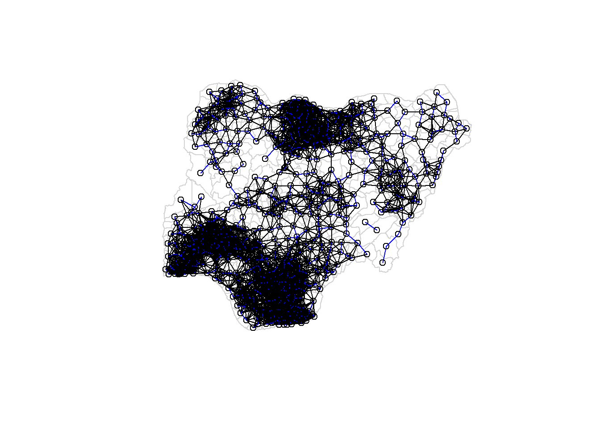

pacman::p_load(sf, tidyverse, tmap, spdep, funModeling,readr)In_Class_Exercise2 : Nigeria Water Functional & Non Functional Water Points
1. Overview.
Water is an important resource to mankind. Clean and accessible water is critical to human health. It provides a healthy environment, a sustainable economy, reduces poverty and ensures peace and security. Yet over 40% of the global population does not have access to sufficient clean water. By 2025, 1.8 billion people will be living in countries or regions with absolute water scarcity, according to UN-Water. The lack of water poses a major threat to several sectors, including food security. Agriculture uses about 70% of the world’s accessible freshwater.
Developing countries are most affected by water shortages and poor water quality. Up to 80% of illnesses in the developing world are linked to inadequate water supply and sanitation. Despite technological advancement, providing clean water to the rural community is still a major development issue in many countries globally, especially countries in the Africa continent.
To address the issue of providing clean and sustainable water supply to the rural community, a global Water Point Data Exchange (WPdx) project has been initiated. The main aim of this initiative is to collect water point related data from rural areas at the water point or small water scheme level and share the data via WPdx Data Repository, a cloud-based data library. What is so special of this project is that data are collected based on WPDx Data Standard.
2. Objective.
Geospatial analytics hold tremendous potential to address complex problems facing society. In this study, I am tasked to apply appropriate global and local measures of spatial association techniques to reveals the spatial patterns of ‘Not Functional’ water points. For the purpose of this study, Nigeria will be used as the study country.
3. Importing Geospatial Data.
3.1 Import the data.
Here, we use pacman command to load following packages -
sf (simple feature) - Used for importing and handling geospatial data in R
tidyverse - Used for data wrangling in R
spdep - Used to compute spatial weights, global & local spatial autocorrelation statistics
funmodeling - This package contains a set of functions related to exploratory data analysis, data preparation, and model performance
We are using following two datasets -
- Aspatial Data -
In following code chunk we use read_csv command of readr package to read comma separated file.
The output R object is called water_point_csv and it is a tibble data frame.
water_point_csv <- read_csv('C:/Yogendra345/ISSS624_A01/InClass_Ex02/Africa_Water/data/Water_Point.csv')Warning: One or more parsing issues, call `problems()` on your data frame for details,
e.g.:
dat <- vroom(...)
problems(dat)Rows: 406566 Columns: 70
── Column specification ────────────────────────────────────────────────────────
Delimiter: ","
chr (43): #source, #report_date, #status_id, #water_source_clean, #water_sou...
dbl (23): row_id, #lat_deg, #lon_deg, #install_year, #fecal_coliform_value, ...
lgl (4): #rehab_year, #rehabilitator, is_urban, latest_record
ℹ Use `spec()` to retrieve the full column specification for this data.
ℹ Specify the column types or set `show_col_types = FALSE` to quiet this message.After running code chunk above, we can observe that there are 406566 rows and 70 columns. This helps us to tally with source data and check if all records are correctly imported in R or not.
After importing the data file into R, it is important for us to examine if the data file has been imported correctly.
The code chunk below shows list() of Base R instead of glimpse() is used to do the job.
list(water_point_csv)[[1]]
# A tibble: 406,566 × 70
row_id `#source` #lat_d…¹ #lon_…² #repo…³ #stat…⁴ #wate…⁵ #wate…⁶ #wate…⁷
<dbl> <chr> <dbl> <dbl> <chr> <chr> <chr> <chr> <chr>
1 651816 Water For Pe… -1.57e+1 35.1 06/11/… Yes <NA> <NA> Kiosk
2 584864 Global Envir… 6.72e+0 -1.58 10/25/… Yes <NA> <NA> Tapsta…
3 509399 GOAL 8.00e+0 -11.3 12/31/… Yes <NA> <NA> Tapsta…
4 21983 WASH Liberia 8.08e+0 -10.1 12/04/… Yes <NA> <NA> Tapsta…
5 660321 Water For Pe… 1.87e-1 30.4 03/14/… Yes Piped … Piped … <NA>
6 666619 Water For Pe… -4.23e-2 30.4 03/19/… Yes Piped … Piped … <NA>
7 657081 Water For Pe… 1.58e-3 30.3 03/05/… Yes <NA> <NA> Tapsta…
8 669213 Water For Pe… 4.72e-2 30.4 09/07/… Yes <NA> <NA> Tapsta…
9 668012 Water For Pe… 2.95e-1 30.7 03/02/… Yes <NA> <NA> Tapsta…
10 672047 Water For Pe… 2.85e-1 30.6 03/20/… Yes Piped … Piped … <NA>
# … with 406,556 more rows, 61 more variables: `#water_tech_category` <chr>,
# `#facility_type` <chr>, `#clean_country_name` <chr>, `#clean_adm1` <chr>,
# `#clean_adm2` <chr>, `#clean_adm3` <chr>, `#clean_adm4` <chr>,
# `#install_year` <dbl>, `#installer` <chr>, `#rehab_year` <lgl>,
# `#rehabilitator` <lgl>, `#management_clean` <chr>, `#status_clean` <chr>,
# `#pay` <chr>, `#fecal_coliform_presence` <chr>,
# `#fecal_coliform_value` <dbl>, `#subjective_quality` <chr>, …The output reveals that listing tibble data frame consists of 406566 rows and 70 columns. Two useful fields we are going to use in the next phase are latitude(#lat_deg) and longitude(#lon_deg). Note that they are in decimal degree format. As a best guess, we will assume that the data is in wgs84 Geographic Coordinate System.
- Geospatial Data -
geoBoundaries-NGA-ADM2 - Nigeria Level-2 Administrative Boundary (also known as Local Government Area) polygon features GIS data will be used in this take-home exercise. The data can be downloaded either from The Humanitarian Data Exchange portal or geoBoundaries.
The code chunk below uses st_read() function of sf package to import geoBoundaries-NGA-ADM2 shapefile into R as a polygon feature data frame. Note that when the input geospatial data is in shapefile format, two arguments will be used, namely:
dsnto define the data path andlayerto provide the shapefile name. Also note that no extension such as .shp, .dbf, .prj and .shx are needed.wp = st_read(dsn = "C:/Yogendra345/ISSS624_A01/InClass_Ex02/Africa_Water/data/new_data1", layer = "geo_Export", crs = 4326)%>% filter(clean_coun == "Nigeria")Reading layer `geo_Export' from data source `C:\Yogendra345\ISSS624_A01\InClass_Ex02\Africa_Water\data\new_data1' using driver `ESRI Shapefile'Warning: st_crs<- : replacing crs does not reproject data; use st_transform for thatSimple feature collection with 406566 features and 72 fields Geometry type: POINT Dimension: XY Bounding box: xmin: -92.05073 ymin: -27.31495 xmax: 92.32694 ymax: 26.65622 Geodetic CRS: WGS 84
3.2 Quick Visualization of Imported Data.
In geospatial data science, by looking at the feature information is not enough. We are also interested to visualize the geospatial features. Here we will use basic command plot() of R Graphic that comes in very handy as shown in the code chunk below.
plot(wp)Warning: plotting the first 9 out of 72 attributes; use max.plot = 72 to plot
allplot(st_geometry(wp))#plot(wp_2)The default plot of an sf object is a multi-plot of all attributes, up to a reasonable maximum as shown above. We can, however, choose to plot only the geometry by using the code chunk below.
#plot(st_geometry(wp_2))3.3 Assigning EPSG code to a simple feature data frame
One of the common issue that can happen during importing geospatial data into R is that the coordinate system of the source data was either missing (such as due to missing .proj for ESRI shapefile) or wrongly assigned during the importing process.
This is an example the coordinate system of wp2_nga simple feature data frame by using st_crs() of sf package as shown in the code chunk below.
st_crs(wp)Coordinate Reference System:
User input: EPSG:4326
wkt:
GEOGCRS["WGS 84",
DATUM["World Geodetic System 1984",
ELLIPSOID["WGS 84",6378137,298.257223563,
LENGTHUNIT["metre",1]]],
PRIMEM["Greenwich",0,
ANGLEUNIT["degree",0.0174532925199433]],
CS[ellipsoidal,2],
AXIS["geodetic latitude (Lat)",north,
ORDER[1],
ANGLEUNIT["degree",0.0174532925199433]],
AXIS["geodetic longitude (Lon)",east,
ORDER[2],
ANGLEUNIT["degree",0.0174532925199433]],
USAGE[
SCOPE["Horizontal component of 3D system."],
AREA["World."],
BBOX[-90,-180,90,180]],
ID["EPSG",4326]]3.4 Create rds data format file.
Next, write_rds() of readr package is used to save the extracted sf data table (i.e. wp) into an output file in rds data format. The output file is called .rds and it is saved in geodata sub-folder.
write_rds(wp, "C:/Yogendra345/ISSS624_A01/InClass_Ex02/Africa_Water/data/new_data1/RDS/wp_nga.rds")3.5 Importing Nigeria LGA boundary data.
Now, we are going to import the LGA boundary data into R environment by using the code chunk below.
nga <- st_read(dsn = "C:/Yogendra345/ISSS624_A01/InClass_Ex02/Africa_Water/data/new_data1",layer = "geo_export",crs = 4326)Reading layer `geo_export' from data source
`C:\Yogendra345\ISSS624_A01\InClass_Ex02\Africa_Water\data\new_data1'
using driver `ESRI Shapefile'Warning: st_crs<- : replacing crs does not reproject data; use st_transform for
thatSimple feature collection with 406566 features and 72 fields
Geometry type: POINT
Dimension: XY
Bounding box: xmin: -92.05073 ymin: -27.31495 xmax: 92.32694 ymax: 26.65622
Geodetic CRS: WGS 84Thing to learn from the code chunk above.
st_read()of sf package is used to import geoBoundaries-NGA-ADM2 shapefile into R environment and save the imported geospatial data into simple feature data table.
4. Data Wrangling.
4.1 Recoding NA values into string.
In the code chunk below, replace_na() is used to re-code all the NA values in status_cle field into Unknown.
#|eval: false
wp_nga <- read_rds("C:/Yogendra345/ISSS624_A01/InClass_Ex02/Africa_Water/data/new_data1/RDS/wp_nga.rds") %>%
mutate(status_cle = replace_na(status_cle, "Unknown"))4.2 Exploratory Data Analysis (EDA).
In the code chunk below, freq() of funModeling package is used to display the distribution of status_cle field in wp_nga.
freq(data=wp_nga,
input = 'status_cle')Warning: The `<scale>` argument of `guides()` cannot be `FALSE`. Use "none" instead as
of ggplot2 3.3.4.
ℹ The deprecated feature was likely used in the funModeling package.
Please report the issue at <https://github.com/pablo14/funModeling/issues>.
status_cle frequency percentage cumulative_perc
1 Functional 45883 48.29 48.29
2 Non-Functional 29385 30.93 79.22
3 Unknown 10656 11.22 90.44
4 Functional but needs repair 4579 4.82 95.26
5 Non-Functional due to dry season 2403 2.53 97.79
6 Functional but not in use 1686 1.77 99.56
7 Abandoned/Decommissioned 234 0.25 99.81
8 Abandoned 175 0.18 99.99
9 Non functional due to dry season 7 0.01 100.00Above bar plot shows us that, we have 48.29% functional water points and 30.93% non-functional water points.
Total number of water points 7 + 175 + 234 + 1686 + 2403 + 4579 + 10656 + 29385 + 45883 = 95008.
5. Extracting Water Point Data.
In this section, we will extract the water point records by using classes in status_cle field. If we see the source data, we observe that water points are classified as -
Functional
Functional but not in use
Functional but needs repair
Unknown
Non-functional
Non-functional due to dry season
Abandoned / Decommissioned
5.1 Extracting funtional water point.
wpt_functional <- wp_nga %>%
filter(status_cle %in%
c("Functional",
"Functional but not in use",
"Functional but needs repair"))Let us draw a bar plot graph to visualize water points using freq function of funmodeling package.
freq(data=wpt_functional,
input = 'status_cle')
status_cle frequency percentage cumulative_perc
1 Functional 45883 87.99 87.99
2 Functional but needs repair 4579 8.78 96.77
3 Functional but not in use 1686 3.23 100.005.2 Extracting ‘Non-funtional’ water point.
In the code chunk below, filter() of dplyr is used to select non-functional water points.
wpt_nonfunctional <- wp_nga %>%
filter(status_cle %in%
c("Abandoned/Decommissioned",
"Abandoned",
"Non-Functional",
"Non functional due to dry season",
"Non-Functional due to dry season"))freq(data=wpt_nonfunctional,
input = 'status_cle')
status_cle frequency percentage cumulative_perc
1 Non-Functional 29385 91.25 91.25
2 Non-Functional due to dry season 2403 7.46 98.71
3 Abandoned/Decommissioned 234 0.73 99.44
4 Abandoned 175 0.54 99.98
5 Non functional due to dry season 7 0.02 100.005.4 Extracting water point with ‘Unknown’ class.
In the code chunk below, filter() of dplyr is used to select water points with unknown status.
wpt_unknown <- wp_nga %>%
filter(status_cle == "Unknown")5.4 Performing Point-in-Polygon Count.
nga_wp <- nga %>%
mutate(`total wpt` = lengths(
st_intersects(nga, wp_nga))) %>%
mutate(`wpt functional` = lengths(
st_intersects(nga, wpt_functional))) %>%
mutate(`wpt non-functional` = lengths(
st_intersects(nga, wpt_nonfunctional))) %>%
mutate(`wpt unknown` = lengths(
st_intersects(nga, wpt_unknown)))5.5 Saving the Analytical Data Table.
nga_wp <- nga_wp %>%
mutate(pct_functional = `wpt functional`/`total wpt`) %>%
mutate(`pct_non-functional` = `wpt non-functional`/`total wpt`) %>%
select(3:4, 9:10, 18:23)Things to learn from the code chunk above:
mutate()of dplyr package is used to derive two fields namely pct_functional and pct_non-functional.to keep the file size small,
select()of dplyr is used to retain only field 3,4,9,10, 18,19,20,21,22,and 23.
Now, we have the tidy sf data table subsequent analysis. We will save the sf data table into rds format.
write_rds(nga_wp, "C:/Yogendra345/ISSS624_A01/InClass_Ex02/Africa_Water/data/new_data1/RDS/nga_wp.rds")6. Visualizing the spatial distribution of water points.
nga_wp <- read_rds("C:/Yogendra345/ISSS624_A01/InClass_Ex02/Africa_Water/data/new_data1/RDS/nga_wp1.rds")
total <- qtm(nga_wp, "total wpt")+
tm_layout(legend.outside = FALSE,
legend.stack = "vertical",
legend.text.size =0.30,
legend.title.size=0.4)
wp_functional <- qtm(nga_wp, "wpt functional")+
tm_layout(legend.outside = FALSE,
legend.stack = "vertical",
legend.text.size =0.3,
legend.title.size=0.4)
wp_nonfunctional <- qtm(nga_wp, "wpt non-functional")+
tm_layout(legend.outside = FALSE,
legend.stack = "vertical",
legend.text.size =0.3,
legend.title.size=0.4)
unknown <- qtm(nga_wp, "wpt unknown")+
tm_layout(legend.outside = FALSE,
legend.stack = "vertical",
legend.text.size =0.35,
legend.title.size=0.4)
tmap_arrange(total, wp_functional, wp_nonfunctional, unknown, asp=1, ncol=2)tm_shape(nga_wp)+
tm_fill(c("wpt non-functional", "wpt functional"),
style = "equal",
palette = "Blues") +
tm_layout(legend.position = c("right", "bottom")) +
tm_borders(alpha = 0.7) +
tmap_style("classic")tmap style set to "classic"other available styles are: "white", "gray", "natural", "cobalt", "col_blind", "albatross", "beaver", "bw", "watercolor" 7. Computing Contiguity Spatial Weights.
In this section we will further analyse using poly2nb() of spdep package to compute contiguity weight matrices for the study area. This function builds a neighbours list based on regions with contiguous boundaries.
IMPORTANT NOTE - We can pass a “queen” argument that takes TRUE or FALSE as options. If we do not specify this argument the default is set to TRUE, that is, if we don’t specify queen = FALSE this function will return a list of first order neighbours using the Queen criteria.
7.1 Computing (QUEEN) contiguity based neighbors.
The code chunk below is used to compute Queen contiguity weight matrix.
wm_q <- poly2nb(nga_wp, queen=TRUE)
summary(wm_q)Neighbour list object:
Number of regions: 774
Number of nonzero links: 4440
Percentage nonzero weights: 0.7411414
Average number of links: 5.736434
1 region with no links:
86
Link number distribution:
0 1 2 3 4 5 6 7 8 9 10 11 12 14
1 2 14 57 125 182 140 122 72 41 12 4 1 1
2 least connected regions:
138 560 with 1 link
1 most connected region:
508 with 14 linksThe summary report above shows that there are 774 area units in Nigeria.
The most connected unit has 14 neighbors and there are 2 regions with just one neighbor.
For each polygon in our polygon object, wm_q lists all neighboring polygons. For example, to see the neighbors for the first polygon in the object, type:
wm_q[[1]][1] 2 548 624 721Polygon 1 has 4 neighbors.
wm_q[[508]] [1] 20 106 123 171 174 239 402 419 468 471 494 511 644 753Polygon 508 has 14 neighbors.
nga_wp$shapeName[508][1] "Mokwa"nga_wp$shapeName[c(20,106,123,171,174,239,402,419,468,471,494,511,644,753)] [1] "Agaie" "Bida" "Borgu" "Edati" "Edu" "Gbako"
[7] "Kaiama" "Katcha" "Lavun" "Lokoja" "Mashegu" "Moro"
[13] "Pategi" "Wushishi"We can retrieve the Functional Water Points of these 14 regions by using the code chunk below.
nb1 <- wm_q[[508]]
nb1 <- nga_wp$`wpt functional`[nb1]
nb1 [1] 47 211 80 103 126 101 114 22 65 41 18 101 154 72str(wm_q)List of 774
$ : int [1:4] 2 548 624 721
$ : int [1:3] 1 624 721
$ : int [1:3] 261 447 507
$ : int [1:7] 257 263 436 446 454 466 709
$ : int [1:5] 203 208 331 617 738
$ : int [1:7] 170 217 218 337 379 553 758
$ : int [1:6] 8 176 214 281 349 555
$ : int [1:4] 7 214 544 555
$ : int [1:5] 18 104 337 601 757
$ : int [1:7] 25 216 325 364 365 528 632
$ : int [1:7] 26 27 43 157 191 524 565
$ : int [1:8] 135 263 417 446 520 690 695 709
$ : int [1:5] 31 37 471 583 584
$ : int [1:8] 170 362 363 546 577 581 589 626
$ : int [1:7] 49 82 177 297 306 352 580
$ : int [1:5] 30 187 328 357 360
$ : int [1:3] 35 638 639
$ : int [1:5] 9 19 104 576 601
$ : int [1:6] 18 103 104 376 574 576
$ : int [1:5] 419 466 471 508 641
$ : int [1:5] 61 162 269 520 596
$ : int [1:3] 49 297 326
$ : int [1:5] 54 291 537 618 619
$ : int [1:4] 123 527 673 761
$ : int [1:7] 10 181 216 314 325 366 552
$ : int [1:4] 11 27 191 562
$ : int [1:5] 11 26 562 565 762
$ : int [1:7] 29 173 300 315 316 358 369
$ : int [1:7] 28 173 182 358 378 460 591
$ : int [1:8] 16 38 39 186 192 329 357 360
$ : int [1:6] 13 94 211 471 561 584
$ : int [1:3] 51 62 693
$ : int [1:6] 166 227 238 655 743 750
$ : int [1:7] 42 104 213 330 553 559 757
$ : int [1:7] 17 275 295 378 460 638 639
$ : int [1:8] 50 107 164 247 408 432 455 759
$ : int [1:11] 13 38 40 211 212 320 570 583 584 620 ...
$ : int [1:7] 30 37 39 40 41 192 320
$ : int [1:4] 30 38 186 320
$ : int [1:4] 37 38 41 620
$ : int [1:5] 38 40 192 620 634
$ : int [1:4] 34 136 137 559
$ : int [1:3] 11 157 524
$ : int [1:6] 45 290 303 328 360 634
$ : int [1:3] 44 290 303
$ : int [1:4] 438 521 668 742
$ : int [1:5] 166 234 238 698 750
$ : int [1:4] 113 265 386 701
$ : int [1:7] 15 22 51 297 326 580 623
$ : int [1:8] 36 98 107 409 416 432 681 696
$ : int [1:8] 32 49 62 207 461 580 623 693
$ : int [1:6] 53 78 80 165 602 636
$ : int [1:8] 52 80 199 280 602 621 622 739
$ : int [1:7] 23 79 293 294 532 537 618
$ : int [1:3] 122 430 605
$ : int [1:5] 77 376 533 576 728
$ : int [1:4] 58 199 322 621
$ : int [1:7] 57 322 323 522 523 621 622
$ : int [1:5] 88 128 493 700 714
$ : int [1:7] 61 158 561 578 592 596 626
$ : int [1:5] 21 60 269 596 626
$ : int [1:6] 32 51 207 461 462 693
$ : int [1:6] 90 237 384 416 467 765
$ : int [1:8] 65 74 109 113 131 148 251 407
$ : int [1:5] 64 74 113 265 701
$ : int [1:6] 103 104 288 351 559 574
$ : int [1:7] 304 348 511 594 609 640 694
$ : int [1:2] 157 191
$ : int [1:9] 115 140 146 248 273 274 473 500 512
$ : int [1:5] 71 301 341 343 610
$ : int [1:9] 70 173 298 299 301 343 344 550 625
$ : int [1:8] 73 361 594 607 609 638 639 665
$ : int [1:6] 72 361 374 377 665 666
$ : int [1:6] 64 65 109 683 701 754
$ : int [1:7] 272 398 422 433 485 501 768
$ : int [1:8] 254 287 427 459 547 647 677 751
$ : int [1:6] 56 533 534 579 716 728
$ : int [1:7] 52 79 80 165 215 532 579
$ : int [1:5] 54 78 532 579 618
$ : int [1:5] 52 53 78 215 739
$ : int [1:5] 99 145 233 426 689
$ : int [1:3] 15 352 580
$ : int [1:4] 132 258 383 414
$ : int [1:5] 123 148 437 673 692
$ : int [1:7] 105 156 394 654 675 707 712
$ : int 0
$ : int [1:6] 151 221 226 399 410 486
$ : int [1:6] 59 150 489 648 700 714
$ : int [1:7] 260 408 416 463 674 681 759
$ : int [1:9] 63 163 232 236 237 452 497 710 765
$ : int [1:4] 160 271 406 440
$ : int [1:6] 119 390 392 487 656 668
$ : int [1:6] 123 354 402 607 665 666
$ : int [1:8] 31 158 436 471 520 561 596 709
$ : int [1:6] 391 392 405 469 656 708
$ : int [1:7] 97 139 389 403 420 451 653
$ : int [1:5] 96 389 451 662 773
$ : int [1:5] 50 231 432 696 708
$ : int [1:5] 81 426 689 760 769
[list output truncated]
- attr(*, "class")= chr "nb"
- attr(*, "region.id")= chr [1:774] "1" "2" "3" "4" ...
- attr(*, "call")= language poly2nb(pl = nga_wp, queen = TRUE)
- attr(*, "type")= chr "queen"
- attr(*, "sym")= logi TRUE7.2 Creating (ROOK) contiguity based neighbors.
The code chunk below is used to compute Rook contiguity weight matrix.
wm_r <- poly2nb(nga_wp, queen=FALSE)
summary(wm_r)Neighbour list object:
Number of regions: 774
Number of nonzero links: 4420
Percentage nonzero weights: 0.7378029
Average number of links: 5.710594
1 region with no links:
86
Link number distribution:
0 1 2 3 4 5 6 7 8 9 10 11 12 14
1 2 14 59 127 181 141 124 66 42 11 4 1 1
2 least connected regions:
138 560 with 1 link
1 most connected region:
508 with 14 linksThe summary report above shows that there are 774 area units in Nigeria. The most connect area unit which is 508, has 14 neighbors. There are two area units with only one neighbors.
7.3 Visualizing contiguity weights.
A connectivity graph takes a point and displays a line to each neighboring point. We are working with polygons at the moment, so we will need to get points in order to make our connectivity graphs. The most typically method for this will be polygon centroids. We will calculate these in the sf package before moving onto the graphs. Getting Latitude and Longitude of Polygon Centroids.
longitude <- map_dbl(nga_wp$geometry, ~st_centroid(.x)[[1]])We do the same for latitude with one key difference. We access the second value per each centroid with [[2]].
latitude <- map_dbl(nga_wp$geometry, ~st_centroid(.x)[[2]])Now that we have latitude and longitude, we use cbind to put longitude and latitude into the same object.
coords <- cbind(longitude, latitude)We check the first few observations to see if things are formatted correctly.
head(coords) longitude latitude
[1,] 7.372450 5.113107
[2,] 7.352131 5.083219
[3,] 13.322900 13.428835
[4,] 6.847325 8.825812
[5,] 7.771541 5.022061
[6,] 8.219654 6.2598457.3.1 Plotting Queen contiguity based neighbors map.
plot(nga_wp$geometry, border="lightgrey")
plot(wm_q, coords, pch = 19, cex = 0.36, add = TRUE, col= "red")7.3.2 Plotting Rook contiguity based neighbors map.
plot(nga_wp$geometry, border="lightgrey")
plot(wm_r, coords, pch = 19, cex = 0.36, add = TRUE, col = "red")7.3.3 Plotting both Queen and Rook contiguity based neighbors maps.
par(mfrow=c(1,2))
plot(nga_wp$geometry, border="lightgrey")
plot(wm_q, coords, pch = 19, cex = 0.26, add = TRUE, col= "red", main="Queen Contiguity")
plot(nga_wp$geometry, border="lightgrey")
plot(wm_r, coords, pch = 19, cex = 0.26, add = TRUE, col = "red", main="Rook Contiguity")7.4 Computing distance based neighbors.
In this section, we will derive distance-based weight matrices by using dnearneigh() of spdep package.
The function identifies neighbors of region points by Euclidean distance with a distance band with lower d1= and upper d2= bounds controlled by the bounds= argument. If unprojected coordinates are used and either specified in the coordinates object x or with x as a two column matrix and longlat=TRUE, great circle distances in km will be calculated assuming the WGS84 reference ellipsoid.
7.4.1 Determine the cut-off distance
Firstly, we need to determine the upper limit for distance band by using the steps below:
Return a matrix with the indices of points belonging to the set of the k nearest neighbors of each other by using knearneigh() of spdep.
Convert the knn object returned by knearneigh() into a neighbors list of class nb with a list of integer vectors containing neighbour region number ids by using knn2nb().
Return the length of neighbour relationship edges by using nbdists() of spdep. The function returns in the units of the coordinates if the coordinates are projected, in km otherwise.
Remove the list structure of the returned object by using unlist().
#coords <- coordinates(hunan)
k1 <- knn2nb(knearneigh(coords))
k1dists <- unlist(nbdists(k1, coords, longlat = TRUE))
summary(k1dists) Min. 1st Qu. Median Mean 3rd Qu. Max.
2.662 12.815 20.242 22.031 27.706 71.661 The summary report shows that the largest first nearest neighbor distance is 71.661 km, so using this as the upper threshold gives certainty that all units will have at least one neighbor.
7.4.2 Computing fixed distance weight matrix.
Now, we will compute the distance weight matrix by using dnearneigh() as shown in the code chunk below.
wm_d72 <- dnearneigh(coords, 0, 72, longlat = TRUE)
wm_d72Neighbour list object:
Number of regions: 774
Number of nonzero links: 18112
Percentage nonzero weights: 3.023323
Average number of links: 23.40052 Next, we will use str() to display the content of wm_d72 weight matrix.
str(wm_d72)List of 774
$ : int [1:63] 2 5 10 25 55 66 68 103 122 181 ...
$ : int [1:62] 1 5 10 25 55 66 68 103 122 181 ...
$ : int [1:2] 261 447
$ : int [1:10] 12 20 257 263 446 454 466 641 690 695
$ : int [1:56] 1 2 55 66 104 136 137 169 184 202 ...
$ : int [1:21] 9 14 18 19 56 170 217 218 330 337 ...
$ : int [1:19] 8 15 22 176 177 214 281 282 283 295 ...
$ : int [1:32] 7 15 22 49 176 177 214 275 276 277 ...
$ : int [1:26] 6 18 19 56 66 77 103 104 217 218 ...
$ : int [1:63] 1 2 23 25 66 103 181 191 203 204 ...
$ : int [1:22] 26 27 43 68 126 157 190 191 204 336 ...
$ : int [1:11] 4 135 257 263 401 417 429 446 454 690 ...
$ : int [1:13] 31 37 38 40 94 211 320 393 436 471 ...
$ : int [1:24] 6 170 193 194 195 217 309 310 311 362 ...
$ : int [1:27] 7 8 22 32 49 51 62 82 176 177 ...
$ : int [1:37] 30 38 39 41 44 45 70 71 120 124 ...
$ : int [1:34] 28 29 35 72 172 173 178 179 182 275 ...
$ : int [1:29] 6 9 19 56 66 77 103 104 217 218 ...
$ : int [1:41] 6 9 18 25 56 66 77 103 104 181 ...
$ : int [1:7] 4 106 239 263 419 454 466
$ : int [1:9] 60 61 162 269 484 520 578 596 626
$ : int [1:31] 7 8 15 32 49 51 62 82 176 177 ...
$ : int [1:64] 10 25 52 53 54 56 58 77 78 79 ...
$ : int [1:5] 123 476 527 673 761
$ : int [1:68] 1 2 10 19 23 54 56 66 77 103 ...
$ : int [1:30] 11 27 43 68 157 190 191 204 336 370 ...
$ : int [1:24] 11 26 43 68 157 191 204 336 370 371 ...
$ : int [1:43] 17 29 35 70 71 124 172 173 178 179 ...
$ : int [1:45] 17 28 35 70 71 124 172 173 178 179 ...
$ : int [1:30] 16 38 39 40 41 44 45 175 185 186 ...
$ : int [1:13] 13 37 94 158 210 211 212 289 308 561 ...
$ : int [1:28] 15 22 49 51 62 82 177 196 207 214 ...
$ : int [1:29] 47 111 130 142 145 155 166 219 227 233 ...
$ : int [1:11] 42 86 104 136 137 213 375 553 559 733 ...
$ : int [1:32] 17 28 29 172 173 178 179 182 275 276 ...
$ : int [1:8] 50 107 247 408 432 455 681 759
$ : int [1:21] 13 31 38 39 40 41 186 192 197 198 ...
$ : int [1:25] 13 16 30 37 39 40 41 44 186 192 ...
$ : int [1:27] 16 30 37 38 40 41 44 185 186 192 ...
$ : int [1:21] 13 30 37 38 39 41 44 186 192 211 ...
$ : int [1:22] 16 30 37 38 39 40 44 45 186 192 ...
$ : int [1:20] 34 86 136 137 184 202 285 286 375 499 ...
$ : int [1:19] 11 26 27 68 122 126 157 190 191 246 ...
$ : int [1:27] 16 30 38 39 40 41 45 70 175 186 ...
$ : int [1:27] 16 30 41 44 70 175 187 188 192 290 ...
$ : int [1:12] 119 380 387 417 423 429 438 459 521 656 ...
$ : int [1:24] 33 111 127 130 155 166 227 234 238 242 ...
$ : int [1:12] 64 65 74 113 131 265 386 407 428 482 ...
$ : int [1:30] 8 15 22 32 51 62 82 176 177 207 ...
$ : int [1:4] 36 107 409 432
$ : int [1:27] 15 22 32 49 62 82 177 207 214 284 ...
$ : int [1:47] 23 53 54 57 58 77 78 79 80 165 ...
$ : int [1:37] 23 52 54 57 58 78 79 80 165 189 ...
$ : int [1:58] 23 25 52 53 56 57 58 77 78 79 ...
$ : int [1:33] 1 2 5 68 122 157 169 184 190 208 ...
$ : int [1:51] 6 9 18 19 23 25 54 66 77 78 ...
$ : int [1:34] 52 53 54 58 78 79 80 165 189 197 ...
$ : int [1:37] 23 52 53 54 57 78 79 165 189 197 ...
$ : int [1:5] 128 129 493 700 748
$ : int [1:14] 21 61 158 269 310 311 561 563 578 589 ...
$ : int [1:11] 21 60 162 268 269 484 578 589 592 596 ...
$ : int [1:28] 15 22 32 49 51 82 177 196 207 214 ...
$ : int [1:5] 384 416 467 765 772
$ : int [1:7] 48 65 74 113 131 265 407
$ : int [1:11] 48 64 74 109 113 265 386 407 683 701 ...
$ : int [1:47] 1 2 5 9 10 18 19 25 56 103 ...
$ : int [1:25] 72 120 124 179 182 304 305 346 347 348 ...
$ : int [1:30] 1 2 11 26 27 43 55 122 157 190 ...
$ : int [1:8] 140 146 248 274 473 500 512 513
$ : int [1:44] 16 28 29 44 45 71 120 124 172 173 ...
$ : int [1:49] 16 28 29 70 120 124 172 173 175 178 ...
$ : int [1:18] 17 67 182 361 374 378 404 566 567 568 ...
$ : int [1:6] 361 374 377 404 665 666
$ : int [1:14] 48 64 65 109 113 116 251 265 672 683 ...
$ : int [1:15] 110 229 255 258 272 373 382 398 422 433 ...
$ : int [1:9] 254 287 427 459 470 547 647 677 751
$ : int [1:55] 9 18 19 23 25 52 54 56 78 79 ...
$ : int [1:51] 23 52 53 54 56 57 58 77 79 80 ...
$ : int [1:57] 23 52 53 54 56 57 58 77 78 80 ...
$ : int [1:39] 23 52 53 54 57 77 78 79 165 189 ...
$ : int [1:19] 99 145 227 233 242 255 270 426 449 483 ...
$ : int [1:21] 15 22 32 49 51 62 177 207 214 297 ...
$ : int [1:6] 132 258 383 414 529 767
$ : int [1:3] 148 437 692
$ : int [1:38] 101 105 130 142 145 155 156 219 235 242 ...
$ : int [1:17] 34 42 136 137 184 202 285 286 499 538 ...
$ : int [1:19] 147 149 151 221 226 245 267 399 410 415 ...
$ : int [1:5] 150 489 648 700 714
$ : int [1:12] 100 107 159 260 408 458 463 542 674 676 ...
$ : int 237
$ : int [1:3] 160 271 406
$ : int [1:11] 95 119 390 391 392 423 487 642 656 668 ...
$ : int [1:3] 354 607 665
$ : int [1:7] 13 31 158 436 561 596 709
$ : int [1:10] 92 390 391 392 405 423 469 656 708 770
$ : int [1:17] 97 108 139 167 168 350 389 403 412 420 ...
$ : int [1:13] 96 108 114 139 147 168 389 403 420 451 ...
$ : int [1:4] 153 231 432 696
$ : int [1:18] 81 145 154 167 227 233 255 270 426 449 ...
[list output truncated]
- attr(*, "class")= chr "nb"
- attr(*, "region.id")= chr [1:774] "1" "2" "3" "4" ...
- attr(*, "call")= language dnearneigh(x = coords, d1 = 0, d2 = 72, longlat = TRUE)
- attr(*, "dnn")= num [1:2] 0 72
- attr(*, "bounds")= chr [1:2] "GE" "LE"
- attr(*, "nbtype")= chr "distance"
- attr(*, "sym")= logi TRUEAnother way to display the structure of the weight matrix is to combine table() and card() of spdep.
table(nga_wp$shapeName, card(wm_d72))
1 2 3 4 5 6 7 8 9 10 11 12 13 14 15 16 17 18 19 20 21 22
Aba North 0 0 0 0 0 0 0 0 0 0 0 0 0 0 0 0 0 0 0 0 0 0
Aba South 0 0 0 0 0 0 0 0 0 0 0 0 0 0 0 0 0 0 0 0 0 0
Abadam 0 1 0 0 0 0 0 0 0 0 0 0 0 0 0 0 0 0 0 0 0 0
Abaji 0 0 0 0 0 0 0 0 0 1 0 0 0 0 0 0 0 0 0 0 0 0
Abak 0 0 0 0 0 0 0 0 0 0 0 0 0 0 0 0 0 0 0 0 0 0
Abakaliki 0 0 0 0 0 0 0 0 0 0 0 0 0 0 0 0 0 0 0 0 1 0
Abeokuta North 0 0 0 0 0 0 0 0 0 0 0 0 0 0 0 0 0 0 1 0 0 0
Abeokuta South 0 0 0 0 0 0 0 0 0 0 0 0 0 0 0 0 0 0 0 0 0 0
Abi 0 0 0 0 0 0 0 0 0 0 0 0 0 0 0 0 0 0 0 0 0 0
Aboh-Mbaise 0 0 0 0 0 0 0 0 0 0 0 0 0 0 0 0 0 0 0 0 0 0
Abua/Odual 0 0 0 0 0 0 0 0 0 0 0 0 0 0 0 0 0 0 0 0 0 1
Abuja Municipal 0 0 0 0 0 0 0 0 0 0 1 0 0 0 0 0 0 0 0 0 0 0
Adavi 0 0 0 0 0 0 0 0 0 0 0 0 1 0 0 0 0 0 0 0 0 0
Ado 0 0 0 0 0 0 0 0 0 0 0 0 0 0 0 0 0 0 0 0 0 0
Ado-Odo/Ota 0 0 0 0 0 0 0 0 0 0 0 0 0 0 0 0 0 0 0 0 0 0
Ado Ekiti 0 0 0 0 0 0 0 0 0 0 0 0 0 0 0 0 0 0 0 0 0 0
Afijio 0 0 0 0 0 0 0 0 0 0 0 0 0 0 0 0 0 0 0 0 0 0
Afikpo North 0 0 0 0 0 0 0 0 0 0 0 0 0 0 0 0 0 0 0 0 0 0
Afikpo South 0 0 0 0 0 0 0 0 0 0 0 0 0 0 0 0 0 0 0 0 0 0
Agaie 0 0 0 0 0 0 1 0 0 0 0 0 0 0 0 0 0 0 0 0 0 0
Agatu 0 0 0 0 0 0 0 0 1 0 0 0 0 0 0 0 0 0 0 0 0 0
Agege 0 0 0 0 0 0 0 0 0 0 0 0 0 0 0 0 0 0 0 0 0 0
Aguata 0 0 0 0 0 0 0 0 0 0 0 0 0 0 0 0 0 0 0 0 0 0
Agwara 0 0 0 0 1 0 0 0 0 0 0 0 0 0 0 0 0 0 0 0 0 0
Ahiazu-Mbaise 0 0 0 0 0 0 0 0 0 0 0 0 0 0 0 0 0 0 0 0 0 0
Ahoada East 0 0 0 0 0 0 0 0 0 0 0 0 0 0 0 0 0 0 0 0 0 0
Ahoada West 0 0 0 0 0 0 0 0 0 0 0 0 0 0 0 0 0 0 0 0 0 0
Aiyedade 0 0 0 0 0 0 0 0 0 0 0 0 0 0 0 0 0 0 0 0 0 0
Aiyedire 0 0 0 0 0 0 0 0 0 0 0 0 0 0 0 0 0 0 0 0 0 0
Aiyekire (Gbonyin) 0 0 0 0 0 0 0 0 0 0 0 0 0 0 0 0 0 0 0 0 0 0
Ajaokuta 0 0 0 0 0 0 0 0 0 0 0 0 1 0 0 0 0 0 0 0 0 0
Ajeromi-Ifelodun 0 0 0 0 0 0 0 0 0 0 0 0 0 0 0 0 0 0 0 0 0 0
Ajingi 0 0 0 0 0 0 0 0 0 0 0 0 0 0 0 0 0 0 0 0 0 0
Akamkpa 0 0 0 0 0 0 0 0 0 0 1 0 0 0 0 0 0 0 0 0 0 0
Akinyele 0 0 0 0 0 0 0 0 0 0 0 0 0 0 0 0 0 0 0 0 0 0
Akko 0 0 0 0 0 0 0 1 0 0 0 0 0 0 0 0 0 0 0 0 0 0
Akoko-Edo 0 0 0 0 0 0 0 0 0 0 0 0 0 0 0 0 0 0 0 0 1 0
Akoko North East 0 0 0 0 0 0 0 0 0 0 0 0 0 0 0 0 0 0 0 0 0 0
Akoko North West 0 0 0 0 0 0 0 0 0 0 0 0 0 0 0 0 0 0 0 0 0 0
Akoko South East 0 0 0 0 0 0 0 0 0 0 0 0 0 0 0 0 0 0 0 0 1 0
Akoko South West 0 0 0 0 0 0 0 0 0 0 0 0 0 0 0 0 0 0 0 0 0 1
Akpabuyo 0 0 0 0 0 0 0 0 0 0 0 0 0 0 0 0 0 0 0 1 0 0
Akuku Toru 0 0 0 0 0 0 0 0 0 0 0 0 0 0 0 0 0 0 1 0 0 0
Akure North 0 0 0 0 0 0 0 0 0 0 0 0 0 0 0 0 0 0 0 0 0 0
Akure South 0 0 0 0 0 0 0 0 0 0 0 0 0 0 0 0 0 0 0 0 0 0
Akwanga 0 0 0 0 0 0 0 0 0 0 0 1 0 0 0 0 0 0 0 0 0 0
Albasu 0 0 0 0 0 0 0 0 0 0 0 0 0 0 0 0 0 0 0 0 0 0
Aleiro 0 0 0 0 0 0 0 0 0 0 0 1 0 0 0 0 0 0 0 0 0 0
Alimosho 0 0 0 0 0 0 0 0 0 0 0 0 0 0 0 0 0 0 0 0 0 0
Alkaleri 0 0 0 1 0 0 0 0 0 0 0 0 0 0 0 0 0 0 0 0 0 0
Amuwo-Odofin 0 0 0 0 0 0 0 0 0 0 0 0 0 0 0 0 0 0 0 0 0 0
Anambra East 0 0 0 0 0 0 0 0 0 0 0 0 0 0 0 0 0 0 0 0 0 0
Anambra West 0 0 0 0 0 0 0 0 0 0 0 0 0 0 0 0 0 0 0 0 0 0
Anaocha 0 0 0 0 0 0 0 0 0 0 0 0 0 0 0 0 0 0 0 0 0 0
Andoni 0 0 0 0 0 0 0 0 0 0 0 0 0 0 0 0 0 0 0 0 0 0
Aninri 0 0 0 0 0 0 0 0 0 0 0 0 0 0 0 0 0 0 0 0 0 0
Aniocha North 0 0 0 0 0 0 0 0 0 0 0 0 0 0 0 0 0 0 0 0 0 0
Aniocha South 0 0 0 0 0 0 0 0 0 0 0 0 0 0 0 0 0 0 0 0 0 0
Anka 0 0 0 0 1 0 0 0 0 0 0 0 0 0 0 0 0 0 0 0 0 0
Ankpa 0 0 0 0 0 0 0 0 0 0 0 0 0 1 0 0 0 0 0 0 0 0
Apa 0 0 0 0 0 0 0 0 0 0 1 0 0 0 0 0 0 0 0 0 0 0
Apapa 0 0 0 0 0 0 0 0 0 0 0 0 0 0 0 0 0 0 0 0 0 0
Ardo-Kola 0 0 0 0 1 0 0 0 0 0 0 0 0 0 0 0 0 0 0 0 0 0
Arewa-Dandi 0 0 0 0 0 0 1 0 0 0 0 0 0 0 0 0 0 0 0 0 0 0
Argungu 0 0 0 0 0 0 0 0 0 0 1 0 0 0 0 0 0 0 0 0 0 0
Arochukwu 0 0 0 0 0 0 0 0 0 0 0 0 0 0 0 0 0 0 0 0 0 0
Asa 0 0 0 0 0 0 0 0 0 0 0 0 0 0 0 0 0 0 0 0 0 0
Asari-Toru 0 0 0 0 0 0 0 0 0 0 0 0 0 0 0 0 0 0 0 0 0 0
Askira/Uba 0 0 0 0 0 0 0 1 0 0 0 0 0 0 0 0 0 0 0 0 0 0
Atakumosa East 0 0 0 0 0 0 0 0 0 0 0 0 0 0 0 0 0 0 0 0 0 0
Atakumosa West 0 0 0 0 0 0 0 0 0 0 0 0 0 0 0 0 0 0 0 0 0 0
Atiba 0 0 0 0 0 0 0 0 0 0 0 0 0 0 0 0 0 1 0 0 0 0
Atigbo 0 0 0 0 0 1 0 0 0 0 0 0 0 0 0 0 0 0 0 0 0 0
Augie 0 0 0 0 0 0 0 0 0 0 0 0 0 1 0 0 0 0 0 0 0 0
Auyo 0 0 0 0 0 0 0 0 0 0 0 0 0 0 1 0 0 0 0 0 0 0
Awe 0 0 0 0 0 0 0 0 1 0 0 0 0 0 0 0 0 0 0 0 0 0
Awgu 0 0 0 0 0 0 0 0 0 0 0 0 0 0 0 0 0 0 0 0 0 0
Awka North 0 0 0 0 0 0 0 0 0 0 0 0 0 0 0 0 0 0 0 0 0 0
Awka South 0 0 0 0 0 0 0 0 0 0 0 0 0 0 0 0 0 0 0 0 0 0
Ayamelum 0 0 0 0 0 0 0 0 0 0 0 0 0 0 0 0 0 0 0 0 0 0
Babura 0 0 0 0 0 0 0 0 0 0 0 0 0 0 0 0 0 0 1 0 0 0
Badagry 0 0 0 0 0 0 0 0 0 0 0 0 0 0 0 0 0 0 0 0 1 0
Bade 0 0 0 0 0 1 0 0 0 0 0 0 0 0 0 0 0 0 0 0 0 0
Bagudo 0 0 1 0 0 0 0 0 0 0 0 0 0 0 0 0 0 0 0 0 0 0
Bagwai 0 0 0 0 0 0 0 0 0 0 0 0 0 0 0 0 0 0 0 0 0 0
Bakassi 0 0 0 0 0 0 0 0 0 0 0 0 0 0 0 0 1 0 0 0 0 0
Bakori 0 0 0 0 0 0 0 0 0 0 0 0 0 0 0 0 0 0 1 0 0 0
Bakura 0 0 0 0 1 0 0 0 0 0 0 0 0 0 0 0 0 0 0 0 0 0
Balanga 0 0 0 0 0 0 0 0 0 0 0 1 0 0 0 0 0 0 0 0 0 0
Bali 1 0 0 0 0 0 0 0 0 0 0 0 0 0 0 0 0 0 0 0 0 0
Bama 0 0 1 0 0 0 0 0 0 0 0 0 0 0 0 0 0 0 0 0 0 0
Barikin Ladi 0 0 0 0 0 0 0 0 0 0 1 0 0 0 0 0 0 0 0 0 0 0
Baruten 0 0 1 0 0 0 0 0 0 0 0 0 0 0 0 0 0 0 0 0 0 0
Bassa 0 0 0 0 0 0 1 0 0 1 0 0 0 0 0 0 0 0 0 0 0 0
Batagarawa 0 0 0 0 0 0 0 0 0 0 0 0 0 0 0 0 1 0 0 0 0 0
Batsari 0 0 0 0 0 0 0 0 0 0 0 0 1 0 0 0 0 0 0 0 0 0
Bauchi 0 0 0 1 0 0 0 0 0 0 0 0 0 0 0 0 0 0 0 0 0 0
Baure 0 0 0 0 0 0 0 0 0 0 0 0 0 0 0 0 0 1 0 0 0 0
Bayo 0 0 0 0 0 0 0 0 0 0 0 1 0 0 0 0 0 0 0 0 0 0
Bebeji 0 0 0 0 0 0 0 0 0 0 0 0 0 0 0 0 0 0 0 0 0 0
Bekwara 0 0 0 0 0 0 0 0 0 1 0 0 0 0 0 0 0 0 0 0 0 0
Bende 0 0 0 0 0 0 0 0 0 0 0 0 0 0 0 0 0 0 0 0 0 0
Biase 0 0 0 0 0 0 0 0 0 0 0 0 0 0 0 0 0 0 0 0 0 0
Bichi 0 0 0 0 0 0 0 0 0 0 0 0 0 0 0 0 0 0 0 0 0 0
Bida 0 0 0 0 0 0 0 1 0 0 0 0 0 0 0 0 0 0 0 0 0 0
Billiri 0 0 0 0 0 0 0 1 0 0 0 0 0 0 0 0 0 0 0 0 0 0
Bindawa 0 0 0 0 0 0 0 0 0 0 0 0 0 0 0 0 0 0 0 0 0 0
Binji 0 0 0 0 0 0 0 0 0 0 0 1 0 0 0 0 0 0 0 0 0 0
Biriniwa 0 0 0 0 0 0 0 0 0 1 0 0 0 0 0 0 0 0 0 0 0 0
Birni Kudu 0 0 0 0 0 0 0 0 0 0 0 0 0 0 1 0 0 0 0 0 0 0
Birnin-Gwari 1 0 0 0 0 0 0 0 0 0 0 0 0 0 0 0 0 0 0 0 0 0
Birnin Kebbi 0 0 0 0 0 0 0 0 0 1 0 0 0 0 0 0 0 0 0 0 0 0
Birnin Magaji 0 0 0 0 0 0 0 0 0 1 0 0 0 0 0 0 0 0 0 0 0 0
Biu 0 0 0 0 0 1 0 0 0 0 0 0 0 0 0 0 0 0 0 0 0 0
Bodinga 0 0 0 0 0 0 0 0 0 0 0 0 0 0 0 1 0 0 0 0 0 0
Bogoro 0 0 0 0 0 0 0 0 1 0 0 0 0 0 0 0 0 0 0 0 0 0
Boki 0 0 0 0 0 0 0 1 0 0 0 0 0 0 0 0 0 0 0 0 0 0
Bokkos 0 0 0 0 0 0 0 0 0 0 1 0 0 0 0 0 0 0 0 0 0 0
Boluwaduro 0 0 0 0 0 0 0 0 0 0 0 0 0 0 0 0 0 0 0 0 0 0
Bomadi 0 0 0 0 0 0 0 0 0 0 0 0 0 0 0 0 0 1 0 0 0 0
Bonny 0 0 0 0 0 0 0 0 0 0 0 0 0 0 0 0 0 0 0 0 0 0
Borgu 1 0 0 0 0 0 0 0 0 0 0 0 0 0 0 0 0 0 0 0 0 0
Boripe 0 0 0 0 0 0 0 0 0 0 0 0 0 0 0 0 0 0 0 0 0 0
Bosso 0 0 0 0 0 0 1 0 0 0 0 0 0 0 0 0 0 0 0 0 0 0
Brass 0 0 0 0 1 0 0 0 0 0 0 0 0 0 0 0 0 0 0 0 0 0
Buji 0 0 0 0 0 0 0 0 0 0 0 0 0 0 1 0 0 0 0 0 0 0
Bukkuyum 0 0 0 0 0 1 0 0 0 0 0 0 0 0 0 0 0 0 0 0 0 0
Bungudu 0 0 0 0 0 0 1 0 0 0 0 0 0 0 0 0 0 0 0 0 0 0
Bunkure 0 0 0 0 0 0 0 0 0 0 0 0 0 0 0 0 0 0 0 0 0 0
Bunza 0 0 0 0 0 0 0 1 0 0 0 0 0 0 0 0 0 0 0 0 0 0
Bursari 0 0 0 1 0 0 0 0 0 0 0 0 0 0 0 0 0 0 0 0 0 0
Buruku 0 0 0 0 0 0 0 0 1 0 0 0 0 0 0 0 0 0 0 0 0 0
Burutu 0 0 0 0 0 0 0 0 0 0 0 0 0 1 0 0 0 0 0 0 0 0
Bwari 0 0 0 0 0 0 0 0 0 1 0 0 0 0 0 0 0 0 0 0 0 0
Calabar-Municipal 0 0 0 0 0 0 0 0 0 0 0 0 0 0 0 0 0 0 0 0 0 0
Calabar South 0 0 0 0 0 0 0 0 0 0 0 0 0 0 0 0 0 0 0 0 0 0
Chanchaga 0 0 0 0 0 0 0 0 1 0 0 0 0 0 0 0 0 0 0 0 0 0
Charanchi 0 0 0 0 0 0 0 0 0 0 0 0 0 0 0 0 0 0 0 0 0 0
Chibok 0 0 1 0 0 0 0 0 0 0 0 0 0 0 0 0 0 0 0 0 0 0
Chikun 0 0 0 0 0 1 0 0 0 0 0 0 0 0 0 0 0 0 0 0 0 0
Dala 0 0 0 0 0 0 0 0 0 0 0 0 0 0 0 0 0 0 0 0 0 0
Damaturu 0 0 0 1 0 0 0 0 0 0 0 0 0 0 0 0 0 0 0 0 0 0
Damban 0 0 0 0 0 0 0 1 0 0 0 0 0 0 0 0 0 0 0 0 0 0
Dambatta 0 0 0 0 0 0 0 0 0 0 0 0 0 0 0 0 0 0 0 0 0 0
Damboa 0 0 0 1 0 0 0 0 0 0 0 0 0 0 0 0 0 0 0 0 0 0
Dan Musa 0 0 0 0 0 0 0 0 0 0 0 0 0 0 1 0 0 0 0 0 0 0
Dandi 0 0 0 0 1 0 0 0 0 0 0 0 0 0 0 0 0 0 0 0 0 0
Dandume 0 0 0 0 0 0 0 0 0 0 0 0 0 0 1 0 0 0 0 0 0 0
Dange-Shuni 0 0 0 0 0 0 0 0 0 0 0 0 0 1 0 0 0 0 0 0 0 0
Danja 0 0 0 0 0 0 0 0 0 0 0 0 0 0 0 0 0 0 1 0 0 0
Darazo 0 0 0 0 0 0 0 1 0 0 0 0 0 0 0 0 0 0 0 0 0 0
Dass 0 0 0 0 0 0 1 0 0 0 0 0 0 0 0 0 0 0 0 0 0 0
Daura 0 0 0 0 0 0 0 0 0 0 0 0 0 0 0 0 0 0 0 1 0 0
Dawakin Kudu 0 0 0 0 0 0 0 0 0 0 0 0 0 0 0 0 0 0 0 0 0 0
Dawakin Tofa 0 0 0 0 0 0 0 0 0 0 0 0 0 0 0 0 0 0 0 0 0 0
Degema 0 0 0 0 0 0 0 0 0 0 0 0 0 0 0 0 0 0 0 0 0 0
Dekina 0 0 0 0 0 0 0 1 0 0 0 0 0 0 0 0 0 0 0 0 0 0
Demsa 0 0 0 0 0 0 0 0 0 0 0 1 0 0 0 0 0 0 0 0 0 0
Dikwa 0 0 0 0 1 0 0 0 0 0 0 0 0 0 0 0 0 0 0 0 0 0
Doguwa 0 0 0 0 0 0 1 0 0 0 0 0 0 0 0 0 0 0 0 0 0 0
Doma 0 0 0 0 0 0 0 0 0 1 0 0 0 0 0 0 0 0 0 0 0 0
Donga 0 0 0 0 1 0 0 0 0 0 0 0 0 0 0 0 0 0 0 0 0 0
Dukku 0 0 0 0 0 1 0 0 0 0 0 0 0 0 0 0 0 0 0 0 0 0
Dunukofia 0 0 0 0 0 0 0 0 0 0 0 0 0 0 0 0 0 0 0 0 0 0
Dutse 0 0 0 0 0 0 0 0 0 0 0 0 0 0 0 0 0 0 1 0 0 0
Dutsi 0 0 0 0 0 0 0 0 0 0 0 0 0 0 0 0 0 0 0 0 0 0
Dutsin-Ma 0 0 0 0 0 0 0 0 0 0 0 0 0 0 0 0 0 0 0 0 1 0
Eastern Obolo 0 0 0 0 0 0 0 0 0 0 0 0 0 0 0 0 0 0 0 0 0 0
Ebonyi 0 0 0 0 0 0 0 0 0 0 0 0 0 0 0 0 0 0 0 0 0 1
Edati 0 0 0 0 0 0 1 0 0 0 0 0 0 0 0 0 0 0 0 0 0 0
Ede North 0 0 0 0 0 0 0 0 0 0 0 0 0 0 0 0 0 0 0 0 0 0
Ede South 0 0 0 0 0 0 0 0 0 0 0 0 0 0 0 0 0 0 0 0 0 0
Edu 0 0 0 0 0 1 0 0 0 0 0 0 0 0 0 0 0 0 0 0 0 0
Efon 0 0 0 0 0 0 0 0 0 0 0 0 0 0 0 0 0 0 0 0 0 0
Egbado North 0 0 0 0 0 0 0 0 0 0 0 0 0 0 1 0 0 0 0 0 0 0
Egbado South 0 0 0 0 0 0 0 0 0 0 0 0 0 0 0 0 0 0 0 0 0 0
Egbeda 0 0 0 0 0 0 0 0 0 0 0 0 0 0 0 0 0 0 0 0 0 0
Egbedore 0 0 0 0 0 0 0 0 0 0 0 0 0 0 0 0 0 0 0 0 0 0
Egor 0 0 0 0 0 0 0 0 0 0 0 0 1 0 0 0 0 0 0 0 0 0
Ehime-Mbano 0 0 0 0 0 0 0 0 0 0 0 0 0 0 0 0 0 0 0 0 0 0
Ejigbo 0 0 0 0 0 0 0 0 0 0 0 0 0 0 0 0 0 0 0 0 0 0
Ekeremor 0 0 0 0 0 0 0 0 1 0 0 0 0 0 0 0 0 0 0 0 0 0
Eket 0 0 0 0 0 0 0 0 0 0 0 0 0 0 0 0 0 0 0 0 0 0
Ekiti 0 0 0 0 0 0 0 0 0 0 0 0 0 0 0 0 0 0 0 0 0 0
Ekiti East 0 0 0 0 0 0 0 0 0 0 0 0 0 0 0 0 0 0 0 0 0 0
Ekiti South West 0 0 0 0 0 0 0 0 0 0 0 0 0 0 0 0 0 0 0 0 0 0
Ekiti West 0 0 0 0 0 0 0 0 0 0 0 0 0 0 0 0 0 0 0 0 0 0
Ekwusigo 0 0 0 0 0 0 0 0 0 0 0 0 0 0 0 0 0 0 0 0 0 0
Eleme 0 0 0 0 0 0 0 0 0 0 0 0 0 0 0 0 0 0 0 0 0 0
Emohua 0 0 0 0 0 0 0 0 0 0 0 0 0 0 0 0 0 0 0 0 0 0
Emure 0 0 0 0 0 0 0 0 0 0 0 0 0 0 0 0 0 0 0 0 0 0
Enugu East 0 0 0 0 0 0 0 0 0 0 0 0 0 0 0 0 0 0 0 0 0 0
Enugu North 0 0 0 0 0 0 0 0 0 0 0 0 0 0 0 0 0 0 0 0 0 0
Enugu South 0 0 0 0 0 0 0 0 0 0 0 0 0 0 0 0 0 0 0 0 0 0
Epe 0 0 0 0 0 0 0 0 0 0 0 0 0 0 0 0 0 0 0 0 0 1
Esan Central 0 0 0 0 0 0 0 0 0 0 0 0 0 0 0 0 0 0 0 1 0 0
Esan North East 0 0 0 0 0 0 0 0 0 0 0 0 0 0 0 0 0 0 0 1 0 0
Esan South East 0 0 0 0 0 0 0 0 0 0 0 0 0 0 0 0 0 0 0 0 0 0
Esan West 0 0 0 0 0 0 0 0 0 0 0 0 0 0 0 0 0 0 1 0 0 0
Ese-Odo 0 0 0 0 0 0 0 1 0 0 0 0 0 0 0 0 0 0 0 0 0 0
Esit - Eket 0 0 0 0 0 0 0 0 0 0 0 0 0 0 0 0 0 0 0 0 0 0
Essien Udim 0 0 0 0 0 0 0 0 0 0 0 0 0 0 0 0 0 0 0 0 0 0
Etche 0 0 0 0 0 0 0 0 0 0 0 0 0 0 0 0 0 0 0 0 0 0
Ethiope East 0 0 0 0 0 0 0 0 0 0 0 0 0 0 0 0 0 0 0 0 0 1
Ethiope West 0 0 0 0 0 0 0 0 0 0 0 0 0 0 0 0 0 0 0 0 1 0
Eti-Osa 0 0 0 0 0 0 0 0 0 0 0 0 0 0 0 0 0 0 0 0 0 0
Etim Ekpo 0 0 0 0 0 0 0 0 0 0 0 0 0 0 0 0 0 0 0 0 0 0
Etinan 0 0 0 0 0 0 0 0 0 0 0 0 0 0 0 0 0 0 0 0 0 0
Etsako Central 0 0 0 0 0 0 0 0 0 0 0 0 0 0 0 0 0 0 0 1 0 0
Etsako East 0 0 0 0 0 0 0 0 0 0 0 0 0 0 0 0 0 1 0 0 0 0
Etsako West 0 0 0 0 0 0 0 0 0 0 0 0 0 0 0 0 0 1 0 0 0 0
Etung 0 0 0 0 0 1 0 0 0 0 0 0 0 0 0 0 0 0 0 0 0 0
Ewekoro 0 0 0 0 0 0 0 0 0 0 0 0 0 0 0 0 0 0 0 0 0 0
Ezeagu 0 0 0 0 0 0 0 0 0 0 0 0 0 0 0 0 0 0 0 0 0 0
Ezinihitte 0 0 0 0 0 0 0 0 0 0 0 0 0 0 0 0 0 0 0 0 0 0
Ezza North 0 0 0 0 0 0 0 0 0 0 0 0 0 0 0 0 0 0 0 0 0 0
Ezza South 0 0 0 0 0 0 0 0 0 0 0 0 0 0 0 0 0 0 0 0 0 0
Fagge 0 0 0 0 0 0 0 0 0 0 0 0 0 0 0 0 0 0 0 0 0 0
Fakai 0 0 0 0 0 1 0 0 0 0 0 0 0 0 0 0 0 0 0 0 0 0
Faskari 0 0 0 0 0 0 0 0 0 0 0 1 0 0 0 0 0 0 0 0 0 0
Fika 0 0 0 0 0 0 0 1 0 0 0 0 0 0 0 0 0 0 0 0 0 0
Fufore 0 0 0 0 0 1 0 0 0 0 0 0 0 0 0 0 0 0 0 0 0 0
Funakaye 0 0 0 0 0 0 0 0 1 0 0 0 0 0 0 0 0 0 0 0 0 0
Fune 0 0 0 0 1 0 0 0 0 0 0 0 0 0 0 0 0 0 0 0 0 0
Funtua 0 0 0 0 0 0 0 0 0 0 0 0 0 0 1 0 0 0 0 0 0 0
Gabasawa 0 0 0 0 0 0 0 0 0 0 0 0 0 0 0 0 0 0 0 0 0 0
Gada 0 0 0 0 1 0 0 0 0 0 0 0 0 0 0 0 0 0 0 0 0 0
Gagarawa 0 0 0 0 0 0 0 0 0 0 0 0 0 1 0 0 0 0 0 0 0 0
Gamawa 0 0 0 0 0 0 0 0 0 1 0 0 0 0 0 0 0 0 0 0 0 0
Ganjuwa 0 0 0 1 0 0 0 0 0 0 0 0 0 0 0 0 0 0 0 0 0 0
Ganye 0 0 0 1 0 0 0 0 0 0 0 0 0 0 0 0 0 0 0 0 0 0
Garki 0 0 0 0 0 0 0 0 0 0 0 0 0 0 0 0 0 0 0 1 0 0
Garko 0 0 0 0 0 0 0 0 0 0 0 0 0 0 0 0 0 0 0 0 0 0
Garum Mallam 0 0 0 0 0 0 0 0 0 0 0 0 0 0 0 0 0 0 0 0 0 0
Gashaka 0 1 0 0 0 0 0 0 0 0 0 0 0 0 0 0 0 0 0 0 0 0
Gassol 1 0 0 0 0 0 0 0 0 0 0 0 0 0 0 0 0 0 0 0 0 0
Gaya 0 0 0 0 0 0 0 0 0 0 0 0 0 0 0 0 0 0 0 0 0 0
Gbako 0 0 0 0 0 0 0 0 1 0 0 0 0 0 0 0 0 0 0 0 0 0
Gboko 0 0 0 0 0 0 0 0 1 0 0 0 0 0 0 0 0 0 0 0 0 0
Geidam 0 0 1 0 0 0 0 0 0 0 0 0 0 0 0 0 0 0 0 0 0 0
Gezawa 0 0 0 0 0 0 0 0 0 0 0 0 0 0 0 0 0 0 0 0 0 0
Giade 0 0 0 0 0 0 0 0 0 1 0 0 0 0 0 0 0 0 0 0 0 0
Girei 0 0 0 0 0 1 0 0 0 0 0 0 0 0 0 0 0 0 0 0 0 0
Giwa 0 0 0 0 0 0 0 0 0 0 0 0 0 0 0 1 0 0 0 0 0 0
Gokana 0 0 0 0 0 0 0 0 0 0 0 0 0 0 0 0 0 0 0 0 0 0
Gombe 0 0 0 0 0 0 0 0 0 1 0 0 0 0 0 0 0 0 0 0 0 0
Gombi 0 0 0 0 0 1 0 0 0 0 0 0 0 0 0 0 0 0 0 0 0 0
Goronyo 0 0 0 0 0 0 0 0 0 0 1 0 0 0 0 0 0 0 0 0 0 0
Gubio 0 0 0 0 1 0 0 0 0 0 0 0 0 0 0 0 0 0 0 0 0 0
Gudu 0 0 0 1 0 0 0 0 0 0 0 0 0 0 0 0 0 0 0 0 0 0
Gujba 0 0 0 1 0 0 0 0 0 0 0 0 0 0 0 0 0 0 0 0 0 0
Gulani 0 0 0 0 0 0 1 0 0 0 0 0 0 0 0 0 0 0 0 0 0 0
Guma 0 0 0 0 0 0 0 0 0 1 0 0 0 0 0 0 0 0 0 0 0 0
Gumel 0 0 0 0 0 0 0 0 0 0 0 0 1 0 0 0 0 0 0 0 0 0
Gummi 0 0 0 0 0 0 1 0 0 0 0 0 0 0 0 0 0 0 0 0 0 0
Gurara 0 0 0 0 0 0 0 0 0 0 1 0 0 0 0 0 0 0 0 0 0 0
Guri 0 0 0 0 0 0 0 0 0 0 0 1 0 0 0 0 0 0 0 0 0 0
Gusau 0 0 0 0 0 0 0 0 1 0 0 0 0 0 0 0 0 0 0 0 0 0
Guyuk 0 0 0 0 0 0 0 0 0 1 0 0 0 0 0 0 0 0 0 0 0 0
Guzamala 0 0 0 0 0 1 0 0 0 0 0 0 0 0 0 0 0 0 0 0 0 0
Gwadabawa 0 0 0 0 0 0 0 0 0 0 0 0 1 0 0 0 0 0 0 0 0 0
Gwagwalada 0 0 0 0 0 0 0 0 0 0 1 0 0 0 0 0 0 0 0 0 0 0
Gwale 0 0 0 0 0 0 0 0 0 0 0 0 0 0 0 0 0 0 0 0 0 0
Gwandu 0 0 0 0 0 0 0 0 0 0 0 0 0 1 0 0 0 0 0 0 0 0
Gwaram 0 0 0 0 0 0 0 0 0 1 0 0 0 0 0 0 0 0 0 0 0 0
Gwarzo 0 0 0 0 0 0 0 0 0 0 0 0 0 0 0 0 0 0 0 0 0 0
Gwer East 0 0 0 0 0 0 0 0 0 0 1 0 0 0 0 0 0 0 0 0 0 0
Gwer West 0 0 0 0 0 0 0 0 0 0 1 0 0 0 0 0 0 0 0 0 0 0
Gwiwa 0 0 0 0 0 0 0 0 0 0 0 0 0 0 0 0 0 0 0 0 0 0
Gwoza 0 0 1 0 0 0 0 0 0 0 0 0 0 0 0 0 0 0 0 0 0 0
Hadejia 0 0 0 0 0 0 0 0 0 0 0 0 0 0 1 0 0 0 0 0 0 0
Hawul 0 0 0 0 0 1 0 0 0 0 0 0 0 0 0 0 0 0 0 0 0 0
Hong 0 0 0 0 0 0 0 1 0 0 0 0 0 0 0 0 0 0 0 0 0 0
Ibadan North 0 0 0 0 0 0 0 0 0 0 0 0 0 0 0 0 0 0 0 0 0 0
Ibadan North East 0 0 0 0 0 0 0 0 0 0 0 0 0 0 0 0 0 0 0 0 0 0
Ibadan North West 0 0 0 0 0 0 0 0 0 0 0 0 0 0 0 0 0 0 0 0 0 0
Ibadan South East 0 0 0 0 0 0 0 0 0 0 0 0 0 0 0 0 0 0 0 0 0 0
Ibadan South West 0 0 0 0 0 0 0 0 0 0 0 0 0 0 0 0 0 0 0 0 0 0
Ibaji 0 0 0 0 0 0 0 0 0 0 0 0 0 0 0 0 0 0 0 0 0 0
Ibarapa Central 0 0 0 0 0 0 0 0 0 0 0 0 0 0 1 0 0 0 0 0 0 0
Ibarapa East 0 0 0 0 0 0 0 0 0 0 0 0 0 0 0 0 0 0 0 0 0 0
Ibarapa North 0 0 0 0 0 0 0 0 0 0 0 1 0 0 0 0 0 0 0 0 0 0
Ibeju/Lekki 0 0 0 0 0 0 0 0 0 0 0 0 0 0 0 0 0 0 0 0 0 0
Ibeno 0 0 0 0 0 0 0 0 0 0 0 0 0 0 0 0 0 0 0 0 0 0
Ibesikpo Asutan 0 0 0 0 0 0 0 0 0 0 0 0 0 0 0 0 0 0 0 0 0 0
Ibi 0 0 0 1 0 0 0 0 0 0 0 0 0 0 0 0 0 0 0 0 0 0
Ibiono Ibom 0 0 0 0 0 0 0 0 0 0 0 0 0 0 0 0 0 0 0 0 0 0
Idah 0 0 0 0 0 0 0 0 0 0 0 0 0 1 0 0 0 0 0 0 0 0
Idanre 0 0 0 0 0 0 0 0 0 0 0 0 0 0 0 0 0 0 0 1 0 0
Ideato North 0 0 0 0 0 0 0 0 0 0 0 0 0 0 0 0 0 0 0 0 0 0
Ideato South 0 0 0 0 0 0 0 0 0 0 0 0 0 0 0 0 0 0 0 0 0 0
Idemili North 0 0 0 0 0 0 0 0 0 0 0 0 0 0 0 0 0 0 0 0 0 0
Idemili South 0 0 0 0 0 0 0 0 0 0 0 0 0 0 0 0 0 0 0 0 0 0
Ido 0 0 0 0 0 0 0 0 0 0 0 0 0 0 0 0 0 0 0 0 0 0
Ido-Osi 0 0 0 0 0 0 0 0 0 0 0 0 0 0 0 0 0 0 0 0 0 0
Ifako-Ijaye 0 0 0 0 0 0 0 0 0 0 0 0 0 0 0 0 0 0 0 0 0 0
Ife Central 0 0 0 0 0 0 0 0 0 0 0 0 0 0 0 0 0 0 0 0 0 0
Ife East 0 0 0 0 0 0 0 0 0 0 0 0 0 0 0 0 0 0 0 0 0 0
Ife North 0 0 0 0 0 0 0 0 0 0 0 0 0 0 0 0 0 0 0 0 0 0
Ife South 0 0 0 0 0 0 0 0 0 0 0 0 0 0 0 0 0 0 0 0 0 0
Ifedayo 0 0 0 0 0 0 0 0 0 0 0 0 0 0 0 0 0 0 0 0 0 0
Ifedore 0 0 0 0 0 0 0 0 0 0 0 0 0 0 0 0 0 0 0 0 0 0
Ifelodun 0 0 0 0 0 0 0 0 0 0 0 0 0 0 0 0 1 0 0 0 0 0
Ifo 0 0 0 0 0 0 0 0 0 0 0 0 0 0 0 0 0 0 0 0 0 0
Igabi 0 0 0 0 0 0 0 0 1 0 0 0 0 0 0 0 0 0 0 0 0 0
Igalamela-Odolu 0 0 0 0 0 0 0 0 0 0 0 0 0 0 0 0 0 1 0 0 0 0
Igbo-Etiti 0 0 0 0 0 0 0 0 0 0 0 0 0 0 0 0 0 0 0 0 0 0
Igbo-Eze North 0 0 0 0 0 0 0 0 0 0 0 0 0 0 0 0 0 0 1 0 0 0
Igbo-Eze South 0 0 0 0 0 0 0 0 0 0 0 0 0 0 0 0 0 0 0 0 0 1
Igueben 0 0 0 0 0 0 0 0 0 0 0 0 0 0 0 0 0 0 1 0 0 0
Ihiala 0 0 0 0 0 0 0 0 0 0 0 0 0 0 0 0 0 0 0 0 0 0
Ihitte/Uboma 0 0 0 0 0 0 0 0 0 0 0 0 0 0 0 0 0 0 0 0 0 0
Ijebu East 0 0 0 0 0 0 0 0 0 0 0 0 0 0 0 0 0 0 0 0 1 0
Ijebu North 0 0 0 0 0 0 0 0 0 0 0 0 0 0 0 0 0 0 0 0 0 0
Ijebu North East 0 0 0 0 0 0 0 0 0 0 0 0 0 0 0 0 0 0 0 0 0 0
Ijebu Ode 0 0 0 0 0 0 0 0 0 0 0 0 0 0 0 0 0 0 0 0 0 0
Ijero 0 0 0 0 0 0 0 0 0 0 0 0 0 0 0 0 0 0 0 0 0 0
Ijumu 0 0 0 0 0 0 0 0 0 0 0 0 0 0 0 0 0 0 1 0 0 0
Ika 0 0 0 0 0 0 0 0 0 0 0 0 0 0 0 0 0 0 0 0 0 0
Ika North East 0 0 0 0 0 0 0 0 0 0 0 0 0 0 0 0 0 0 0 0 0 0
Ika South 0 0 0 0 0 0 0 0 0 0 0 0 0 0 0 0 0 0 0 0 0 0
Ikara 0 0 0 0 0 0 0 0 0 0 0 0 0 0 0 0 0 0 0 0 1 0
Ikeduru 0 0 0 0 0 0 0 0 0 0 0 0 0 0 0 0 0 0 0 0 0 0
Ikeja 0 0 0 0 0 0 0 0 0 0 0 0 0 0 0 0 0 0 0 0 0 0
Ikenne 0 0 0 0 0 0 0 0 0 0 0 0 0 0 0 0 0 0 0 0 0 0
Ikere 0 0 0 0 0 0 0 0 0 0 0 0 0 0 0 0 0 0 0 0 0 0
Ikole 0 0 0 0 0 0 0 0 0 0 0 0 0 0 0 0 0 0 0 0 0 0
Ikom 0 0 0 0 0 0 0 0 0 0 1 0 0 0 0 0 0 0 0 0 0 0
Ikono 0 0 0 0 0 0 0 0 0 0 0 0 0 0 0 0 0 0 0 0 0 0
Ikorodu 0 0 0 0 0 0 0 0 0 0 0 0 0 0 0 0 0 0 0 0 0 0
Ikot Abasi 0 0 0 0 0 0 0 0 0 0 0 0 0 0 0 0 0 0 0 0 0 0
Ikot Ekpene 0 0 0 0 0 0 0 0 0 0 0 0 0 0 0 0 0 0 0 0 0 0
Ikpoba-Okha 0 0 0 0 0 0 0 0 0 0 0 0 0 0 0 1 0 0 0 0 0 0
Ikwerre 0 0 0 0 0 0 0 0 0 0 0 0 0 0 0 0 0 0 0 0 0 0
Ikwo 0 0 0 0 0 0 0 0 0 0 0 0 0 0 0 0 0 0 0 1 0 0
Ikwuano 0 0 0 0 0 0 0 0 0 0 0 0 0 0 0 0 0 0 0 0 0 0
Ila 0 0 0 0 0 0 0 0 0 0 0 0 0 0 0 0 0 0 0 0 0 0
Ilaje 0 0 0 0 0 0 1 0 0 0 0 0 0 0 0 0 0 0 0 0 0 0
Ile-Oluji-Okeigbo 0 0 0 0 0 0 0 0 0 0 0 0 0 0 0 0 0 0 0 0 0 0
Ilejemeji 0 0 0 0 0 0 0 0 0 0 0 0 0 0 0 0 0 0 0 0 0 0
Ilesha East 0 0 0 0 0 0 0 0 0 0 0 0 0 0 0 0 0 0 0 0 0 0
Ilesha West 0 0 0 0 0 0 0 0 0 0 0 0 0 0 0 0 0 0 0 0 0 0
Illela 0 0 0 0 0 0 0 0 1 0 0 0 0 0 0 0 0 0 0 0 0 0
Ilorin East 0 0 0 0 0 0 0 0 0 0 0 0 1 0 0 0 0 0 0 0 0 0
Ilorin South 0 0 0 0 0 0 0 0 0 0 0 0 0 0 0 0 0 0 0 0 0 0
Ilorin West 0 0 0 0 0 0 0 0 0 0 0 0 0 0 0 0 0 0 0 0 0 0
Imeko-Afon 0 0 0 0 0 0 1 0 0 0 0 0 0 0 0 0 0 0 0 0 0 0
Ingawa 0 0 0 0 0 0 0 0 0 0 0 0 0 0 0 0 0 0 0 0 0 0
Ini 0 0 0 0 0 0 0 0 0 0 0 0 0 0 0 0 0 0 0 0 0 0
Ipokia 0 0 0 0 0 0 0 0 0 0 0 0 0 0 0 0 0 0 0 0 1 0
Irele 0 0 0 0 0 0 0 0 0 0 0 1 0 0 0 0 0 0 0 0 0 0
Irepo 0 0 0 0 1 0 0 0 0 0 0 0 0 0 0 0 0 0 0 0 0 0
Irepodun 0 0 0 0 0 0 0 0 0 0 0 0 0 0 0 0 0 0 0 0 0 0
Irepodun/Ifelodun 0 0 0 0 0 0 0 0 0 0 0 0 0 0 0 0 0 0 0 0 0 0
Irewole 0 0 0 0 0 0 0 0 0 0 0 0 0 0 0 0 0 0 0 0 0 0
Isa 0 0 0 0 0 1 0 0 0 0 0 0 0 0 0 0 0 0 0 0 0 0
Ise/Orun 0 0 0 0 0 0 0 0 0 0 0 0 0 0 0 0 0 0 0 0 0 0
Iseyin 0 0 0 0 0 0 0 0 0 0 0 0 0 0 0 0 0 0 0 1 0 0
Ishielu 0 0 0 0 0 0 0 0 0 0 0 0 0 0 0 0 0 0 0 0 0 0
Isi-Uzo 0 0 0 0 0 0 0 0 0 0 0 0 0 0 0 0 0 0 0 0 0 0
Isiala-Ngwa North 0 0 0 0 0 0 0 0 0 0 0 0 0 0 0 0 0 0 0 0 0 0
Isiala-Ngwa South 0 0 0 0 0 0 0 0 0 0 0 0 0 0 0 0 0 0 0 0 0 0
Isiala Mbano 0 0 0 0 0 0 0 0 0 0 0 0 0 0 0 0 0 0 0 0 0 0
Isin 0 0 0 0 0 0 0 0 0 0 0 0 0 0 0 0 0 0 0 0 0 0
Isiukwuato 0 0 0 0 0 0 0 0 0 0 0 0 0 0 0 0 0 0 0 0 0 0
Isokan 0 0 0 0 0 0 0 0 0 0 0 0 0 0 0 0 0 0 0 0 0 0
Isoko North 0 0 0 0 0 0 0 0 0 0 0 0 0 0 0 0 0 0 0 0 0 0
Isoko South 0 0 0 0 0 0 0 0 0 0 0 0 0 0 0 0 0 0 0 0 0 0
Isu 0 0 0 0 0 0 0 0 0 0 0 0 0 0 0 0 0 0 0 0 0 0
Itas/Gadau 0 0 0 0 0 0 0 0 0 0 0 0 0 1 0 0 0 0 0 0 0 0
Itesiwaju 0 0 0 0 0 0 0 0 1 0 0 0 0 0 0 0 0 0 0 0 0 0
Itu 0 0 0 0 0 0 0 0 0 0 0 0 0 0 0 0 0 0 0 0 0 0
Ivo 0 0 0 0 0 0 0 0 0 0 0 0 0 0 0 0 0 0 0 0 0 0
Iwajowa 0 0 0 0 0 0 0 1 0 0 0 0 0 0 0 0 0 0 0 0 0 0
Iwo 0 0 0 0 0 0 0 0 0 0 0 0 0 0 0 0 0 0 0 0 0 0
Izzi 0 0 0 0 0 0 0 0 0 0 0 0 0 0 0 0 0 1 0 0 0 0
Jaba 0 0 0 0 0 0 0 0 1 0 0 0 0 0 0 0 0 0 0 0 0 0
Jada 0 0 0 0 0 1 0 0 0 0 0 0 0 0 0 0 0 0 0 0 0 0
Jahun 0 0 0 0 0 0 0 0 0 0 0 0 0 0 0 0 0 0 0 0 1 0
Jakusko 0 0 0 0 0 0 1 0 0 0 0 0 0 0 0 0 0 0 0 0 0 0
Jalingo 0 0 0 0 0 1 0 0 0 0 0 0 0 0 0 0 0 0 0 0 0 0
Jama'are 0 0 0 0 0 0 0 0 0 0 0 0 0 1 0 0 0 0 0 0 0 0
Jega 0 0 0 0 0 0 0 0 0 1 0 0 0 0 0 0 0 0 0 0 0 0
Jema'a 0 0 0 0 0 0 0 0 1 0 0 0 0 0 0 0 0 0 0 0 0 0
Jere 0 0 0 0 1 0 0 0 0 0 0 0 0 0 0 0 0 0 0 0 0 0
Jibia 0 0 0 0 0 0 0 0 0 0 0 1 0 0 0 0 0 0 0 0 0 0
Jos East 0 0 0 0 0 0 0 0 0 1 0 0 0 0 0 0 0 0 0 0 0 0
Jos North 0 0 0 0 0 0 0 0 0 1 0 0 0 0 0 0 0 0 0 0 0 0
Jos South 0 0 0 0 0 0 0 0 0 1 0 0 0 0 0 0 0 0 0 0 0 0
Kabba/Bunu 0 0 0 0 0 0 0 0 0 1 0 0 0 0 0 0 0 0 0 0 0 0
Kabo 0 0 0 0 0 0 0 0 0 0 0 0 0 0 0 0 0 0 0 0 0 0
Kachia 0 0 0 0 0 1 0 0 0 0 0 0 0 0 0 0 0 0 0 0 0 0
Kaduna North 0 0 0 0 0 1 0 0 0 0 0 0 0 0 0 0 0 0 0 0 0 0
Kaduna South 0 0 0 0 0 1 0 0 0 0 0 0 0 0 0 0 0 0 0 0 0 0
Kafin Hausa 0 0 0 0 0 0 0 0 0 0 0 0 0 0 0 1 0 0 0 0 0 0
Kafur 0 0 0 0 0 0 0 0 0 0 0 0 0 0 0 0 0 0 0 0 0 0
Kaga 0 0 0 0 1 0 0 0 0 0 0 0 0 0 0 0 0 0 0 0 0 0
Kagarko 0 0 0 0 0 0 0 0 1 0 0 0 0 0 0 0 0 0 0 0 0 0
Kaiama 0 1 0 0 0 0 0 0 0 0 0 0 0 0 0 0 0 0 0 0 0 0
Kaita 0 0 0 0 0 0 0 0 0 0 0 0 0 0 1 0 0 0 0 0 0 0
Kajola 0 0 0 0 0 0 0 0 0 0 0 0 1 0 0 0 0 0 0 0 0 0
Kajuru 0 0 0 0 1 0 0 0 0 0 0 0 0 0 0 0 0 0 0 0 0 0
Kala/Balge 0 0 1 0 0 0 0 0 0 0 0 0 0 0 0 0 0 0 0 0 0 0
Kalgo 0 0 0 0 0 0 0 0 0 1 0 0 0 0 0 0 0 0 0 0 0 0
Kaltungo 0 0 0 0 0 0 0 0 0 0 1 0 0 0 0 0 0 0 0 0 0 0
Kanam 0 0 0 0 0 1 0 0 0 0 0 0 0 0 0 0 0 0 0 0 0 0
Kankara 0 0 0 0 0 0 0 0 0 0 0 0 0 0 0 0 1 0 0 0 0 0
Kanke 0 0 0 0 0 0 0 1 0 0 0 0 0 0 0 0 0 0 0 0 0 0
Kankia 0 0 0 0 0 0 0 0 0 0 0 0 0 0 0 0 0 0 0 0 0 0
Kano Municipal 0 0 0 0 0 0 0 0 0 0 0 0 0 0 0 0 0 0 0 0 0 0
Karasuwa 0 0 0 0 1 0 0 0 0 0 0 0 0 0 0 0 0 0 0 0 0 0
Karaye 0 0 0 0 0 0 0 0 0 0 0 0 0 0 0 0 0 0 0 0 0 0
Karim-Lamido 0 0 0 1 0 0 0 0 0 0 0 0 0 0 0 0 0 0 0 0 0 0
Karu 0 0 0 0 0 0 0 0 0 1 0 0 0 0 0 0 0 0 0 0 0 0
Katagum 0 0 0 0 0 0 0 0 0 0 0 0 1 0 0 0 0 0 0 0 0 0
Katcha 0 0 0 0 0 0 0 1 0 0 0 0 0 0 0 0 0 0 0 0 0 0
Katsina 0 0 0 0 0 0 0 0 0 0 0 0 0 0 0 0 1 0 0 0 0 0
Katsina-Ala 0 0 0 0 0 0 1 0 0 0 0 0 0 0 0 0 0 0 0 0 0 0
Kaugama 0 0 0 0 0 0 0 0 0 0 0 0 0 1 0 0 0 0 0 0 0 0
Kaura 0 0 0 0 0 0 0 0 0 0 1 0 0 0 0 0 0 0 0 0 0 0
Kaura Namoda 0 0 0 0 0 0 1 0 0 0 0 0 0 0 0 0 0 0 0 0 0 0
Kauru 0 0 0 0 0 0 1 0 0 0 0 0 0 0 0 0 0 0 0 0 0 0
Kazaure 0 0 0 0 0 0 0 0 0 0 0 0 0 0 0 0 0 0 0 0 0 0
Keana 0 0 0 0 0 0 1 0 0 0 0 0 0 0 0 0 0 0 0 0 0 0
Kebbe 0 0 0 0 0 0 0 0 1 0 0 0 0 0 0 0 0 0 0 0 0 0
Keffi 0 0 0 0 0 0 1 0 0 0 0 0 0 0 0 0 0 0 0 0 0 0
Khana 0 0 0 0 0 0 0 0 0 0 0 0 0 0 0 0 0 0 0 0 0 0
Kibiya 0 0 0 0 0 0 0 0 0 0 0 0 0 0 0 0 0 0 0 0 0 0
Kirfi 0 0 0 0 0 0 1 0 0 0 0 0 0 0 0 0 0 0 0 0 0 0
Kiri Kasamma 0 0 0 0 0 0 0 0 0 0 0 1 0 0 0 0 0 0 0 0 0 0
Kiru 0 0 0 0 0 0 0 0 0 0 0 0 0 0 0 0 0 0 0 0 0 0
Kiyawa 0 0 0 0 0 0 0 0 0 0 0 0 0 0 1 0 0 0 0 0 0 0
Kogi 0 0 0 0 0 0 0 1 0 0 0 0 0 0 0 0 0 0 0 0 0 0
Koko/Besse 0 0 0 0 0 1 0 0 0 0 0 0 0 0 0 0 0 0 0 0 0 0
Kokona 0 0 0 0 0 0 1 0 0 0 0 0 0 0 0 0 0 0 0 0 0 0
Kolokuma/Opokuma 0 0 0 0 0 0 0 0 0 0 0 0 0 0 0 0 0 0 0 1 0 0
Konduga 0 0 0 0 1 0 0 0 0 0 0 0 0 0 0 0 0 0 0 0 0 0
Konshisha 0 0 0 0 0 0 0 0 0 0 0 1 0 0 0 0 0 0 0 0 0 0
Kontagora 0 0 1 0 0 0 0 0 0 0 0 0 0 0 0 0 0 0 0 0 0 0
Kosofe 0 0 0 0 0 0 0 0 0 0 0 0 0 0 0 0 0 0 0 0 0 0
Kubau 0 0 0 0 0 0 0 0 1 0 0 0 0 0 0 0 0 0 0 0 0 0
Kudan 0 0 0 0 0 0 0 0 0 0 0 0 0 0 0 0 1 0 0 0 0 0
Kuje 0 0 0 0 0 0 0 0 0 1 0 0 0 0 0 0 0 0 0 0 0 0
Kukawa 0 0 1 0 0 0 0 0 0 0 0 0 0 0 0 0 0 0 0 0 0 0
Kumbotso 0 0 0 0 0 0 0 0 0 0 0 0 0 0 0 0 0 0 0 0 0 0
Kunchi 0 0 0 0 0 0 0 0 0 0 0 0 0 0 0 0 0 0 0 0 0 0
Kura 0 0 0 0 0 0 0 0 0 0 0 0 0 0 0 0 0 0 0 0 0 0
Kurfi 0 0 0 0 0 0 0 0 0 0 0 0 0 0 0 0 0 1 0 0 0 0
Kurmi 0 1 0 0 0 0 0 0 0 0 0 0 0 0 0 0 0 0 0 0 0 0
Kusada 0 0 0 0 0 0 0 0 0 0 0 0 0 0 0 0 0 0 0 0 0 0
Kwali 0 0 0 0 0 0 0 0 0 0 1 0 0 0 0 0 0 0 0 0 0 0
Kwami 0 0 0 0 0 0 0 1 0 0 0 0 0 0 0 0 0 0 0 0 0 0
Kwande 0 0 0 0 0 0 0 0 1 0 0 0 0 0 0 0 0 0 0 0 0 0
Kware 0 0 0 0 0 0 0 0 0 0 0 0 0 0 1 0 0 0 0 0 0 0
Kwaya Kusar 0 0 0 0 0 0 0 0 0 1 0 0 0 0 0 0 0 0 0 0 0 0
Lafia 0 0 0 0 0 0 0 1 0 0 0 0 0 0 0 0 0 0 0 0 0 0
Lagelu 0 0 0 0 0 0 0 0 0 0 0 0 0 0 0 0 0 0 0 0 0 0
Lagos Island 0 0 0 0 0 0 0 0 0 0 0 0 0 0 0 0 0 0 0 0 0 0
Lagos Mainland 0 0 0 0 0 0 0 0 0 0 0 0 0 0 0 0 0 0 0 0 0 0
Lamurde 0 0 0 0 0 0 0 0 0 1 0 0 0 0 0 0 0 0 0 0 0 0
Langtang North 0 0 0 0 0 0 0 1 0 0 0 0 0 0 0 0 0 0 0 0 0 0
Langtang South 0 0 0 0 0 1 0 0 0 0 0 0 0 0 0 0 0 0 0 0 0 0
Lapai 0 0 0 0 0 0 0 1 0 0 0 0 0 0 0 0 0 0 0 0 0 0
Lau 0 0 0 0 0 0 0 0 0 1 0 0 0 0 0 0 0 0 0 0 0 0
Lavun 0 0 0 0 0 1 0 0 0 0 0 0 0 0 0 0 0 0 0 0 0 0
Lere 0 0 0 0 0 1 0 0 0 0 0 0 0 0 0 0 0 0 0 0 0 0
Logo 0 0 0 0 0 0 0 1 0 0 0 0 0 0 0 0 0 0 0 0 0 0
Lokoja 0 0 0 0 0 0 1 0 0 0 0 0 0 0 0 0 0 0 0 0 0 0
Machina 0 0 0 0 0 0 0 1 0 0 0 0 0 0 0 0 0 0 0 0 0 0
Madagali 0 0 0 1 0 0 0 0 0 0 0 0 0 0 0 0 0 0 0 0 0 0
Madobi 0 0 0 0 0 0 0 0 0 0 0 0 0 0 0 0 0 0 0 0 0 0
Mafa 0 0 0 0 0 0 1 0 0 0 0 0 0 0 0 0 0 0 0 0 0 0
Magama 0 0 0 0 1 0 0 0 0 0 0 0 0 0 0 0 0 0 0 0 0 0
Magumeri 0 0 0 0 1 0 0 0 0 0 0 0 0 0 0 0 0 0 0 0 0 0
Mai'adua 0 0 0 0 0 0 0 0 0 0 0 0 0 0 0 1 0 0 0 0 0 0
Maiduguri 0 0 0 0 1 0 0 0 0 0 0 0 0 0 0 0 0 0 0 0 0 0
Maigatari 0 0 0 0 0 0 0 0 0 0 0 0 1 0 0 0 0 0 0 0 0 0
Maiha 0 0 0 1 0 0 0 0 0 0 0 0 0 0 0 0 0 0 0 0 0 0
Maiyama 0 0 0 0 0 0 0 0 0 0 1 0 0 0 0 0 0 0 0 0 0 0
Makoda 0 0 0 0 0 0 0 0 0 0 0 0 0 0 0 0 0 0 0 0 0 0
Makurdi 0 0 0 0 0 0 0 0 0 1 0 0 0 0 0 0 0 0 0 0 0 0
Malam Madori 0 0 0 0 0 0 0 0 0 0 0 0 0 0 0 1 0 0 0 0 0 0
Malumfashi 0 0 0 0 0 0 0 0 0 0 0 0 0 0 0 0 0 0 0 0 0 0
Mangu 0 0 0 0 0 0 0 0 0 0 0 0 1 0 0 0 0 0 0 0 0 0
Mani 0 0 0 0 0 0 0 0 0 0 0 0 0 0 0 0 0 0 0 0 0 0
Maradun 0 0 0 0 0 0 1 0 0 0 0 0 0 0 0 0 0 0 0 0 0 0
Mariga 0 1 0 0 0 0 0 0 0 0 0 0 0 0 0 0 0 0 0 0 0 0
Markafi 0 0 0 0 0 0 0 0 0 0 0 0 0 0 0 0 0 0 0 1 0 0
Marte 0 0 0 1 0 0 0 0 0 0 0 0 0 0 0 0 0 0 0 0 0 0
Maru 0 0 1 0 0 0 0 0 0 0 0 0 0 0 0 0 0 0 0 0 0 0
Mashegu 0 0 1 0 0 0 0 0 0 0 0 0 0 0 0 0 0 0 0 0 0 0
Mashi 0 0 0 0 0 0 0 0 0 0 0 0 0 0 0 1 0 0 0 0 0 0
Matazu 0 0 0 0 0 0 0 0 0 0 0 0 0 0 0 0 0 0 0 0 0 0
Mayo-Belwa 0 0 0 0 0 0 0 0 0 0 1 0 0 0 0 0 0 0 0 0 0 0
Mbaitoli 0 0 0 0 0 0 0 0 0 0 0 0 0 0 0 0 0 0 0 0 0 0
Mbo 0 0 0 0 0 0 0 0 0 0 0 0 0 0 0 0 0 0 0 0 0 0
Michika 0 0 0 0 0 1 0 0 0 0 0 0 0 0 0 0 0 0 0 0 0 0
Miga 0 0 0 0 0 0 0 0 0 0 0 0 0 0 0 0 0 0 1 0 0 0
Mikang 0 0 0 0 0 0 0 0 1 0 0 0 0 0 0 0 0 0 0 0 0 0
Minjibir 0 0 0 0 0 0 0 0 0 0 0 0 0 0 0 0 0 0 0 0 0 0
Misau 0 0 0 0 0 0 0 1 0 0 0 0 0 0 0 0 0 0 0 0 0 0
Mkpat Enin 0 0 0 0 0 0 0 0 0 0 0 0 0 0 0 0 0 0 0 0 0 0
Moba 0 0 0 0 0 0 0 0 0 0 0 0 0 0 0 0 0 0 0 0 0 0
Mobbar 0 1 0 0 0 0 0 0 0 0 0 0 0 0 0 0 0 0 0 0 0 0
Mokwa 0 0 0 0 1 0 0 0 0 0 0 0 0 0 0 0 0 0 0 0 0 0
Monguno 0 0 0 0 0 1 0 0 0 0 0 0 0 0 0 0 0 0 0 0 0 0
Mopa-Muro 0 0 0 0 0 0 0 0 0 0 0 0 0 1 0 0 0 0 0 0 0 0
Moro 0 0 0 0 0 0 1 0 0 0 0 0 0 0 0 0 0 0 0 0 0 0
Mubi North 0 0 0 0 0 1 0 0 0 0 0 0 0 0 0 0 0 0 0 0 0 0
Mubi South 0 0 0 0 1 0 0 0 0 0 0 0 0 0 0 0 0 0 0 0 0 0
Musawa 0 0 0 0 0 0 0 0 0 0 0 0 0 0 0 0 0 0 0 0 0 1
Mushin 0 0 0 0 0 0 0 0 0 0 0 0 0 0 0 0 0 0 0 0 0 0
Muya 0 0 0 0 0 0 0 1 0 0 0 0 0 0 0 0 0 0 0 0 0 0
Nafada 0 0 0 0 0 0 1 0 0 0 0 0 0 0 0 0 0 0 0 0 0 0
Nangere 0 0 0 0 0 0 1 0 0 0 0 0 0 0 0 0 0 0 0 0 0 0
Nasarawa 0 0 0 0 0 0 1 0 0 0 0 0 0 0 0 0 0 0 0 0 0 0
Nasarawa-Eggon 0 0 0 0 0 0 0 1 0 0 0 0 0 0 0 0 0 0 0 0 0 0
Ndokwa East 0 0 0 0 0 0 0 0 0 0 0 0 0 0 0 0 0 0 0 0 0 0
Ndokwa West 0 0 0 0 0 0 0 0 0 0 0 0 0 0 0 0 0 0 0 0 0 0
Nembe 0 0 0 0 0 0 0 0 0 0 0 0 1 0 0 0 0 0 0 0 0 0
Ngala 0 0 0 1 0 0 0 0 0 0 0 0 0 0 0 0 0 0 0 0 0 0
Nganzai 0 0 0 0 0 0 1 0 0 0 0 0 0 0 0 0 0 0 0 0 0 0
Ngaski 0 0 0 0 1 0 0 0 0 0 0 0 0 0 0 0 0 0 0 0 0 0
Ngor-Okpala 0 0 0 0 0 0 0 0 0 0 0 0 0 0 0 0 0 0 0 0 0 0
Nguru 0 0 0 0 0 0 0 0 1 0 0 0 0 0 0 0 0 0 0 0 0 0
Ningi 0 0 0 0 0 0 0 1 0 0 0 0 0 0 0 0 0 0 0 0 0 0
Njaba 0 0 0 0 0 0 0 0 0 0 0 0 0 0 0 0 0 0 0 0 0 0
Njikoka 0 0 0 0 0 0 0 0 0 0 0 0 0 0 0 0 0 0 0 0 0 0
Nkanu East 0 0 0 0 0 0 0 0 0 0 0 0 0 0 0 0 0 0 0 0 0 0
Nkanu West 0 0 0 0 0 0 0 0 0 0 0 0 0 0 0 0 0 0 0 0 0 0
Nkwerre 0 0 0 0 0 0 0 0 0 0 0 0 0 0 0 0 0 0 0 0 0 0
Nnewi North 0 0 0 0 0 0 0 0 0 0 0 0 0 0 0 0 0 0 0 0 0 0
Nnewi South 0 0 0 0 0 0 0 0 0 0 0 0 0 0 0 0 0 0 0 0 0 0
Nsit Atai 0 0 0 0 0 0 0 0 0 0 0 0 0 0 0 0 0 0 0 0 0 0
Nsit Ibom 0 0 0 0 0 0 0 0 0 0 0 0 0 0 0 0 0 0 0 0 0 0
Nsit Ubium 0 0 0 0 0 0 0 0 0 0 0 0 0 0 0 0 0 0 0 0 0 0
Nsukka 0 0 0 0 0 0 0 0 0 0 0 0 0 0 0 0 0 0 0 0 0 0
Numan 0 0 0 0 0 0 0 0 0 0 0 1 0 0 0 0 0 0 0 0 0 0
Nwangele 0 0 0 0 0 0 0 0 0 0 0 0 0 0 0 0 0 0 0 0 0 0
Obafemi-Owode 0 0 0 0 0 0 0 0 0 0 0 0 0 0 0 0 0 0 0 0 0 0
Obanliku 0 0 0 0 0 0 1 0 0 0 0 0 0 0 0 0 0 0 0 0 0 0
Obi 0 0 0 0 0 0 0 1 0 0 0 0 0 1 0 0 0 0 0 0 0 0
Obi Ngwa 0 0 0 0 0 0 0 0 0 0 0 0 0 0 0 0 0 0 0 0 0 0
Obia/Akpor 0 0 0 0 0 0 0 0 0 0 0 0 0 0 0 0 0 0 0 0 0 0
Obokun 0 0 0 0 0 0 0 0 0 0 0 0 0 0 0 0 0 0 0 0 0 0
Obot Akara 0 0 0 0 0 0 0 0 0 0 0 0 0 0 0 0 0 0 0 0 0 0
Obowo 0 0 0 0 0 0 0 0 0 0 0 0 0 0 0 0 0 0 0 0 0 0
Obubra 0 0 0 0 0 0 0 0 0 0 0 0 0 0 0 0 1 0 0 0 0 0
Obudu 0 0 0 0 0 0 0 0 1 0 0 0 0 0 0 0 0 0 0 0 0 0
Odeda 0 0 0 0 0 0 0 0 0 0 0 0 0 0 0 0 0 0 0 0 0 0
Odigbo 0 0 0 0 0 0 0 0 0 0 0 0 0 1 0 0 0 0 0 0 0 0
Odo-Otin 0 0 0 0 0 0 0 0 0 0 0 0 0 0 0 0 0 0 0 0 0 0
Odogbolu 0 0 0 0 0 0 0 0 0 0 0 0 0 0 0 0 0 0 0 0 0 0
Odukpani 0 0 0 0 0 0 0 0 0 0 0 0 0 0 0 0 0 0 0 0 0 0
Offa 0 0 0 0 0 0 0 0 0 0 0 0 0 0 0 0 0 0 0 0 0 0
Ofu 0 0 0 0 0 0 0 0 0 0 0 0 0 1 0 0 0 0 0 0 0 0
Ogba/Egbema/Ndoni 0 0 0 0 0 0 0 0 0 0 0 0 0 0 0 0 0 0 0 0 0 0
Ogbadibo 0 0 0 0 0 0 0 0 0 0 0 0 0 0 0 0 0 0 0 0 1 0
Ogbaru 0 0 0 0 0 0 0 0 0 0 0 0 0 0 0 0 0 0 0 0 0 0
Ogbia 0 0 0 0 0 0 0 0 0 0 0 0 0 0 0 0 1 0 0 0 0 0
Ogbomosho North 0 0 0 0 0 0 0 0 0 0 0 0 0 0 0 0 0 0 0 0 0 0
Ogbomosho South 0 0 0 0 0 0 0 0 0 0 0 0 0 0 0 0 0 0 0 0 0 0
Ogo Oluwa 0 0 0 0 0 0 0 0 0 0 0 0 0 0 0 0 0 0 0 0 0 0
Ogoja 0 0 0 0 0 0 0 0 0 0 0 0 0 1 0 0 0 0 0 0 0 0
Ogori/Magongo 0 0 0 0 0 0 0 0 0 0 0 0 0 0 0 0 0 0 1 0 0 0
Ogu/Bolo 0 0 0 0 0 0 0 0 0 0 0 0 0 0 0 0 0 0 0 0 0 0
Ogun waterside 0 0 0 0 0 0 0 0 0 0 1 0 0 0 0 0 0 0 0 0 0 0
Oguta 0 0 0 0 0 0 0 0 0 0 0 0 0 0 0 0 0 0 0 0 0 0
Ohafia 0 0 0 0 0 0 0 0 0 0 0 0 0 0 0 0 0 0 0 0 0 0
Ohaji/Egbema 0 0 0 0 0 0 0 0 0 0 0 0 0 0 0 0 0 0 0 0 0 0
Ohaozara 0 0 0 0 0 0 0 0 0 0 0 0 0 0 0 0 0 0 0 0 0 0
Ohaukwu 0 0 0 0 0 0 0 0 0 0 0 0 0 0 0 0 0 0 0 0 0 0
Ohimini 0 0 0 0 0 0 0 0 0 0 0 0 0 0 0 1 0 0 0 0 0 0
Oji-River 0 0 0 0 0 0 0 0 0 0 0 0 0 0 0 0 0 0 0 0 0 0
Ojo 0 0 0 0 0 0 0 0 0 0 0 0 0 0 0 0 0 0 0 0 0 0
Oju 0 0 0 0 0 0 0 0 0 0 0 0 0 1 0 0 0 0 0 0 0 0
Oke-Ero 0 0 0 0 0 0 0 0 0 0 0 0 0 0 0 0 0 0 0 0 0 0
Okehi 0 0 0 0 0 0 0 0 0 0 0 0 0 1 0 0 0 0 0 0 0 0
Okene 0 0 0 0 0 0 0 0 0 0 0 0 0 0 1 0 0 0 0 0 0 0
Okigwe 0 0 0 0 0 0 0 0 0 0 0 0 0 0 0 0 0 0 0 0 0 0
Okitipupa 0 0 0 0 0 0 0 0 0 1 0 0 0 0 0 0 0 0 0 0 0 0
Okobo 0 0 0 0 0 0 0 0 0 0 0 0 0 0 0 0 0 0 0 0 0 0
Okpe 0 0 0 0 0 0 0 0 0 0 0 0 0 0 0 0 0 0 0 0 1 0
Okpokwu 0 0 0 0 0 0 0 0 0 0 0 0 0 0 0 0 0 0 1 0 0 0
Okrika 0 0 0 0 0 0 0 0 0 0 0 0 0 0 0 0 0 0 0 0 0 0
Ola-oluwa 0 0 0 0 0 0 0 0 0 0 0 0 0 0 0 0 0 0 0 0 0 0
Olamabolo 0 0 0 0 0 0 0 0 0 0 0 0 0 0 0 0 0 1 0 0 0 0
Olorunda 0 0 0 0 0 0 0 0 0 0 0 0 0 0 0 0 0 0 0 0 0 0
Olorunsogo 0 0 0 0 0 0 0 0 0 0 1 0 0 0 0 0 0 0 0 0 0 0
Oluyole 0 0 0 0 0 0 0 0 0 0 0 0 0 0 0 0 0 0 0 0 0 0
Omala 0 0 0 0 0 0 0 1 0 0 0 0 0 0 0 0 0 0 0 0 0 0
Omumma 0 0 0 0 0 0 0 0 0 0 0 0 0 0 0 0 0 0 0 0 0 0
Ona-Ara 0 0 0 0 0 0 0 0 0 0 0 0 0 0 0 0 0 0 0 0 0 0
Ondo East 0 0 0 0 0 0 0 0 0 0 0 0 0 0 0 0 0 0 0 0 0 0
Ondo West 0 0 0 0 0 0 0 0 0 0 0 0 0 0 0 0 0 0 0 0 0 0
Onicha 0 0 0 0 0 0 0 0 0 0 0 0 0 0 0 0 0 0 0 0 0 0
Onitsha North 0 0 0 0 0 0 0 0 0 0 0 0 0 0 0 0 0 0 0 0 0 0
Onitsha South 0 0 0 0 0 0 0 0 0 0 0 0 0 0 0 0 0 0 0 0 0 0
Onna 0 0 0 0 0 0 0 0 0 0 0 0 0 0 0 0 0 0 0 0 0 0
Opobo/Nkoro 0 0 0 0 0 0 0 0 0 0 0 0 0 0 0 0 0 0 0 0 0 0
Oredo 0 0 0 0 0 0 0 0 0 0 0 0 0 1 0 0 0 0 0 0 0 0
Orelope 0 0 0 0 0 1 0 0 0 0 0 0 0 0 0 0 0 0 0 0 0 0
Orhionmwon 0 0 0 0 0 0 0 0 0 0 0 0 0 0 0 0 0 0 0 0 0 0
Ori Ire 0 0 0 0 0 0 0 0 0 0 0 0 0 0 0 0 0 0 0 0 0 1
Oriade 0 0 0 0 0 0 0 0 0 0 0 0 0 0 0 0 0 0 0 0 0 0
Orlu 0 0 0 0 0 0 0 0 0 0 0 0 0 0 0 0 0 0 0 0 0 0
Orolu 0 0 0 0 0 0 0 0 0 0 0 0 0 0 0 0 0 0 0 0 0 0
Oron 0 0 0 0 0 0 0 0 0 0 0 0 0 0 0 0 0 0 0 0 0 0
Orsu 0 0 0 0 0 0 0 0 0 0 0 0 0 0 0 0 0 0 0 0 0 0
Oru East 0 0 0 0 0 0 0 0 0 0 0 0 0 0 0 0 0 0 0 0 0 0
Oru West 0 0 0 0 0 0 0 0 0 0 0 0 0 0 0 0 0 0 0 0 0 0
Oruk Anam 0 0 0 0 0 0 0 0 0 0 0 0 0 0 0 0 0 0 0 0 0 0
Orumba North 0 0 0 0 0 0 0 0 0 0 0 0 0 0 0 0 0 0 0 0 0 0
Orumba South 0 0 0 0 0 0 0 0 0 0 0 0 0 0 0 0 0 0 0 0 0 0
Ose 0 0 0 0 0 0 0 0 0 0 0 0 0 0 0 0 0 0 0 1 0 0
Oshimili North 0 0 0 0 0 0 0 0 0 0 0 0 0 0 0 0 0 0 0 0 0 0
Oshimili South 0 0 0 0 0 0 0 0 0 0 0 0 0 0 0 0 0 0 0 0 0 0
Oshodi-Isolo 0 0 0 0 0 0 0 0 0 0 0 0 0 0 0 0 0 0 0 0 0 0
Osisioma Ngwa 0 0 0 0 0 0 0 0 0 0 0 0 0 0 0 0 0 0 0 0 0 0
Osogbo 0 0 0 0 0 0 0 0 0 0 0 0 0 0 0 0 0 0 0 0 0 0
Oturkpo 0 0 0 0 0 0 0 0 0 0 0 0 1 0 0 0 0 0 0 0 0 0
Ovia North East 0 0 0 0 0 0 0 0 0 0 0 0 1 0 0 0 0 0 0 0 0 0
Ovia South West 0 0 0 0 0 0 0 0 0 0 0 1 0 0 0 0 0 0 0 0 0 0
Owan East 0 0 0 0 0 0 0 0 0 0 0 0 0 0 0 0 0 0 1 0 0 0
Owan West 0 0 0 0 0 0 0 0 0 0 0 0 0 0 0 0 0 1 0 0 0 0
Owerri-Municipal 0 0 0 0 0 0 0 0 0 0 0 0 0 0 0 0 0 0 0 0 0 0
Owerri North 0 0 0 0 0 0 0 0 0 0 0 0 0 0 0 0 0 0 0 0 0 0
Owerri West 0 0 0 0 0 0 0 0 0 0 0 0 0 0 0 0 0 0 0 0 0 0
Owo 0 0 0 0 0 0 0 0 0 0 0 0 0 0 0 0 0 0 0 1 0 0
Oye 0 0 0 0 0 0 0 0 0 0 0 0 0 0 0 0 0 0 0 0 0 0
Oyi 0 0 0 0 0 0 0 0 0 0 0 0 0 0 0 0 0 0 0 0 0 0
Oyigbo 0 0 0 0 0 0 0 0 0 0 0 0 0 0 0 0 0 0 0 0 0 0
Oyo East 0 0 0 0 0 0 0 0 0 0 0 0 0 0 0 0 0 0 0 0 0 0
Oyo West 0 0 0 0 0 0 0 0 0 0 0 0 0 0 0 0 0 0 0 0 0 0
Oyun 0 0 0 0 0 0 0 0 0 0 0 0 0 0 0 0 0 0 0 0 0 0
Paikoro 0 0 0 0 0 0 0 1 0 0 0 0 0 0 0 0 0 0 0 0 0 0
Pankshin 0 0 0 0 0 0 0 0 0 1 0 0 0 0 0 0 0 0 0 0 0 0
Patani 0 0 0 0 0 0 0 0 0 0 0 0 0 0 0 0 0 0 0 1 0 0
Pategi 0 0 0 0 1 0 0 0 0 0 0 0 0 0 0 0 0 0 0 0 0 0
Port-Harcourt 0 0 0 0 0 0 0 0 0 0 0 0 0 0 0 0 0 0 0 0 0 0
Potiskum 0 0 0 0 0 1 0 0 0 0 0 0 0 0 0 0 0 0 0 0 0 0
Qua'an Pan 0 0 0 0 0 0 0 0 1 0 0 0 0 0 0 0 0 0 0 0 0 0
Rabah 0 0 0 0 0 0 0 0 0 0 0 0 1 0 0 0 0 0 0 0 0 0
Rafi 0 0 0 1 0 0 0 0 0 0 0 0 0 0 0 0 0 0 0 0 0 0
Rano 0 0 0 0 0 0 0 0 0 0 0 0 0 0 0 0 0 0 0 0 0 0
Remo North 0 0 0 0 0 0 0 0 0 0 0 0 0 0 0 0 0 0 0 0 0 0
Rijau 0 0 0 0 0 0 1 0 0 0 0 0 0 0 0 0 0 0 0 0 0 0
Rimi 0 0 0 0 0 0 0 0 0 0 0 0 0 0 0 0 0 0 0 0 0 1
Rimin Gado 0 0 0 0 0 0 0 0 0 0 0 0 0 0 0 0 0 0 0 0 0 0
Ringim 0 0 0 0 0 0 0 0 0 0 0 0 0 0 0 0 0 0 0 0 0 0
Riyom 0 0 0 0 0 0 0 0 0 0 0 0 1 0 0 0 0 0 0 0 0 0
Rogo 0 0 0 0 0 0 0 0 0 0 0 0 0 0 0 0 0 0 0 0 0 0
Roni 0 0 0 0 0 0 0 0 0 0 0 0 0 0 0 0 0 0 0 0 0 0
Sabon-Gari 0 0 0 0 0 0 0 0 0 0 0 0 0 0 1 0 0 0 0 0 0 0
Sabon Birni 0 0 0 1 0 0 0 0 0 0 0 0 0 0 0 0 0 0 0 0 0 0
Sabuwa 0 0 0 0 0 0 0 0 0 1 0 0 0 0 0 0 0 0 0 0 0 0
Safana 0 0 0 0 0 0 0 0 0 0 0 0 0 0 0 1 0 0 0 0 0 0
Sagbama 0 0 0 0 0 0 0 0 0 0 0 0 0 0 0 0 0 0 0 0 0 1
Sakaba 0 0 0 1 0 0 0 0 0 0 0 0 0 0 0 0 0 0 0 0 0 0
Saki East 0 0 0 0 0 0 0 0 1 0 0 0 0 0 0 0 0 0 0 0 0 0
Saki West 0 0 0 1 0 0 0 0 0 0 0 0 0 0 0 0 0 0 0 0 0 0
Sandamu 0 0 0 0 0 0 0 0 0 0 0 0 0 0 0 0 0 0 0 0 1 0
Sanga 0 0 0 0 0 0 0 0 0 0 0 1 0 0 0 0 0 0 0 0 0 0
Sapele 0 0 0 0 0 0 0 0 0 0 0 0 0 0 0 0 1 0 0 0 0 0
Sardauna 1 0 0 0 0 0 0 0 0 0 0 0 0 0 0 0 0 0 0 0 0 0
Shagamu 0 0 0 0 0 0 0 0 0 0 0 0 0 0 0 0 0 0 0 0 0 0
Shagari 0 0 0 0 0 0 0 0 0 0 0 0 1 0 0 0 0 0 0 0 0 0
Shanga 0 0 0 0 0 1 0 0 0 0 0 0 0 0 0 0 0 0 0 0 0 0
Shani 0 0 0 0 0 0 0 0 0 1 0 0 0 0 0 0 0 0 0 0 0 0
Shanono 0 0 0 0 0 0 0 0 0 0 0 0 0 0 0 0 0 0 0 0 0 0
Shelleng 0 0 0 0 0 0 0 0 0 0 0 1 0 0 0 0 0 0 0 0 0 0
Shendam 0 0 0 0 0 0 1 0 0 0 0 0 0 0 0 0 0 0 0 0 0 0
Shinkafi 0 0 0 0 1 0 0 0 0 0 0 0 0 0 0 0 0 0 0 0 0 0
Shira 0 0 0 0 0 0 0 0 0 1 0 0 0 0 0 0 0 0 0 0 0 0
Shiroro 0 0 0 0 1 0 0 0 0 0 0 0 0 0 0 0 0 0 0 0 0 0
Shomgom 0 0 0 0 0 0 0 1 0 0 0 0 0 0 0 0 0 0 0 0 0 0
Shomolu 0 0 0 0 0 0 0 0 0 0 0 0 0 0 0 0 0 0 0 0 0 0
Silame 0 0 0 0 0 0 0 0 0 0 0 0 0 0 1 0 0 0 0 0 0 0
Soba 0 0 0 0 0 0 0 0 0 0 1 0 0 0 0 0 0 0 0 0 0 0
Sokoto North 0 0 0 0 0 0 0 0 0 0 0 0 0 0 0 1 0 0 0 0 0 0
Sokoto South 0 0 0 0 0 0 0 0 0 0 0 0 0 0 0 1 0 0 0 0 0 0
Song 0 0 0 0 0 0 0 1 0 0 0 0 0 0 0 0 0 0 0 0 0 0
Southern Ijaw 0 0 0 0 0 0 0 0 1 0 0 0 0 0 0 0 0 0 0 0 0 0
Sule-Tankarkar 0 0 0 0 0 0 0 0 0 0 0 1 0 0 0 0 0 0 0 0 0 0
Suleja 0 0 0 0 0 0 0 0 0 0 0 1 0 0 0 0 0 0 0 0 0 0
Sumaila 0 0 0 0 0 0 0 0 0 0 0 0 0 0 0 0 0 1 0 0 0 0
Suru 0 0 0 0 0 0 0 0 1 0 0 0 0 0 0 0 0 0 0 0 0 0
Surulere 0 0 0 0 0 0 0 0 0 0 0 0 0 0 0 0 0 0 0 0 0 0
Tafa 0 0 0 0 0 0 0 0 0 0 0 1 0 0 0 0 0 0 0 0 0 0
Tafawa-Balewa 0 0 0 0 0 0 0 1 0 0 0 0 0 0 0 0 0 0 0 0 0 0
Tai 0 0 0 0 0 0 0 0 0 0 0 0 0 0 0 0 0 0 0 0 0 0
Takai 0 0 0 0 0 0 0 0 0 0 0 0 0 0 0 0 1 0 0 0 0 0
Takum 0 0 0 0 1 0 0 0 0 0 0 0 0 0 0 0 0 0 0 0 0 0
Talata Mafara 0 0 0 0 0 0 1 0 0 0 0 0 0 0 0 0 0 0 0 0 0 0
Tambuwal 0 0 0 0 0 0 0 0 0 0 0 0 1 0 0 0 0 0 0 0 0 0
Tangaza 0 0 0 0 0 0 0 0 0 1 0 0 0 0 0 0 0 0 0 0 0 0
Tarauni 0 0 0 0 0 0 0 0 0 0 0 0 0 0 0 0 0 0 0 0 0 0
Tarka 0 0 0 0 0 0 0 0 0 1 0 0 0 0 0 0 0 0 0 0 0 0
Tarmua 0 0 0 1 0 0 0 0 0 0 0 0 0 0 0 0 0 0 0 0 0 0
Taura 0 0 0 0 0 0 0 0 0 0 0 0 0 0 0 0 0 1 0 0 0 0
Tofa 0 0 0 0 0 0 0 0 0 0 0 0 0 0 0 0 0 0 0 0 0 0
Toro 0 0 0 0 1 0 0 0 0 0 0 0 0 0 0 0 0 0 0 0 0 0
Toto 0 0 0 0 0 1 0 0 0 0 0 0 0 0 0 0 0 0 0 0 0 0
Toungo 0 1 0 0 0 0 0 0 0 0 0 0 0 0 0 0 0 0 0 0 0 0
Tsafe 0 0 0 0 0 0 0 0 0 1 0 0 0 0 0 0 0 0 0 0 0 0
Tsanyawa 0 0 0 0 0 0 0 0 0 0 0 0 0 0 0 0 0 0 0 0 0 0
Tudun Wada 0 0 0 0 0 0 0 0 0 0 0 0 0 0 0 0 0 1 0 0 0 0
Tureta 0 0 0 0 0 0 0 0 0 1 0 0 0 0 0 0 0 0 0 0 0 0
Udenu 0 0 0 0 0 0 0 0 0 0 0 0 0 0 0 0 0 0 0 0 0 1
Udi 0 0 0 0 0 0 0 0 0 0 0 0 0 0 0 0 0 0 0 0 0 0
Udu 0 0 0 0 0 0 0 0 0 0 0 0 0 0 0 0 0 0 0 1 0 0
Udung Uko 0 0 0 0 0 0 0 0 0 0 0 0 0 0 0 0 0 0 0 0 0 0
Ughelli North 0 0 0 0 0 0 0 0 0 0 0 0 0 0 0 0 0 0 0 0 0 0
Ughelli South 0 0 0 0 0 0 0 0 0 0 0 0 0 0 0 0 0 0 0 1 0 0
Ugwunagbo 0 0 0 0 0 0 0 0 0 0 0 0 0 0 0 0 0 0 0 0 0 0
Uhunmwonde 0 0 0 0 0 0 0 0 0 0 0 0 0 0 0 0 0 0 1 0 0 0
Ukanafun 0 0 0 0 0 0 0 0 0 0 0 0 0 0 0 0 0 0 0 0 0 0
Ukum 0 0 0 0 0 1 0 0 0 0 0 0 0 0 0 0 0 0 0 0 0 0
Ukwa East 0 0 0 0 0 0 0 0 0 0 0 0 0 0 0 0 0 0 0 0 0 0
Ukwa West 0 0 0 0 0 0 0 0 0 0 0 0 0 0 0 0 0 0 0 0 0 0
Ukwuani 0 0 0 0 0 0 0 0 0 0 0 0 0 0 0 0 0 0 0 0 0 0
Umu-Nneochi 0 0 0 0 0 0 0 0 0 0 0 0 0 0 0 0 0 0 0 0 0 0
Umuahia North 0 0 0 0 0 0 0 0 0 0 0 0 0 0 0 0 0 0 0 0 0 0
Umuahia South 0 0 0 0 0 0 0 0 0 0 0 0 0 0 0 0 0 0 0 0 0 0
Ungogo 0 0 0 0 0 0 0 0 0 0 0 0 0 0 0 0 0 0 0 0 0 0
Unuimo 0 0 0 0 0 0 0 0 0 0 0 0 0 0 0 0 0 0 0 0 0 0
Uruan 0 0 0 0 0 0 0 0 0 0 0 0 0 0 0 0 0 0 0 0 0 0
Urue-Offong/Oruko 0 0 0 0 0 0 0 0 0 0 0 0 0 0 0 0 0 0 0 0 0 0
Ushongo 0 0 0 0 0 0 0 0 0 0 1 0 0 0 0 0 0 0 0 0 0 0
Ussa 0 0 0 0 1 0 0 0 0 0 0 0 0 0 0 0 0 0 0 0 0 0
Uvwie 0 0 0 0 0 0 0 0 0 0 0 0 0 0 0 0 0 0 0 0 1 0
Uyo 0 0 0 0 0 0 0 0 0 0 0 0 0 0 0 0 0 0 0 0 0 0
Uzo-Uwani 0 0 0 0 0 0 0 0 0 0 0 0 0 0 0 0 0 0 0 0 0 0
Vandeikya 0 0 0 0 0 0 0 0 0 0 1 0 0 0 0 0 0 0 0 0 0 0
Wamako 0 0 0 0 0 0 0 0 0 0 0 0 0 0 1 0 0 0 0 0 0 0
Wamba 0 0 0 0 0 0 0 0 0 0 1 0 0 0 0 0 0 0 0 0 0 0
Warawa 0 0 0 0 0 0 0 0 0 0 0 0 0 0 0 0 0 0 0 0 0 0
Warji 0 0 0 0 0 0 0 1 0 0 0 0 0 0 0 0 0 0 0 0 0 0
Warri North 0 0 0 0 0 0 0 0 0 0 0 0 0 1 0 0 0 0 0 0 0 0
Warri South 0 0 0 0 0 0 0 0 0 0 0 0 0 0 0 1 0 0 0 0 0 0
Warri South West 0 0 0 0 0 0 0 0 0 0 0 0 1 0 0 0 0 0 0 0 0 0
Wasagu/Danko 0 0 0 0 1 0 0 0 0 0 0 0 0 0 0 0 0 0 0 0 0 0
Wase 0 0 0 1 0 0 0 0 0 0 0 0 0 0 0 0 0 0 0 0 0 0
Wudil 0 0 0 0 0 0 0 0 0 0 0 0 0 0 0 0 0 0 0 0 0 0
Wukari 0 0 0 0 1 0 0 0 0 0 0 0 0 0 0 0 0 0 0 0 0 0
Wurno 0 0 0 0 0 0 0 0 0 0 0 1 0 0 0 0 0 0 0 0 0 0
Wushishi 0 0 0 0 0 0 1 0 0 0 0 0 0 0 0 0 0 0 0 0 0 0
Yabo 0 0 0 0 0 0 0 0 0 0 0 0 0 1 0 0 0 0 0 0 0 0
Yagba East 0 0 0 0 0 0 0 0 0 0 0 0 0 1 0 0 0 0 0 0 0 0
Yagba West 0 0 0 0 0 0 0 0 0 0 0 0 0 0 0 1 0 0 0 0 0 0
Yakurr 0 0 0 0 0 0 0 0 0 0 0 0 0 0 0 0 0 0 0 0 1 0
Yala 0 0 0 0 0 0 0 0 0 0 0 0 0 1 0 0 0 0 0 0 0 0
Yamaltu/Deba 0 0 0 0 0 0 0 0 0 0 1 0 0 0 0 0 0 0 0 0 0 0
Yankwashi 0 0 0 0 0 0 0 0 0 0 0 0 0 0 0 0 0 0 0 0 1 0
Yauri 0 0 0 0 1 0 0 0 0 0 0 0 0 0 0 0 0 0 0 0 0 0
Yenegoa 0 0 0 0 0 0 0 0 0 0 0 0 0 0 0 0 0 0 0 1 0 0
Yola North 0 0 0 0 0 0 0 1 0 0 0 0 0 0 0 0 0 0 0 0 0 0
Yola South 0 0 0 0 0 0 0 0 1 0 0 0 0 0 0 0 0 0 0 0 0 0
Yorro 0 0 0 0 0 1 0 0 0 0 0 0 0 0 0 0 0 0 0 0 0 0
Yunusari 0 1 0 0 0 0 0 0 0 0 0 0 0 0 0 0 0 0 0 0 0 0
Yusufari 0 0 1 0 0 0 0 0 0 0 0 0 0 0 0 0 0 0 0 0 0 0
Zaki 0 0 0 0 0 0 0 0 0 1 0 0 0 0 0 0 0 0 0 0 0 0
Zango 0 0 0 0 0 0 0 0 0 0 0 0 0 0 0 1 0 0 0 0 0 0
Zango-Kataf 0 0 0 0 0 0 0 0 0 0 1 0 0 0 0 0 0 0 0 0 0 0
Zaria 0 0 0 0 0 0 0 0 0 0 0 0 0 1 0 0 0 0 0 0 0 0
Zing 0 0 0 0 0 0 0 0 1 0 0 0 0 0 0 0 0 0 0 0 0 0
Zurmi 0 0 0 0 0 0 0 1 0 0 0 0 0 0 0 0 0 0 0 0 0 0
Zuru 0 0 0 0 0 1 0 0 0 0 0 0 0 0 0 0 0 0 0 0 0 0
23 24 25 26 27 28 29 30 31 32 33 34 35 36 37 38 39 40 41
Aba North 0 0 0 0 0 0 0 0 0 0 0 0 0 0 0 0 0 0 0
Aba South 0 0 0 0 0 0 0 0 0 0 0 0 0 0 0 0 0 0 0
Abadam 0 0 0 0 0 0 0 0 0 0 0 0 0 0 0 0 0 0 0
Abaji 0 0 0 0 0 0 0 0 0 0 0 0 0 0 0 0 0 0 0
Abak 0 0 0 0 0 0 0 0 0 0 0 0 0 0 0 0 0 0 0
Abakaliki 0 0 0 0 0 0 0 0 0 0 0 0 0 0 0 0 0 0 0
Abeokuta North 0 0 0 0 0 0 0 0 0 0 0 0 0 0 0 0 0 0 0
Abeokuta South 0 0 0 0 0 0 0 0 0 1 0 0 0 0 0 0 0 0 0
Abi 0 0 0 1 0 0 0 0 0 0 0 0 0 0 0 0 0 0 0
Aboh-Mbaise 0 0 0 0 0 0 0 0 0 0 0 0 0 0 0 0 0 0 0
Abua/Odual 0 0 0 0 0 0 0 0 0 0 0 0 0 0 0 0 0 0 0
Abuja Municipal 0 0 0 0 0 0 0 0 0 0 0 0 0 0 0 0 0 0 0
Adavi 0 0 0 0 0 0 0 0 0 0 0 0 0 0 0 0 0 0 0
Ado 0 1 0 0 0 0 0 0 0 0 0 0 0 0 0 0 0 0 0
Ado-Odo/Ota 0 0 0 0 1 0 0 0 0 0 0 0 0 0 0 0 0 0 0
Ado Ekiti 0 0 0 0 0 0 0 0 0 0 0 0 0 0 1 0 0 0 0
Afijio 0 0 0 0 0 0 0 0 0 0 0 1 0 0 0 0 0 0 0
Afikpo North 0 0 0 0 0 0 1 0 0 0 0 0 0 0 0 0 0 0 0
Afikpo South 0 0 0 0 0 0 0 0 0 0 0 0 0 0 0 0 0 0 1
Agaie 0 0 0 0 0 0 0 0 0 0 0 0 0 0 0 0 0 0 0
Agatu 0 0 0 0 0 0 0 0 0 0 0 0 0 0 0 0 0 0 0
Agege 0 0 0 0 0 0 0 0 1 0 0 0 0 0 0 0 0 0 0
Aguata 0 0 0 0 0 0 0 0 0 0 0 0 0 0 0 0 0 0 0
Agwara 0 0 0 0 0 0 0 0 0 0 0 0 0 0 0 0 0 0 0
Ahiazu-Mbaise 0 0 0 0 0 0 0 0 0 0 0 0 0 0 0 0 0 0 0
Ahoada East 0 0 0 0 0 0 0 1 0 0 0 0 0 0 0 0 0 0 0
Ahoada West 0 1 0 0 0 0 0 0 0 0 0 0 0 0 0 0 0 0 0
Aiyedade 0 0 0 0 0 0 0 0 0 0 0 0 0 0 0 0 0 0 0
Aiyedire 0 0 0 0 0 0 0 0 0 0 0 0 0 0 0 0 0 0 0
Aiyekire (Gbonyin) 0 0 0 0 0 0 0 1 0 0 0 0 0 0 0 0 0 0 0
Ajaokuta 0 0 0 0 0 0 0 0 0 0 0 0 0 0 0 0 0 0 0
Ajeromi-Ifelodun 0 0 0 0 0 1 0 0 0 0 0 0 0 0 0 0 0 0 0
Ajingi 0 0 0 0 0 0 1 0 0 0 0 0 0 0 0 0 0 0 0
Akamkpa 0 0 0 0 0 0 0 0 0 0 0 0 0 0 0 0 0 0 0
Akinyele 0 0 0 0 0 0 0 0 0 1 0 0 0 0 0 0 0 0 0
Akko 0 0 0 0 0 0 0 0 0 0 0 0 0 0 0 0 0 0 0
Akoko-Edo 0 0 0 0 0 0 0 0 0 0 0 0 0 0 0 0 0 0 0
Akoko North East 0 0 1 0 0 0 0 0 0 0 0 0 0 0 0 0 0 0 0
Akoko North West 0 0 0 0 1 0 0 0 0 0 0 0 0 0 0 0 0 0 0
Akoko South East 0 0 0 0 0 0 0 0 0 0 0 0 0 0 0 0 0 0 0
Akoko South West 0 0 0 0 0 0 0 0 0 0 0 0 0 0 0 0 0 0 0
Akpabuyo 0 0 0 0 0 0 0 0 0 0 0 0 0 0 0 0 0 0 0
Akuku Toru 0 0 0 0 0 0 0 0 0 0 0 0 0 0 0 0 0 0 0
Akure North 0 0 0 0 1 0 0 0 0 0 0 0 0 0 0 0 0 0 0
Akure South 0 0 0 0 1 0 0 0 0 0 0 0 0 0 0 0 0 0 0
Akwanga 0 0 0 0 0 0 0 0 0 0 0 0 0 0 0 0 0 0 0
Albasu 0 1 0 0 0 0 0 0 0 0 0 0 0 0 0 0 0 0 0
Aleiro 0 0 0 0 0 0 0 0 0 0 0 0 0 0 0 0 0 0 0
Alimosho 0 0 0 0 0 0 0 1 0 0 0 0 0 0 0 0 0 0 0
Alkaleri 0 0 0 0 0 0 0 0 0 0 0 0 0 0 0 0 0 0 0
Amuwo-Odofin 0 0 0 0 1 0 0 0 0 0 0 0 0 0 0 0 0 0 0
Anambra East 0 0 0 0 0 0 0 0 0 0 0 0 0 0 0 0 0 0 0
Anambra West 0 0 0 0 0 0 0 0 0 0 0 0 0 0 1 0 0 0 0
Anaocha 0 0 0 0 0 0 0 0 0 0 0 0 0 0 0 0 0 0 0
Andoni 0 0 0 0 0 0 0 0 0 0 1 0 0 0 0 0 0 0 0
Aninri 0 0 0 0 0 0 0 0 0 0 0 0 0 0 0 0 0 0 0
Aniocha North 0 0 0 0 0 0 0 0 0 0 0 1 0 0 0 0 0 0 0
Aniocha South 0 0 0 0 0 0 0 0 0 0 0 0 0 0 1 0 0 0 0
Anka 0 0 0 0 0 0 0 0 0 0 0 0 0 0 0 0 0 0 0
Ankpa 0 0 0 0 0 0 0 0 0 0 0 0 0 0 0 0 0 0 0
Apa 0 0 0 0 0 0 0 0 0 0 0 0 0 0 0 0 0 0 0
Apapa 0 0 0 0 0 1 0 0 0 0 0 0 0 0 0 0 0 0 0
Ardo-Kola 0 0 0 0 0 0 0 0 0 0 0 0 0 0 0 0 0 0 0
Arewa-Dandi 0 0 0 0 0 0 0 0 0 0 0 0 0 0 0 0 0 0 0
Argungu 0 0 0 0 0 0 0 0 0 0 0 0 0 0 0 0 0 0 0
Arochukwu 0 0 0 0 0 0 0 0 0 0 0 0 0 0 0 0 0 0 0
Asa 0 0 1 0 0 0 0 0 0 0 0 0 0 0 0 0 0 0 0
Asari-Toru 0 0 0 0 0 0 0 1 0 0 0 0 0 0 0 0 0 0 0
Askira/Uba 0 0 0 0 0 0 0 0 0 0 0 0 0 0 0 0 0 0 0
Atakumosa East 0 0 0 0 0 0 0 0 0 0 0 0 0 0 0 0 0 0 0
Atakumosa West 0 0 0 0 0 0 0 0 0 0 0 0 0 0 0 0 0 0 0
Atiba 0 0 0 0 0 0 0 0 0 0 0 0 0 0 0 0 0 0 0
Atigbo 0 0 0 0 0 0 0 0 0 0 0 0 0 0 0 0 0 0 0
Augie 0 0 0 0 0 0 0 0 0 0 0 0 0 0 0 0 0 0 0
Auyo 0 0 0 0 0 0 0 0 0 0 0 0 0 0 0 0 0 0 0
Awe 0 0 0 0 0 0 0 0 0 0 0 0 0 0 0 0 0 0 0
Awgu 0 0 0 0 0 0 0 0 0 0 0 0 0 0 0 0 0 0 0
Awka North 0 0 0 0 0 0 0 0 0 0 0 0 0 0 0 0 0 0 0
Awka South 0 0 0 0 0 0 0 0 0 0 0 0 0 0 0 0 0 0 0
Ayamelum 0 0 0 0 0 0 0 0 0 0 0 0 0 0 0 0 1 0 0
Babura 0 0 0 0 0 0 0 0 0 0 0 0 0 0 0 0 0 0 0
Badagry 0 0 0 0 0 0 0 0 0 0 0 0 0 0 0 0 0 0 0
Bade 0 0 0 0 0 0 0 0 0 0 0 0 0 0 0 0 0 0 0
Bagudo 0 0 0 0 0 0 0 0 0 0 0 0 0 0 0 0 0 0 0
Bagwai 0 0 0 0 0 0 0 0 0 0 0 0 0 0 0 1 0 0 0
Bakassi 0 0 0 0 0 0 0 0 0 0 0 0 0 0 0 0 0 0 0
Bakori 0 0 0 0 0 0 0 0 0 0 0 0 0 0 0 0 0 0 0
Bakura 0 0 0 0 0 0 0 0 0 0 0 0 0 0 0 0 0 0 0
Balanga 0 0 0 0 0 0 0 0 0 0 0 0 0 0 0 0 0 0 0
Bali 0 0 0 0 0 0 0 0 0 0 0 0 0 0 0 0 0 0 0
Bama 0 0 0 0 0 0 0 0 0 0 0 0 0 0 0 0 0 0 0
Barikin Ladi 0 0 0 0 0 0 0 0 0 0 0 0 0 0 0 0 0 0 0
Baruten 0 0 0 0 0 0 0 0 0 0 0 0 0 0 0 0 0 0 0
Bassa 0 0 0 0 0 0 0 0 0 0 0 0 0 0 0 0 0 0 0
Batagarawa 0 0 0 0 0 0 0 0 0 0 0 0 0 0 0 0 0 0 0
Batsari 0 0 0 0 0 0 0 0 0 0 0 0 0 0 0 0 0 0 0
Bauchi 0 0 0 0 0 0 0 0 0 0 0 0 0 0 0 0 0 0 0
Baure 0 0 0 0 0 0 0 0 0 0 0 0 0 0 0 0 0 0 0
Bayo 0 0 0 0 0 0 0 0 0 0 0 0 0 0 0 0 0 0 0
Bebeji 0 0 0 0 0 0 0 0 0 0 0 0 1 0 0 0 0 0 0
Bekwara 0 0 0 0 0 0 0 0 0 0 0 0 0 0 0 0 0 0 0
Bende 0 0 0 0 0 0 0 0 0 0 0 0 0 0 0 0 0 0 0
Biase 0 0 0 0 0 0 0 1 0 0 0 0 0 0 0 0 0 0 0
Bichi 0 0 0 0 0 0 0 0 0 0 0 0 0 0 0 0 0 1 0
Bida 0 0 0 0 0 0 0 0 0 0 0 0 0 0 0 0 0 0 0
Billiri 0 0 0 0 0 0 0 0 0 0 0 0 0 0 0 0 0 0 0
Bindawa 0 0 0 0 1 0 0 0 0 0 0 0 0 0 0 0 0 0 0
Binji 0 0 0 0 0 0 0 0 0 0 0 0 0 0 0 0 0 0 0
Biriniwa 0 0 0 0 0 0 0 0 0 0 0 0 0 0 0 0 0 0 0
Birni Kudu 0 0 0 0 0 0 0 0 0 0 0 0 0 0 0 0 0 0 0
Birnin-Gwari 0 0 0 0 0 0 0 0 0 0 0 0 0 0 0 0 0 0 0
Birnin Kebbi 0 0 0 0 0 0 0 0 0 0 0 0 0 0 0 0 0 0 0
Birnin Magaji 0 0 0 0 0 0 0 0 0 0 0 0 0 0 0 0 0 0 0
Biu 0 0 0 0 0 0 0 0 0 0 0 0 0 0 0 0 0 0 0
Bodinga 0 0 0 0 0 0 0 0 0 0 0 0 0 0 0 0 0 0 0
Bogoro 0 0 0 0 0 0 0 0 0 0 0 0 0 0 0 0 0 0 0
Boki 0 0 0 0 0 0 0 0 0 0 0 0 0 0 0 0 0 0 0
Bokkos 0 0 0 0 0 0 0 0 0 0 0 0 0 0 0 0 0 0 0
Boluwaduro 0 0 0 0 0 0 0 0 0 0 0 0 0 0 0 0 0 0 0
Bomadi 0 0 0 0 0 0 0 0 0 0 0 0 0 0 0 0 0 0 0
Bonny 0 0 0 0 0 0 1 0 0 0 0 0 0 0 0 0 0 0 0
Borgu 0 0 0 0 0 0 0 0 0 0 0 0 0 0 0 0 0 0 0
Boripe 0 0 0 0 0 0 0 0 0 0 0 0 0 0 0 0 0 0 0
Bosso 0 0 0 0 0 0 0 0 0 0 0 0 0 0 0 0 0 0 0
Brass 0 0 0 0 0 0 0 0 0 0 0 0 0 0 0 0 0 0 0
Buji 0 0 0 0 0 0 0 0 0 0 0 0 0 0 0 0 0 0 0
Bukkuyum 0 0 0 0 0 0 0 0 0 0 0 0 0 0 0 0 0 0 0
Bungudu 0 0 0 0 0 0 0 0 0 0 0 0 0 0 0 0 0 0 0
Bunkure 0 0 0 0 0 0 0 0 0 0 0 0 1 0 0 0 0 0 0
Bunza 0 0 0 0 0 0 0 0 0 0 0 0 0 0 0 0 0 0 0
Bursari 0 0 0 0 0 0 0 0 0 0 0 0 0 0 0 0 0 0 0
Buruku 0 0 0 0 0 0 0 0 0 0 0 0 0 0 0 0 0 0 0
Burutu 0 0 0 0 0 0 0 0 0 0 0 0 0 0 0 0 0 0 0
Bwari 0 0 0 0 0 0 0 0 0 0 0 0 0 0 0 0 0 0 0
Calabar-Municipal 0 0 0 1 0 0 0 0 0 0 0 0 0 0 0 0 0 0 0
Calabar South 0 0 0 1 0 0 0 0 0 0 0 0 0 0 0 0 0 0 0
Chanchaga 0 0 0 0 0 0 0 0 0 0 0 0 0 0 0 0 0 0 0
Charanchi 0 1 0 0 0 0 0 0 0 0 0 0 0 0 0 0 0 0 0
Chibok 0 0 0 0 0 0 0 0 0 0 0 0 0 0 0 0 0 0 0
Chikun 0 0 0 0 0 0 0 0 0 0 0 0 0 0 0 0 0 0 0
Dala 0 0 0 0 0 0 0 0 0 0 0 0 0 0 0 0 0 1 0
Damaturu 0 0 0 0 0 0 0 0 0 0 0 0 0 0 0 0 0 0 0
Damban 0 0 0 0 0 0 0 0 0 0 0 0 0 0 0 0 0 0 0
Dambatta 0 0 0 0 0 0 0 0 0 0 0 0 1 0 0 0 0 0 0
Damboa 0 0 0 0 0 0 0 0 0 0 0 0 0 0 0 0 0 0 0
Dan Musa 0 0 0 0 0 0 0 0 0 0 0 0 0 0 0 0 0 0 0
Dandi 0 0 0 0 0 0 0 0 0 0 0 0 0 0 0 0 0 0 0
Dandume 0 0 0 0 0 0 0 0 0 0 0 0 0 0 0 0 0 0 0
Dange-Shuni 0 0 0 0 0 0 0 0 0 0 0 0 0 0 0 0 0 0 0
Danja 0 0 0 0 0 0 0 0 0 0 0 0 0 0 0 0 0 0 0
Darazo 0 0 0 0 0 0 0 0 0 0 0 0 0 0 0 0 0 0 0
Dass 0 0 0 0 0 0 0 0 0 0 0 0 0 0 0 0 0 0 0
Daura 0 0 0 0 0 0 0 0 0 0 0 0 0 0 0 0 0 0 0
Dawakin Kudu 0 0 0 0 0 0 0 0 0 0 0 0 0 0 0 1 0 0 0
Dawakin Tofa 0 0 0 0 0 0 0 0 0 0 0 0 0 0 0 1 0 0 0
Degema 0 0 0 1 0 0 0 0 0 0 0 0 0 0 0 0 0 0 0
Dekina 0 0 0 0 0 0 0 0 0 0 0 0 0 0 0 0 0 0 0
Demsa 0 0 0 0 0 0 0 0 0 0 0 0 0 0 0 0 0 0 0
Dikwa 0 0 0 0 0 0 0 0 0 0 0 0 0 0 0 0 0 0 0
Doguwa 0 0 0 0 0 0 0 0 0 0 0 0 0 0 0 0 0 0 0
Doma 0 0 0 0 0 0 0 0 0 0 0 0 0 0 0 0 0 0 0
Donga 0 0 0 0 0 0 0 0 0 0 0 0 0 0 0 0 0 0 0
Dukku 0 0 0 0 0 0 0 0 0 0 0 0 0 0 0 0 0 0 0
Dunukofia 0 0 0 0 0 0 0 0 0 0 0 0 0 0 0 0 0 0 0
Dutse 0 0 0 0 0 0 0 0 0 0 0 0 0 0 0 0 0 0 0
Dutsi 1 0 0 0 0 0 0 0 0 0 0 0 0 0 0 0 0 0 0
Dutsin-Ma 0 0 0 0 0 0 0 0 0 0 0 0 0 0 0 0 0 0 0
Eastern Obolo 0 0 0 0 0 0 0 0 0 0 0 0 0 0 1 0 0 0 0
Ebonyi 0 0 0 0 0 0 0 0 0 0 0 0 0 0 0 0 0 0 0
Edati 0 0 0 0 0 0 0 0 0 0 0 0 0 0 0 0 0 0 0
Ede North 0 0 0 0 0 0 0 0 0 0 0 0 0 0 0 0 0 0 0
Ede South 0 0 0 0 0 0 0 0 0 0 0 0 0 0 0 0 0 0 0
Edu 0 0 0 0 0 0 0 0 0 0 0 0 0 0 0 0 0 0 0
Efon 0 0 0 0 0 0 0 0 0 0 0 0 0 0 0 0 0 0 0
Egbado North 0 0 0 0 0 0 0 0 0 0 0 0 0 0 0 0 0 0 0
Egbado South 0 0 0 1 0 0 0 0 0 0 0 0 0 0 0 0 0 0 0
Egbeda 0 0 0 0 0 0 0 0 0 0 0 0 0 0 0 1 0 0 0
Egbedore 0 0 0 0 0 0 0 0 0 0 0 0 0 0 0 0 0 0 0
Egor 0 0 0 0 0 0 0 0 0 0 0 0 0 0 0 0 0 0 0
Ehime-Mbano 0 0 0 0 0 0 0 0 0 0 0 0 0 0 0 0 0 0 0
Ejigbo 0 0 0 0 0 0 0 0 0 0 0 0 0 0 0 0 0 0 0
Ekeremor 0 0 0 0 0 0 0 0 0 0 0 0 0 0 0 0 0 0 0
Eket 0 0 0 0 0 0 0 0 0 0 0 0 0 0 1 0 0 0 0
Ekiti 0 1 0 0 0 0 0 0 0 0 0 0 0 0 0 0 0 0 0
Ekiti East 0 0 0 0 1 0 0 0 0 0 0 0 0 0 0 0 0 0 0
Ekiti South West 0 0 0 0 0 0 0 0 0 0 0 0 0 0 0 0 0 0 0
Ekiti West 0 0 0 0 0 0 0 0 0 0 0 0 0 0 0 0 0 0 0
Ekwusigo 0 0 0 0 0 0 0 0 0 0 0 0 0 0 0 0 0 0 0
Eleme 0 0 0 0 0 0 0 0 0 0 0 0 0 0 1 0 0 0 0
Emohua 0 0 0 0 0 0 0 0 0 0 0 0 0 1 0 0 0 0 0
Emure 0 0 0 0 0 0 1 0 0 0 0 0 0 0 0 0 0 0 0
Enugu East 0 0 0 0 0 0 0 0 0 1 0 0 0 0 0 0 0 0 0
Enugu North 0 0 0 0 0 0 0 0 0 0 0 0 0 0 0 1 0 0 0
Enugu South 0 0 0 0 0 0 0 0 0 0 0 0 0 0 0 0 0 0 0
Epe 0 0 0 0 0 0 0 0 0 0 0 0 0 0 0 0 0 0 0
Esan Central 0 0 0 0 0 0 0 0 0 0 0 0 0 0 0 0 0 0 0
Esan North East 0 0 0 0 0 0 0 0 0 0 0 0 0 0 0 0 0 0 0
Esan South East 0 0 0 1 0 0 0 0 0 0 0 0 0 0 0 0 0 0 0
Esan West 0 0 0 0 0 0 0 0 0 0 0 0 0 0 0 0 0 0 0
Ese-Odo 0 0 0 0 0 0 0 0 0 0 0 0 0 0 0 0 0 0 0
Esit - Eket 0 0 0 0 0 0 0 0 0 0 1 0 0 0 0 0 0 0 0
Essien Udim 0 0 0 0 0 0 0 0 0 0 0 0 0 0 0 0 0 0 0
Etche 0 0 0 0 0 0 0 0 0 0 0 0 0 0 0 0 0 0 0
Ethiope East 0 0 0 0 0 0 0 0 0 0 0 0 0 0 0 0 0 0 0
Ethiope West 0 0 0 0 0 0 0 0 0 0 0 0 0 0 0 0 0 0 0
Eti-Osa 0 0 0 0 0 0 1 0 0 0 0 0 0 0 0 0 0 0 0
Etim Ekpo 0 0 0 0 0 0 0 0 0 0 0 0 0 0 0 0 0 0 0
Etinan 0 0 0 0 0 0 0 0 0 0 0 0 0 0 0 0 0 0 0
Etsako Central 0 0 0 0 0 0 0 0 0 0 0 0 0 0 0 0 0 0 0
Etsako East 0 0 0 0 0 0 0 0 0 0 0 0 0 0 0 0 0 0 0
Etsako West 0 0 0 0 0 0 0 0 0 0 0 0 0 0 0 0 0 0 0
Etung 0 0 0 0 0 0 0 0 0 0 0 0 0 0 0 0 0 0 0
Ewekoro 0 0 0 0 0 0 0 0 1 0 0 0 0 0 0 0 0 0 0
Ezeagu 0 0 0 0 0 0 0 0 0 0 0 0 0 0 0 0 0 0 0
Ezinihitte 0 0 0 0 0 0 0 0 0 0 0 0 0 0 0 0 0 0 0
Ezza North 0 0 0 1 0 0 0 0 0 0 0 0 0 0 0 0 0 0 0
Ezza South 0 0 0 0 0 0 1 0 0 0 0 0 0 0 0 0 0 0 0
Fagge 0 0 0 0 0 0 0 0 0 0 0 0 0 0 0 0 0 1 0
Fakai 0 0 0 0 0 0 0 0 0 0 0 0 0 0 0 0 0 0 0
Faskari 0 0 0 0 0 0 0 0 0 0 0 0 0 0 0 0 0 0 0
Fika 0 0 0 0 0 0 0 0 0 0 0 0 0 0 0 0 0 0 0
Fufore 0 0 0 0 0 0 0 0 0 0 0 0 0 0 0 0 0 0 0
Funakaye 0 0 0 0 0 0 0 0 0 0 0 0 0 0 0 0 0 0 0
Fune 0 0 0 0 0 0 0 0 0 0 0 0 0 0 0 0 0 0 0
Funtua 0 0 0 0 0 0 0 0 0 0 0 0 0 0 0 0 0 0 0
Gabasawa 0 0 0 0 0 0 0 0 0 0 0 0 1 0 0 0 0 0 0
Gada 0 0 0 0 0 0 0 0 0 0 0 0 0 0 0 0 0 0 0
Gagarawa 0 0 0 0 0 0 0 0 0 0 0 0 0 0 0 0 0 0 0
Gamawa 0 0 0 0 0 0 0 0 0 0 0 0 0 0 0 0 0 0 0
Ganjuwa 0 0 0 0 0 0 0 0 0 0 0 0 0 0 0 0 0 0 0
Ganye 0 0 0 0 0 0 0 0 0 0 0 0 0 0 0 0 0 0 0
Garki 0 0 0 0 0 0 0 0 0 0 0 0 0 0 0 0 0 0 0
Garko 0 0 0 0 0 0 1 0 0 0 0 0 0 0 0 0 0 0 0
Garum Mallam 0 0 0 0 0 0 0 0 0 0 0 0 1 0 0 0 0 0 0
Gashaka 0 0 0 0 0 0 0 0 0 0 0 0 0 0 0 0 0 0 0
Gassol 0 0 0 0 0 0 0 0 0 0 0 0 0 0 0 0 0 0 0
Gaya 0 0 0 0 0 0 0 1 0 0 0 0 0 0 0 0 0 0 0
Gbako 0 0 0 0 0 0 0 0 0 0 0 0 0 0 0 0 0 0 0
Gboko 0 0 0 0 0 0 0 0 0 0 0 0 0 0 0 0 0 0 0
Geidam 0 0 0 0 0 0 0 0 0 0 0 0 0 0 0 0 0 0 0
Gezawa 0 0 0 0 0 0 0 0 0 0 0 0 0 0 1 0 0 0 0
Giade 0 0 0 0 0 0 0 0 0 0 0 0 0 0 0 0 0 0 0
Girei 0 0 0 0 0 0 0 0 0 0 0 0 0 0 0 0 0 0 0
Giwa 0 0 0 0 0 0 0 0 0 0 0 0 0 0 0 0 0 0 0
Gokana 0 0 0 0 0 0 0 0 0 0 0 0 0 0 0 1 0 0 0
Gombe 0 0 0 0 0 0 0 0 0 0 0 0 0 0 0 0 0 0 0
Gombi 0 0 0 0 0 0 0 0 0 0 0 0 0 0 0 0 0 0 0
Goronyo 0 0 0 0 0 0 0 0 0 0 0 0 0 0 0 0 0 0 0
Gubio 0 0 0 0 0 0 0 0 0 0 0 0 0 0 0 0 0 0 0
Gudu 0 0 0 0 0 0 0 0 0 0 0 0 0 0 0 0 0 0 0
Gujba 0 0 0 0 0 0 0 0 0 0 0 0 0 0 0 0 0 0 0
Gulani 0 0 0 0 0 0 0 0 0 0 0 0 0 0 0 0 0 0 0
Guma 0 0 0 0 0 0 0 0 0 0 0 0 0 0 0 0 0 0 0
Gumel 0 0 0 0 0 0 0 0 0 0 0 0 0 0 0 0 0 0 0
Gummi 0 0 0 0 0 0 0 0 0 0 0 0 0 0 0 0 0 0 0
Gurara 0 0 0 0 0 0 0 0 0 0 0 0 0 0 0 0 0 0 0
Guri 0 0 0 0 0 0 0 0 0 0 0 0 0 0 0 0 0 0 0
Gusau 0 0 0 0 0 0 0 0 0 0 0 0 0 0 0 0 0 0 0
Guyuk 0 0 0 0 0 0 0 0 0 0 0 0 0 0 0 0 0 0 0
Guzamala 0 0 0 0 0 0 0 0 0 0 0 0 0 0 0 0 0 0 0
Gwadabawa 0 0 0 0 0 0 0 0 0 0 0 0 0 0 0 0 0 0 0
Gwagwalada 0 0 0 0 0 0 0 0 0 0 0 0 0 0 0 0 0 0 0
Gwale 0 0 0 0 0 0 0 0 0 0 0 0 0 0 0 0 1 0 0
Gwandu 0 0 0 0 0 0 0 0 0 0 0 0 0 0 0 0 0 0 0
Gwaram 0 0 0 0 0 0 0 0 0 0 0 0 0 0 0 0 0 0 0
Gwarzo 0 0 0 0 0 0 0 0 0 0 0 1 0 0 0 0 0 0 0
Gwer East 0 0 0 0 0 0 0 0 0 0 0 0 0 0 0 0 0 0 0
Gwer West 0 0 0 0 0 0 0 0 0 0 0 0 0 0 0 0 0 0 0
Gwiwa 0 1 0 0 0 0 0 0 0 0 0 0 0 0 0 0 0 0 0
Gwoza 0 0 0 0 0 0 0 0 0 0 0 0 0 0 0 0 0 0 0
Hadejia 0 0 0 0 0 0 0 0 0 0 0 0 0 0 0 0 0 0 0
Hawul 0 0 0 0 0 0 0 0 0 0 0 0 0 0 0 0 0 0 0
Hong 0 0 0 0 0 0 0 0 0 0 0 0 0 0 0 0 0 0 0
Ibadan North 0 0 0 0 0 0 0 0 0 0 0 0 0 1 0 0 0 0 0
Ibadan North East 0 0 0 0 0 0 0 0 0 0 0 0 1 0 0 0 0 0 0
Ibadan North West 0 0 0 0 0 0 0 0 0 0 0 1 0 0 0 0 0 0 0
Ibadan South East 0 0 0 0 0 0 0 0 0 0 1 0 0 0 0 0 0 0 0
Ibadan South West 0 0 0 0 0 0 0 0 0 0 0 1 0 0 0 0 0 0 0
Ibaji 0 1 0 0 0 0 0 0 0 0 0 0 0 0 0 0 0 0 0
Ibarapa Central 0 0 0 0 0 0 0 0 0 0 0 0 0 0 0 0 0 0 0
Ibarapa East 0 0 0 1 0 0 0 0 0 0 0 0 0 0 0 0 0 0 0
Ibarapa North 0 0 0 0 0 0 0 0 0 0 0 0 0 0 0 0 0 0 0
Ibeju/Lekki 0 0 0 0 1 0 0 0 0 0 0 0 0 0 0 0 0 0 0
Ibeno 0 0 0 0 0 0 0 1 0 0 0 0 0 0 0 0 0 0 0
Ibesikpo Asutan 0 0 0 0 0 0 0 0 0 0 0 0 0 0 0 0 0 0 0
Ibi 0 0 0 0 0 0 0 0 0 0 0 0 0 0 0 0 0 0 0
Ibiono Ibom 0 0 0 0 0 0 0 0 0 0 0 0 0 0 0 0 0 0 0
Idah 0 0 0 0 0 0 0 0 0 0 0 0 0 0 0 0 0 0 0
Idanre 0 0 0 0 0 0 0 0 0 0 0 0 0 0 0 0 0 0 0
Ideato North 0 0 0 0 0 0 0 0 0 0 0 0 0 0 0 0 0 0 0
Ideato South 0 0 0 0 0 0 0 0 0 0 0 0 0 0 0 0 0 0 0
Idemili North 0 0 0 0 0 0 0 0 0 0 0 0 0 0 0 0 0 0 0
Idemili South 0 0 0 0 0 0 0 0 0 0 0 0 0 0 0 0 0 0 0
Ido 0 0 0 0 0 0 0 0 1 0 0 0 0 0 0 0 0 0 0
Ido-Osi 0 0 0 0 0 0 0 0 0 0 0 0 0 0 0 0 0 1 0
Ifako-Ijaye 0 0 0 0 0 0 0 0 1 0 0 0 0 0 0 0 0 0 0
Ife Central 0 0 0 0 0 0 0 0 0 0 0 0 0 0 0 0 0 0 0
Ife East 0 0 0 0 0 0 0 0 0 0 0 0 0 0 0 0 0 0 1
Ife North 0 0 0 0 0 0 0 0 0 0 0 0 0 0 0 0 0 0 0
Ife South 0 0 0 0 0 0 0 0 0 0 0 0 1 0 0 0 0 0 0
Ifedayo 0 0 0 0 0 0 0 0 0 0 0 0 0 0 0 0 0 0 0
Ifedore 0 0 0 0 0 0 0 0 0 0 0 0 1 0 0 0 0 0 0
Ifelodun 0 0 0 0 0 0 0 0 0 0 0 0 0 0 0 0 0 0 0
Ifo 0 0 0 0 0 0 0 0 1 0 0 0 0 0 0 0 0 0 0
Igabi 0 0 0 0 0 0 0 0 0 0 0 0 0 0 0 0 0 0 0
Igalamela-Odolu 0 0 0 0 0 0 0 0 0 0 0 0 0 0 0 0 0 0 0
Igbo-Etiti 0 0 0 0 0 0 1 0 0 0 0 0 0 0 0 0 0 0 0
Igbo-Eze North 0 0 0 0 0 0 0 0 0 0 0 0 0 0 0 0 0 0 0
Igbo-Eze South 0 0 0 0 0 0 0 0 0 0 0 0 0 0 0 0 0 0 0
Igueben 0 0 0 0 0 0 0 0 0 0 0 0 0 0 0 0 0 0 0
Ihiala 0 0 0 0 0 0 0 0 0 0 0 0 0 0 0 0 0 0 0
Ihitte/Uboma 0 0 0 0 0 0 0 0 0 0 0 0 0 0 0 0 0 0 0
Ijebu East 0 0 0 0 0 0 0 0 0 0 0 0 0 0 0 0 0 0 0
Ijebu North 0 0 0 0 0 0 0 1 0 0 0 0 0 0 0 0 0 0 0
Ijebu North East 0 0 0 1 0 0 0 0 0 0 0 0 0 0 0 0 0 0 0
Ijebu Ode 1 0 0 0 0 0 0 0 0 0 0 0 0 0 0 0 0 0 0
Ijero 0 0 0 0 0 0 0 0 0 0 0 0 0 0 0 0 0 0 0
Ijumu 0 0 0 0 0 0 0 0 0 0 0 0 0 0 0 0 0 0 0
Ika 0 0 0 0 0 0 0 0 0 0 0 0 0 0 0 0 0 0 0
Ika North East 0 0 0 0 1 0 0 0 0 0 0 0 0 0 0 0 0 0 0
Ika South 0 0 1 0 0 0 0 0 0 0 0 0 0 0 0 0 0 0 0
Ikara 0 0 0 0 0 0 0 0 0 0 0 0 0 0 0 0 0 0 0
Ikeduru 0 0 0 0 0 0 0 0 0 0 0 0 0 0 0 0 0 0 0
Ikeja 0 0 0 0 0 0 0 0 0 1 0 0 0 0 0 0 0 0 0
Ikenne 0 0 0 0 0 0 0 0 0 0 0 0 0 0 0 0 0 0 1
Ikere 0 0 0 0 0 0 0 0 0 0 0 0 0 1 0 0 0 0 0
Ikole 0 0 0 0 0 0 1 0 0 0 0 0 0 0 0 0 0 0 0
Ikom 0 0 0 0 0 0 0 0 0 0 0 0 0 0 0 0 0 0 0
Ikono 0 0 0 0 0 0 0 0 0 0 0 0 0 0 0 0 0 0 0
Ikorodu 0 0 0 0 0 0 0 0 1 0 0 0 0 0 0 0 0 0 0
Ikot Abasi 0 0 0 0 0 0 0 0 0 0 0 0 0 0 0 0 0 0 0
Ikot Ekpene 0 0 0 0 0 0 0 0 0 0 0 0 0 0 0 0 0 0 0
Ikpoba-Okha 0 0 0 0 0 0 0 0 0 0 0 0 0 0 0 0 0 0 0
Ikwerre 0 0 0 0 0 0 0 0 0 0 0 0 0 0 0 0 0 0 0
Ikwo 0 0 0 0 0 0 0 0 0 0 0 0 0 0 0 0 0 0 0
Ikwuano 0 0 0 0 0 0 0 0 0 0 0 0 0 0 0 0 0 0 0
Ila 0 0 0 0 0 0 0 0 0 0 0 0 0 0 0 0 0 0 0
Ilaje 0 0 0 0 0 0 0 0 0 0 0 0 0 0 0 0 0 0 0
Ile-Oluji-Okeigbo 0 0 0 0 0 0 0 0 0 1 0 0 0 0 0 0 0 0 0
Ilejemeji 0 0 0 0 0 0 0 0 0 0 0 0 0 1 0 0 0 0 0
Ilesha East 0 0 0 0 0 0 0 0 0 0 0 0 0 0 0 0 0 0 0
Ilesha West 0 0 0 0 0 0 0 0 0 0 0 0 0 0 0 0 0 0 0
Illela 0 0 0 0 0 0 0 0 0 0 0 0 0 0 0 0 0 0 0
Ilorin East 0 0 0 0 0 0 0 0 0 0 0 0 0 0 0 0 0 0 0
Ilorin South 1 0 0 0 0 0 0 0 0 0 0 0 0 0 0 0 0 0 0
Ilorin West 1 0 0 0 0 0 0 0 0 0 0 0 0 0 0 0 0 0 0
Imeko-Afon 0 0 0 0 0 0 0 0 0 0 0 0 0 0 0 0 0 0 0
Ingawa 0 0 0 0 0 0 0 0 1 0 0 0 0 0 0 0 0 0 0
Ini 0 0 0 0 0 0 0 0 0 0 0 0 0 0 0 0 0 0 0
Ipokia 0 0 0 0 0 0 0 0 0 0 0 0 0 0 0 0 0 0 0
Irele 0 0 0 0 0 0 0 0 0 0 0 0 0 0 0 0 0 0 0
Irepo 0 0 0 0 0 0 0 0 0 0 0 0 0 0 0 0 0 0 0
Irepodun 0 0 0 0 0 0 0 0 0 0 0 0 0 0 0 1 0 0 0
Irepodun/Ifelodun 0 0 0 0 0 0 0 0 0 0 0 0 0 0 0 0 1 0 0
Irewole 0 0 0 0 0 0 0 0 0 0 0 0 0 0 0 0 0 0 0
Isa 0 0 0 0 0 0 0 0 0 0 0 0 0 0 0 0 0 0 0
Ise/Orun 0 0 0 0 0 0 1 0 0 0 0 0 0 0 0 0 0 0 0
Iseyin 0 0 0 0 0 0 0 0 0 0 0 0 0 0 0 0 0 0 0
Ishielu 0 0 0 0 0 0 0 0 1 0 0 0 0 0 0 0 0 0 0
Isi-Uzo 0 0 1 0 0 0 0 0 0 0 0 0 0 0 0 0 0 0 0
Isiala-Ngwa North 0 0 0 0 0 0 0 0 0 0 0 0 0 0 0 0 0 0 0
Isiala-Ngwa South 0 0 0 0 0 0 0 0 0 0 0 0 0 0 0 0 0 0 0
Isiala Mbano 0 0 0 0 0 0 0 0 0 0 0 0 0 0 0 0 0 0 0
Isin 0 0 0 0 0 0 1 0 0 0 0 0 0 0 0 0 0 0 0
Isiukwuato 0 0 0 0 0 0 0 0 0 0 0 0 0 0 0 0 0 0 0
Isokan 0 0 0 0 0 0 0 0 0 0 0 0 0 0 0 1 0 0 0
Isoko North 0 1 0 0 0 0 0 0 0 0 0 0 0 0 0 0 0 0 0
Isoko South 1 0 0 0 0 0 0 0 0 0 0 0 0 0 0 0 0 0 0
Isu 0 0 0 0 0 0 0 0 0 0 0 0 0 0 0 0 0 0 0
Itas/Gadau 0 0 0 0 0 0 0 0 0 0 0 0 0 0 0 0 0 0 0
Itesiwaju 0 0 0 0 0 0 0 0 0 0 0 0 0 0 0 0 0 0 0
Itu 0 0 0 0 0 0 0 0 0 0 0 0 0 0 0 0 0 0 0
Ivo 0 0 0 0 0 0 0 0 0 0 0 0 0 0 0 0 0 0 0
Iwajowa 0 0 0 0 0 0 0 0 0 0 0 0 0 0 0 0 0 0 0
Iwo 0 0 0 0 0 0 0 0 0 0 0 0 0 0 0 0 0 0 0
Izzi 0 0 0 0 0 0 0 0 0 0 0 0 0 0 0 0 0 0 0
Jaba 0 0 0 0 0 0 0 0 0 0 0 0 0 0 0 0 0 0 0
Jada 0 0 0 0 0 0 0 0 0 0 0 0 0 0 0 0 0 0 0
Jahun 0 0 0 0 0 0 0 0 0 0 0 0 0 0 0 0 0 0 0
Jakusko 0 0 0 0 0 0 0 0 0 0 0 0 0 0 0 0 0 0 0
Jalingo 0 0 0 0 0 0 0 0 0 0 0 0 0 0 0 0 0 0 0
Jama'are 0 0 0 0 0 0 0 0 0 0 0 0 0 0 0 0 0 0 0
Jega 0 0 0 0 0 0 0 0 0 0 0 0 0 0 0 0 0 0 0
Jema'a 0 0 0 0 0 0 0 0 0 0 0 0 0 0 0 0 0 0 0
Jere 0 0 0 0 0 0 0 0 0 0 0 0 0 0 0 0 0 0 0
Jibia 0 0 0 0 0 0 0 0 0 0 0 0 0 0 0 0 0 0 0
Jos East 0 0 0 0 0 0 0 0 0 0 0 0 0 0 0 0 0 0 0
Jos North 0 0 0 0 0 0 0 0 0 0 0 0 0 0 0 0 0 0 0
Jos South 0 0 0 0 0 0 0 0 0 0 0 0 0 0 0 0 0 0 0
Kabba/Bunu 0 0 0 0 0 0 0 0 0 0 0 0 0 0 0 0 0 0 0
Kabo 0 0 0 0 0 0 0 0 0 0 0 0 0 0 0 0 1 0 0
Kachia 0 0 0 0 0 0 0 0 0 0 0 0 0 0 0 0 0 0 0
Kaduna North 0 0 0 0 0 0 0 0 0 0 0 0 0 0 0 0 0 0 0
Kaduna South 0 0 0 0 0 0 0 0 0 0 0 0 0 0 0 0 0 0 0
Kafin Hausa 0 0 0 0 0 0 0 0 0 0 0 0 0 0 0 0 0 0 0
Kafur 0 1 0 0 0 0 0 0 0 0 0 0 0 0 0 0 0 0 0
Kaga 0 0 0 0 0 0 0 0 0 0 0 0 0 0 0 0 0 0 0
Kagarko 0 0 0 0 0 0 0 0 0 0 0 0 0 0 0 0 0 0 0
Kaiama 0 0 0 0 0 0 0 0 0 0 0 0 0 0 0 0 0 0 0
Kaita 0 0 0 0 0 0 0 0 0 0 0 0 0 0 0 0 0 0 0
Kajola 0 0 0 0 0 0 0 0 0 0 0 0 0 0 0 0 0 0 0
Kajuru 0 0 0 0 0 0 0 0 0 0 0 0 0 0 0 0 0 0 0
Kala/Balge 0 0 0 0 0 0 0 0 0 0 0 0 0 0 0 0 0 0 0
Kalgo 0 0 0 0 0 0 0 0 0 0 0 0 0 0 0 0 0 0 0
Kaltungo 0 0 0 0 0 0 0 0 0 0 0 0 0 0 0 0 0 0 0
Kanam 0 0 0 0 0 0 0 0 0 0 0 0 0 0 0 0 0 0 0
Kankara 0 0 0 0 0 0 0 0 0 0 0 0 0 0 0 0 0 0 0
Kanke 0 0 0 0 0 0 0 0 0 0 0 0 0 0 0 0 0 0 0
Kankia 0 0 1 0 0 0 0 0 0 0 0 0 0 0 0 0 0 0 0
Kano Municipal 0 0 0 0 0 0 0 0 0 0 0 0 0 0 0 0 1 0 0
Karasuwa 0 0 0 0 0 0 0 0 0 0 0 0 0 0 0 0 0 0 0
Karaye 0 0 0 0 0 0 0 0 0 0 0 1 0 0 0 0 0 0 0
Karim-Lamido 0 0 0 0 0 0 0 0 0 0 0 0 0 0 0 0 0 0 0
Karu 0 0 0 0 0 0 0 0 0 0 0 0 0 0 0 0 0 0 0
Katagum 0 0 0 0 0 0 0 0 0 0 0 0 0 0 0 0 0 0 0
Katcha 0 0 0 0 0 0 0 0 0 0 0 0 0 0 0 0 0 0 0
Katsina 0 0 0 0 0 0 0 0 0 0 0 0 0 0 0 0 0 0 0
Katsina-Ala 0 0 0 0 0 0 0 0 0 0 0 0 0 0 0 0 0 0 0
Kaugama 0 0 0 0 0 0 0 0 0 0 0 0 0 0 0 0 0 0 0
Kaura 0 0 0 0 0 0 0 0 0 0 0 0 0 0 0 0 0 0 0
Kaura Namoda 0 0 0 0 0 0 0 0 0 0 0 0 0 0 0 0 0 0 0
Kauru 0 0 0 0 0 0 0 0 0 0 0 0 0 0 0 0 0 0 0
Kazaure 0 0 0 0 0 1 0 0 0 0 0 0 0 0 0 0 0 0 0
Keana 0 0 0 0 0 0 0 0 0 0 0 0 0 0 0 0 0 0 0
Kebbe 0 0 0 0 0 0 0 0 0 0 0 0 0 0 0 0 0 0 0
Keffi 0 0 0 0 0 0 0 0 0 0 0 0 0 0 0 0 0 0 0
Khana 0 0 0 0 0 0 0 0 0 0 0 0 0 0 0 0 0 0 0
Kibiya 0 0 0 0 0 0 0 1 0 0 0 0 0 0 0 0 0 0 0
Kirfi 0 0 0 0 0 0 0 0 0 0 0 0 0 0 0 0 0 0 0
Kiri Kasamma 0 0 0 0 0 0 0 0 0 0 0 0 0 0 0 0 0 0 0
Kiru 0 0 0 0 0 0 0 0 0 0 1 0 0 0 0 0 0 0 0
Kiyawa 0 0 0 0 0 0 0 0 0 0 0 0 0 0 0 0 0 0 0
Kogi 0 0 0 0 0 0 0 0 0 0 0 0 0 0 0 0 0 0 0
Koko/Besse 0 0 0 0 0 0 0 0 0 0 0 0 0 0 0 0 0 0 0
Kokona 0 0 0 0 0 0 0 0 0 0 0 0 0 0 0 0 0 0 0
Kolokuma/Opokuma 0 0 0 0 0 0 0 0 0 0 0 0 0 0 0 0 0 0 0
Konduga 0 0 0 0 0 0 0 0 0 0 0 0 0 0 0 0 0 0 0
Konshisha 0 0 0 0 0 0 0 0 0 0 0 0 0 0 0 0 0 0 0
Kontagora 0 0 0 0 0 0 0 0 0 0 0 0 0 0 0 0 0 0 0
Kosofe 0 0 0 0 0 0 0 0 1 0 0 0 0 0 0 0 0 0 0
Kubau 0 0 0 0 0 0 0 0 0 0 0 0 0 0 0 0 0 0 0
Kudan 0 0 0 0 0 0 0 0 0 0 0 0 0 0 0 0 0 0 0
Kuje 0 0 0 0 0 0 0 0 0 0 0 0 0 0 0 0 0 0 0
Kukawa 0 0 0 0 0 0 0 0 0 0 0 0 0 0 0 0 0 0 0
Kumbotso 0 0 0 0 0 0 0 0 0 0 0 0 0 0 0 1 0 0 0
Kunchi 0 0 0 0 0 0 0 0 0 0 0 0 0 0 0 0 1 0 0
Kura 0 0 0 0 0 0 0 0 0 0 0 0 0 0 0 1 0 0 0
Kurfi 0 0 0 0 0 0 0 0 0 0 0 0 0 0 0 0 0 0 0
Kurmi 0 0 0 0 0 0 0 0 0 0 0 0 0 0 0 0 0 0 0
Kusada 0 0 0 0 0 0 1 0 0 0 0 0 0 0 0 0 0 0 0
Kwali 0 0 0 0 0 0 0 0 0 0 0 0 0 0 0 0 0 0 0
Kwami 0 0 0 0 0 0 0 0 0 0 0 0 0 0 0 0 0 0 0
Kwande 0 0 0 0 0 0 0 0 0 0 0 0 0 0 0 0 0 0 0
Kware 0 0 0 0 0 0 0 0 0 0 0 0 0 0 0 0 0 0 0
Kwaya Kusar 0 0 0 0 0 0 0 0 0 0 0 0 0 0 0 0 0 0 0
Lafia 0 0 0 0 0 0 0 0 0 0 0 0 0 0 0 0 0 0 0
Lagelu 0 0 0 0 0 0 0 0 0 0 0 0 0 0 0 0 0 1 0
Lagos Island 0 0 0 0 0 0 0 1 0 0 0 0 0 0 0 0 0 0 0
Lagos Mainland 0 0 0 0 0 0 0 1 0 0 0 0 0 0 0 0 0 0 0
Lamurde 0 0 0 0 0 0 0 0 0 0 0 0 0 0 0 0 0 0 0
Langtang North 0 0 0 0 0 0 0 0 0 0 0 0 0 0 0 0 0 0 0
Langtang South 0 0 0 0 0 0 0 0 0 0 0 0 0 0 0 0 0 0 0
Lapai 0 0 0 0 0 0 0 0 0 0 0 0 0 0 0 0 0 0 0
Lau 0 0 0 0 0 0 0 0 0 0 0 0 0 0 0 0 0 0 0
Lavun 0 0 0 0 0 0 0 0 0 0 0 0 0 0 0 0 0 0 0
Lere 0 0 0 0 0 0 0 0 0 0 0 0 0 0 0 0 0 0 0
Logo 0 0 0 0 0 0 0 0 0 0 0 0 0 0 0 0 0 0 0
Lokoja 0 0 0 0 0 0 0 0 0 0 0 0 0 0 0 0 0 0 0
Machina 0 0 0 0 0 0 0 0 0 0 0 0 0 0 0 0 0 0 0
Madagali 0 0 0 0 0 0 0 0 0 0 0 0 0 0 0 0 0 0 0
Madobi 0 0 0 0 0 0 0 0 0 0 0 0 0 0 1 0 0 0 0
Mafa 0 0 0 0 0 0 0 0 0 0 0 0 0 0 0 0 0 0 0
Magama 0 0 0 0 0 0 0 0 0 0 0 0 0 0 0 0 0 0 0
Magumeri 0 0 0 0 0 0 0 0 0 0 0 0 0 0 0 0 0 0 0
Mai'adua 0 0 0 0 0 0 0 0 0 0 0 0 0 0 0 0 0 0 0
Maiduguri 0 0 0 0 0 0 0 0 0 0 0 0 0 0 0 0 0 0 0
Maigatari 0 0 0 0 0 0 0 0 0 0 0 0 0 0 0 0 0 0 0
Maiha 0 0 0 0 0 0 0 0 0 0 0 0 0 0 0 0 0 0 0
Maiyama 0 0 0 0 0 0 0 0 0 0 0 0 0 0 0 0 0 0 0
Makoda 0 0 0 0 0 0 0 0 0 0 0 0 0 0 0 1 0 0 0
Makurdi 0 0 0 0 0 0 0 0 0 0 0 0 0 0 0 0 0 0 0
Malam Madori 0 0 0 0 0 0 0 0 0 0 0 0 0 0 0 0 0 0 0
Malumfashi 1 0 0 0 0 0 0 0 0 0 0 0 0 0 0 0 0 0 0
Mangu 0 0 0 0 0 0 0 0 0 0 0 0 0 0 0 0 0 0 0
Mani 0 1 0 0 0 0 0 0 0 0 0 0 0 0 0 0 0 0 0
Maradun 0 0 0 0 0 0 0 0 0 0 0 0 0 0 0 0 0 0 0
Mariga 0 0 0 0 0 0 0 0 0 0 0 0 0 0 0 0 0 0 0
Markafi 0 0 0 0 0 0 0 0 0 0 0 0 0 0 0 0 0 0 0
Marte 0 0 0 0 0 0 0 0 0 0 0 0 0 0 0 0 0 0 0
Maru 0 0 0 0 0 0 0 0 0 0 0 0 0 0 0 0 0 0 0
Mashegu 0 0 0 0 0 0 0 0 0 0 0 0 0 0 0 0 0 0 0
Mashi 0 0 0 0 0 0 0 0 0 0 0 0 0 0 0 0 0 0 0
Matazu 1 0 0 0 0 0 0 0 0 0 0 0 0 0 0 0 0 0 0
Mayo-Belwa 0 0 0 0 0 0 0 0 0 0 0 0 0 0 0 0 0 0 0
Mbaitoli 0 0 0 0 0 0 0 0 0 0 0 0 0 0 0 0 0 0 0
Mbo 0 0 0 1 0 0 0 0 0 0 0 0 0 0 0 0 0 0 0
Michika 0 0 0 0 0 0 0 0 0 0 0 0 0 0 0 0 0 0 0
Miga 0 0 0 0 0 0 0 0 0 0 0 0 0 0 0 0 0 0 0
Mikang 0 0 0 0 0 0 0 0 0 0 0 0 0 0 0 0 0 0 0
Minjibir 0 0 0 0 0 0 0 0 0 0 0 0 0 1 0 0 0 0 0
Misau 0 0 0 0 0 0 0 0 0 0 0 0 0 0 0 0 0 0 0
Mkpat Enin 0 0 0 0 0 0 0 0 0 0 0 0 0 0 0 0 0 0 0
Moba 0 0 0 0 0 0 0 0 0 0 0 0 0 0 0 1 0 0 0
Mobbar 0 0 0 0 0 0 0 0 0 0 0 0 0 0 0 0 0 0 0
Mokwa 0 0 0 0 0 0 0 0 0 0 0 0 0 0 0 0 0 0 0
Monguno 0 0 0 0 0 0 0 0 0 0 0 0 0 0 0 0 0 0 0
Mopa-Muro 0 0 0 0 0 0 0 0 0 0 0 0 0 0 0 0 0 0 0
Moro 0 0 0 0 0 0 0 0 0 0 0 0 0 0 0 0 0 0 0
Mubi North 0 0 0 0 0 0 0 0 0 0 0 0 0 0 0 0 0 0 0
Mubi South 0 0 0 0 0 0 0 0 0 0 0 0 0 0 0 0 0 0 0
Musawa 0 0 0 0 0 0 0 0 0 0 0 0 0 0 0 0 0 0 0
Mushin 0 0 0 0 0 0 0 1 0 0 0 0 0 0 0 0 0 0 0
Muya 0 0 0 0 0 0 0 0 0 0 0 0 0 0 0 0 0 0 0
Nafada 0 0 0 0 0 0 0 0 0 0 0 0 0 0 0 0 0 0 0
Nangere 0 0 0 0 0 0 0 0 0 0 0 0 0 0 0 0 0 0 0
Nasarawa 0 0 0 0 0 0 0 0 0 0 0 0 0 0 0 0 0 0 0
Nasarawa-Eggon 0 0 0 0 0 0 0 0 0 0 0 0 0 0 0 0 0 0 0
Ndokwa East 0 0 0 0 0 0 0 0 0 0 0 0 0 0 0 0 0 0 0
Ndokwa West 0 0 0 0 0 0 0 0 0 0 1 0 0 0 0 0 0 0 0
Nembe 0 0 0 0 0 0 0 0 0 0 0 0 0 0 0 0 0 0 0
Ngala 0 0 0 0 0 0 0 0 0 0 0 0 0 0 0 0 0 0 0
Nganzai 0 0 0 0 0 0 0 0 0 0 0 0 0 0 0 0 0 0 0
Ngaski 0 0 0 0 0 0 0 0 0 0 0 0 0 0 0 0 0 0 0
Ngor-Okpala 0 0 0 0 0 0 0 0 0 0 0 0 0 0 0 0 0 0 0
Nguru 0 0 0 0 0 0 0 0 0 0 0 0 0 0 0 0 0 0 0
Ningi 0 0 0 0 0 0 0 0 0 0 0 0 0 0 0 0 0 0 0
Njaba 0 0 0 0 0 0 0 0 0 0 0 0 0 0 0 0 0 0 0
Njikoka 0 0 0 0 0 0 0 0 0 0 0 0 0 0 0 0 0 0 0
Nkanu East 0 0 0 0 0 0 0 0 0 0 0 0 1 0 0 0 0 0 0
Nkanu West 0 0 0 0 0 0 0 0 0 0 0 0 0 0 0 0 0 0 1
Nkwerre 0 0 0 0 0 0 0 0 0 0 0 0 0 0 0 0 0 0 0
Nnewi North 0 0 0 0 0 0 0 0 0 0 0 0 0 0 0 0 0 0 0
Nnewi South 0 0 0 0 0 0 0 0 0 0 0 0 0 0 0 0 0 0 0
Nsit Atai 0 0 0 0 0 0 0 0 0 0 0 0 0 0 0 1 0 0 0
Nsit Ibom 0 0 0 0 0 0 0 0 0 0 0 0 0 0 0 0 0 0 0
Nsit Ubium 0 0 0 0 0 0 0 0 0 0 0 0 0 0 0 0 0 1 0
Nsukka 1 0 0 0 0 0 0 0 0 0 0 0 0 0 0 0 0 0 0
Numan 0 0 0 0 0 0 0 0 0 0 0 0 0 0 0 0 0 0 0
Nwangele 0 0 0 0 0 0 0 0 0 0 0 0 0 0 0 0 0 0 0
Obafemi-Owode 0 0 0 0 0 0 0 0 0 0 0 0 0 0 0 0 0 0 0
Obanliku 0 0 0 0 0 0 0 0 0 0 0 0 0 0 0 0 0 0 0
Obi 0 0 0 0 0 0 0 0 0 0 0 0 0 0 0 0 0 0 0
Obi Ngwa 0 0 0 0 0 0 0 0 0 0 0 0 0 0 0 0 0 0 0
Obia/Akpor 0 0 0 0 0 0 0 0 0 0 0 0 0 0 0 0 1 0 0
Obokun 0 0 0 0 0 0 0 0 0 0 0 0 0 0 0 0 0 0 0
Obot Akara 0 0 0 0 0 0 0 0 0 0 0 0 0 0 0 0 0 0 0
Obowo 0 0 0 0 0 0 0 0 0 0 0 0 0 0 0 0 0 0 0
Obubra 0 0 0 0 0 0 0 0 0 0 0 0 0 0 0 0 0 0 0
Obudu 0 0 0 0 0 0 0 0 0 0 0 0 0 0 0 0 0 0 0
Odeda 0 0 0 0 1 0 0 0 0 0 0 0 0 0 0 0 0 0 0
Odigbo 0 0 0 0 0 0 0 0 0 0 0 0 0 0 0 0 0 0 0
Odo-Otin 0 0 0 0 0 0 0 0 0 0 0 0 0 0 0 0 0 0 0
Odogbolu 0 0 0 0 0 0 0 0 0 0 0 0 0 0 1 0 0 0 0
Odukpani 0 0 0 0 0 0 0 0 0 0 0 0 0 0 0 0 1 0 0
Offa 0 0 0 0 0 0 0 0 0 0 0 0 0 0 0 0 0 0 1
Ofu 0 0 0 0 0 0 0 0 0 0 0 0 0 0 0 0 0 0 0
Ogba/Egbema/Ndoni 0 0 0 0 0 0 0 0 0 0 0 0 0 0 0 0 0 0 1
Ogbadibo 0 0 0 0 0 0 0 0 0 0 0 0 0 0 0 0 0 0 0
Ogbaru 0 0 0 0 0 0 0 0 0 0 0 0 0 0 0 0 0 0 0
Ogbia 0 0 0 0 0 0 0 0 0 0 0 0 0 0 0 0 0 0 0
Ogbomosho North 0 0 0 0 0 0 0 1 0 0 0 0 0 0 0 0 0 0 0
Ogbomosho South 0 0 0 0 0 0 0 0 0 1 0 0 0 0 0 0 0 0 0
Ogo Oluwa 0 0 0 0 0 0 0 0 0 0 0 0 0 0 0 0 1 0 0
Ogoja 0 0 0 0 0 0 0 0 0 0 0 0 0 0 0 0 0 0 0
Ogori/Magongo 0 0 0 0 0 0 0 0 0 0 0 0 0 0 0 0 0 0 0
Ogu/Bolo 0 0 0 0 0 0 0 0 0 0 1 0 0 0 0 0 0 0 0
Ogun waterside 0 0 0 0 0 0 0 0 0 0 0 0 0 0 0 0 0 0 0
Oguta 0 0 0 0 0 0 0 0 0 0 0 0 0 0 0 0 0 0 0
Ohafia 0 0 0 0 0 0 0 0 0 0 0 0 0 0 0 0 0 0 1
Ohaji/Egbema 0 0 0 0 0 0 0 0 0 0 0 0 0 0 0 0 0 0 0
Ohaozara 0 0 0 0 0 0 0 0 0 0 0 0 0 0 0 0 1 0 0
Ohaukwu 0 0 1 0 0 0 0 0 0 0 0 0 0 0 0 0 0 0 0
Ohimini 0 0 0 0 0 0 0 0 0 0 0 0 0 0 0 0 0 0 0
Oji-River 0 0 0 0 0 0 0 0 0 0 0 0 0 0 0 0 0 0 0
Ojo 1 0 0 0 0 0 0 0 0 0 0 0 0 0 0 0 0 0 0
Oju 0 0 0 0 0 0 0 0 0 0 0 0 0 0 0 0 0 0 0
Oke-Ero 0 0 0 1 0 0 0 0 0 0 0 0 0 0 0 0 0 0 0
Okehi 0 0 0 0 0 0 0 0 0 0 0 0 0 0 0 0 0 0 0
Okene 0 0 0 0 0 0 0 0 0 0 0 0 0 0 0 0 0 0 0
Okigwe 0 0 0 0 0 0 0 0 0 0 0 0 0 0 0 0 0 0 0
Okitipupa 0 0 0 0 0 0 0 0 0 0 0 0 0 0 0 0 0 0 0
Okobo 0 0 0 0 0 0 0 0 0 0 1 0 0 0 0 0 0 0 0
Okpe 0 0 0 0 0 0 0 0 0 0 0 0 0 0 0 0 0 0 0
Okpokwu 0 0 0 0 0 0 0 0 0 0 0 0 0 0 0 0 0 0 0
Okrika 0 0 0 0 0 0 0 0 0 0 0 1 0 0 0 0 0 0 0
Ola-oluwa 0 0 0 0 0 0 0 0 0 0 0 0 0 0 0 0 0 0 0
Olamabolo 0 0 0 0 0 0 0 0 0 0 0 0 0 0 0 0 0 0 0
Olorunda 0 0 0 0 0 0 0 0 0 0 0 0 0 0 0 0 0 0 0
Olorunsogo 0 0 0 0 0 0 0 0 0 0 0 0 0 0 0 0 0 0 0
Oluyole 0 0 0 0 0 0 0 0 1 0 0 0 0 0 0 0 0 0 0
Omala 0 0 0 0 0 0 0 0 0 0 0 0 0 0 0 0 0 0 0
Omumma 0 0 0 0 0 0 0 0 0 0 0 0 0 0 0 0 0 0 0
Ona-Ara 0 0 0 0 0 0 0 0 0 0 0 0 1 0 0 0 0 0 0
Ondo East 0 0 0 0 0 1 0 0 0 0 0 0 0 0 0 0 0 0 0
Ondo West 1 0 0 0 0 0 0 0 0 0 0 0 0 0 0 0 0 0 0
Onicha 0 0 0 0 0 0 0 0 0 0 0 1 0 0 0 0 0 0 0
Onitsha North 0 0 0 0 0 0 0 0 0 0 0 0 0 0 0 0 0 0 0
Onitsha South 0 0 0 0 0 0 0 0 0 0 0 0 0 0 0 0 0 0 0
Onna 0 0 0 0 0 0 0 0 0 0 0 0 0 0 0 0 0 1 0
Opobo/Nkoro 0 0 0 0 0 0 0 0 0 0 0 0 0 0 0 1 0 0 0
Oredo 0 0 0 0 0 0 0 0 0 0 0 0 0 0 0 0 0 0 0
Orelope 0 0 0 0 0 0 0 0 0 0 0 0 0 0 0 0 0 0 0
Orhionmwon 1 0 0 0 0 0 0 0 0 0 0 0 0 0 0 0 0 0 0
Ori Ire 0 0 0 0 0 0 0 0 0 0 0 0 0 0 0 0 0 0 0
Oriade 0 0 0 0 0 0 0 0 0 0 0 0 0 0 0 0 0 0 0
Orlu 0 0 0 0 0 0 0 0 0 0 0 0 0 0 0 0 0 0 0
Orolu 0 0 0 0 0 0 0 0 0 0 0 0 0 0 0 0 0 0 0
Oron 0 0 0 0 0 0 1 0 0 0 0 0 0 0 0 0 0 0 0
Orsu 0 0 0 0 0 0 0 0 0 0 0 0 0 0 0 0 0 0 0
Oru East 0 0 0 0 0 0 0 0 0 0 0 0 0 0 0 0 0 0 0
Oru West 0 0 0 0 0 0 0 0 0 0 0 0 0 0 0 0 0 0 0
Oruk Anam 0 0 0 0 0 0 0 0 0 0 0 0 0 0 0 0 0 0 0
Orumba North 0 0 0 0 0 0 0 0 0 0 0 0 0 0 0 0 0 0 0
Orumba South 0 0 0 0 0 0 0 0 0 0 0 0 0 0 0 0 0 0 0
Ose 0 0 0 0 0 0 0 0 0 0 0 0 0 0 0 0 0 0 0
Oshimili North 0 0 0 0 0 0 0 0 0 0 0 0 0 0 0 0 1 0 0
Oshimili South 0 0 0 0 0 0 0 0 0 0 0 0 0 0 0 0 0 0 0
Oshodi-Isolo 0 0 0 0 0 0 1 0 0 0 0 0 0 0 0 0 0 0 0
Osisioma Ngwa 0 0 0 0 0 0 0 0 0 0 0 0 0 0 0 0 0 0 0
Osogbo 0 0 0 0 0 0 0 0 0 0 0 0 0 0 0 0 0 0 0
Oturkpo 0 0 0 0 0 0 0 0 0 0 0 0 0 0 0 0 0 0 0
Ovia North East 0 0 0 0 0 0 0 0 0 0 0 0 0 0 0 0 0 0 0
Ovia South West 0 0 0 0 0 0 0 0 0 0 0 0 0 0 0 0 0 0 0
Owan East 0 0 0 0 0 0 0 0 0 0 0 0 0 0 0 0 0 0 0
Owan West 0 0 0 0 0 0 0 0 0 0 0 0 0 0 0 0 0 0 0
Owerri-Municipal 0 0 0 0 0 0 0 0 0 0 0 0 0 0 0 0 0 0 0
Owerri North 0 0 0 0 0 0 0 0 0 0 0 0 0 0 0 0 0 0 0
Owerri West 0 0 0 0 0 0 0 0 0 0 0 0 0 0 0 0 0 0 0
Owo 0 0 0 0 0 0 0 0 0 0 0 0 0 0 0 0 0 0 0
Oye 0 0 0 0 0 0 0 0 0 0 0 1 0 0 0 0 0 0 0
Oyi 0 0 0 0 0 0 0 0 0 0 0 0 0 0 0 0 0 0 0
Oyigbo 0 0 0 0 0 0 0 0 0 0 0 0 0 0 0 0 0 0 0
Oyo East 0 0 0 0 0 0 0 0 0 0 0 0 0 0 1 0 0 0 0
Oyo West 0 0 0 0 1 0 0 0 0 0 0 0 0 0 0 0 0 0 0
Oyun 0 0 0 0 0 0 0 0 0 0 0 0 0 0 0 0 0 1 0
Paikoro 0 0 0 0 0 0 0 0 0 0 0 0 0 0 0 0 0 0 0
Pankshin 0 0 0 0 0 0 0 0 0 0 0 0 0 0 0 0 0 0 0
Patani 0 0 0 0 0 0 0 0 0 0 0 0 0 0 0 0 0 0 0
Pategi 0 0 0 0 0 0 0 0 0 0 0 0 0 0 0 0 0 0 0
Port-Harcourt 0 0 0 0 0 0 0 0 0 0 0 0 1 0 0 0 0 0 0
Potiskum 0 0 0 0 0 0 0 0 0 0 0 0 0 0 0 0 0 0 0
Qua'an Pan 0 0 0 0 0 0 0 0 0 0 0 0 0 0 0 0 0 0 0
Rabah 0 0 0 0 0 0 0 0 0 0 0 0 0 0 0 0 0 0 0
Rafi 0 0 0 0 0 0 0 0 0 0 0 0 0 0 0 0 0 0 0
Rano 0 0 0 0 0 0 0 0 0 0 1 0 0 0 0 0 0 0 0
Remo North 0 0 0 0 0 0 0 0 0 0 0 0 0 0 0 0 0 0 0
Rijau 0 0 0 0 0 0 0 0 0 0 0 0 0 0 0 0 0 0 0
Rimi 0 0 0 0 0 0 0 0 0 0 0 0 0 0 0 0 0 0 0
Rimin Gado 0 0 0 0 0 0 0 0 0 0 0 0 0 0 0 0 1 0 0
Ringim 0 0 0 0 0 1 0 0 0 0 0 0 0 0 0 0 0 0 0
Riyom 0 0 0 0 0 0 0 0 0 0 0 0 0 0 0 0 0 0 0
Rogo 1 0 0 0 0 0 0 0 0 0 0 0 0 0 0 0 0 0 0
Roni 0 0 0 0 0 0 0 0 0 0 1 0 0 0 0 0 0 0 0
Sabon-Gari 0 0 0 0 0 0 0 0 0 0 0 0 0 0 0 0 0 0 0
Sabon Birni 0 0 0 0 0 0 0 0 0 0 0 0 0 0 0 0 0 0 0
Sabuwa 0 0 0 0 0 0 0 0 0 0 0 0 0 0 0 0 0 0 0
Safana 0 0 0 0 0 0 0 0 0 0 0 0 0 0 0 0 0 0 0
Sagbama 0 0 0 0 0 0 0 0 0 0 0 0 0 0 0 0 0 0 0
Sakaba 0 0 0 0 0 0 0 0 0 0 0 0 0 0 0 0 0 0 0
Saki East 0 0 0 0 0 0 0 0 0 0 0 0 0 0 0 0 0 0 0
Saki West 0 0 0 0 0 0 0 0 0 0 0 0 0 0 0 0 0 0 0
Sandamu 0 0 0 0 0 0 0 0 0 0 0 0 0 0 0 0 0 0 0
Sanga 0 0 0 0 0 0 0 0 0 0 0 0 0 0 0 0 0 0 0
Sapele 0 0 0 0 0 0 0 0 0 0 0 0 0 0 0 0 0 0 0
Sardauna 0 0 0 0 0 0 0 0 0 0 0 0 0 0 0 0 0 0 0
Shagamu 0 0 0 0 0 0 0 0 0 0 0 0 1 0 0 0 0 0 0
Shagari 0 0 0 0 0 0 0 0 0 0 0 0 0 0 0 0 0 0 0
Shanga 0 0 0 0 0 0 0 0 0 0 0 0 0 0 0 0 0 0 0
Shani 0 0 0 0 0 0 0 0 0 0 0 0 0 0 0 0 0 0 0
Shanono 0 0 0 0 0 0 0 0 0 0 0 0 0 0 1 0 0 0 0
Shelleng 0 0 0 0 0 0 0 0 0 0 0 0 0 0 0 0 0 0 0
Shendam 0 0 0 0 0 0 0 0 0 0 0 0 0 0 0 0 0 0 0
Shinkafi 0 0 0 0 0 0 0 0 0 0 0 0 0 0 0 0 0 0 0
Shira 0 0 0 0 0 0 0 0 0 0 0 0 0 0 0 0 0 0 0
Shiroro 0 0 0 0 0 0 0 0 0 0 0 0 0 0 0 0 0 0 0
Shomgom 0 0 0 0 0 0 0 0 0 0 0 0 0 0 0 0 0 0 0
Shomolu 0 0 0 0 0 0 0 0 1 0 0 0 0 0 0 0 0 0 0
Silame 0 0 0 0 0 0 0 0 0 0 0 0 0 0 0 0 0 0 0
Soba 0 0 0 0 0 0 0 0 0 0 0 0 0 0 0 0 0 0 0
Sokoto North 0 0 0 0 0 0 0 0 0 0 0 0 0 0 0 0 0 0 0
Sokoto South 0 0 0 0 0 0 0 0 0 0 0 0 0 0 0 0 0 0 0
Song 0 0 0 0 0 0 0 0 0 0 0 0 0 0 0 0 0 0 0
Southern Ijaw 0 0 0 0 0 0 0 0 0 0 0 0 0 0 0 0 0 0 0
Sule-Tankarkar 0 0 0 0 0 0 0 0 0 0 0 0 0 0 0 0 0 0 0
Suleja 0 0 0 0 0 0 0 0 0 0 0 0 0 0 0 0 0 0 0
Sumaila 0 0 0 0 0 0 0 0 0 0 0 0 0 0 0 0 0 0 0
Suru 0 0 0 0 0 0 0 0 0 0 0 0 0 0 0 0 0 0 0
Surulere 0 0 0 0 0 0 1 0 0 0 0 0 0 1 0 0 0 0 0
Tafa 0 0 0 0 0 0 0 0 0 0 0 0 0 0 0 0 0 0 0
Tafawa-Balewa 0 0 0 0 0 0 0 0 0 0 0 0 0 0 0 0 0 0 0
Tai 0 0 0 0 0 0 0 0 0 0 0 0 0 0 0 0 0 0 1
Takai 0 0 0 0 0 0 0 0 0 0 0 0 0 0 0 0 0 0 0
Takum 0 0 0 0 0 0 0 0 0 0 0 0 0 0 0 0 0 0 0
Talata Mafara 0 0 0 0 0 0 0 0 0 0 0 0 0 0 0 0 0 0 0
Tambuwal 0 0 0 0 0 0 0 0 0 0 0 0 0 0 0 0 0 0 0
Tangaza 0 0 0 0 0 0 0 0 0 0 0 0 0 0 0 0 0 0 0
Tarauni 0 0 0 0 0 0 0 0 0 0 0 0 0 0 0 0 1 0 0
Tarka 0 0 0 0 0 0 0 0 0 0 0 0 0 0 0 0 0 0 0
Tarmua 0 0 0 0 0 0 0 0 0 0 0 0 0 0 0 0 0 0 0
Taura 0 0 0 0 0 0 0 0 0 0 0 0 0 0 0 0 0 0 0
Tofa 0 0 0 0 0 0 0 0 0 0 0 0 0 0 0 1 0 0 0
Toro 0 0 0 0 0 0 0 0 0 0 0 0 0 0 0 0 0 0 0
Toto 0 0 0 0 0 0 0 0 0 0 0 0 0 0 0 0 0 0 0
Toungo 0 0 0 0 0 0 0 0 0 0 0 0 0 0 0 0 0 0 0
Tsafe 0 0 0 0 0 0 0 0 0 0 0 0 0 0 0 0 0 0 0
Tsanyawa 0 0 0 0 0 0 0 0 0 0 0 0 0 1 0 0 0 0 0
Tudun Wada 0 0 0 0 0 0 0 0 0 0 0 0 0 0 0 0 0 0 0
Tureta 0 0 0 0 0 0 0 0 0 0 0 0 0 0 0 0 0 0 0
Udenu 0 0 0 0 0 0 0 0 0 0 0 0 0 0 0 0 0 0 0
Udi 0 0 0 0 0 0 0 0 0 0 0 0 0 0 0 0 0 1 0
Udu 0 0 0 0 0 0 0 0 0 0 0 0 0 0 0 0 0 0 0
Udung Uko 0 0 0 1 0 0 0 0 0 0 0 0 0 0 0 0 0 0 0
Ughelli North 1 0 0 0 0 0 0 0 0 0 0 0 0 0 0 0 0 0 0
Ughelli South 0 0 0 0 0 0 0 0 0 0 0 0 0 0 0 0 0 0 0
Ugwunagbo 0 0 0 0 0 0 0 0 0 0 0 0 0 0 0 0 0 0 0
Uhunmwonde 0 0 0 0 0 0 0 0 0 0 0 0 0 0 0 0 0 0 0
Ukanafun 0 0 0 0 0 0 0 0 0 0 0 0 0 0 0 0 0 0 0
Ukum 0 0 0 0 0 0 0 0 0 0 0 0 0 0 0 0 0 0 0
Ukwa East 0 0 0 0 0 0 0 0 0 0 0 0 0 0 0 0 0 0 0
Ukwa West 0 0 0 0 0 0 0 0 0 0 0 0 0 0 0 0 0 0 0
Ukwuani 0 0 0 0 1 0 0 0 0 0 0 0 0 0 0 0 0 0 0
Umu-Nneochi 0 0 0 0 0 0 0 0 0 0 0 0 0 0 0 0 0 0 0
Umuahia North 0 0 0 0 0 0 0 0 0 0 0 0 0 0 0 0 0 0 0
Umuahia South 0 0 0 0 0 0 0 0 0 0 0 0 0 0 0 0 0 0 0
Ungogo 0 0 0 0 0 0 0 0 0 0 0 0 0 0 0 0 0 0 1
Unuimo 0 0 0 0 0 0 0 0 0 0 0 0 0 0 0 0 0 0 0
Uruan 0 0 0 0 0 0 0 0 0 0 0 0 0 0 0 0 0 0 1
Urue-Offong/Oruko 0 0 0 0 0 0 0 0 1 0 0 0 0 0 0 0 0 0 0
Ushongo 0 0 0 0 0 0 0 0 0 0 0 0 0 0 0 0 0 0 0
Ussa 0 0 0 0 0 0 0 0 0 0 0 0 0 0 0 0 0 0 0
Uvwie 0 0 0 0 0 0 0 0 0 0 0 0 0 0 0 0 0 0 0
Uyo 0 0 0 0 0 0 0 0 0 0 0 0 0 0 0 0 0 0 0
Uzo-Uwani 0 0 0 0 0 0 1 0 0 0 0 0 0 0 0 0 0 0 0
Vandeikya 0 0 0 0 0 0 0 0 0 0 0 0 0 0 0 0 0 0 0
Wamako 0 0 0 0 0 0 0 0 0 0 0 0 0 0 0 0 0 0 0
Wamba 0 0 0 0 0 0 0 0 0 0 0 0 0 0 0 0 0 0 0
Warawa 0 0 0 0 0 0 0 0 0 0 0 0 0 0 1 0 0 0 0
Warji 0 0 0 0 0 0 0 0 0 0 0 0 0 0 0 0 0 0 0
Warri North 0 0 0 0 0 0 0 0 0 0 0 0 0 0 0 0 0 0 0
Warri South 0 0 0 0 0 0 0 0 0 0 0 0 0 0 0 0 0 0 0
Warri South West 0 0 0 0 0 0 0 0 0 0 0 0 0 0 0 0 0 0 0
Wasagu/Danko 0 0 0 0 0 0 0 0 0 0 0 0 0 0 0 0 0 0 0
Wase 0 0 0 0 0 0 0 0 0 0 0 0 0 0 0 0 0 0 0
Wudil 0 0 0 0 0 0 0 0 0 1 0 0 0 0 0 0 0 0 0
Wukari 0 0 0 0 0 0 0 0 0 0 0 0 0 0 0 0 0 0 0
Wurno 0 0 0 0 0 0 0 0 0 0 0 0 0 0 0 0 0 0 0
Wushishi 0 0 0 0 0 0 0 0 0 0 0 0 0 0 0 0 0 0 0
Yabo 0 0 0 0 0 0 0 0 0 0 0 0 0 0 0 0 0 0 0
Yagba East 0 0 0 0 0 0 0 0 0 0 0 0 0 0 0 0 0 0 0
Yagba West 0 0 0 0 0 0 0 0 0 0 0 0 0 0 0 0 0 0 0
Yakurr 0 0 0 0 0 0 0 0 0 0 0 0 0 0 0 0 0 0 0
Yala 0 0 0 0 0 0 0 0 0 0 0 0 0 0 0 0 0 0 0
Yamaltu/Deba 0 0 0 0 0 0 0 0 0 0 0 0 0 0 0 0 0 0 0
Yankwashi 0 0 0 0 0 0 0 0 0 0 0 0 0 0 0 0 0 0 0
Yauri 0 0 0 0 0 0 0 0 0 0 0 0 0 0 0 0 0 0 0
Yenegoa 0 0 0 0 0 0 0 0 0 0 0 0 0 0 0 0 0 0 0
Yola North 0 0 0 0 0 0 0 0 0 0 0 0 0 0 0 0 0 0 0
Yola South 0 0 0 0 0 0 0 0 0 0 0 0 0 0 0 0 0 0 0
Yorro 0 0 0 0 0 0 0 0 0 0 0 0 0 0 0 0 0 0 0
Yunusari 0 0 0 0 0 0 0 0 0 0 0 0 0 0 0 0 0 0 0
Yusufari 0 0 0 0 0 0 0 0 0 0 0 0 0 0 0 0 0 0 0
Zaki 0 0 0 0 0 0 0 0 0 0 0 0 0 0 0 0 0 0 0
Zango 0 0 0 0 0 0 0 0 0 0 0 0 0 0 0 0 0 0 0
Zango-Kataf 0 0 0 0 0 0 0 0 0 0 0 0 0 0 0 0 0 0 0
Zaria 0 0 0 0 0 0 0 0 0 0 0 0 0 0 0 0 0 0 0
Zing 0 0 0 0 0 0 0 0 0 0 0 0 0 0 0 0 0 0 0
Zurmi 0 0 0 0 0 0 0 0 0 0 0 0 0 0 0 0 0 0 0
Zuru 0 0 0 0 0 0 0 0 0 0 0 0 0 0 0 0 0 0 0
42 43 44 45 46 47 48 49 50 51 52 53 54 55 56 57 58 59 60
Aba North 0 0 0 0 0 0 0 0 0 0 0 0 0 0 0 0 0 0 0
Aba South 0 0 0 0 0 0 0 0 0 0 0 0 0 0 0 0 0 0 0
Abadam 0 0 0 0 0 0 0 0 0 0 0 0 0 0 0 0 0 0 0
Abaji 0 0 0 0 0 0 0 0 0 0 0 0 0 0 0 0 0 0 0
Abak 0 0 0 0 0 0 0 0 0 0 0 0 0 0 1 0 0 0 0
Abakaliki 0 0 0 0 0 0 0 0 0 0 0 0 0 0 0 0 0 0 0
Abeokuta North 0 0 0 0 0 0 0 0 0 0 0 0 0 0 0 0 0 0 0
Abeokuta South 0 0 0 0 0 0 0 0 0 0 0 0 0 0 0 0 0 0 0
Abi 0 0 0 0 0 0 0 0 0 0 0 0 0 0 0 0 0 0 0
Aboh-Mbaise 0 0 0 0 0 0 0 0 0 0 0 0 0 0 0 0 0 0 0
Abua/Odual 0 0 0 0 0 0 0 0 0 0 0 0 0 0 0 0 0 0 0
Abuja Municipal 0 0 0 0 0 0 0 0 0 0 0 0 0 0 0 0 0 0 0
Adavi 0 0 0 0 0 0 0 0 0 0 0 0 0 0 0 0 0 0 0
Ado 0 0 0 0 0 0 0 0 0 0 0 0 0 0 0 0 0 0 0
Ado-Odo/Ota 0 0 0 0 0 0 0 0 0 0 0 0 0 0 0 0 0 0 0
Ado Ekiti 0 0 0 0 0 0 0 0 0 0 0 0 0 0 0 0 0 0 0
Afijio 0 0 0 0 0 0 0 0 0 0 0 0 0 0 0 0 0 0 0
Afikpo North 0 0 0 0 0 0 0 0 0 0 0 0 0 0 0 0 0 0 0
Afikpo South 0 0 0 0 0 0 0 0 0 0 0 0 0 0 0 0 0 0 0
Agaie 0 0 0 0 0 0 0 0 0 0 0 0 0 0 0 0 0 0 0
Agatu 0 0 0 0 0 0 0 0 0 0 0 0 0 0 0 0 0 0 0
Agege 0 0 0 0 0 0 0 0 0 0 0 0 0 0 0 0 0 0 0
Aguata 0 0 0 0 0 0 0 0 0 0 0 0 0 0 0 0 0 0 0
Agwara 0 0 0 0 0 0 0 0 0 0 0 0 0 0 0 0 0 0 0
Ahiazu-Mbaise 0 0 0 0 0 0 0 0 0 0 0 0 0 0 0 0 0 0 0
Ahoada East 0 0 0 0 0 0 0 0 0 0 0 0 0 0 0 0 0 0 0
Ahoada West 0 0 0 0 0 0 0 0 0 0 0 0 0 0 0 0 0 0 0
Aiyedade 0 1 0 0 0 0 0 0 0 0 0 0 0 0 0 0 0 0 0
Aiyedire 0 0 0 1 0 0 0 0 0 0 0 0 0 0 0 0 0 0 0
Aiyekire (Gbonyin) 0 0 0 0 0 0 0 0 0 0 0 0 0 0 0 0 0 0 0
Ajaokuta 0 0 0 0 0 0 0 0 0 0 0 0 0 0 0 0 0 0 0
Ajeromi-Ifelodun 0 0 0 0 0 0 0 0 0 0 0 0 0 0 0 0 0 0 0
Ajingi 0 0 0 0 0 0 0 0 0 0 0 0 0 0 0 0 0 0 0
Akamkpa 0 0 0 0 0 0 0 0 0 0 0 0 0 0 0 0 0 0 0
Akinyele 0 0 0 0 0 0 0 0 0 0 0 0 0 0 0 0 0 0 0
Akko 0 0 0 0 0 0 0 0 0 0 0 0 0 0 0 0 0 0 0
Akoko-Edo 0 0 0 0 0 0 0 0 0 0 0 0 0 0 0 0 0 0 0
Akoko North East 0 0 0 0 0 0 0 0 0 0 0 0 0 0 0 0 0 0 0
Akoko North West 0 0 0 0 0 0 0 0 0 0 0 0 0 0 0 0 0 0 0
Akoko South East 0 0 0 0 0 0 0 0 0 0 0 0 0 0 0 0 0 0 0
Akoko South West 0 0 0 0 0 0 0 0 0 0 0 0 0 0 0 0 0 0 0
Akpabuyo 0 0 0 0 0 0 0 0 0 0 0 0 0 0 0 0 0 0 0
Akuku Toru 0 0 0 0 0 0 0 0 0 0 0 0 0 0 0 0 0 0 0
Akure North 0 0 0 0 0 0 0 0 0 0 0 0 0 0 0 0 0 0 0
Akure South 0 0 0 0 0 0 0 0 0 0 0 0 0 0 0 0 0 0 0
Akwanga 0 0 0 0 0 0 0 0 0 0 0 0 0 0 0 0 0 0 0
Albasu 0 0 0 0 0 0 0 0 0 0 0 0 0 0 0 0 0 0 0
Aleiro 0 0 0 0 0 0 0 0 0 0 0 0 0 0 0 0 0 0 0
Alimosho 0 0 0 0 0 0 0 0 0 0 0 0 0 0 0 0 0 0 0
Alkaleri 0 0 0 0 0 0 0 0 0 0 0 0 0 0 0 0 0 0 0
Amuwo-Odofin 0 0 0 0 0 0 0 0 0 0 0 0 0 0 0 0 0 0 0
Anambra East 0 0 0 0 0 1 0 0 0 0 0 0 0 0 0 0 0 0 0
Anambra West 0 0 0 0 0 0 0 0 0 0 0 0 0 0 0 0 0 0 0
Anaocha 0 0 0 0 0 0 0 0 0 0 0 0 0 0 0 0 1 0 0
Andoni 0 0 0 0 0 0 0 0 0 0 0 0 0 0 0 0 0 0 0
Aninri 0 0 0 0 0 0 0 0 0 1 0 0 0 0 0 0 0 0 0
Aniocha North 0 0 0 0 0 0 0 0 0 0 0 0 0 0 0 0 0 0 0
Aniocha South 0 0 0 0 0 0 0 0 0 0 0 0 0 0 0 0 0 0 0
Anka 0 0 0 0 0 0 0 0 0 0 0 0 0 0 0 0 0 0 0
Ankpa 0 0 0 0 0 0 0 0 0 0 0 0 0 0 0 0 0 0 0
Apa 0 0 0 0 0 0 0 0 0 0 0 0 0 0 0 0 0 0 0
Apapa 0 0 0 0 0 0 0 0 0 0 0 0 0 0 0 0 0 0 0
Ardo-Kola 0 0 0 0 0 0 0 0 0 0 0 0 0 0 0 0 0 0 0
Arewa-Dandi 0 0 0 0 0 0 0 0 0 0 0 0 0 0 0 0 0 0 0
Argungu 0 0 0 0 0 0 0 0 0 0 0 0 0 0 0 0 0 0 0
Arochukwu 0 0 0 0 0 1 0 0 0 0 0 0 0 0 0 0 0 0 0
Asa 0 0 0 0 0 0 0 0 0 0 0 0 0 0 0 0 0 0 0
Asari-Toru 0 0 0 0 0 0 0 0 0 0 0 0 0 0 0 0 0 0 0
Askira/Uba 0 0 0 0 0 0 0 0 0 0 0 0 0 0 0 0 0 0 0
Atakumosa East 0 0 1 0 0 0 0 0 0 0 0 0 0 0 0 0 0 0 0
Atakumosa West 0 0 0 0 0 0 0 1 0 0 0 0 0 0 0 0 0 0 0
Atiba 0 0 0 0 0 0 0 0 0 0 0 0 0 0 0 0 0 0 0
Atigbo 0 0 0 0 0 0 0 0 0 0 0 0 0 0 0 0 0 0 0
Augie 0 0 0 0 0 0 0 0 0 0 0 0 0 0 0 0 0 0 0
Auyo 0 0 0 0 0 0 0 0 0 0 0 0 0 0 0 0 0 0 0
Awe 0 0 0 0 0 0 0 0 0 0 0 0 0 0 0 0 0 0 0
Awgu 0 0 0 0 0 0 0 0 0 0 0 0 0 1 0 0 0 0 0
Awka North 0 0 0 0 0 0 0 0 0 1 0 0 0 0 0 0 0 0 0
Awka South 0 0 0 0 0 0 0 0 0 0 0 0 0 0 0 1 0 0 0
Ayamelum 0 0 0 0 0 0 0 0 0 0 0 0 0 0 0 0 0 0 0
Babura 0 0 0 0 0 0 0 0 0 0 0 0 0 0 0 0 0 0 0
Badagry 0 0 0 0 0 0 0 0 0 0 0 0 0 0 0 0 0 0 0
Bade 0 0 0 0 0 0 0 0 0 0 0 0 0 0 0 0 0 0 0
Bagudo 0 0 0 0 0 0 0 0 0 0 0 0 0 0 0 0 0 0 0
Bagwai 0 0 0 0 0 0 0 0 0 0 0 0 0 0 0 0 0 0 0
Bakassi 0 0 0 0 0 0 0 0 0 0 0 0 0 0 0 0 0 0 0
Bakori 0 0 0 0 0 0 0 0 0 0 0 0 0 0 0 0 0 0 0
Bakura 0 0 0 0 0 0 0 0 0 0 0 0 0 0 0 0 0 0 0
Balanga 0 0 0 0 0 0 0 0 0 0 0 0 0 0 0 0 0 0 0
Bali 0 0 0 0 0 0 0 0 0 0 0 0 0 0 0 0 0 0 0
Bama 0 0 0 0 0 0 0 0 0 0 0 0 0 0 0 0 0 0 0
Barikin Ladi 0 0 0 0 0 0 0 0 0 0 0 0 0 0 0 0 0 0 0
Baruten 0 0 0 0 0 0 0 0 0 0 0 0 0 0 0 0 0 0 0
Bassa 0 0 0 0 0 0 0 0 0 0 0 0 0 0 0 0 0 0 0
Batagarawa 0 0 0 0 0 0 0 0 0 0 0 0 0 0 0 0 0 0 0
Batsari 0 0 0 0 0 0 0 0 0 0 0 0 0 0 0 0 0 0 0
Bauchi 0 0 0 0 0 0 0 0 0 0 0 0 0 0 0 0 0 0 0
Baure 0 0 0 0 0 0 0 0 0 0 0 0 0 0 0 0 0 0 0
Bayo 0 0 0 0 0 0 0 0 0 0 0 0 0 0 0 0 0 0 0
Bebeji 0 0 0 0 0 0 0 0 0 0 0 0 0 0 0 0 0 0 0
Bekwara 0 0 0 0 0 0 0 0 0 0 0 0 0 0 0 0 0 0 0
Bende 0 0 0 0 0 0 0 0 0 0 0 0 0 0 1 0 0 0 0
Biase 0 0 0 0 0 0 0 0 0 0 0 0 0 0 0 0 0 0 0
Bichi 0 0 0 0 0 0 0 0 0 0 0 0 0 0 0 0 0 0 0
Bida 0 0 0 0 0 0 0 0 0 0 0 0 0 0 0 0 0 0 0
Billiri 0 0 0 0 0 0 0 0 0 0 0 0 0 0 0 0 0 0 0
Bindawa 0 0 0 0 0 0 0 0 0 0 0 0 0 0 0 0 0 0 0
Binji 0 0 0 0 0 0 0 0 0 0 0 0 0 0 0 0 0 0 0
Biriniwa 0 0 0 0 0 0 0 0 0 0 0 0 0 0 0 0 0 0 0
Birni Kudu 0 0 0 0 0 0 0 0 0 0 0 0 0 0 0 0 0 0 0
Birnin-Gwari 0 0 0 0 0 0 0 0 0 0 0 0 0 0 0 0 0 0 0
Birnin Kebbi 0 0 0 0 0 0 0 0 0 0 0 0 0 0 0 0 0 0 0
Birnin Magaji 0 0 0 0 0 0 0 0 0 0 0 0 0 0 0 0 0 0 0
Biu 0 0 0 0 0 0 0 0 0 0 0 0 0 0 0 0 0 0 0
Bodinga 0 0 0 0 0 0 0 0 0 0 0 0 0 0 0 0 0 0 0
Bogoro 0 0 0 0 0 0 0 0 0 0 0 0 0 0 0 0 0 0 0
Boki 0 0 0 0 0 0 0 0 0 0 0 0 0 0 0 0 0 0 0
Bokkos 0 0 0 0 0 0 0 0 0 0 0 0 0 0 0 0 0 0 0
Boluwaduro 0 0 0 0 0 1 0 0 0 0 0 0 0 0 0 0 0 0 0
Bomadi 0 0 0 0 0 0 0 0 0 0 0 0 0 0 0 0 0 0 0
Bonny 0 0 0 0 0 0 0 0 0 0 0 0 0 0 0 0 0 0 0
Borgu 0 0 0 0 0 0 0 0 0 0 0 0 0 0 0 0 0 0 0
Boripe 0 0 0 0 0 0 0 0 1 0 0 0 0 0 0 0 0 0 0
Bosso 0 0 0 0 0 0 0 0 0 0 0 0 0 0 0 0 0 0 0
Brass 0 0 0 0 0 0 0 0 0 0 0 0 0 0 0 0 0 0 0
Buji 0 0 0 0 0 0 0 0 0 0 0 0 0 0 0 0 0 0 0
Bukkuyum 0 0 0 0 0 0 0 0 0 0 0 0 0 0 0 0 0 0 0
Bungudu 0 0 0 0 0 0 0 0 0 0 0 0 0 0 0 0 0 0 0
Bunkure 0 0 0 0 0 0 0 0 0 0 0 0 0 0 0 0 0 0 0
Bunza 0 0 0 0 0 0 0 0 0 0 0 0 0 0 0 0 0 0 0
Bursari 0 0 0 0 0 0 0 0 0 0 0 0 0 0 0 0 0 0 0
Buruku 0 0 0 0 0 0 0 0 0 0 0 0 0 0 0 0 0 0 0
Burutu 0 0 0 0 0 0 0 0 0 0 0 0 0 0 0 0 0 0 0
Bwari 0 0 0 0 0 0 0 0 0 0 0 0 0 0 0 0 0 0 0
Calabar-Municipal 0 0 0 0 0 0 0 0 0 0 0 0 0 0 0 0 0 0 0
Calabar South 0 0 0 0 0 0 0 0 0 0 0 0 0 0 0 0 0 0 0
Chanchaga 0 0 0 0 0 0 0 0 0 0 0 0 0 0 0 0 0 0 0
Charanchi 0 0 0 0 0 0 0 0 0 0 0 0 0 0 0 0 0 0 0
Chibok 0 0 0 0 0 0 0 0 0 0 0 0 0 0 0 0 0 0 0
Chikun 0 0 0 0 0 0 0 0 0 0 0 0 0 0 0 0 0 0 0
Dala 0 0 0 0 0 0 0 0 0 0 0 0 0 0 0 0 0 0 0
Damaturu 0 0 0 0 0 0 0 0 0 0 0 0 0 0 0 0 0 0 0
Damban 0 0 0 0 0 0 0 0 0 0 0 0 0 0 0 0 0 0 0
Dambatta 0 0 0 0 0 0 0 0 0 0 0 0 0 0 0 0 0 0 0
Damboa 0 0 0 0 0 0 0 0 0 0 0 0 0 0 0 0 0 0 0
Dan Musa 0 0 0 0 0 0 0 0 0 0 0 0 0 0 0 0 0 0 0
Dandi 0 0 0 0 0 0 0 0 0 0 0 0 0 0 0 0 0 0 0
Dandume 0 0 0 0 0 0 0 0 0 0 0 0 0 0 0 0 0 0 0
Dange-Shuni 0 0 0 0 0 0 0 0 0 0 0 0 0 0 0 0 0 0 0
Danja 0 0 0 0 0 0 0 0 0 0 0 0 0 0 0 0 0 0 0
Darazo 0 0 0 0 0 0 0 0 0 0 0 0 0 0 0 0 0 0 0
Dass 0 0 0 0 0 0 0 0 0 0 0 0 0 0 0 0 0 0 0
Daura 0 0 0 0 0 0 0 0 0 0 0 0 0 0 0 0 0 0 0
Dawakin Kudu 0 0 0 0 0 0 0 0 0 0 0 0 0 0 0 0 0 0 0
Dawakin Tofa 0 0 0 0 0 0 0 0 0 0 0 0 0 0 0 0 0 0 0
Degema 0 0 0 0 0 0 0 0 0 0 0 0 0 0 0 0 0 0 0
Dekina 0 0 0 0 0 0 0 0 0 0 0 0 0 0 0 0 0 0 0
Demsa 0 0 0 0 0 0 0 0 0 0 0 0 0 0 0 0 0 0 0
Dikwa 0 0 0 0 0 0 0 0 0 0 0 0 0 0 0 0 0 0 0
Doguwa 0 0 0 0 0 0 0 0 0 0 0 0 0 0 0 0 0 0 0
Doma 0 0 0 0 0 0 0 0 0 0 0 0 0 0 0 0 0 0 0
Donga 0 0 0 0 0 0 0 0 0 0 0 0 0 0 0 0 0 0 0
Dukku 0 0 0 0 0 0 0 0 0 0 0 0 0 0 0 0 0 0 0
Dunukofia 0 0 0 0 0 0 0 0 0 0 1 0 0 0 0 0 0 0 0
Dutse 0 0 0 0 0 0 0 0 0 0 0 0 0 0 0 0 0 0 0
Dutsi 0 0 0 0 0 0 0 0 0 0 0 0 0 0 0 0 0 0 0
Dutsin-Ma 0 0 0 0 0 0 0 0 0 0 0 0 0 0 0 0 0 0 0
Eastern Obolo 0 0 0 0 0 0 0 0 0 0 0 0 0 0 0 0 0 0 0
Ebonyi 0 0 0 0 0 0 0 0 0 0 0 0 0 0 0 0 0 0 0
Edati 0 0 0 0 0 0 0 0 0 0 0 0 0 0 0 0 0 0 0
Ede North 0 0 0 0 0 0 0 1 0 0 0 0 0 0 0 0 0 0 0
Ede South 0 0 0 0 0 0 0 0 1 0 0 0 0 0 0 0 0 0 0
Edu 0 0 0 0 0 0 0 0 0 0 0 0 0 0 0 0 0 0 0
Efon 0 0 0 0 0 0 1 0 0 0 0 0 0 0 0 0 0 0 0
Egbado North 0 0 0 0 0 0 0 0 0 0 0 0 0 0 0 0 0 0 0
Egbado South 0 0 0 0 0 0 0 0 0 0 0 0 0 0 0 0 0 0 0
Egbeda 0 0 0 0 0 0 0 0 0 0 0 0 0 0 0 0 0 0 0
Egbedore 0 0 0 0 0 0 0 1 0 0 0 0 0 0 0 0 0 0 0
Egor 0 0 0 0 0 0 0 0 0 0 0 0 0 0 0 0 0 0 0
Ehime-Mbano 0 0 0 0 0 0 0 0 0 0 0 0 0 0 0 0 0 0 0
Ejigbo 0 0 0 0 0 1 0 0 0 0 0 0 0 0 0 0 0 0 0
Ekeremor 0 0 0 0 0 0 0 0 0 0 0 0 0 0 0 0 0 0 0
Eket 0 0 0 0 0 0 0 0 0 0 0 0 0 0 0 0 0 0 0
Ekiti 0 0 0 0 0 0 0 0 0 0 0 0 0 0 0 0 0 0 0
Ekiti East 0 0 0 0 0 0 0 0 0 0 0 0 0 0 0 0 0 0 0
Ekiti South West 0 1 0 0 0 0 0 0 0 0 0 0 0 0 0 0 0 0 0
Ekiti West 0 0 0 0 0 1 0 0 0 0 0 0 0 0 0 0 0 0 0
Ekwusigo 0 0 0 0 0 0 0 0 0 0 0 0 0 0 0 1 0 0 0
Eleme 0 0 0 0 0 0 0 0 0 0 0 0 0 0 0 0 0 0 0
Emohua 0 0 0 0 0 0 0 0 0 0 0 0 0 0 0 0 0 0 0
Emure 0 0 0 0 0 0 0 0 0 0 0 0 0 0 0 0 0 0 0
Enugu East 0 0 0 0 0 0 0 0 0 0 0 0 0 0 0 0 0 0 0
Enugu North 0 0 0 0 0 0 0 0 0 0 0 0 0 0 0 0 0 0 0
Enugu South 1 0 0 0 0 0 0 0 0 0 0 0 0 0 0 0 0 0 0
Epe 0 0 0 0 0 0 0 0 0 0 0 0 0 0 0 0 0 0 0
Esan Central 0 0 0 0 0 0 0 0 0 0 0 0 0 0 0 0 0 0 0
Esan North East 0 0 0 0 0 0 0 0 0 0 0 0 0 0 0 0 0 0 0
Esan South East 0 0 0 0 0 0 0 0 0 0 0 0 0 0 0 0 0 0 0
Esan West 0 0 0 0 0 0 0 0 0 0 0 0 0 0 0 0 0 0 0
Ese-Odo 0 0 0 0 0 0 0 0 0 0 0 0 0 0 0 0 0 0 0
Esit - Eket 0 0 0 0 0 0 0 0 0 0 0 0 0 0 0 0 0 0 0
Essien Udim 0 0 0 0 0 0 0 0 0 0 0 0 0 0 0 0 1 0 0
Etche 0 0 0 0 0 0 0 0 0 0 0 0 0 0 0 1 0 0 0
Ethiope East 0 0 0 0 0 0 0 0 0 0 0 0 0 0 0 0 0 0 0
Ethiope West 0 0 0 0 0 0 0 0 0 0 0 0 0 0 0 0 0 0 0
Eti-Osa 0 0 0 0 0 0 0 0 0 0 0 0 0 0 0 0 0 0 0
Etim Ekpo 0 0 0 0 0 0 0 0 0 0 0 0 0 0 0 0 0 0 1
Etinan 0 0 0 0 0 1 0 0 0 0 0 0 0 0 0 0 0 0 0
Etsako Central 0 0 0 0 0 0 0 0 0 0 0 0 0 0 0 0 0 0 0
Etsako East 0 0 0 0 0 0 0 0 0 0 0 0 0 0 0 0 0 0 0
Etsako West 0 0 0 0 0 0 0 0 0 0 0 0 0 0 0 0 0 0 0
Etung 0 0 0 0 0 0 0 0 0 0 0 0 0 0 0 0 0 0 0
Ewekoro 0 0 0 0 0 0 0 0 0 0 0 0 0 0 0 0 0 0 0
Ezeagu 0 0 0 0 1 0 0 0 0 0 0 0 0 0 0 0 0 0 0
Ezinihitte 0 0 0 0 0 0 0 0 0 0 0 0 0 0 0 0 0 0 0
Ezza North 0 0 0 0 0 0 0 0 0 0 0 0 0 0 0 0 0 0 0
Ezza South 0 0 0 0 0 0 0 0 0 0 0 0 0 0 0 0 0 0 0
Fagge 0 0 0 0 0 0 0 0 0 0 0 0 0 0 0 0 0 0 0
Fakai 0 0 0 0 0 0 0 0 0 0 0 0 0 0 0 0 0 0 0
Faskari 0 0 0 0 0 0 0 0 0 0 0 0 0 0 0 0 0 0 0
Fika 0 0 0 0 0 0 0 0 0 0 0 0 0 0 0 0 0 0 0
Fufore 0 0 0 0 0 0 0 0 0 0 0 0 0 0 0 0 0 0 0
Funakaye 0 0 0 0 0 0 0 0 0 0 0 0 0 0 0 0 0 0 0
Fune 0 0 0 0 0 0 0 0 0 0 0 0 0 0 0 0 0 0 0
Funtua 0 0 0 0 0 0 0 0 0 0 0 0 0 0 0 0 0 0 0
Gabasawa 0 0 0 0 0 0 0 0 0 0 0 0 0 0 0 0 0 0 0
Gada 0 0 0 0 0 0 0 0 0 0 0 0 0 0 0 0 0 0 0
Gagarawa 0 0 0 0 0 0 0 0 0 0 0 0 0 0 0 0 0 0 0
Gamawa 0 0 0 0 0 0 0 0 0 0 0 0 0 0 0 0 0 0 0
Ganjuwa 0 0 0 0 0 0 0 0 0 0 0 0 0 0 0 0 0 0 0
Ganye 0 0 0 0 0 0 0 0 0 0 0 0 0 0 0 0 0 0 0
Garki 0 0 0 0 0 0 0 0 0 0 0 0 0 0 0 0 0 0 0
Garko 0 0 0 0 0 0 0 0 0 0 0 0 0 0 0 0 0 0 0
Garum Mallam 0 0 0 0 0 0 0 0 0 0 0 0 0 0 0 0 0 0 0
Gashaka 0 0 0 0 0 0 0 0 0 0 0 0 0 0 0 0 0 0 0
Gassol 0 0 0 0 0 0 0 0 0 0 0 0 0 0 0 0 0 0 0
Gaya 0 0 0 0 0 0 0 0 0 0 0 0 0 0 0 0 0 0 0
Gbako 0 0 0 0 0 0 0 0 0 0 0 0 0 0 0 0 0 0 0
Gboko 0 0 0 0 0 0 0 0 0 0 0 0 0 0 0 0 0 0 0
Geidam 0 0 0 0 0 0 0 0 0 0 0 0 0 0 0 0 0 0 0
Gezawa 0 0 0 0 0 0 0 0 0 0 0 0 0 0 0 0 0 0 0
Giade 0 0 0 0 0 0 0 0 0 0 0 0 0 0 0 0 0 0 0
Girei 0 0 0 0 0 0 0 0 0 0 0 0 0 0 0 0 0 0 0
Giwa 0 0 0 0 0 0 0 0 0 0 0 0 0 0 0 0 0 0 0
Gokana 0 0 0 0 0 0 0 0 0 0 0 0 0 0 0 0 0 0 0
Gombe 0 0 0 0 0 0 0 0 0 0 0 0 0 0 0 0 0 0 0
Gombi 0 0 0 0 0 0 0 0 0 0 0 0 0 0 0 0 0 0 0
Goronyo 0 0 0 0 0 0 0 0 0 0 0 0 0 0 0 0 0 0 0
Gubio 0 0 0 0 0 0 0 0 0 0 0 0 0 0 0 0 0 0 0
Gudu 0 0 0 0 0 0 0 0 0 0 0 0 0 0 0 0 0 0 0
Gujba 0 0 0 0 0 0 0 0 0 0 0 0 0 0 0 0 0 0 0
Gulani 0 0 0 0 0 0 0 0 0 0 0 0 0 0 0 0 0 0 0
Guma 0 0 0 0 0 0 0 0 0 0 0 0 0 0 0 0 0 0 0
Gumel 0 0 0 0 0 0 0 0 0 0 0 0 0 0 0 0 0 0 0
Gummi 0 0 0 0 0 0 0 0 0 0 0 0 0 0 0 0 0 0 0
Gurara 0 0 0 0 0 0 0 0 0 0 0 0 0 0 0 0 0 0 0
Guri 0 0 0 0 0 0 0 0 0 0 0 0 0 0 0 0 0 0 0
Gusau 0 0 0 0 0 0 0 0 0 0 0 0 0 0 0 0 0 0 0
Guyuk 0 0 0 0 0 0 0 0 0 0 0 0 0 0 0 0 0 0 0
Guzamala 0 0 0 0 0 0 0 0 0 0 0 0 0 0 0 0 0 0 0
Gwadabawa 0 0 0 0 0 0 0 0 0 0 0 0 0 0 0 0 0 0 0
Gwagwalada 0 0 0 0 0 0 0 0 0 0 0 0 0 0 0 0 0 0 0
Gwale 0 0 0 0 0 0 0 0 0 0 0 0 0 0 0 0 0 0 0
Gwandu 0 0 0 0 0 0 0 0 0 0 0 0 0 0 0 0 0 0 0
Gwaram 0 0 0 0 0 0 0 0 0 0 0 0 0 0 0 0 0 0 0
Gwarzo 0 0 0 0 0 0 0 0 0 0 0 0 0 0 0 0 0 0 0
Gwer East 0 0 0 0 0 0 0 0 0 0 0 0 0 0 0 0 0 0 0
Gwer West 0 0 0 0 0 0 0 0 0 0 0 0 0 0 0 0 0 0 0
Gwiwa 0 0 0 0 0 0 0 0 0 0 0 0 0 0 0 0 0 0 0
Gwoza 0 0 0 0 0 0 0 0 0 0 0 0 0 0 0 0 0 0 0
Hadejia 0 0 0 0 0 0 0 0 0 0 0 0 0 0 0 0 0 0 0
Hawul 0 0 0 0 0 0 0 0 0 0 0 0 0 0 0 0 0 0 0
Hong 0 0 0 0 0 0 0 0 0 0 0 0 0 0 0 0 0 0 0
Ibadan North 0 0 0 0 0 0 0 0 0 0 0 0 0 0 0 0 0 0 0
Ibadan North East 0 0 0 0 0 0 0 0 0 0 0 0 0 0 0 0 0 0 0
Ibadan North West 0 0 0 0 0 0 0 0 0 0 0 0 0 0 0 0 0 0 0
Ibadan South East 0 0 0 0 0 0 0 0 0 0 0 0 0 0 0 0 0 0 0
Ibadan South West 0 0 0 0 0 0 0 0 0 0 0 0 0 0 0 0 0 0 0
Ibaji 0 0 0 0 0 0 0 0 0 0 0 0 0 0 0 0 0 0 0
Ibarapa Central 0 0 0 0 0 0 0 0 0 0 0 0 0 0 0 0 0 0 0
Ibarapa East 0 0 0 0 0 0 0 0 0 0 0 0 0 0 0 0 0 0 0
Ibarapa North 0 0 0 0 0 0 0 0 0 0 0 0 0 0 0 0 0 0 0
Ibeju/Lekki 0 0 0 0 0 0 0 0 0 0 0 0 0 0 0 0 0 0 0
Ibeno 0 0 0 0 0 0 0 0 0 0 0 0 0 0 0 0 0 0 0
Ibesikpo Asutan 0 0 0 0 1 0 0 0 0 0 0 0 0 0 0 0 0 0 0
Ibi 0 0 0 0 0 0 0 0 0 0 0 0 0 0 0 0 0 0 0
Ibiono Ibom 0 0 0 0 0 1 0 0 0 0 0 0 0 0 0 0 0 0 0
Idah 0 0 0 0 0 0 0 0 0 0 0 0 0 0 0 0 0 0 0
Idanre 0 0 0 0 0 0 0 0 0 0 0 0 0 0 0 0 0 0 0
Ideato North 0 0 0 0 0 0 0 0 0 0 0 0 0 0 0 0 0 0 1
Ideato South 0 0 0 0 0 0 0 0 0 0 0 0 0 0 0 0 0 0 0
Idemili North 0 0 0 0 0 0 0 0 1 0 0 0 0 0 0 0 0 0 0
Idemili South 0 0 0 0 0 0 0 0 0 0 0 0 1 0 0 0 0 0 0
Ido 0 0 0 0 0 0 0 0 0 0 0 0 0 0 0 0 0 0 0
Ido-Osi 0 0 0 0 0 0 0 0 0 0 0 0 0 0 0 0 0 0 0
Ifako-Ijaye 0 0 0 0 0 0 0 0 0 0 0 0 0 0 0 0 0 0 0
Ife Central 0 0 0 0 0 0 0 1 0 0 0 0 0 0 0 0 0 0 0
Ife East 0 0 0 0 0 0 0 0 0 0 0 0 0 0 0 0 0 0 0
Ife North 0 0 1 0 0 0 0 0 0 0 0 0 0 0 0 0 0 0 0
Ife South 0 0 0 0 0 0 0 0 0 0 0 0 0 0 0 0 0 0 0
Ifedayo 0 1 0 0 0 0 0 0 0 0 0 0 0 0 0 0 0 0 0
Ifedore 0 0 0 0 0 0 0 0 0 0 0 0 0 0 0 0 0 0 0
Ifelodun 0 0 1 0 0 0 0 0 0 0 0 0 0 0 0 0 0 0 0
Ifo 0 0 0 0 0 0 0 0 0 0 0 0 0 0 0 0 0 0 0
Igabi 0 0 0 0 0 0 0 0 0 0 0 0 0 0 0 0 0 0 0
Igalamela-Odolu 0 0 0 0 0 0 0 0 0 0 0 0 0 0 0 0 0 0 0
Igbo-Etiti 0 0 0 0 0 0 0 0 0 0 0 0 0 0 0 0 0 0 0
Igbo-Eze North 0 0 0 0 0 0 0 0 0 0 0 0 0 0 0 0 0 0 0
Igbo-Eze South 0 0 0 0 0 0 0 0 0 0 0 0 0 0 0 0 0 0 0
Igueben 0 0 0 0 0 0 0 0 0 0 0 0 0 0 0 0 0 0 0
Ihiala 0 0 0 0 0 0 0 0 0 0 0 0 0 0 0 1 0 0 0
Ihitte/Uboma 0 0 0 0 0 0 0 0 0 0 0 0 0 0 0 0 0 0 0
Ijebu East 0 0 0 0 0 0 0 0 0 0 0 0 0 0 0 0 0 0 0
Ijebu North 0 0 0 0 0 0 0 0 0 0 0 0 0 0 0 0 0 0 0
Ijebu North East 0 0 0 0 0 0 0 0 0 0 0 0 0 0 0 0 0 0 0
Ijebu Ode 0 0 0 0 0 0 0 0 0 0 0 0 0 0 0 0 0 0 0
Ijero 0 0 0 0 1 0 0 0 0 0 0 0 0 0 0 0 0 0 0
Ijumu 0 0 0 0 0 0 0 0 0 0 0 0 0 0 0 0 0 0 0
Ika 0 0 0 0 0 0 0 0 0 0 0 0 0 0 0 0 0 0 1
Ika North East 0 0 0 0 0 0 0 0 0 0 0 0 0 0 0 0 0 0 0
Ika South 0 0 0 0 0 0 0 0 0 0 0 0 0 0 0 0 0 0 0
Ikara 0 0 0 0 0 0 0 0 0 0 0 0 0 0 0 0 0 0 0
Ikeduru 0 0 0 0 0 0 0 0 0 0 0 0 0 0 0 0 0 0 0
Ikeja 0 0 0 0 0 0 0 0 0 0 0 0 0 0 0 0 0 0 0
Ikenne 0 0 0 0 0 0 0 0 0 0 0 0 0 0 0 0 0 0 0
Ikere 0 0 0 0 0 0 0 0 0 0 0 0 0 0 0 0 0 0 0
Ikole 0 0 0 0 0 0 0 0 0 0 0 0 0 0 0 0 0 0 0
Ikom 0 0 0 0 0 0 0 0 0 0 0 0 0 0 0 0 0 0 0
Ikono 0 0 0 0 0 0 0 0 0 0 0 0 0 1 0 0 0 0 0
Ikorodu 0 0 0 0 0 0 0 0 0 0 0 0 0 0 0 0 0 0 0
Ikot Abasi 0 0 0 1 0 0 0 0 0 0 0 0 0 0 0 0 0 0 0
Ikot Ekpene 0 0 0 0 0 0 0 0 0 0 0 1 0 0 0 0 0 0 0
Ikpoba-Okha 0 0 0 0 0 0 0 0 0 0 0 0 0 0 0 0 0 0 0
Ikwerre 0 0 0 1 0 0 0 0 0 0 0 0 0 0 0 0 0 0 0
Ikwo 0 0 0 0 0 0 0 0 0 0 0 0 0 0 0 0 0 0 0
Ikwuano 0 0 0 0 0 0 0 0 0 0 0 0 0 0 0 0 0 0 0
Ila 0 0 1 0 0 0 0 0 0 0 0 0 0 0 0 0 0 0 0
Ilaje 0 0 0 0 0 0 0 0 0 0 0 0 0 0 0 0 0 0 0
Ile-Oluji-Okeigbo 0 0 0 0 0 0 0 0 0 0 0 0 0 0 0 0 0 0 0
Ilejemeji 0 0 0 0 0 0 0 0 0 0 0 0 0 0 0 0 0 0 0
Ilesha East 0 0 0 0 0 0 1 0 0 0 0 0 0 0 0 0 0 0 0
Ilesha West 0 0 0 0 0 0 1 0 0 0 0 0 0 0 0 0 0 0 0
Illela 0 0 0 0 0 0 0 0 0 0 0 0 0 0 0 0 0 0 0
Ilorin East 0 0 0 0 0 0 0 0 0 0 0 0 0 0 0 0 0 0 0
Ilorin South 0 0 0 0 0 0 0 0 0 0 0 0 0 0 0 0 0 0 0
Ilorin West 0 0 0 0 0 0 0 0 0 0 0 0 0 0 0 0 0 0 0
Imeko-Afon 0 0 0 0 0 0 0 0 0 0 0 0 0 0 0 0 0 0 0
Ingawa 0 0 0 0 0 0 0 0 0 0 0 0 0 0 0 0 0 0 0
Ini 0 0 0 0 0 0 0 0 0 1 0 0 0 0 0 0 0 0 0
Ipokia 0 0 0 0 0 0 0 0 0 0 0 0 0 0 0 0 0 0 0
Irele 0 0 0 0 0 0 0 0 0 0 0 0 0 0 0 0 0 0 0
Irepo 0 0 0 0 0 0 0 0 0 0 0 0 0 0 0 0 0 0 0
Irepodun 0 0 0 0 0 0 1 0 0 0 0 0 0 0 0 0 0 0 0
Irepodun/Ifelodun 0 0 0 0 0 0 0 0 0 0 0 0 0 0 0 0 0 0 0
Irewole 1 0 0 0 0 0 0 0 0 0 0 0 0 0 0 0 0 0 0
Isa 0 0 0 0 0 0 0 0 0 0 0 0 0 0 0 0 0 0 0
Ise/Orun 0 0 0 0 0 0 0 0 0 0 0 0 0 0 0 0 0 0 0
Iseyin 0 0 0 0 0 0 0 0 0 0 0 0 0 0 0 0 0 0 0
Ishielu 0 0 0 0 0 0 0 0 0 0 0 0 0 0 0 0 0 0 0
Isi-Uzo 0 0 0 0 0 0 0 0 0 0 0 0 0 0 0 0 0 0 0
Isiala-Ngwa North 0 0 0 0 0 0 0 0 0 0 0 0 0 0 0 0 0 0 0
Isiala-Ngwa South 0 0 0 0 0 0 0 0 0 0 0 0 0 0 0 0 0 0 0
Isiala Mbano 0 0 0 0 0 0 0 0 0 0 0 0 0 0 0 0 0 0 0
Isin 0 0 0 0 0 0 0 0 0 0 0 0 0 0 0 0 0 0 0
Isiukwuato 0 0 0 0 0 0 0 0 0 0 0 0 0 0 0 0 0 0 0
Isokan 0 0 0 0 0 0 0 0 0 0 0 0 0 0 0 0 0 0 0
Isoko North 0 0 0 0 0 0 0 0 0 0 0 0 0 0 0 0 0 0 0
Isoko South 0 0 0 0 0 0 0 0 0 0 0 0 0 0 0 0 0 0 0
Isu 0 0 0 0 0 0 0 0 0 0 0 0 0 0 0 0 0 0 0
Itas/Gadau 0 0 0 0 0 0 0 0 0 0 0 0 0 0 0 0 0 0 0
Itesiwaju 0 0 0 0 0 0 0 0 0 0 0 0 0 0 0 0 0 0 0
Itu 0 0 0 1 0 0 0 0 0 0 0 0 0 0 0 0 0 0 0
Ivo 0 0 0 0 0 0 0 0 0 0 0 0 0 1 0 0 0 0 0
Iwajowa 0 0 0 0 0 0 0 0 0 0 0 0 0 0 0 0 0 0 0
Iwo 0 0 0 1 0 0 0 0 0 0 0 0 0 0 0 0 0 0 0
Izzi 0 0 0 0 0 0 0 0 0 0 0 0 0 0 0 0 0 0 0
Jaba 0 0 0 0 0 0 0 0 0 0 0 0 0 0 0 0 0 0 0
Jada 0 0 0 0 0 0 0 0 0 0 0 0 0 0 0 0 0 0 0
Jahun 0 0 0 0 0 0 0 0 0 0 0 0 0 0 0 0 0 0 0
Jakusko 0 0 0 0 0 0 0 0 0 0 0 0 0 0 0 0 0 0 0
Jalingo 0 0 0 0 0 0 0 0 0 0 0 0 0 0 0 0 0 0 0
Jama'are 0 0 0 0 0 0 0 0 0 0 0 0 0 0 0 0 0 0 0
Jega 0 0 0 0 0 0 0 0 0 0 0 0 0 0 0 0 0 0 0
Jema'a 0 0 0 0 0 0 0 0 0 0 0 0 0 0 0 0 0 0 0
Jere 0 0 0 0 0 0 0 0 0 0 0 0 0 0 0 0 0 0 0
Jibia 0 0 0 0 0 0 0 0 0 0 0 0 0 0 0 0 0 0 0
Jos East 0 0 0 0 0 0 0 0 0 0 0 0 0 0 0 0 0 0 0
Jos North 0 0 0 0 0 0 0 0 0 0 0 0 0 0 0 0 0 0 0
Jos South 0 0 0 0 0 0 0 0 0 0 0 0 0 0 0 0 0 0 0
Kabba/Bunu 0 0 0 0 0 0 0 0 0 0 0 0 0 0 0 0 0 0 0
Kabo 0 0 0 0 0 0 0 0 0 0 0 0 0 0 0 0 0 0 0
Kachia 0 0 0 0 0 0 0 0 0 0 0 0 0 0 0 0 0 0 0
Kaduna North 0 0 0 0 0 0 0 0 0 0 0 0 0 0 0 0 0 0 0
Kaduna South 0 0 0 0 0 0 0 0 0 0 0 0 0 0 0 0 0 0 0
Kafin Hausa 0 0 0 0 0 0 0 0 0 0 0 0 0 0 0 0 0 0 0
Kafur 0 0 0 0 0 0 0 0 0 0 0 0 0 0 0 0 0 0 0
Kaga 0 0 0 0 0 0 0 0 0 0 0 0 0 0 0 0 0 0 0
Kagarko 0 0 0 0 0 0 0 0 0 0 0 0 0 0 0 0 0 0 0
Kaiama 0 0 0 0 0 0 0 0 0 0 0 0 0 0 0 0 0 0 0
Kaita 0 0 0 0 0 0 0 0 0 0 0 0 0 0 0 0 0 0 0
Kajola 0 0 0 0 0 0 0 0 0 0 0 0 0 0 0 0 0 0 0
Kajuru 0 0 0 0 0 0 0 0 0 0 0 0 0 0 0 0 0 0 0
Kala/Balge 0 0 0 0 0 0 0 0 0 0 0 0 0 0 0 0 0 0 0
Kalgo 0 0 0 0 0 0 0 0 0 0 0 0 0 0 0 0 0 0 0
Kaltungo 0 0 0 0 0 0 0 0 0 0 0 0 0 0 0 0 0 0 0
Kanam 0 0 0 0 0 0 0 0 0 0 0 0 0 0 0 0 0 0 0
Kankara 0 0 0 0 0 0 0 0 0 0 0 0 0 0 0 0 0 0 0
Kanke 0 0 0 0 0 0 0 0 0 0 0 0 0 0 0 0 0 0 0
Kankia 0 0 0 0 0 0 0 0 0 0 0 0 0 0 0 0 0 0 0
Kano Municipal 0 0 0 0 0 0 0 0 0 0 0 0 0 0 0 0 0 0 0
Karasuwa 0 0 0 0 0 0 0 0 0 0 0 0 0 0 0 0 0 0 0
Karaye 0 0 0 0 0 0 0 0 0 0 0 0 0 0 0 0 0 0 0
Karim-Lamido 0 0 0 0 0 0 0 0 0 0 0 0 0 0 0 0 0 0 0
Karu 0 0 0 0 0 0 0 0 0 0 0 0 0 0 0 0 0 0 0
Katagum 0 0 0 0 0 0 0 0 0 0 0 0 0 0 0 0 0 0 0
Katcha 0 0 0 0 0 0 0 0 0 0 0 0 0 0 0 0 0 0 0
Katsina 0 0 0 0 0 0 0 0 0 0 0 0 0 0 0 0 0 0 0
Katsina-Ala 0 0 0 0 0 0 0 0 0 0 0 0 0 0 0 0 0 0 0
Kaugama 0 0 0 0 0 0 0 0 0 0 0 0 0 0 0 0 0 0 0
Kaura 0 0 0 0 0 0 0 0 0 0 0 0 0 0 0 0 0 0 0
Kaura Namoda 0 0 0 0 0 0 0 0 0 0 0 0 0 0 0 0 0 0 0
Kauru 0 0 0 0 0 0 0 0 0 0 0 0 0 0 0 0 0 0 0
Kazaure 0 0 0 0 0 0 0 0 0 0 0 0 0 0 0 0 0 0 0
Keana 0 0 0 0 0 0 0 0 0 0 0 0 0 0 0 0 0 0 0
Kebbe 0 0 0 0 0 0 0 0 0 0 0 0 0 0 0 0 0 0 0
Keffi 0 0 0 0 0 0 0 0 0 0 0 0 0 0 0 0 0 0 0
Khana 0 0 0 1 0 0 0 0 0 0 0 0 0 0 0 0 0 0 0
Kibiya 0 0 0 0 0 0 0 0 0 0 0 0 0 0 0 0 0 0 0
Kirfi 0 0 0 0 0 0 0 0 0 0 0 0 0 0 0 0 0 0 0
Kiri Kasamma 0 0 0 0 0 0 0 0 0 0 0 0 0 0 0 0 0 0 0
Kiru 0 0 0 0 0 0 0 0 0 0 0 0 0 0 0 0 0 0 0
Kiyawa 0 0 0 0 0 0 0 0 0 0 0 0 0 0 0 0 0 0 0
Kogi 0 0 0 0 0 0 0 0 0 0 0 0 0 0 0 0 0 0 0
Koko/Besse 0 0 0 0 0 0 0 0 0 0 0 0 0 0 0 0 0 0 0
Kokona 0 0 0 0 0 0 0 0 0 0 0 0 0 0 0 0 0 0 0
Kolokuma/Opokuma 0 0 0 0 0 0 0 0 0 0 0 0 0 0 0 0 0 0 0
Konduga 0 0 0 0 0 0 0 0 0 0 0 0 0 0 0 0 0 0 0
Konshisha 0 0 0 0 0 0 0 0 0 0 0 0 0 0 0 0 0 0 0
Kontagora 0 0 0 0 0 0 0 0 0 0 0 0 0 0 0 0 0 0 0
Kosofe 0 0 0 0 0 0 0 0 0 0 0 0 0 0 0 0 0 0 0
Kubau 0 0 0 0 0 0 0 0 0 0 0 0 0 0 0 0 0 0 0
Kudan 0 0 0 0 0 0 0 0 0 0 0 0 0 0 0 0 0 0 0
Kuje 0 0 0 0 0 0 0 0 0 0 0 0 0 0 0 0 0 0 0
Kukawa 0 0 0 0 0 0 0 0 0 0 0 0 0 0 0 0 0 0 0
Kumbotso 0 0 0 0 0 0 0 0 0 0 0 0 0 0 0 0 0 0 0
Kunchi 0 0 0 0 0 0 0 0 0 0 0 0 0 0 0 0 0 0 0
Kura 0 0 0 0 0 0 0 0 0 0 0 0 0 0 0 0 0 0 0
Kurfi 0 0 0 0 0 0 0 0 0 0 0 0 0 0 0 0 0 0 0
Kurmi 0 0 0 0 0 0 0 0 0 0 0 0 0 0 0 0 0 0 0
Kusada 0 0 0 0 0 0 0 0 0 0 0 0 0 0 0 0 0 0 0
Kwali 0 0 0 0 0 0 0 0 0 0 0 0 0 0 0 0 0 0 0
Kwami 0 0 0 0 0 0 0 0 0 0 0 0 0 0 0 0 0 0 0
Kwande 0 0 0 0 0 0 0 0 0 0 0 0 0 0 0 0 0 0 0
Kware 0 0 0 0 0 0 0 0 0 0 0 0 0 0 0 0 0 0 0
Kwaya Kusar 0 0 0 0 0 0 0 0 0 0 0 0 0 0 0 0 0 0 0
Lafia 0 0 0 0 0 0 0 0 0 0 0 0 0 0 0 0 0 0 0
Lagelu 0 0 0 0 0 0 0 0 0 0 0 0 0 0 0 0 0 0 0
Lagos Island 0 0 0 0 0 0 0 0 0 0 0 0 0 0 0 0 0 0 0
Lagos Mainland 0 0 0 0 0 0 0 0 0 0 0 0 0 0 0 0 0 0 0
Lamurde 0 0 0 0 0 0 0 0 0 0 0 0 0 0 0 0 0 0 0
Langtang North 0 0 0 0 0 0 0 0 0 0 0 0 0 0 0 0 0 0 0
Langtang South 0 0 0 0 0 0 0 0 0 0 0 0 0 0 0 0 0 0 0
Lapai 0 0 0 0 0 0 0 0 0 0 0 0 0 0 0 0 0 0 0
Lau 0 0 0 0 0 0 0 0 0 0 0 0 0 0 0 0 0 0 0
Lavun 0 0 0 0 0 0 0 0 0 0 0 0 0 0 0 0 0 0 0
Lere 0 0 0 0 0 0 0 0 0 0 0 0 0 0 0 0 0 0 0
Logo 0 0 0 0 0 0 0 0 0 0 0 0 0 0 0 0 0 0 0
Lokoja 0 0 0 0 0 0 0 0 0 0 0 0 0 0 0 0 0 0 0
Machina 0 0 0 0 0 0 0 0 0 0 0 0 0 0 0 0 0 0 0
Madagali 0 0 0 0 0 0 0 0 0 0 0 0 0 0 0 0 0 0 0
Madobi 0 0 0 0 0 0 0 0 0 0 0 0 0 0 0 0 0 0 0
Mafa 0 0 0 0 0 0 0 0 0 0 0 0 0 0 0 0 0 0 0
Magama 0 0 0 0 0 0 0 0 0 0 0 0 0 0 0 0 0 0 0
Magumeri 0 0 0 0 0 0 0 0 0 0 0 0 0 0 0 0 0 0 0
Mai'adua 0 0 0 0 0 0 0 0 0 0 0 0 0 0 0 0 0 0 0
Maiduguri 0 0 0 0 0 0 0 0 0 0 0 0 0 0 0 0 0 0 0
Maigatari 0 0 0 0 0 0 0 0 0 0 0 0 0 0 0 0 0 0 0
Maiha 0 0 0 0 0 0 0 0 0 0 0 0 0 0 0 0 0 0 0
Maiyama 0 0 0 0 0 0 0 0 0 0 0 0 0 0 0 0 0 0 0
Makoda 0 0 0 0 0 0 0 0 0 0 0 0 0 0 0 0 0 0 0
Makurdi 0 0 0 0 0 0 0 0 0 0 0 0 0 0 0 0 0 0 0
Malam Madori 0 0 0 0 0 0 0 0 0 0 0 0 0 0 0 0 0 0 0
Malumfashi 0 0 0 0 0 0 0 0 0 0 0 0 0 0 0 0 0 0 0
Mangu 0 0 0 0 0 0 0 0 0 0 0 0 0 0 0 0 0 0 0
Mani 0 0 0 0 0 0 0 0 0 0 0 0 0 0 0 0 0 0 0
Maradun 0 0 0 0 0 0 0 0 0 0 0 0 0 0 0 0 0 0 0
Mariga 0 0 0 0 0 0 0 0 0 0 0 0 0 0 0 0 0 0 0
Markafi 0 0 0 0 0 0 0 0 0 0 0 0 0 0 0 0 0 0 0
Marte 0 0 0 0 0 0 0 0 0 0 0 0 0 0 0 0 0 0 0
Maru 0 0 0 0 0 0 0 0 0 0 0 0 0 0 0 0 0 0 0
Mashegu 0 0 0 0 0 0 0 0 0 0 0 0 0 0 0 0 0 0 0
Mashi 0 0 0 0 0 0 0 0 0 0 0 0 0 0 0 0 0 0 0
Matazu 0 0 0 0 0 0 0 0 0 0 0 0 0 0 0 0 0 0 0
Mayo-Belwa 0 0 0 0 0 0 0 0 0 0 0 0 0 0 0 0 0 0 0
Mbaitoli 0 0 0 0 0 0 0 0 0 0 0 0 0 0 0 0 0 0 0
Mbo 0 0 0 0 0 0 0 0 0 0 0 0 0 0 0 0 0 0 0
Michika 0 0 0 0 0 0 0 0 0 0 0 0 0 0 0 0 0 0 0
Miga 0 0 0 0 0 0 0 0 0 0 0 0 0 0 0 0 0 0 0
Mikang 0 0 0 0 0 0 0 0 0 0 0 0 0 0 0 0 0 0 0
Minjibir 0 0 0 0 0 0 0 0 0 0 0 0 0 0 0 0 0 0 0
Misau 0 0 0 0 0 0 0 0 0 0 0 0 0 0 0 0 0 0 0
Mkpat Enin 0 0 0 0 1 0 0 0 0 0 0 0 0 0 0 0 0 0 0
Moba 0 0 0 0 0 0 0 0 0 0 0 0 0 0 0 0 0 0 0
Mobbar 0 0 0 0 0 0 0 0 0 0 0 0 0 0 0 0 0 0 0
Mokwa 0 0 0 0 0 0 0 0 0 0 0 0 0 0 0 0 0 0 0
Monguno 0 0 0 0 0 0 0 0 0 0 0 0 0 0 0 0 0 0 0
Mopa-Muro 0 0 0 0 0 0 0 0 0 0 0 0 0 0 0 0 0 0 0
Moro 0 0 0 0 0 0 0 0 0 0 0 0 0 0 0 0 0 0 0
Mubi North 0 0 0 0 0 0 0 0 0 0 0 0 0 0 0 0 0 0 0
Mubi South 0 0 0 0 0 0 0 0 0 0 0 0 0 0 0 0 0 0 0
Musawa 0 0 0 0 0 0 0 0 0 0 0 0 0 0 0 0 0 0 0
Mushin 0 0 0 0 0 0 0 0 0 0 0 0 0 0 0 0 0 0 0
Muya 0 0 0 0 0 0 0 0 0 0 0 0 0 0 0 0 0 0 0
Nafada 0 0 0 0 0 0 0 0 0 0 0 0 0 0 0 0 0 0 0
Nangere 0 0 0 0 0 0 0 0 0 0 0 0 0 0 0 0 0 0 0
Nasarawa 1 0 0 0 0 0 0 0 0 0 0 0 0 0 0 0 0 0 0
Nasarawa-Eggon 0 0 0 0 0 0 0 0 0 0 0 0 0 0 0 0 0 0 0
Ndokwa East 0 1 0 0 0 0 0 0 0 0 0 0 0 0 0 0 0 0 0
Ndokwa West 0 0 0 0 0 0 0 0 0 0 0 0 0 0 0 0 0 0 0
Nembe 0 0 0 0 0 0 0 0 0 0 0 0 0 0 0 0 0 0 0
Ngala 0 0 0 0 0 0 0 0 0 0 0 0 0 0 0 0 0 0 0
Nganzai 0 0 0 0 0 0 0 0 0 0 0 0 0 0 0 0 0 0 0
Ngaski 0 0 0 0 0 0 0 0 0 0 0 0 0 0 0 0 0 0 0
Ngor-Okpala 0 0 0 0 0 0 0 0 0 0 0 0 0 0 0 0 0 0 0
Nguru 0 0 0 0 0 0 0 0 0 0 0 0 0 0 0 0 0 0 0
Ningi 0 0 0 0 0 0 0 0 0 0 0 0 0 0 0 0 0 0 0
Njaba 0 0 0 0 0 0 0 0 0 0 0 0 0 0 0 0 0 0 1
Njikoka 0 0 0 0 0 0 0 0 0 0 1 0 0 0 0 0 0 0 0
Nkanu East 0 0 0 0 0 0 0 0 0 0 0 0 0 0 0 0 0 0 0
Nkanu West 0 0 0 0 0 0 0 0 0 0 0 0 0 0 0 0 0 0 0
Nkwerre 0 0 0 0 0 0 0 0 0 0 0 0 0 0 0 0 0 0 0
Nnewi North 0 0 0 0 0 0 0 0 0 0 0 0 0 0 1 0 0 0 0
Nnewi South 0 0 0 0 0 0 0 0 0 0 0 0 0 0 0 0 0 0 0
Nsit Atai 0 0 0 0 0 0 0 0 0 0 0 0 0 0 0 0 0 0 0
Nsit Ibom 0 0 0 0 0 0 0 1 0 0 0 0 0 0 0 0 0 0 0
Nsit Ubium 0 0 0 0 0 0 0 0 0 0 0 0 0 0 0 0 0 0 0
Nsukka 0 0 0 0 0 0 0 0 0 0 0 0 0 0 0 0 0 0 0
Numan 0 0 0 0 0 0 0 0 0 0 0 0 0 0 0 0 0 0 0
Nwangele 0 0 0 0 0 0 0 0 0 0 0 0 0 0 0 0 0 0 0
Obafemi-Owode 0 1 0 0 0 0 0 0 0 0 0 0 0 0 0 0 0 0 0
Obanliku 0 0 0 0 0 0 0 0 0 0 0 0 0 0 0 0 0 0 0
Obi 0 0 0 0 0 0 0 0 0 0 0 0 0 0 0 0 0 0 0
Obi Ngwa 0 0 0 0 0 0 0 0 0 0 0 0 0 0 0 0 0 0 0
Obia/Akpor 0 0 0 0 0 0 0 0 0 0 0 0 0 0 0 0 0 0 0
Obokun 0 0 0 0 0 0 0 1 0 0 0 0 0 0 0 0 0 0 0
Obot Akara 0 0 0 0 0 0 0 0 0 0 0 0 0 0 0 1 0 0 0
Obowo 0 0 0 0 0 0 0 0 0 0 0 0 0 0 0 0 0 0 0
Obubra 0 0 0 0 0 0 0 0 0 0 0 0 0 0 0 0 0 0 0
Obudu 0 0 0 0 0 0 0 0 0 0 0 0 0 0 0 0 0 0 0
Odeda 0 0 0 0 0 0 0 0 0 0 0 0 0 0 0 0 0 0 0
Odigbo 0 0 0 0 0 0 0 0 0 0 0 0 0 0 0 0 0 0 0
Odo-Otin 0 0 0 0 1 0 0 0 0 0 0 0 0 0 0 0 0 0 0
Odogbolu 0 0 0 0 0 0 0 0 0 0 0 0 0 0 0 0 0 0 0
Odukpani 0 0 0 0 0 0 0 0 0 0 0 0 0 0 0 0 0 0 0
Offa 0 0 0 0 0 0 0 0 0 0 0 0 0 0 0 0 0 0 0
Ofu 0 0 0 0 0 0 0 0 0 0 0 0 0 0 0 0 0 0 0
Ogba/Egbema/Ndoni 0 0 0 0 0 0 0 0 0 0 0 0 0 0 0 0 0 0 0
Ogbadibo 0 0 0 0 0 0 0 0 0 0 0 0 0 0 0 0 0 0 0
Ogbaru 0 0 0 0 0 0 0 0 0 0 0 1 0 0 0 0 0 0 0
Ogbia 0 0 0 0 0 0 0 0 0 0 0 0 0 0 0 0 0 0 0
Ogbomosho North 0 0 0 0 0 0 0 0 0 0 0 0 0 0 0 0 0 0 0
Ogbomosho South 0 0 0 0 0 0 0 0 0 0 0 0 0 0 0 0 0 0 0
Ogo Oluwa 0 0 0 0 0 0 0 0 0 0 0 0 0 0 0 0 0 0 0
Ogoja 0 0 0 0 0 0 0 0 0 0 0 0 0 0 0 0 0 0 0
Ogori/Magongo 0 0 0 0 0 0 0 0 0 0 0 0 0 0 0 0 0 0 0
Ogu/Bolo 0 0 0 0 0 0 0 0 0 0 0 0 0 0 0 0 0 0 0
Ogun waterside 0 0 0 0 0 0 0 0 0 0 0 0 0 0 0 0 0 0 0
Oguta 0 0 0 0 0 0 0 0 0 0 0 0 1 0 0 0 0 0 0
Ohafia 0 0 0 0 0 0 0 0 0 0 0 0 0 0 0 0 0 0 0
Ohaji/Egbema 0 0 0 0 0 0 0 0 0 0 0 0 1 0 0 0 0 0 0
Ohaozara 0 0 0 0 0 0 0 0 0 0 0 0 0 0 0 0 0 0 0
Ohaukwu 0 0 0 0 0 0 0 0 0 0 0 0 0 0 0 0 0 0 0
Ohimini 0 0 0 0 0 0 0 0 0 0 0 0 0 0 0 0 0 0 0
Oji-River 0 0 0 0 0 0 0 0 0 0 0 0 0 0 0 0 0 0 0
Ojo 0 0 0 0 0 0 0 0 0 0 0 0 0 0 0 0 0 0 0
Oju 0 0 0 0 0 0 0 0 0 0 0 0 0 0 0 0 0 0 0
Oke-Ero 0 0 0 0 0 0 0 0 0 0 0 0 0 0 0 0 0 0 0
Okehi 0 0 0 0 0 0 0 0 0 0 0 0 0 0 0 0 0 0 0
Okene 0 0 0 0 0 0 0 0 0 0 0 0 0 0 0 0 0 0 0
Okigwe 0 0 0 0 0 0 0 0 0 0 0 0 0 0 0 0 0 0 0
Okitipupa 0 0 0 0 0 0 0 0 0 0 0 0 0 0 0 0 0 0 0
Okobo 0 0 0 0 0 0 0 0 0 0 0 0 0 0 0 0 0 0 0
Okpe 0 0 0 0 0 0 0 0 0 0 0 0 0 0 0 0 0 0 0
Okpokwu 0 0 0 0 0 0 0 0 0 0 0 0 0 0 0 0 0 0 0
Okrika 0 0 0 0 0 0 0 0 0 0 0 0 0 0 0 0 0 0 0
Ola-oluwa 0 0 0 0 0 1 0 0 0 0 0 0 0 0 0 0 0 0 0
Olamabolo 0 0 0 0 0 0 0 0 0 0 0 0 0 0 0 0 0 0 0
Olorunda 0 0 0 0 0 0 1 0 0 0 0 0 0 0 0 0 0 0 0
Olorunsogo 0 0 0 0 0 0 0 0 0 0 0 0 0 0 0 0 0 0 0
Oluyole 0 0 0 0 0 0 0 0 0 0 0 0 0 0 0 0 0 0 0
Omala 0 0 0 0 0 0 0 0 0 0 0 0 0 0 0 0 0 0 0
Omumma 0 0 0 0 0 0 0 0 0 0 0 0 0 0 0 1 0 0 0
Ona-Ara 0 0 0 0 0 0 0 0 0 0 0 0 0 0 0 0 0 0 0
Ondo East 0 0 0 0 0 0 0 0 0 0 0 0 0 0 0 0 0 0 0
Ondo West 0 0 0 0 0 0 0 0 0 0 0 0 0 0 0 0 0 0 0
Onicha 0 0 0 0 0 0 0 0 0 0 0 0 0 0 0 0 0 0 0
Onitsha North 0 0 0 0 0 0 0 0 1 0 0 0 0 0 0 0 0 0 0
Onitsha South 0 0 0 0 0 0 1 0 0 0 0 0 0 0 0 0 0 0 0
Onna 0 0 0 0 0 0 0 0 0 0 0 0 0 0 0 0 0 0 0
Opobo/Nkoro 0 0 0 0 0 0 0 0 0 0 0 0 0 0 0 0 0 0 0
Oredo 0 0 0 0 0 0 0 0 0 0 0 0 0 0 0 0 0 0 0
Orelope 0 0 0 0 0 0 0 0 0 0 0 0 0 0 0 0 0 0 0
Orhionmwon 0 0 0 0 0 0 0 0 0 0 0 0 0 0 0 0 0 0 0
Ori Ire 0 0 0 0 0 0 0 0 0 0 0 0 0 0 0 0 0 0 0
Oriade 0 0 0 0 1 0 0 0 0 0 0 0 0 0 0 0 0 0 0
Orlu 0 0 0 0 0 0 0 0 0 0 0 0 0 0 0 0 0 0 0
Orolu 0 0 0 1 0 0 0 0 0 0 0 0 0 0 0 0 0 0 0
Oron 0 0 0 0 0 0 0 0 0 0 0 0 0 0 0 0 0 0 0
Orsu 0 0 0 0 0 0 0 0 0 0 0 0 0 0 0 0 0 0 1
Oru East 0 0 0 0 0 0 0 0 0 0 0 0 0 0 0 0 0 1 0
Oru West 0 0 0 0 0 0 0 0 0 0 0 0 0 0 0 0 1 0 0
Oruk Anam 0 0 0 0 0 0 0 0 0 0 0 0 1 0 0 0 0 0 0
Orumba North 0 0 0 0 0 0 0 0 0 0 0 0 0 0 0 0 0 0 0
Orumba South 0 0 0 0 0 0 0 0 0 0 0 0 0 0 0 0 0 0 0
Ose 0 0 0 0 0 0 0 0 0 0 0 0 0 0 0 0 0 0 0
Oshimili North 0 0 0 0 0 0 0 0 0 0 0 0 0 0 0 0 0 0 0
Oshimili South 0 0 0 0 1 0 0 0 0 0 0 0 0 0 0 0 0 0 0
Oshodi-Isolo 0 0 0 0 0 0 0 0 0 0 0 0 0 0 0 0 0 0 0
Osisioma Ngwa 0 0 0 0 0 0 0 0 0 0 0 0 0 0 0 0 0 0 0
Osogbo 0 0 0 0 1 0 0 0 0 0 0 0 0 0 0 0 0 0 0
Oturkpo 0 0 0 0 0 0 0 0 0 0 0 0 0 0 0 0 0 0 0
Ovia North East 0 0 0 0 0 0 0 0 0 0 0 0 0 0 0 0 0 0 0
Ovia South West 0 0 0 0 0 0 0 0 0 0 0 0 0 0 0 0 0 0 0
Owan East 0 0 0 0 0 0 0 0 0 0 0 0 0 0 0 0 0 0 0
Owan West 0 0 0 0 0 0 0 0 0 0 0 0 0 0 0 0 0 0 0
Owerri-Municipal 0 0 0 0 0 0 0 0 0 0 0 0 0 0 0 0 0 0 1
Owerri North 0 0 0 0 0 0 0 0 0 0 0 0 0 0 0 0 0 1 0
Owerri West 0 0 0 0 0 0 0 0 0 0 0 0 0 1 0 0 0 0 0
Owo 0 0 0 0 0 0 0 0 0 0 0 0 0 0 0 0 0 0 0
Oye 0 0 0 0 0 0 0 0 0 0 0 0 0 0 0 0 0 0 0
Oyi 0 0 0 0 0 0 0 0 1 0 0 0 0 0 0 0 0 0 0
Oyigbo 0 0 0 0 0 0 1 0 0 0 0 0 0 0 0 0 0 0 0
Oyo East 0 0 0 0 0 0 0 0 0 0 0 0 0 0 0 0 0 0 0
Oyo West 0 0 0 0 0 0 0 0 0 0 0 0 0 0 0 0 0 0 0
Oyun 0 0 0 0 0 0 0 0 0 0 0 0 0 0 0 0 0 0 0
Paikoro 0 0 0 0 0 0 0 0 0 0 0 0 0 0 0 0 0 0 0
Pankshin 0 0 0 0 0 0 0 0 0 0 0 0 0 0 0 0 0 0 0
Patani 0 0 0 0 0 0 0 0 0 0 0 0 0 0 0 0 0 0 0
Pategi 0 0 0 0 0 0 0 0 0 0 0 0 0 0 0 0 0 0 0
Port-Harcourt 0 0 0 0 0 0 0 0 0 0 0 0 0 0 0 0 0 0 0
Potiskum 0 0 0 0 0 0 0 0 0 0 0 0 0 0 0 0 0 0 0
Qua'an Pan 0 0 0 0 0 0 0 0 0 0 0 0 0 0 0 0 0 0 0
Rabah 0 0 0 0 0 0 0 0 0 0 0 0 0 0 0 0 0 0 0
Rafi 0 0 0 0 0 0 0 0 0 0 0 0 0 0 0 0 0 0 0
Rano 0 0 0 0 0 0 0 0 0 0 0 0 0 0 0 0 0 0 0
Remo North 1 0 0 0 0 0 0 0 0 0 0 0 0 0 0 0 0 0 0
Rijau 0 0 0 0 0 0 0 0 0 0 0 0 0 0 0 0 0 0 0
Rimi 0 0 0 0 0 0 0 0 0 0 0 0 0 0 0 0 0 0 0
Rimin Gado 0 0 0 0 0 0 0 0 0 0 0 0 0 0 0 0 0 0 0
Ringim 0 0 0 0 0 0 0 0 0 0 0 0 0 0 0 0 0 0 0
Riyom 0 0 0 0 0 0 0 0 0 0 0 0 0 0 0 0 0 0 0
Rogo 0 0 0 0 0 0 0 0 0 0 0 0 0 0 0 0 0 0 0
Roni 0 0 0 0 0 0 0 0 0 0 0 0 0 0 0 0 0 0 0
Sabon-Gari 0 0 0 0 0 0 0 0 0 0 0 0 0 0 0 0 0 0 0
Sabon Birni 0 0 0 0 0 0 0 0 0 0 0 0 0 0 0 0 0 0 0
Sabuwa 0 0 0 0 0 0 0 0 0 0 0 0 0 0 0 0 0 0 0
Safana 0 0 0 0 0 0 0 0 0 0 0 0 0 0 0 0 0 0 0
Sagbama 0 0 0 0 0 0 0 0 0 0 0 0 0 0 0 0 0 0 0
Sakaba 0 0 0 0 0 0 0 0 0 0 0 0 0 0 0 0 0 0 0
Saki East 0 0 0 0 0 0 0 0 0 0 0 0 0 0 0 0 0 0 0
Saki West 0 0 0 0 0 0 0 0 0 0 0 0 0 0 0 0 0 0 0
Sandamu 0 0 0 0 0 0 0 0 0 0 0 0 0 0 0 0 0 0 0
Sanga 0 0 0 0 0 0 0 0 0 0 0 0 0 0 0 0 0 0 0
Sapele 0 0 0 0 0 0 0 0 0 0 0 0 0 0 0 0 0 0 0
Sardauna 0 0 0 0 0 0 0 0 0 0 0 0 0 0 0 0 0 0 0
Shagamu 0 0 0 0 0 0 0 0 0 0 0 0 0 0 0 0 0 0 0
Shagari 0 0 0 0 0 0 0 0 0 0 0 0 0 0 0 0 0 0 0
Shanga 0 0 0 0 0 0 0 0 0 0 0 0 0 0 0 0 0 0 0
Shani 0 0 0 0 0 0 0 0 0 0 0 0 0 0 0 0 0 0 0
Shanono 0 0 0 0 0 0 0 0 0 0 0 0 0 0 0 0 0 0 0
Shelleng 0 0 0 0 0 0 0 0 0 0 0 0 0 0 0 0 0 0 0
Shendam 0 0 0 0 0 0 0 0 0 0 0 0 0 0 0 0 0 0 0
Shinkafi 0 0 0 0 0 0 0 0 0 0 0 0 0 0 0 0 0 0 0
Shira 0 0 0 0 0 0 0 0 0 0 0 0 0 0 0 0 0 0 0
Shiroro 0 0 0 0 0 0 0 0 0 0 0 0 0 0 0 0 0 0 0
Shomgom 0 0 0 0 0 0 0 0 0 0 0 0 0 0 0 0 0 0 0
Shomolu 0 0 0 0 0 0 0 0 0 0 0 0 0 0 0 0 0 0 0
Silame 0 0 0 0 0 0 0 0 0 0 0 0 0 0 0 0 0 0 0
Soba 0 0 0 0 0 0 0 0 0 0 0 0 0 0 0 0 0 0 0
Sokoto North 0 0 0 0 0 0 0 0 0 0 0 0 0 0 0 0 0 0 0
Sokoto South 0 0 0 0 0 0 0 0 0 0 0 0 0 0 0 0 0 0 0
Song 0 0 0 0 0 0 0 0 0 0 0 0 0 0 0 0 0 0 0
Southern Ijaw 0 0 0 0 0 0 0 0 0 0 0 0 0 0 0 0 0 0 0
Sule-Tankarkar 0 0 0 0 0 0 0 0 0 0 0 0 0 0 0 0 0 0 0
Suleja 0 0 0 0 0 0 0 0 0 0 0 0 0 0 0 0 0 0 0
Sumaila 0 0 0 0 0 0 0 0 0 0 0 0 0 0 0 0 0 0 0
Suru 0 0 0 0 0 0 0 0 0 0 0 0 0 0 0 0 0 0 0
Surulere 0 0 0 0 0 0 0 0 0 0 0 0 0 0 0 0 0 0 0
Tafa 0 0 0 0 0 0 0 0 0 0 0 0 0 0 0 0 0 0 0
Tafawa-Balewa 0 0 0 0 0 0 0 0 0 0 0 0 0 0 0 0 0 0 0
Tai 0 0 0 0 0 0 0 0 0 0 0 0 0 0 0 0 0 0 0
Takai 0 0 0 0 0 0 0 0 0 0 0 0 0 0 0 0 0 0 0
Takum 0 0 0 0 0 0 0 0 0 0 0 0 0 0 0 0 0 0 0
Talata Mafara 0 0 0 0 0 0 0 0 0 0 0 0 0 0 0 0 0 0 0
Tambuwal 0 0 0 0 0 0 0 0 0 0 0 0 0 0 0 0 0 0 0
Tangaza 0 0 0 0 0 0 0 0 0 0 0 0 0 0 0 0 0 0 0
Tarauni 0 0 0 0 0 0 0 0 0 0 0 0 0 0 0 0 0 0 0
Tarka 0 0 0 0 0 0 0 0 0 0 0 0 0 0 0 0 0 0 0
Tarmua 0 0 0 0 0 0 0 0 0 0 0 0 0 0 0 0 0 0 0
Taura 0 0 0 0 0 0 0 0 0 0 0 0 0 0 0 0 0 0 0
Tofa 0 0 0 0 0 0 0 0 0 0 0 0 0 0 0 0 0 0 0
Toro 0 0 0 0 0 0 0 0 0 0 0 0 0 0 0 0 0 0 0
Toto 0 0 0 0 0 0 0 0 0 0 0 0 0 0 0 0 0 0 0
Toungo 0 0 0 0 0 0 0 0 0 0 0 0 0 0 0 0 0 0 0
Tsafe 0 0 0 0 0 0 0 0 0 0 0 0 0 0 0 0 0 0 0
Tsanyawa 0 0 0 0 0 0 0 0 0 0 0 0 0 0 0 0 0 0 0
Tudun Wada 0 0 0 0 0 0 0 0 0 0 0 0 0 0 0 0 0 0 0
Tureta 0 0 0 0 0 0 0 0 0 0 0 0 0 0 0 0 0 0 0
Udenu 0 0 0 0 0 0 0 0 0 0 0 0 0 0 0 0 0 0 0
Udi 0 0 0 0 0 0 0 0 0 0 0 0 0 0 0 0 0 0 0
Udu 0 0 0 0 0 0 0 0 0 0 0 0 0 0 0 0 0 0 0
Udung Uko 0 0 0 0 0 0 0 0 0 0 0 0 0 0 0 0 0 0 0
Ughelli North 0 0 0 0 0 0 0 0 0 0 0 0 0 0 0 0 0 0 0
Ughelli South 0 0 0 0 0 0 0 0 0 0 0 0 0 0 0 0 0 0 0
Ugwunagbo 0 0 0 0 0 0 0 0 0 0 0 0 0 0 0 0 1 0 0
Uhunmwonde 0 0 0 0 0 0 0 0 0 0 0 0 0 0 0 0 0 0 0
Ukanafun 0 0 0 0 0 0 0 0 0 0 0 0 0 1 0 0 0 0 0
Ukum 0 0 0 0 0 0 0 0 0 0 0 0 0 0 0 0 0 0 0
Ukwa East 0 0 0 0 0 0 0 0 0 0 0 0 0 0 0 0 1 0 0
Ukwa West 0 0 0 0 0 0 0 0 0 0 0 1 0 0 0 0 0 0 0
Ukwuani 0 0 0 0 0 0 0 0 0 0 0 0 0 0 0 0 0 0 0
Umu-Nneochi 0 0 0 0 0 0 0 0 0 0 0 0 0 0 0 0 0 0 0
Umuahia North 0 0 0 0 0 0 0 0 0 0 0 0 0 0 0 0 0 0 0
Umuahia South 0 0 0 0 0 0 0 0 0 0 0 0 0 0 0 0 0 0 0
Ungogo 0 0 0 0 0 0 0 0 0 0 0 0 0 0 0 0 0 0 0
Unuimo 0 0 0 0 0 0 0 0 0 0 0 0 0 0 0 0 0 0 0
Uruan 0 0 0 0 0 0 0 0 0 0 0 0 0 0 0 0 0 0 0
Urue-Offong/Oruko 0 0 0 0 0 0 0 0 0 0 0 0 0 0 0 0 0 0 0
Ushongo 0 0 0 0 0 0 0 0 0 0 0 0 0 0 0 0 0 0 0
Ussa 0 0 0 0 0 0 0 0 0 0 0 0 0 0 0 0 0 0 0
Uvwie 0 0 0 0 0 0 0 0 0 0 0 0 0 0 0 0 0 0 0
Uyo 0 0 0 0 0 0 1 0 0 0 0 0 0 0 0 0 0 0 0
Uzo-Uwani 0 0 0 0 0 0 0 0 0 0 0 0 0 0 0 0 0 0 0
Vandeikya 0 0 0 0 0 0 0 0 0 0 0 0 0 0 0 0 0 0 0
Wamako 0 0 0 0 0 0 0 0 0 0 0 0 0 0 0 0 0 0 0
Wamba 0 0 0 0 0 0 0 0 0 0 0 0 0 0 0 0 0 0 0
Warawa 0 0 0 0 0 0 0 0 0 0 0 0 0 0 0 0 0 0 0
Warji 0 0 0 0 0 0 0 0 0 0 0 0 0 0 0 0 0 0 0
Warri North 0 0 0 0 0 0 0 0 0 0 0 0 0 0 0 0 0 0 0
Warri South 0 0 0 0 0 0 0 0 0 0 0 0 0 0 0 0 0 0 0
Warri South West 0 0 0 0 0 0 0 0 0 0 0 0 0 0 0 0 0 0 0
Wasagu/Danko 0 0 0 0 0 0 0 0 0 0 0 0 0 0 0 0 0 0 0
Wase 0 0 0 0 0 0 0 0 0 0 0 0 0 0 0 0 0 0 0
Wudil 0 0 0 0 0 0 0 0 0 0 0 0 0 0 0 0 0 0 0
Wukari 0 0 0 0 0 0 0 0 0 0 0 0 0 0 0 0 0 0 0
Wurno 0 0 0 0 0 0 0 0 0 0 0 0 0 0 0 0 0 0 0
Wushishi 0 0 0 0 0 0 0 0 0 0 0 0 0 0 0 0 0 0 0
Yabo 0 0 0 0 0 0 0 0 0 0 0 0 0 0 0 0 0 0 0
Yagba East 0 0 0 0 0 0 0 0 0 0 0 0 0 0 0 0 0 0 0
Yagba West 0 0 0 0 0 0 0 0 0 0 0 0 0 0 0 0 0 0 0
Yakurr 0 0 0 0 0 0 0 0 0 0 0 0 0 0 0 0 0 0 0
Yala 0 0 0 0 0 0 0 0 0 0 0 0 0 0 0 0 0 0 0
Yamaltu/Deba 0 0 0 0 0 0 0 0 0 0 0 0 0 0 0 0 0 0 0
Yankwashi 0 0 0 0 0 0 0 0 0 0 0 0 0 0 0 0 0 0 0
Yauri 0 0 0 0 0 0 0 0 0 0 0 0 0 0 0 0 0 0 0
Yenegoa 0 0 0 0 0 0 0 0 0 0 0 0 0 0 0 0 0 0 0
Yola North 0 0 0 0 0 0 0 0 0 0 0 0 0 0 0 0 0 0 0
Yola South 0 0 0 0 0 0 0 0 0 0 0 0 0 0 0 0 0 0 0
Yorro 0 0 0 0 0 0 0 0 0 0 0 0 0 0 0 0 0 0 0
Yunusari 0 0 0 0 0 0 0 0 0 0 0 0 0 0 0 0 0 0 0
Yusufari 0 0 0 0 0 0 0 0 0 0 0 0 0 0 0 0 0 0 0
Zaki 0 0 0 0 0 0 0 0 0 0 0 0 0 0 0 0 0 0 0
Zango 0 0 0 0 0 0 0 0 0 0 0 0 0 0 0 0 0 0 0
Zango-Kataf 0 0 0 0 0 0 0 0 0 0 0 0 0 0 0 0 0 0 0
Zaria 0 0 0 0 0 0 0 0 0 0 0 0 0 0 0 0 0 0 0
Zing 0 0 0 0 0 0 0 0 0 0 0 0 0 0 0 0 0 0 0
Zurmi 0 0 0 0 0 0 0 0 0 0 0 0 0 0 0 0 0 0 0
Zuru 0 0 0 0 0 0 0 0 0 0 0 0 0 0 0 0 0 0 0
61 62 63 64 65 67 68 70
Aba North 0 0 1 0 0 0 0 0
Aba South 0 1 0 0 0 0 0 0
Abadam 0 0 0 0 0 0 0 0
Abaji 0 0 0 0 0 0 0 0
Abak 0 0 0 0 0 0 0 0
Abakaliki 0 0 0 0 0 0 0 0
Abeokuta North 0 0 0 0 0 0 0 0
Abeokuta South 0 0 0 0 0 0 0 0
Abi 0 0 0 0 0 0 0 0
Aboh-Mbaise 0 0 1 0 0 0 0 0
Abua/Odual 0 0 0 0 0 0 0 0
Abuja Municipal 0 0 0 0 0 0 0 0
Adavi 0 0 0 0 0 0 0 0
Ado 0 0 0 0 0 0 0 0
Ado-Odo/Ota 0 0 0 0 0 0 0 0
Ado Ekiti 0 0 0 0 0 0 0 0
Afijio 0 0 0 0 0 0 0 0
Afikpo North 0 0 0 0 0 0 0 0
Afikpo South 0 0 0 0 0 0 0 0
Agaie 0 0 0 0 0 0 0 0
Agatu 0 0 0 0 0 0 0 0
Agege 0 0 0 0 0 0 0 0
Aguata 0 0 0 1 0 0 0 0
Agwara 0 0 0 0 0 0 0 0
Ahiazu-Mbaise 0 0 0 0 0 0 1 0
Ahoada East 0 0 0 0 0 0 0 0
Ahoada West 0 0 0 0 0 0 0 0
Aiyedade 0 0 0 0 0 0 0 0
Aiyedire 0 0 0 0 0 0 0 0
Aiyekire (Gbonyin) 0 0 0 0 0 0 0 0
Ajaokuta 0 0 0 0 0 0 0 0
Ajeromi-Ifelodun 0 0 0 0 0 0 0 0
Ajingi 0 0 0 0 0 0 0 0
Akamkpa 0 0 0 0 0 0 0 0
Akinyele 0 0 0 0 0 0 0 0
Akko 0 0 0 0 0 0 0 0
Akoko-Edo 0 0 0 0 0 0 0 0
Akoko North East 0 0 0 0 0 0 0 0
Akoko North West 0 0 0 0 0 0 0 0
Akoko South East 0 0 0 0 0 0 0 0
Akoko South West 0 0 0 0 0 0 0 0
Akpabuyo 0 0 0 0 0 0 0 0
Akuku Toru 0 0 0 0 0 0 0 0
Akure North 0 0 0 0 0 0 0 0
Akure South 0 0 0 0 0 0 0 0
Akwanga 0 0 0 0 0 0 0 0
Albasu 0 0 0 0 0 0 0 0
Aleiro 0 0 0 0 0 0 0 0
Alimosho 0 0 0 0 0 0 0 0
Alkaleri 0 0 0 0 0 0 0 0
Amuwo-Odofin 0 0 0 0 0 0 0 0
Anambra East 0 0 0 0 0 0 0 0
Anambra West 0 0 0 0 0 0 0 0
Anaocha 0 0 0 0 0 0 0 0
Andoni 0 0 0 0 0 0 0 0
Aninri 0 0 0 0 0 0 0 0
Aniocha North 0 0 0 0 0 0 0 0
Aniocha South 0 0 0 0 0 0 0 0
Anka 0 0 0 0 0 0 0 0
Ankpa 0 0 0 0 0 0 0 0
Apa 0 0 0 0 0 0 0 0
Apapa 0 0 0 0 0 0 0 0
Ardo-Kola 0 0 0 0 0 0 0 0
Arewa-Dandi 0 0 0 0 0 0 0 0
Argungu 0 0 0 0 0 0 0 0
Arochukwu 0 0 0 0 0 0 0 0
Asa 0 0 0 0 0 0 0 0
Asari-Toru 0 0 0 0 0 0 0 0
Askira/Uba 0 0 0 0 0 0 0 0
Atakumosa East 0 0 0 0 0 0 0 0
Atakumosa West 0 0 0 0 0 0 0 0
Atiba 0 0 0 0 0 0 0 0
Atigbo 0 0 0 0 0 0 0 0
Augie 0 0 0 0 0 0 0 0
Auyo 0 0 0 0 0 0 0 0
Awe 0 0 0 0 0 0 0 0
Awgu 0 0 0 0 0 0 0 0
Awka North 0 0 0 0 0 0 0 0
Awka South 0 0 0 0 0 0 0 0
Ayamelum 0 0 0 0 0 0 0 0
Babura 0 0 0 0 0 0 0 0
Badagry 0 0 0 0 0 0 0 0
Bade 0 0 0 0 0 0 0 0
Bagudo 0 0 0 0 0 0 0 0
Bagwai 0 0 0 0 0 0 0 0
Bakassi 0 0 0 0 0 0 0 0
Bakori 0 0 0 0 0 0 0 0
Bakura 0 0 0 0 0 0 0 0
Balanga 0 0 0 0 0 0 0 0
Bali 0 0 0 0 0 0 0 0
Bama 0 0 0 0 0 0 0 0
Barikin Ladi 0 0 0 0 0 0 0 0
Baruten 0 0 0 0 0 0 0 0
Bassa 0 0 0 0 0 0 0 0
Batagarawa 0 0 0 0 0 0 0 0
Batsari 0 0 0 0 0 0 0 0
Bauchi 0 0 0 0 0 0 0 0
Baure 0 0 0 0 0 0 0 0
Bayo 0 0 0 0 0 0 0 0
Bebeji 0 0 0 0 0 0 0 0
Bekwara 0 0 0 0 0 0 0 0
Bende 0 0 0 0 0 0 0 0
Biase 0 0 0 0 0 0 0 0
Bichi 0 0 0 0 0 0 0 0
Bida 0 0 0 0 0 0 0 0
Billiri 0 0 0 0 0 0 0 0
Bindawa 0 0 0 0 0 0 0 0
Binji 0 0 0 0 0 0 0 0
Biriniwa 0 0 0 0 0 0 0 0
Birni Kudu 0 0 0 0 0 0 0 0
Birnin-Gwari 0 0 0 0 0 0 0 0
Birnin Kebbi 0 0 0 0 0 0 0 0
Birnin Magaji 0 0 0 0 0 0 0 0
Biu 0 0 0 0 0 0 0 0
Bodinga 0 0 0 0 0 0 0 0
Bogoro 0 0 0 0 0 0 0 0
Boki 0 0 0 0 0 0 0 0
Bokkos 0 0 0 0 0 0 0 0
Boluwaduro 0 0 0 0 0 0 0 0
Bomadi 0 0 0 0 0 0 0 0
Bonny 0 0 0 0 0 0 0 0
Borgu 0 0 0 0 0 0 0 0
Boripe 0 0 0 0 0 0 0 0
Bosso 0 0 0 0 0 0 0 0
Brass 0 0 0 0 0 0 0 0
Buji 0 0 0 0 0 0 0 0
Bukkuyum 0 0 0 0 0 0 0 0
Bungudu 0 0 0 0 0 0 0 0
Bunkure 0 0 0 0 0 0 0 0
Bunza 0 0 0 0 0 0 0 0
Bursari 0 0 0 0 0 0 0 0
Buruku 0 0 0 0 0 0 0 0
Burutu 0 0 0 0 0 0 0 0
Bwari 0 0 0 0 0 0 0 0
Calabar-Municipal 0 0 0 0 0 0 0 0
Calabar South 0 0 0 0 0 0 0 0
Chanchaga 0 0 0 0 0 0 0 0
Charanchi 0 0 0 0 0 0 0 0
Chibok 0 0 0 0 0 0 0 0
Chikun 0 0 0 0 0 0 0 0
Dala 0 0 0 0 0 0 0 0
Damaturu 0 0 0 0 0 0 0 0
Damban 0 0 0 0 0 0 0 0
Dambatta 0 0 0 0 0 0 0 0
Damboa 0 0 0 0 0 0 0 0
Dan Musa 0 0 0 0 0 0 0 0
Dandi 0 0 0 0 0 0 0 0
Dandume 0 0 0 0 0 0 0 0
Dange-Shuni 0 0 0 0 0 0 0 0
Danja 0 0 0 0 0 0 0 0
Darazo 0 0 0 0 0 0 0 0
Dass 0 0 0 0 0 0 0 0
Daura 0 0 0 0 0 0 0 0
Dawakin Kudu 0 0 0 0 0 0 0 0
Dawakin Tofa 0 0 0 0 0 0 0 0
Degema 0 0 0 0 0 0 0 0
Dekina 0 0 0 0 0 0 0 0
Demsa 0 0 0 0 0 0 0 0
Dikwa 0 0 0 0 0 0 0 0
Doguwa 0 0 0 0 0 0 0 0
Doma 0 0 0 0 0 0 0 0
Donga 0 0 0 0 0 0 0 0
Dukku 0 0 0 0 0 0 0 0
Dunukofia 0 0 0 0 0 0 0 0
Dutse 0 0 0 0 0 0 0 0
Dutsi 0 0 0 0 0 0 0 0
Dutsin-Ma 0 0 0 0 0 0 0 0
Eastern Obolo 0 0 0 0 0 0 0 0
Ebonyi 0 0 0 0 0 0 0 0
Edati 0 0 0 0 0 0 0 0
Ede North 0 0 0 0 0 0 0 0
Ede South 0 0 0 0 0 0 0 0
Edu 0 0 0 0 0 0 0 0
Efon 0 0 0 0 0 0 0 0
Egbado North 0 0 0 0 0 0 0 0
Egbado South 0 0 0 0 0 0 0 0
Egbeda 0 0 0 0 0 0 0 0
Egbedore 0 0 0 0 0 0 0 0
Egor 0 0 0 0 0 0 0 0
Ehime-Mbano 0 0 0 0 1 0 0 0
Ejigbo 0 0 0 0 0 0 0 0
Ekeremor 0 0 0 0 0 0 0 0
Eket 0 0 0 0 0 0 0 0
Ekiti 0 0 0 0 0 0 0 0
Ekiti East 0 0 0 0 0 0 0 0
Ekiti South West 0 0 0 0 0 0 0 0
Ekiti West 0 0 0 0 0 0 0 0
Ekwusigo 0 0 0 0 0 0 0 0
Eleme 0 0 0 0 0 0 0 0
Emohua 0 0 0 0 0 0 0 0
Emure 0 0 0 0 0 0 0 0
Enugu East 0 0 0 0 0 0 0 0
Enugu North 0 0 0 0 0 0 0 0
Enugu South 0 0 0 0 0 0 0 0
Epe 0 0 0 0 0 0 0 0
Esan Central 0 0 0 0 0 0 0 0
Esan North East 0 0 0 0 0 0 0 0
Esan South East 0 0 0 0 0 0 0 0
Esan West 0 0 0 0 0 0 0 0
Ese-Odo 0 0 0 0 0 0 0 0
Esit - Eket 0 0 0 0 0 0 0 0
Essien Udim 0 0 0 0 0 0 0 0
Etche 0 0 0 0 0 0 0 0
Ethiope East 0 0 0 0 0 0 0 0
Ethiope West 0 0 0 0 0 0 0 0
Eti-Osa 0 0 0 0 0 0 0 0
Etim Ekpo 0 0 0 0 0 0 0 0
Etinan 0 0 0 0 0 0 0 0
Etsako Central 0 0 0 0 0 0 0 0
Etsako East 0 0 0 0 0 0 0 0
Etsako West 0 0 0 0 0 0 0 0
Etung 0 0 0 0 0 0 0 0
Ewekoro 0 0 0 0 0 0 0 0
Ezeagu 0 0 0 0 0 0 0 0
Ezinihitte 0 0 0 1 0 0 0 0
Ezza North 0 0 0 0 0 0 0 0
Ezza South 0 0 0 0 0 0 0 0
Fagge 0 0 0 0 0 0 0 0
Fakai 0 0 0 0 0 0 0 0
Faskari 0 0 0 0 0 0 0 0
Fika 0 0 0 0 0 0 0 0
Fufore 0 0 0 0 0 0 0 0
Funakaye 0 0 0 0 0 0 0 0
Fune 0 0 0 0 0 0 0 0
Funtua 0 0 0 0 0 0 0 0
Gabasawa 0 0 0 0 0 0 0 0
Gada 0 0 0 0 0 0 0 0
Gagarawa 0 0 0 0 0 0 0 0
Gamawa 0 0 0 0 0 0 0 0
Ganjuwa 0 0 0 0 0 0 0 0
Ganye 0 0 0 0 0 0 0 0
Garki 0 0 0 0 0 0 0 0
Garko 0 0 0 0 0 0 0 0
Garum Mallam 0 0 0 0 0 0 0 0
Gashaka 0 0 0 0 0 0 0 0
Gassol 0 0 0 0 0 0 0 0
Gaya 0 0 0 0 0 0 0 0
Gbako 0 0 0 0 0 0 0 0
Gboko 0 0 0 0 0 0 0 0
Geidam 0 0 0 0 0 0 0 0
Gezawa 0 0 0 0 0 0 0 0
Giade 0 0 0 0 0 0 0 0
Girei 0 0 0 0 0 0 0 0
Giwa 0 0 0 0 0 0 0 0
Gokana 0 0 0 0 0 0 0 0
Gombe 0 0 0 0 0 0 0 0
Gombi 0 0 0 0 0 0 0 0
Goronyo 0 0 0 0 0 0 0 0
Gubio 0 0 0 0 0 0 0 0
Gudu 0 0 0 0 0 0 0 0
Gujba 0 0 0 0 0 0 0 0
Gulani 0 0 0 0 0 0 0 0
Guma 0 0 0 0 0 0 0 0
Gumel 0 0 0 0 0 0 0 0
Gummi 0 0 0 0 0 0 0 0
Gurara 0 0 0 0 0 0 0 0
Guri 0 0 0 0 0 0 0 0
Gusau 0 0 0 0 0 0 0 0
Guyuk 0 0 0 0 0 0 0 0
Guzamala 0 0 0 0 0 0 0 0
Gwadabawa 0 0 0 0 0 0 0 0
Gwagwalada 0 0 0 0 0 0 0 0
Gwale 0 0 0 0 0 0 0 0
Gwandu 0 0 0 0 0 0 0 0
Gwaram 0 0 0 0 0 0 0 0
Gwarzo 0 0 0 0 0 0 0 0
Gwer East 0 0 0 0 0 0 0 0
Gwer West 0 0 0 0 0 0 0 0
Gwiwa 0 0 0 0 0 0 0 0
Gwoza 0 0 0 0 0 0 0 0
Hadejia 0 0 0 0 0 0 0 0
Hawul 0 0 0 0 0 0 0 0
Hong 0 0 0 0 0 0 0 0
Ibadan North 0 0 0 0 0 0 0 0
Ibadan North East 0 0 0 0 0 0 0 0
Ibadan North West 0 0 0 0 0 0 0 0
Ibadan South East 0 0 0 0 0 0 0 0
Ibadan South West 0 0 0 0 0 0 0 0
Ibaji 0 0 0 0 0 0 0 0
Ibarapa Central 0 0 0 0 0 0 0 0
Ibarapa East 0 0 0 0 0 0 0 0
Ibarapa North 0 0 0 0 0 0 0 0
Ibeju/Lekki 0 0 0 0 0 0 0 0
Ibeno 0 0 0 0 0 0 0 0
Ibesikpo Asutan 0 0 0 0 0 0 0 0
Ibi 0 0 0 0 0 0 0 0
Ibiono Ibom 0 0 0 0 0 0 0 0
Idah 0 0 0 0 0 0 0 0
Idanre 0 0 0 0 0 0 0 0
Ideato North 0 0 0 0 0 0 0 0
Ideato South 1 0 0 0 0 0 0 0
Idemili North 0 0 0 0 0 0 0 0
Idemili South 0 0 0 0 0 0 0 0
Ido 0 0 0 0 0 0 0 0
Ido-Osi 0 0 0 0 0 0 0 0
Ifako-Ijaye 0 0 0 0 0 0 0 0
Ife Central 0 0 0 0 0 0 0 0
Ife East 0 0 0 0 0 0 0 0
Ife North 0 0 0 0 0 0 0 0
Ife South 0 0 0 0 0 0 0 0
Ifedayo 0 0 0 0 0 0 0 0
Ifedore 0 0 0 0 0 0 0 0
Ifelodun 0 0 0 0 0 0 0 0
Ifo 0 0 0 0 0 0 0 0
Igabi 0 0 0 0 0 0 0 0
Igalamela-Odolu 0 0 0 0 0 0 0 0
Igbo-Etiti 0 0 0 0 0 0 0 0
Igbo-Eze North 0 0 0 0 0 0 0 0
Igbo-Eze South 0 0 0 0 0 0 0 0
Igueben 0 0 0 0 0 0 0 0
Ihiala 0 0 0 0 0 0 0 0
Ihitte/Uboma 0 0 0 0 1 0 0 0
Ijebu East 0 0 0 0 0 0 0 0
Ijebu North 0 0 0 0 0 0 0 0
Ijebu North East 0 0 0 0 0 0 0 0
Ijebu Ode 0 0 0 0 0 0 0 0
Ijero 0 0 0 0 0 0 0 0
Ijumu 0 0 0 0 0 0 0 0
Ika 0 0 0 0 0 0 0 0
Ika North East 0 0 0 0 0 0 0 0
Ika South 0 0 0 0 0 0 0 0
Ikara 0 0 0 0 0 0 0 0
Ikeduru 1 0 0 0 0 0 0 0
Ikeja 0 0 0 0 0 0 0 0
Ikenne 0 0 0 0 0 0 0 0
Ikere 0 0 0 0 0 0 0 0
Ikole 0 0 0 0 0 0 0 0
Ikom 0 0 0 0 0 0 0 0
Ikono 0 0 0 0 0 0 0 0
Ikorodu 0 0 0 0 0 0 0 0
Ikot Abasi 0 0 0 0 0 0 0 0
Ikot Ekpene 0 0 0 0 0 0 0 0
Ikpoba-Okha 0 0 0 0 0 0 0 0
Ikwerre 0 0 0 0 0 0 0 0
Ikwo 0 0 0 0 0 0 0 0
Ikwuano 0 1 0 0 0 0 0 0
Ila 0 0 0 0 0 0 0 0
Ilaje 0 0 0 0 0 0 0 0
Ile-Oluji-Okeigbo 0 0 0 0 0 0 0 0
Ilejemeji 0 0 0 0 0 0 0 0
Ilesha East 0 0 0 0 0 0 0 0
Ilesha West 0 0 0 0 0 0 0 0
Illela 0 0 0 0 0 0 0 0
Ilorin East 0 0 0 0 0 0 0 0
Ilorin South 0 0 0 0 0 0 0 0
Ilorin West 0 0 0 0 0 0 0 0
Imeko-Afon 0 0 0 0 0 0 0 0
Ingawa 0 0 0 0 0 0 0 0
Ini 0 0 0 0 0 0 0 0
Ipokia 0 0 0 0 0 0 0 0
Irele 0 0 0 0 0 0 0 0
Irepo 0 0 0 0 0 0 0 0
Irepodun 0 0 0 0 0 0 0 0
Irepodun/Ifelodun 0 0 0 0 0 0 0 0
Irewole 0 0 0 0 0 0 0 0
Isa 0 0 0 0 0 0 0 0
Ise/Orun 0 0 0 0 0 0 0 0
Iseyin 0 0 0 0 0 0 0 0
Ishielu 0 0 0 0 0 0 0 0
Isi-Uzo 0 0 0 0 0 0 0 0
Isiala-Ngwa North 0 0 1 0 0 0 0 0
Isiala-Ngwa South 0 0 1 0 0 0 0 0
Isiala Mbano 0 0 0 0 0 1 0 0
Isin 0 0 0 0 0 0 0 0
Isiukwuato 0 0 1 0 0 0 0 0
Isokan 0 0 0 0 0 0 0 0
Isoko North 0 0 0 0 0 0 0 0
Isoko South 0 0 0 0 0 0 0 0
Isu 0 1 0 0 0 0 0 0
Itas/Gadau 0 0 0 0 0 0 0 0
Itesiwaju 0 0 0 0 0 0 0 0
Itu 0 0 0 0 0 0 0 0
Ivo 0 0 0 0 0 0 0 0
Iwajowa 0 0 0 0 0 0 0 0
Iwo 0 0 0 0 0 0 0 0
Izzi 0 0 0 0 0 0 0 0
Jaba 0 0 0 0 0 0 0 0
Jada 0 0 0 0 0 0 0 0
Jahun 0 0 0 0 0 0 0 0
Jakusko 0 0 0 0 0 0 0 0
Jalingo 0 0 0 0 0 0 0 0
Jama'are 0 0 0 0 0 0 0 0
Jega 0 0 0 0 0 0 0 0
Jema'a 0 0 0 0 0 0 0 0
Jere 0 0 0 0 0 0 0 0
Jibia 0 0 0 0 0 0 0 0
Jos East 0 0 0 0 0 0 0 0
Jos North 0 0 0 0 0 0 0 0
Jos South 0 0 0 0 0 0 0 0
Kabba/Bunu 0 0 0 0 0 0 0 0
Kabo 0 0 0 0 0 0 0 0
Kachia 0 0 0 0 0 0 0 0
Kaduna North 0 0 0 0 0 0 0 0
Kaduna South 0 0 0 0 0 0 0 0
Kafin Hausa 0 0 0 0 0 0 0 0
Kafur 0 0 0 0 0 0 0 0
Kaga 0 0 0 0 0 0 0 0
Kagarko 0 0 0 0 0 0 0 0
Kaiama 0 0 0 0 0 0 0 0
Kaita 0 0 0 0 0 0 0 0
Kajola 0 0 0 0 0 0 0 0
Kajuru 0 0 0 0 0 0 0 0
Kala/Balge 0 0 0 0 0 0 0 0
Kalgo 0 0 0 0 0 0 0 0
Kaltungo 0 0 0 0 0 0 0 0
Kanam 0 0 0 0 0 0 0 0
Kankara 0 0 0 0 0 0 0 0
Kanke 0 0 0 0 0 0 0 0
Kankia 0 0 0 0 0 0 0 0
Kano Municipal 0 0 0 0 0 0 0 0
Karasuwa 0 0 0 0 0 0 0 0
Karaye 0 0 0 0 0 0 0 0
Karim-Lamido 0 0 0 0 0 0 0 0
Karu 0 0 0 0 0 0 0 0
Katagum 0 0 0 0 0 0 0 0
Katcha 0 0 0 0 0 0 0 0
Katsina 0 0 0 0 0 0 0 0
Katsina-Ala 0 0 0 0 0 0 0 0
Kaugama 0 0 0 0 0 0 0 0
Kaura 0 0 0 0 0 0 0 0
Kaura Namoda 0 0 0 0 0 0 0 0
Kauru 0 0 0 0 0 0 0 0
Kazaure 0 0 0 0 0 0 0 0
Keana 0 0 0 0 0 0 0 0
Kebbe 0 0 0 0 0 0 0 0
Keffi 0 0 0 0 0 0 0 0
Khana 0 0 0 0 0 0 0 0
Kibiya 0 0 0 0 0 0 0 0
Kirfi 0 0 0 0 0 0 0 0
Kiri Kasamma 0 0 0 0 0 0 0 0
Kiru 0 0 0 0 0 0 0 0
Kiyawa 0 0 0 0 0 0 0 0
Kogi 0 0 0 0 0 0 0 0
Koko/Besse 0 0 0 0 0 0 0 0
Kokona 0 0 0 0 0 0 0 0
Kolokuma/Opokuma 0 0 0 0 0 0 0 0
Konduga 0 0 0 0 0 0 0 0
Konshisha 0 0 0 0 0 0 0 0
Kontagora 0 0 0 0 0 0 0 0
Kosofe 0 0 0 0 0 0 0 0
Kubau 0 0 0 0 0 0 0 0
Kudan 0 0 0 0 0 0 0 0
Kuje 0 0 0 0 0 0 0 0
Kukawa 0 0 0 0 0 0 0 0
Kumbotso 0 0 0 0 0 0 0 0
Kunchi 0 0 0 0 0 0 0 0
Kura 0 0 0 0 0 0 0 0
Kurfi 0 0 0 0 0 0 0 0
Kurmi 0 0 0 0 0 0 0 0
Kusada 0 0 0 0 0 0 0 0
Kwali 0 0 0 0 0 0 0 0
Kwami 0 0 0 0 0 0 0 0
Kwande 0 0 0 0 0 0 0 0
Kware 0 0 0 0 0 0 0 0
Kwaya Kusar 0 0 0 0 0 0 0 0
Lafia 0 0 0 0 0 0 0 0
Lagelu 0 0 0 0 0 0 0 0
Lagos Island 0 0 0 0 0 0 0 0
Lagos Mainland 0 0 0 0 0 0 0 0
Lamurde 0 0 0 0 0 0 0 0
Langtang North 0 0 0 0 0 0 0 0
Langtang South 0 0 0 0 0 0 0 0
Lapai 0 0 0 0 0 0 0 0
Lau 0 0 0 0 0 0 0 0
Lavun 0 0 0 0 0 0 0 0
Lere 0 0 0 0 0 0 0 0
Logo 0 0 0 0 0 0 0 0
Lokoja 0 0 0 0 0 0 0 0
Machina 0 0 0 0 0 0 0 0
Madagali 0 0 0 0 0 0 0 0
Madobi 0 0 0 0 0 0 0 0
Mafa 0 0 0 0 0 0 0 0
Magama 0 0 0 0 0 0 0 0
Magumeri 0 0 0 0 0 0 0 0
Mai'adua 0 0 0 0 0 0 0 0
Maiduguri 0 0 0 0 0 0 0 0
Maigatari 0 0 0 0 0 0 0 0
Maiha 0 0 0 0 0 0 0 0
Maiyama 0 0 0 0 0 0 0 0
Makoda 0 0 0 0 0 0 0 0
Makurdi 0 0 0 0 0 0 0 0
Malam Madori 0 0 0 0 0 0 0 0
Malumfashi 0 0 0 0 0 0 0 0
Mangu 0 0 0 0 0 0 0 0
Mani 0 0 0 0 0 0 0 0
Maradun 0 0 0 0 0 0 0 0
Mariga 0 0 0 0 0 0 0 0
Markafi 0 0 0 0 0 0 0 0
Marte 0 0 0 0 0 0 0 0
Maru 0 0 0 0 0 0 0 0
Mashegu 0 0 0 0 0 0 0 0
Mashi 0 0 0 0 0 0 0 0
Matazu 0 0 0 0 0 0 0 0
Mayo-Belwa 0 0 0 0 0 0 0 0
Mbaitoli 0 0 1 0 0 0 0 0
Mbo 0 0 0 0 0 0 0 0
Michika 0 0 0 0 0 0 0 0
Miga 0 0 0 0 0 0 0 0
Mikang 0 0 0 0 0 0 0 0
Minjibir 0 0 0 0 0 0 0 0
Misau 0 0 0 0 0 0 0 0
Mkpat Enin 0 0 0 0 0 0 0 0
Moba 0 0 0 0 0 0 0 0
Mobbar 0 0 0 0 0 0 0 0
Mokwa 0 0 0 0 0 0 0 0
Monguno 0 0 0 0 0 0 0 0
Mopa-Muro 0 0 0 0 0 0 0 0
Moro 0 0 0 0 0 0 0 0
Mubi North 0 0 0 0 0 0 0 0
Mubi South 0 0 0 0 0 0 0 0
Musawa 0 0 0 0 0 0 0 0
Mushin 0 0 0 0 0 0 0 0
Muya 0 0 0 0 0 0 0 0
Nafada 0 0 0 0 0 0 0 0
Nangere 0 0 0 0 0 0 0 0
Nasarawa 0 0 0 0 0 0 0 0
Nasarawa-Eggon 0 0 0 0 0 0 0 0
Ndokwa East 0 0 0 0 0 0 0 0
Ndokwa West 0 0 0 0 0 0 0 0
Nembe 0 0 0 0 0 0 0 0
Ngala 0 0 0 0 0 0 0 0
Nganzai 0 0 0 0 0 0 0 0
Ngaski 0 0 0 0 0 0 0 0
Ngor-Okpala 0 1 0 0 0 0 0 0
Nguru 0 0 0 0 0 0 0 0
Ningi 0 0 0 0 0 0 0 0
Njaba 0 0 0 0 0 0 0 0
Njikoka 0 0 0 0 0 0 0 0
Nkanu East 0 0 0 0 0 0 0 0
Nkanu West 0 0 0 0 0 0 0 0
Nkwerre 1 0 0 0 0 0 0 0
Nnewi North 0 0 0 0 0 0 0 0
Nnewi South 0 1 0 0 0 0 0 0
Nsit Atai 0 0 0 0 0 0 0 0
Nsit Ibom 0 0 0 0 0 0 0 0
Nsit Ubium 0 0 0 0 0 0 0 0
Nsukka 0 0 0 0 0 0 0 0
Numan 0 0 0 0 0 0 0 0
Nwangele 0 0 0 1 0 0 0 0
Obafemi-Owode 0 0 0 0 0 0 0 0
Obanliku 0 0 0 0 0 0 0 0
Obi 0 0 0 0 0 0 0 0
Obi Ngwa 0 1 0 0 0 0 0 0
Obia/Akpor 0 0 0 0 0 0 0 0
Obokun 0 0 0 0 0 0 0 0
Obot Akara 0 0 0 0 0 0 0 0
Obowo 0 0 0 0 0 1 0 0
Obubra 0 0 0 0 0 0 0 0
Obudu 0 0 0 0 0 0 0 0
Odeda 0 0 0 0 0 0 0 0
Odigbo 0 0 0 0 0 0 0 0
Odo-Otin 0 0 0 0 0 0 0 0
Odogbolu 0 0 0 0 0 0 0 0
Odukpani 0 0 0 0 0 0 0 0
Offa 0 0 0 0 0 0 0 0
Ofu 0 0 0 0 0 0 0 0
Ogba/Egbema/Ndoni 0 0 0 0 0 0 0 0
Ogbadibo 0 0 0 0 0 0 0 0
Ogbaru 0 0 0 0 0 0 0 0
Ogbia 0 0 0 0 0 0 0 0
Ogbomosho North 0 0 0 0 0 0 0 0
Ogbomosho South 0 0 0 0 0 0 0 0
Ogo Oluwa 0 0 0 0 0 0 0 0
Ogoja 0 0 0 0 0 0 0 0
Ogori/Magongo 0 0 0 0 0 0 0 0
Ogu/Bolo 0 0 0 0 0 0 0 0
Ogun waterside 0 0 0 0 0 0 0 0
Oguta 0 0 0 0 0 0 0 0
Ohafia 0 0 0 0 0 0 0 0
Ohaji/Egbema 0 0 0 0 0 0 0 0
Ohaozara 0 0 0 0 0 0 0 0
Ohaukwu 0 0 0 0 0 0 0 0
Ohimini 0 0 0 0 0 0 0 0
Oji-River 1 0 0 0 0 0 0 0
Ojo 0 0 0 0 0 0 0 0
Oju 0 0 0 0 0 0 0 0
Oke-Ero 0 0 0 0 0 0 0 0
Okehi 0 0 0 0 0 0 0 0
Okene 0 0 0 0 0 0 0 0
Okigwe 0 0 0 0 0 0 0 1
Okitipupa 0 0 0 0 0 0 0 0
Okobo 0 0 0 0 0 0 0 0
Okpe 0 0 0 0 0 0 0 0
Okpokwu 0 0 0 0 0 0 0 0
Okrika 0 0 0 0 0 0 0 0
Ola-oluwa 0 0 0 0 0 0 0 0
Olamabolo 0 0 0 0 0 0 0 0
Olorunda 0 0 0 0 0 0 0 0
Olorunsogo 0 0 0 0 0 0 0 0
Oluyole 0 0 0 0 0 0 0 0
Omala 0 0 0 0 0 0 0 0
Omumma 0 0 0 0 0 0 0 0
Ona-Ara 0 0 0 0 0 0 0 0
Ondo East 0 0 0 0 0 0 0 0
Ondo West 0 0 0 0 0 0 0 0
Onicha 0 0 0 0 0 0 0 0
Onitsha North 0 0 0 0 0 0 0 0
Onitsha South 0 0 0 0 0 0 0 0
Onna 0 0 0 0 0 0 0 0
Opobo/Nkoro 0 0 0 0 0 0 0 0
Oredo 0 0 0 0 0 0 0 0
Orelope 0 0 0 0 0 0 0 0
Orhionmwon 0 0 0 0 0 0 0 0
Ori Ire 0 0 0 0 0 0 0 0
Oriade 0 0 0 0 0 0 0 0
Orlu 0 1 0 0 0 0 0 0
Orolu 0 0 0 0 0 0 0 0
Oron 0 0 0 0 0 0 0 0
Orsu 0 0 0 0 0 0 0 0
Oru East 0 0 0 0 0 0 0 0
Oru West 0 0 0 0 0 0 0 0
Oruk Anam 0 0 0 0 0 0 0 0
Orumba North 0 1 0 0 0 0 0 0
Orumba South 0 0 0 0 1 0 0 0
Ose 0 0 0 0 0 0 0 0
Oshimili North 0 0 0 0 0 0 0 0
Oshimili South 0 0 0 0 0 0 0 0
Oshodi-Isolo 0 0 0 0 0 0 0 0
Osisioma Ngwa 0 0 1 0 0 0 0 0
Osogbo 0 0 0 0 0 0 0 0
Oturkpo 0 0 0 0 0 0 0 0
Ovia North East 0 0 0 0 0 0 0 0
Ovia South West 0 0 0 0 0 0 0 0
Owan East 0 0 0 0 0 0 0 0
Owan West 0 0 0 0 0 0 0 0
Owerri-Municipal 0 0 0 0 0 0 0 0
Owerri North 0 0 0 0 0 0 0 0
Owerri West 0 0 0 0 0 0 0 0
Owo 0 0 0 0 0 0 0 0
Oye 0 0 0 0 0 0 0 0
Oyi 0 0 0 0 0 0 0 0
Oyigbo 0 0 0 0 0 0 0 0
Oyo East 0 0 0 0 0 0 0 0
Oyo West 0 0 0 0 0 0 0 0
Oyun 0 0 0 0 0 0 0 0
Paikoro 0 0 0 0 0 0 0 0
Pankshin 0 0 0 0 0 0 0 0
Patani 0 0 0 0 0 0 0 0
Pategi 0 0 0 0 0 0 0 0
Port-Harcourt 0 0 0 0 0 0 0 0
Potiskum 0 0 0 0 0 0 0 0
Qua'an Pan 0 0 0 0 0 0 0 0
Rabah 0 0 0 0 0 0 0 0
Rafi 0 0 0 0 0 0 0 0
Rano 0 0 0 0 0 0 0 0
Remo North 0 0 0 0 0 0 0 0
Rijau 0 0 0 0 0 0 0 0
Rimi 0 0 0 0 0 0 0 0
Rimin Gado 0 0 0 0 0 0 0 0
Ringim 0 0 0 0 0 0 0 0
Riyom 0 0 0 0 0 0 0 0
Rogo 0 0 0 0 0 0 0 0
Roni 0 0 0 0 0 0 0 0
Sabon-Gari 0 0 0 0 0 0 0 0
Sabon Birni 0 0 0 0 0 0 0 0
Sabuwa 0 0 0 0 0 0 0 0
Safana 0 0 0 0 0 0 0 0
Sagbama 0 0 0 0 0 0 0 0
Sakaba 0 0 0 0 0 0 0 0
Saki East 0 0 0 0 0 0 0 0
Saki West 0 0 0 0 0 0 0 0
Sandamu 0 0 0 0 0 0 0 0
Sanga 0 0 0 0 0 0 0 0
Sapele 0 0 0 0 0 0 0 0
Sardauna 0 0 0 0 0 0 0 0
Shagamu 0 0 0 0 0 0 0 0
Shagari 0 0 0 0 0 0 0 0
Shanga 0 0 0 0 0 0 0 0
Shani 0 0 0 0 0 0 0 0
Shanono 0 0 0 0 0 0 0 0
Shelleng 0 0 0 0 0 0 0 0
Shendam 0 0 0 0 0 0 0 0
Shinkafi 0 0 0 0 0 0 0 0
Shira 0 0 0 0 0 0 0 0
Shiroro 0 0 0 0 0 0 0 0
Shomgom 0 0 0 0 0 0 0 0
Shomolu 0 0 0 0 0 0 0 0
Silame 0 0 0 0 0 0 0 0
Soba 0 0 0 0 0 0 0 0
Sokoto North 0 0 0 0 0 0 0 0
Sokoto South 0 0 0 0 0 0 0 0
Song 0 0 0 0 0 0 0 0
Southern Ijaw 0 0 0 0 0 0 0 0
Sule-Tankarkar 0 0 0 0 0 0 0 0
Suleja 0 0 0 0 0 0 0 0
Sumaila 0 0 0 0 0 0 0 0
Suru 0 0 0 0 0 0 0 0
Surulere 0 0 0 0 0 0 0 0
Tafa 0 0 0 0 0 0 0 0
Tafawa-Balewa 0 0 0 0 0 0 0 0
Tai 0 0 0 0 0 0 0 0
Takai 0 0 0 0 0 0 0 0
Takum 0 0 0 0 0 0 0 0
Talata Mafara 0 0 0 0 0 0 0 0
Tambuwal 0 0 0 0 0 0 0 0
Tangaza 0 0 0 0 0 0 0 0
Tarauni 0 0 0 0 0 0 0 0
Tarka 0 0 0 0 0 0 0 0
Tarmua 0 0 0 0 0 0 0 0
Taura 0 0 0 0 0 0 0 0
Tofa 0 0 0 0 0 0 0 0
Toro 0 0 0 0 0 0 0 0
Toto 0 0 0 0 0 0 0 0
Toungo 0 0 0 0 0 0 0 0
Tsafe 0 0 0 0 0 0 0 0
Tsanyawa 0 0 0 0 0 0 0 0
Tudun Wada 0 0 0 0 0 0 0 0
Tureta 0 0 0 0 0 0 0 0
Udenu 0 0 0 0 0 0 0 0
Udi 0 0 0 0 0 0 0 0
Udu 0 0 0 0 0 0 0 0
Udung Uko 0 0 0 0 0 0 0 0
Ughelli North 0 0 0 0 0 0 0 0
Ughelli South 0 0 0 0 0 0 0 0
Ugwunagbo 0 0 0 0 0 0 0 0
Uhunmwonde 0 0 0 0 0 0 0 0
Ukanafun 0 0 0 0 0 0 0 0
Ukum 0 0 0 0 0 0 0 0
Ukwa East 0 0 0 0 0 0 0 0
Ukwa West 0 0 0 0 0 0 0 0
Ukwuani 0 0 0 0 0 0 0 0
Umu-Nneochi 0 0 0 0 0 1 0 0
Umuahia North 0 0 0 1 0 0 0 0
Umuahia South 0 0 1 0 0 0 0 0
Ungogo 0 0 0 0 0 0 0 0
Unuimo 0 0 0 0 1 0 0 0
Uruan 0 0 0 0 0 0 0 0
Urue-Offong/Oruko 0 0 0 0 0 0 0 0
Ushongo 0 0 0 0 0 0 0 0
Ussa 0 0 0 0 0 0 0 0
Uvwie 0 0 0 0 0 0 0 0
Uyo 0 0 0 0 0 0 0 0
Uzo-Uwani 0 0 0 0 0 0 0 0
Vandeikya 0 0 0 0 0 0 0 0
Wamako 0 0 0 0 0 0 0 0
Wamba 0 0 0 0 0 0 0 0
Warawa 0 0 0 0 0 0 0 0
Warji 0 0 0 0 0 0 0 0
Warri North 0 0 0 0 0 0 0 0
Warri South 0 0 0 0 0 0 0 0
Warri South West 0 0 0 0 0 0 0 0
Wasagu/Danko 0 0 0 0 0 0 0 0
Wase 0 0 0 0 0 0 0 0
Wudil 0 0 0 0 0 0 0 0
Wukari 0 0 0 0 0 0 0 0
Wurno 0 0 0 0 0 0 0 0
Wushishi 0 0 0 0 0 0 0 0
Yabo 0 0 0 0 0 0 0 0
Yagba East 0 0 0 0 0 0 0 0
Yagba West 0 0 0 0 0 0 0 0
Yakurr 0 0 0 0 0 0 0 0
Yala 0 0 0 0 0 0 0 0
Yamaltu/Deba 0 0 0 0 0 0 0 0
Yankwashi 0 0 0 0 0 0 0 0
Yauri 0 0 0 0 0 0 0 0
Yenegoa 0 0 0 0 0 0 0 0
Yola North 0 0 0 0 0 0 0 0
Yola South 0 0 0 0 0 0 0 0
Yorro 0 0 0 0 0 0 0 0
Yunusari 0 0 0 0 0 0 0 0
Yusufari 0 0 0 0 0 0 0 0
Zaki 0 0 0 0 0 0 0 0
Zango 0 0 0 0 0 0 0 0
Zango-Kataf 0 0 0 0 0 0 0 0
Zaria 0 0 0 0 0 0 0 0
Zing 0 0 0 0 0 0 0 0
Zurmi 0 0 0 0 0 0 0 0
Zuru 0 0 0 0 0 0 0 07.4.3 Plotting fixed distance weight matrix.
We will plot the distance weight matrix by using the code chunk below.
plot(nga_wp$geometry, border="lightgrey")
plot(wm_d72, coords, add=TRUE)
plot(k1, coords, add=TRUE, col="blue", length=0.08)
The blue lines show the links of 1st nearest neighbors and the black lines show the links of neighbors within the cut-off distance of 72km.
Alternatively, we can plot both of them next to each other by using the code chunk below.
par(mfrow=c(1,2))
plot(nga_wp$geometry, border="lightgrey")
plot(k1, coords, add=TRUE, col="red", length=0.04, main="1st nearest neighbours")
plot(nga_wp$geometry, border="lightgrey")
plot(wm_d72, coords, add=TRUE, pch = 19, cex = 0.2, main="Distance link")7.4.4 Computing adaptive distance weight matrix.
One of the characteristics of fixed distance weight matrix is that more densely settled areas (usually the urban areas) tend to have more neighbors and the less densely settled areas (usually the rural counties) tend to have lesser neighbors. Having many neighbors smoothes the neighbor relationship across more neighbors.
It is possible to control the numbers of neighbors directly using k-nearest neighbors, either accepting asymmetric neighbors or imposing symmetry as shown in the code chunk below.
knn6 <- knn2nb(knearneigh(coords, k=6))
knn6Neighbour list object:
Number of regions: 774
Number of nonzero links: 4644
Percentage nonzero weights: 0.7751938
Average number of links: 6
Non-symmetric neighbours listSimilarly, we can display the content of the matrix by using str().
str(knn6)List of 774
$ : int [1:6] 2 364 548 597 624 721
$ : int [1:6] 1 548 597 624 721 725
$ : int [1:6] 250 261 447 507 509 526
$ : int [1:6] 20 263 446 454 466 690
$ : int [1:6] 203 208 331 334 539 738
$ : int [1:6] 170 217 218 337 379 553
$ : int [1:6] 8 176 214 281 544 555
$ : int [1:6] 7 214 281 306 544 555
$ : int [1:6] 18 19 218 337 576 757
$ : int [1:6] 25 216 325 528 552 632
$ : int [1:6] 26 27 68 191 565 762
$ : int [1:6] 135 263 417 446 690 695
$ : int [1:6] 31 37 393 570 583 584
$ : int [1:6] 170 363 546 577 581 589
$ : int [1:6] 22 49 177 297 306 580
$ : int [1:6] 30 187 296 328 357 360
$ : int [1:6] 35 295 378 460 638 639
$ : int [1:6] 9 19 218 574 576 601
$ : int [1:6] 9 18 103 376 574 576
$ : int [1:6] 4 106 239 419 454 466
$ : int [1:6] 60 61 162 269 520 596
$ : int [1:6] 49 297 326 443 515 623
$ : int [1:6] 54 291 292 537 618 619
$ : int [1:6] 123 476 527 652 673 761
$ : int [1:6] 10 181 216 314 325 552
$ : int [1:6] 11 27 191 336 562 762
$ : int [1:6] 11 26 191 439 663 762
$ : int [1:6] 29 178 299 300 358 369
$ : int [1:6] 173 178 358 378 460 591
$ : int [1:6] 16 39 41 186 192 360
$ : int [1:6] 13 211 289 570 583 584
$ : int [1:6] 51 62 461 462 515 693
$ : int [1:6] 166 227 238 655 743 750
$ : int [1:6] 42 104 136 213 559 757
$ : int [1:6] 17 275 276 277 295 460
$ : int [1:6] 107 247 408 455 681 759
$ : int [1:6] 38 40 570 583 584 629
$ : int [1:6] 39 40 41 186 320 570
$ : int [1:6] 30 38 40 41 186 320
$ : int [1:6] 37 38 39 41 186 570
$ : int [1:6] 30 38 39 40 192 634
$ : int [1:6] 86 136 137 499 613 718
$ : int [1:6] 11 68 157 524 590 645
$ : int [1:6] 45 192 303 328 360 634
$ : int [1:6] 44 290 303 328 360 599
$ : int [1:6] 387 429 438 521 668 742
$ : int [1:6] 33 166 234 238 698 750
$ : int [1:6] 65 113 265 386 482 701
$ : int [1:6] 22 297 326 515 623 693
$ : int [1:6] 36 98 107 409 432 681
$ : int [1:6] 32 62 461 462 623 693
$ : int [1:6] 78 165 293 532 602 636
$ : int [1:6] 52 78 80 165 621 636
$ : int [1:6] 23 79 293 294 532 536
$ : int [1:6] 122 246 333 430 571 605
$ : int [1:6] 77 376 533 576 601 728
$ : int [1:6] 58 199 312 322 621 622
$ : int [1:6] 57 322 323 603 621 622
$ : int [1:6] 88 128 129 493 700 748
$ : int [1:6] 61 563 578 592 596 626
$ : int [1:6] 21 60 269 578 596 626
$ : int [1:6] 32 51 461 462 515 693
$ : int [1:6] 90 384 416 467 765 772
$ : int [1:6] 48 65 74 113 131 407
$ : int [1:6] 48 64 74 113 265 683
$ : int [1:6] 103 104 331 338 351 574
$ : int [1:6] 347 348 566 609 640 694
$ : int [1:6] 43 157 191 549 590 645
$ : int [1:6] 140 146 274 473 500 512
$ : int [1:6] 71 299 341 343 344 610
$ : int [1:6] 173 298 299 343 344 625
$ : int [1:6] 566 567 568 609 638 639
$ : int [1:6] 361 374 377 404 665 666
$ : int [1:6] 65 109 265 683 741 754
$ : int [1:6] 272 398 422 433 485 501
$ : int [1:6] 254 427 470 547 647 677
$ : int [1:6] 56 195 533 534 579 728
$ : int [1:6] 52 79 165 215 532 636
$ : int [1:6] 54 78 165 532 618 636
$ : int [1:6] 52 53 78 165 215 739
$ : int [1:6] 99 145 233 426 689 760
$ : int [1:6] 15 49 51 177 352 580
$ : int [1:6] 132 258 383 414 529 767
$ : int [1:6] 24 148 437 482 673 692
$ : int [1:6] 105 394 654 675 707 712
$ : int [1:6] 42 136 137 499 613 718
$ : int [1:6] 149 151 221 226 399 486
$ : int [1:6] 59 150 489 648 700 714
$ : int [1:6] 260 408 463 542 674 676
$ : int [1:6] 63 163 236 237 384 710
$ : int [1:6] 160 271 406 475 492 525
$ : int [1:6] 119 390 391 392 487 656
$ : int [1:6] 354 402 594 607 665 666
$ : int [1:6] 31 158 436 561 596 709
$ : int [1:6] 390 391 392 405 469 656
$ : int [1:6] 139 389 403 420 451 653
$ : int [1:6] 96 389 420 451 662 773
$ : int [1:6] 50 117 153 231 432 696
$ : int [1:6] 81 145 426 667 760 769
[list output truncated]
- attr(*, "region.id")= chr [1:774] "1" "2" "3" "4" ...
- attr(*, "call")= language knearneigh(x = coords, k = 6)
- attr(*, "sym")= logi FALSE
- attr(*, "type")= chr "knn"
- attr(*, "knn-k")= num 6
- attr(*, "class")= chr "nb"7.4.4 Plotting distance based neighbors.
We can plot the weight matrix using the code chunk below.
plot(nga_wp$geometry, border="lightgrey")
plot(knn6, coords, pch = 19, cex = 0.35, add = TRUE, col = "red")- Weights based on IDW.
Let us derive a spatial weight matrix based on Inversed Distance method.
First, we will compute the distances between areas by using nbdists() of spdep.
dist <- nbdists(wm_q, coords, longlat = TRUE)
ids <- lapply(dist, function(x) 1/(x))
ids[[1]]
[1] 0.25000205 0.09046782 0.10747703 0.09375983
[[2]]
[1] 0.25000205 0.08862914 0.14105584
[[3]]
[1] 0.01590084 0.01662956 0.01260998
[[4]]
[1] 0.01717590 0.03004788 0.01330541 0.02168731 0.05975734 0.04459112 0.01352838
[[5]]
[1] 0.05994237 0.05404009 0.04762801 0.03801382 0.06150355
[[6]]
[1] 0.03031931 0.03665471 0.03519739 0.05108370 0.03848687 0.02871387 0.01681994
[[7]]
[1] 0.04527349 0.03137554 0.03388681 0.03673492 0.01842930 0.02695780
[[8]]
[1] 0.04527349 0.03503427 0.04431895 0.04430146
[[9]]
[1] 0.08750537 0.02607067 0.03586348 0.03155024 0.05007085
[[10]]
[1] 0.06896664 0.10626681 0.05472395 0.04404016 0.05163643 0.06002816 0.05631991
[[11]]
[1] 0.03879630 0.03946088 0.02732362 0.01997084 0.03310675 0.02602152 0.03739768
[[12]]
[1] 0.02720192 0.02289252 0.02247421 0.02706160 0.01242536 0.02652922 0.02553668
[8] 0.01294330
[[13]]
[1] 0.04094495 0.02052331 0.01706481 0.06507531 0.03911223
[[14]]
[1] 0.03235821 0.02090215 0.03178682 0.02512533 0.03394803 0.02319313 0.03101831
[8] 0.01726529
[[15]]
[1] 0.05083319 0.03678314 0.04204379 0.03978005 0.03826900 0.03140347 0.04926498
[[16]]
[1] 0.03889753 0.03707198 0.06700044 0.08544715 0.04163595
[[17]]
[1] 0.05668031 0.05718452 0.05552066
[[18]]
[1] 0.08750537 0.07690648 0.02466231 0.04790108 0.03693977
[[19]]
[1] 0.07690648 0.03359907 0.02323195 0.04421283 0.05314287 0.05121231
[[20]]
[1] 0.033322003 0.029962683 0.012257596 0.008440251 0.013361445
[[21]]
[1] 0.03979094 0.01916518 0.02167794 0.02025683 0.02524210
[[22]]
[1] 0.1191950 0.2281036 0.2259755
[[23]]
[1] 0.07105927 0.08293945 0.07694642 0.06270603 0.06410599
[[24]]
[1] 0.01598809 0.03101886 0.02259390 0.04226673
[[25]]
[1] 0.06896664 0.07542062 0.08664354 0.06489986 0.08085923 0.06485286 0.09443145
[[26]]
[1] 0.03879630 0.07594002 0.06082261 0.02672551
[[27]]
[1] 0.03946088 0.07594002 0.02560125 0.02582509 0.05206725
[[28]]
[1] 0.03299555 0.02442016 0.06780203 0.01841203 0.01996482 0.06423264 0.06304234
[[29]]
[1] 0.03299555 0.04060844 0.03363179 0.05411658 0.06264413 0.04487982 0.04943164
[[30]]
[1] 0.03889753 0.02651048 0.03181639 0.04173232 0.05115220 0.03079867 0.03102826
[8] 0.04683879
[[31]]
[1] 0.04094495 0.01746722 0.02760361 0.01284703 0.01881341 0.03602450
[[32]]
[1] 0.1848481 0.3127056 0.2250900
[[33]]
[1] 0.03026381 0.03327874 0.04934875 0.04350333 0.02898622 0.03080902
[[34]]
[1] 0.01752635 0.01872659 0.01726898 0.01347536 0.01513894 0.01977057 0.01725714
[[35]]
[1] 0.05668031 0.05517544 0.04556184 0.03641027 0.05101045 0.03580025 0.02846843
[[36]]
[1] 0.01527618 0.03078604 0.01275338 0.04191813 0.01947534 0.01549262 0.02238891
[8] 0.01912638
[[37]]
[1] 0.02052331 0.02611800 0.03844458 0.02236322 0.02207367 0.01792370
[7] 0.07749024 0.02281488 0.03840192 0.01798776 0.02759107
[[38]]
[1] 0.02651048 0.02611800 0.08281359 0.06857423 0.04626557 0.02641563 0.02808107
[[39]]
[1] 0.03181639 0.08281359 0.06111825 0.03360781
[[40]]
[1] 0.03844458 0.06857423 0.04200199 0.02189213
[[41]]
[1] 0.04626557 0.04200199 0.04988195 0.02545143 0.03204285
[[42]]
[1] 0.01752635 0.05146057 0.05407315 0.02052707
[[43]]
[1] 0.02732362 0.03856942 0.02917940
[[44]]
[1] 0.06955946 0.02930687 0.03672264 0.03623159 0.04687241 0.03270055
[[45]]
[1] 0.06955946 0.03762735 0.04917603
[[46]]
[1] 0.02299803 0.03074612 0.03745569 0.02565494
[[47]]
[1] 0.03563242 0.03328751 0.05431533 0.06319874 0.03520382
[[48]]
[1] 0.03623362 0.03338964 0.04349429 0.02421383
[[49]]
[1] 0.05083319 0.11919495 0.06205251 0.08785119 0.09665429 0.05870070 0.12870992
[[50]]
[1] 0.01527618 0.01384295 0.01431993 0.01661061 0.01155059 0.01722733 0.01234874
[8] 0.01026662
[[51]]
[1] 0.18484814 0.06205251 0.12312044 0.03568342 0.08826799 0.06784691 0.09023184
[8] 0.11233342
[[52]]
[1] 0.04529677 0.05160567 0.03395339 0.08149031 0.05256291 0.09869446
[[53]]
[1] 0.04529677 0.04776642 0.02586996 0.02873317 0.02710314 0.03668693 0.02126611
[8] 0.02233121
[[54]]
[1] 0.07105927 0.07116584 0.06756348 0.06455845 0.08949306 0.06057859 0.06292571
[[55]]
[1] 0.04562312 0.05005065 0.07367550
[[56]]
[1] 0.05013686 0.05682988 0.03288106 0.04784029 0.04203531
[[57]]
[1] 0.03955201 0.04012856 0.03926555 0.05278166
[[58]]
[1] 0.03955201 0.04237674 0.03115519 0.02012635 0.02492558 0.03735590 0.04571184
[[59]]
[1] 0.01337390 0.02295297 0.01720223 0.02114148 0.01274705
[[60]]
[1] 0.02909553 0.01931827 0.01474741 0.02438131 0.03211494 0.02457149 0.02053367
[[61]]
[1] 0.03979094 0.02909553 0.02679482 0.02341030 0.02420868
[[62]]
[1] 0.31270560 0.12312044 0.05009725 0.31165954 0.16938654 0.18106405
[[63]]
[1] 0.01292664 0.01245824 0.04811322 0.01818773 0.02043706 0.02391221
[[64]]
[1] 0.024516150 0.016365166 0.010710930 0.026705892 0.015524773 0.009503424
[7] 0.011201379 0.023029175
[[65]]
[1] 0.02451615 0.03270650 0.03342631 0.03358186 0.01794248
[[66]]
[1] 0.03623645 0.03419761 0.02846188 0.06706827 0.01851792 0.05948251
[[67]]
[1] 0.01425396 0.09617843 0.02114381 0.01923543 0.03043575 0.02447958 0.02505669
[[68]]
[1] 0.04646998 0.03451387
[[69]]
[1] 0.01065154 0.03743303 0.01740090 0.01408963 0.01304791 0.02592127 0.01568007
[8] 0.01956217 0.01805127
[[70]]
[1] 0.04496391 0.03478250 0.04551955 0.05297978 0.05800309
[[71]]
[1] 0.04496391 0.04840207 0.07861297 0.04938999 0.02452596 0.07224203 0.08610999
[8] 0.04010076 0.05264151
[[72]]
[1] 0.01324305 0.01982939 0.01598746 0.01536612 0.03438737 0.02028357 0.02466654
[8] 0.01696201
[[73]]
[1] 0.01324305 0.01583448 0.04381559 0.01944295 0.01889746 0.03644634
[[74]]
[1] 0.01636517 0.03270650 0.02664151 0.03918519 0.01546498 0.02441654
[[75]]
[1] 0.06953897 0.04703680 0.03328440 0.02776512 0.04588417 0.02805435 0.02267659
[[76]]
[1] 0.01579985 0.01556732 0.01899477 0.01406913 0.01775844 0.01765566 0.01647049
[8] 0.01405805
[[77]]
[1] 0.05013686 0.03322511 0.04595632 0.05405907 0.02512541 0.04741976
[[78]]
[1] 0.05160567 0.06107678 0.03964628 0.06416802 0.05115874 0.05372166 0.03117555
[[79]]
[1] 0.07116584 0.06107678 0.09433149 0.04477406 0.07632951
[[80]]
[1] 0.03395339 0.04776642 0.03964628 0.03228479 0.03932310
[[81]]
[1] 0.04518725 0.03114254 0.03090164 0.02683001 0.02600153
[[82]]
[1] 0.03678314 0.04247581 0.03739347
[[83]]
[1] 0.01724384 0.02139030 0.03121815 0.03321837
[[84]]
[1] 0.008694622 0.017362022 0.020095902 0.012933910 0.018211487
[[85]]
[1] 0.04154394 0.03523232 0.04126575 0.04027948 0.05065460 0.04229352 0.04237301
[[86]]
numeric(0)
[[87]]
[1] 0.03362749 0.02615838 0.04102116 0.03356051 0.02544534 0.02913484
[[88]]
[1] 0.01337390 0.01874976 0.02154731 0.02225867 0.02886550 0.02479553
[[89]]
[1] 0.036845719 0.037864230 0.008913142 0.031998319 0.019444127 0.017886821
[7] 0.019216689
[[90]]
[1] 0.012926636 0.010200699 0.008621004 0.012429115 0.016468886 0.009074880
[7] 0.007000741 0.010772370 0.009662212
[[91]]
[1] 0.023623085 0.014275301 0.014569175 0.008988607
[[92]]
[1] 0.02720956 0.02343654 0.03906346 0.03071428 0.03874391 0.01623713
[[93]]
[1] 0.007062724 0.014983031 0.011332586 0.014402740 0.014044286 0.013049449
[[94]]
[1] 0.01746722 0.03379577 0.02308922 0.01298180 0.01017814 0.01943543 0.01791784
[8] 0.01772558
[[95]]
[1] 0.04940162 0.02799806 0.01658657 0.02512225 0.01725904 0.01589597
[[96]]
[1] 0.02683200 0.03026993 0.03301289 0.02650692 0.06688763 0.03884661 0.06325087
[[97]]
[1] 0.02683200 0.04064592 0.03281175 0.02880721 0.01964310
[[98]]
[1] 0.01384295 0.01763791 0.01472440 0.01664613 0.01252591
[[99]]
[1] 0.04518725 0.03142340 0.01994100 0.03509855 0.03255181
[[100]]
[1] 0.01630653 0.01680750 0.04861557 0.02577614 0.03576139
[[101]]
[1] 0.05060344 0.04923968 0.02877542 0.04229004 0.02435890
[[102]]
[1] 0.02092853 0.04257325 0.03411131 0.04118300 0.02755745
[[103]]
[1] 0.03359907 0.03623645 0.03488734 0.02964724 0.04671203 0.03966622 0.04654049
[8] 0.06294305
[[104]]
[1] 0.02607067 0.02466231 0.02323195 0.01872659 0.03419761 0.02340563 0.03059487
[8] 0.03216998
[[105]]
[1] 0.04154394 0.05088969 0.02410649 0.05438053 0.03477600 0.03543245
[[106]]
[1] 0.04499908 0.01432546
[[107]]
[1] 0.03078604 0.01431993 0.03006969 0.04820784
[[108]]
[1] 0.03695958 0.03907222 0.03173145 0.03271916 0.05132043 0.04176846
[[109]]
[1] 0.01071093 0.02664151 0.02279498 0.04537605 0.02619842 0.02801712
[[110]]
[1] 0.02109376 0.02028198 0.03061036 0.03928111 0.03177295 0.02542029
[[111]]
[1] 0.03478037 0.02494438 0.01609842 0.01348893 0.02424169 0.01832822 0.02797403
[8] 0.02224485
[[112]]
[1] 0.012049484 0.009853238 0.012209545 0.009201526 0.010269898 0.010437898
[7] 0.012116041 0.011349574 0.014526783 0.011795372
[[113]]
[1] 0.03623362 0.02670589 0.03342631 0.02428963 0.02225903 0.03946509
[[114]]
[1] 0.01941514 0.01808465 0.01445107 0.03289909 0.02626352 0.02315608
[[115]]
[1] 0.01065154 0.01630653 0.01302554 0.01250631 0.01534104 0.02049712 0.02358265
[8] 0.02211299
[[116]]
[1] 0.04063210 0.03121240 0.01964808 0.03293699 0.03841227
[[117]]
[1] 0.01824449 0.03607221 0.04941254
[[118]]
[1] 0.01930254 0.02042628 0.02297656 0.03079416 0.02467649
[[119]]
[1] 0.02720956 0.01477584 0.02840198 0.01724228 0.01969315 0.02744083
[[120]]
[1] 0.05885913 0.09357578 0.05763205 0.05881001
[[121]]
[1] 0.03300827 0.02984194 0.03737868 0.02468090 0.06303444
[[122]]
[1] 0.04562312 0.03206542 0.04749204 0.03026459 0.06396969 0.04493826
[[123]]
[1] 0.015988089 0.008694622 0.007062724 0.009903355 0.011044674 0.007668073
[7] 0.005367908 0.013814313 0.009665636
[[124]]
[1] 0.05885913 0.12530044 0.07462006 0.06026809 0.08552803 0.06085707
[[125]]
[1] 0.07644148 0.01761224 0.01893194 0.01977920 0.01625653 0.01921030
[[126]]
[1] 0.03578583 0.02279569
[[127]]
[1] 0.03478037 0.01963025 0.02162259 0.04024632 0.02916435
[[128]]
[1] 0.02295297 0.02042143 0.01089776 0.01673213 0.01818614
[[129]]
[1] 0.01941514 0.02737785 0.02277664 0.01292741 0.01435774 0.02224728
[[130]]
[1] 0.05971291 0.03246019 0.04877407 0.04822229 0.06465757 0.04328632 0.03090653
[[131]]
[1] 0.01552477 0.02436959 0.04192314 0.02108330 0.02199048
[[132]]
[1] 0.01724384 0.01029237 0.01350844 0.01591715 0.01316758 0.01482419 0.01739769
[8] 0.01299732
[[133]]
[1] 0.02879353 0.01289987 0.02144614 0.02821159 0.02224164 0.03114032
[[134]]
[1] 0.03300827 0.02900119 0.02726528 0.02306033
[[135]]
[1] 0.02720192 0.03481807 0.02452722 0.04193752
[[136]]
[1] 0.05146057 0.06077698 0.03408557
[[137]]
[1] 0.05407315 0.06077698 0.02573133 0.08070621
[[138]]
[1] 0.07644148
[[139]]
[1] 0.03026993 0.03695958 0.03773034 0.04845533 0.04362569 0.03586228
[[140]]
[1] 0.03743303 0.01302554 0.03097688
[[141]]
[1] 0.01204948 0.01823738 0.01336953 0.03127186 0.03824376 0.01409274 0.01609960
[8] 0.01511842
[[142]]
[1] 0.3183134 0.2339895 0.1862963 0.2334337
[[143]]
[1] 0.01550424 0.01941512 0.01830377 0.01292160 0.01990584
[[144]]
[1] 0.01785495 0.01814418 0.01994113 0.02063097 0.02395675 0.03269766
[[145]]
[1] 0.03114254 0.02029770 0.03691796 0.06586925 0.03759149
[[146]]
[1] 0.01740090 0.01250631 0.03097688 0.01112396 0.01092371 0.01567067 0.01542957
[8] 0.01114931
[[147]]
[1] 0.01808465 0.03408821 0.01342136 0.03816926 0.03099070 0.02360115 0.03054527
[[148]]
[1] 0.009503424 0.017362022 0.024369587 0.031259315
[[149]]
[1] 0.03142824 0.08248707 0.02662972 0.06116533
[[150]]
[1] 0.01874976 0.04063210 0.02755095 0.02578496 0.03392375 0.02466955 0.02289309
[[151]]
[1] 0.03362749 0.03460653 0.02625830 0.03173799 0.03795828 0.02992324
[[152]]
[1] 0.01785495 0.02196183 0.01398300 0.01261763 0.01441320 0.03287010 0.01540258
[[153]]
[1] 0.04179340 0.01767875
[[154]]
[1] 0.06715802 0.05250644 0.07803239
[[155]]
[1] 0.05971291 0.04741515 0.05319471 0.03221041 0.06672812 0.04252325
[[156]]
[1] 0.03523232 0.05088969 0.03150903 0.03872623 0.06151989 0.05960775
[[157]]
[1] 0.01997084 0.03856942 0.04646998 0.03206542 0.01984551 0.02991363 0.04653290
[8] 0.04059587
[[158]]
[1] 0.01931827 0.03379577 0.03223191 0.02080972
[[159]]
[1] 0.01989508 0.01398246 0.02203685 0.04341565 0.01911058 0.01242755 0.02666081
[[160]]
[1] 0.023623085 0.019954634 0.009152842 0.018023659 0.017390388 0.025971854
[[161]]
[1] 0.01429351 0.02924117 0.01846189 0.01545696 0.01324074 0.02155270
[[162]]
[1] 0.01916518 0.01696176 0.01703418 0.01872822 0.01454256 0.01371475 0.01886965
[8] 0.01685170 0.01809062
[[163]]
[1] 0.01020070 0.01060473 0.01202593 0.01608400 0.01451338 0.01442841 0.01486522
[8] 0.01619805
[[164]]
[1] 0.01275338 0.02196183 0.01770341 0.01109318 0.01869265 0.01972756 0.01977280
[[165]]
[1] 0.08149031 0.06416802 0.06849759 0.16221785 0.13016827
[[166]]
[1] 0.03026381 0.03563242 0.02494438 0.03568583 0.02520326 0.03447787 0.02089573
[8] 0.02699455
[[167]]
[1] 0.06715802 0.04304204 0.03019101 0.03971733 0.04149114 0.03385081 0.04065234
[[168]]
[1] 0.03773034 0.03408821 0.03219292 0.03692899 0.04268798 0.03228218
[[169]]
[1] 0.02373940 0.07840280 0.04901480 0.04619765 0.05164108
[[170]]
[1] 0.03031931 0.03235821 0.02894504 0.05541071 0.06587387 0.02198660
[[171]]
[1] 0.02306181 0.03060516
[[172]]
[1] 0.12803576 0.11111740 0.08987096
[[173]]
[1] 0.02442016 0.04060844 0.04840207 0.12803576 0.06371183 0.03445250 0.06505536
[8] 0.02389260 0.06266141
[[174]]
[1] 0.02395083 0.02770754 0.01476610 0.01363847 0.01331920
[[175]]
[1] 0.04485645 0.11926340 0.04764128 0.05524784
[[176]]
[1] 0.03137554 0.02767265 0.02782765 0.01796685 0.01782521
[[177]]
[1] 0.04204379 0.02767265 0.03053491 0.02831598 0.03958203
[[178]]
[1] 0.06739100 0.05438797 0.04254097 0.08062968 0.06081053
[[179]]
[1] 0.11111740 0.06371183 0.05666130 0.10141905 0.05739773 0.07496946 0.06109664
[8] 0.03090109
[[180]]
[1] 0.04447134 0.06413180 0.06668233
[[181]]
[1] 0.07542062 0.09175827 0.08947208 0.05831696 0.07050714
[[182]]
[1] 0.03363179 0.03445250 0.05666130 0.05736847 0.08020747 0.03493608 0.03333675
[[183]]
[1] 0.02984194 0.02900119 0.01651931 0.02505174
[[184]]
[1] 0.07070610 0.06244001 0.08181599 0.09659383
[[185]]
[1] 0.03288141 0.04827808 0.03807644 0.08568486 0.04032139 0.03159086
[[186]]
[1] 0.04173232 0.06111825 0.02948385 0.03975388 0.01997679
[[187]]
[1] 0.03707198 0.04485645 0.05396678 0.05742908 0.05231055 0.03369583 0.05307216
[[188]]
[1] 0.11926340 0.05396678 0.03034513 0.05396468 0.02755298 0.04060155 0.03464397
[8] 0.04518488
[[189]]
[1] 0.10675425 0.06385954 0.13431347 0.06890041 0.05821619
[[190]]
[1] 0.05952836 0.05621611 0.07172583 0.04951487 0.07587817 0.07799420
[[191]]
[1] 0.03310675 0.06082261 0.03451387 0.01984551 0.06347049 0.03322538 0.02176003
[8] 0.02122895
[[192]]
[1] 0.05115220 0.02641563 0.04988195 0.07637787 0.03269744
[[193]]
[1] 0.08363698 0.04623482 0.03555199 0.03559045 0.03857821
[[194]]
[1] 0.08363698 0.17596723 0.04949444 0.07866917 0.04389462
[[195]]
[1] 0.17596723 0.12572628 0.04484671
[[196]]
[1] 0.02082220 0.06947611 0.02218726 0.04963677 0.02224350 0.03340916 0.02043492
[8] 0.02022652
[[197]]
[1] 0.06352233 0.06748284 0.03313743 0.04166239
[[198]]
[1] 0.06352233 0.04565478 0.03731282 0.03807892 0.03025563
[[199]]
[1] 0.02586996 0.04012856 0.04565478 0.02316367 0.02415954 0.03733595 0.02255410
[8] 0.01288940 0.02797107
[[200]]
[1] 0.06748284 0.02420086 0.04852203 0.02324158 0.02560674 0.03267640
[[201]]
[1] 0.03475643 0.02772158 0.01942270 0.02047997 0.02284483
[[202]]
[1] 0.07070610 0.11588082 0.05052412 0.05736826 0.04734133 0.07574564
[[203]]
[1] 0.05994237 0.06342951 0.06082378 0.05294491 0.08768440 0.04869500 0.06225173
[[204]]
[1] 0.04786483 0.03951117 0.03748553 0.02106536 0.06478287 0.02645916 0.04233409
[[205]]
[1] 0.04378936 0.02375237 0.04828061 0.02927951
[[206]]
[1] 0.03348946 0.03841159 0.03117421 0.06807023 0.01775545
[[207]]
[1] 0.03568342 0.05009725 0.02082220 0.02790469 0.05947191
[[208]]
[1] 0.05404009 0.06342951 0.10426377 0.05416686 0.09284037 0.04535204
[[209]]
[1] 0.06012144 0.09685173 0.06725541 0.04850929 0.04391627
[[210]]
[1] 0.03731282 0.02316367 0.04064623 0.04396966 0.02979969
[[211]]
[1] 0.02760361 0.02236322 0.04064623 0.03212291 0.01924503 0.03457425 0.01629373
[8] 0.01652448 0.02893310
[[212]]
[1] 0.02207367 0.03313743 0.03807892 0.02420086 0.04396966 0.03212291 0.03500985
[[213]]
[1] 0.01726898 0.01930254 0.03237927
[[214]]
[1] 0.03388681 0.03503427 0.02782765 0.03053491 0.04543544 0.02855489
[[215]]
[1] 0.05115874 0.03228479 0.03594828 0.06655916 0.02681878
[[216]]
[1] 0.10626681 0.08664354 0.07026844 0.09418161 0.06869842
[[217]]
[1] 0.03665471 0.02894504 0.06357930 0.04203359 0.03457134 0.04575276
[[218]]
[1] 0.03519739 0.06357930 0.04865230 0.02675363 0.05987995
[[219]]
[1] 0.3183134 0.1592611 0.1449068 0.1162309 0.3755979
[[220]]
[1] 0.01599675 0.02126015 0.01789240 0.01817249 0.01926340 0.01198318 0.02206573
[[221]]
[1] 0.026158382 0.009853238 0.031428243 0.029294558 0.025945391 0.022172795
[7] 0.025529616 0.035048142
[[222]]
[1] 0.01814418 0.01398300 0.01495293 0.01790399 0.01238540 0.01454574 0.02949884
[8] 0.01770817 0.02658440
[[223]]
[1] 0.03049696 0.01543153 0.01083183 0.01286874 0.01456946 0.02930741
[[224]]
[1] 0.01770341 0.01495293 0.02446760 0.02750677 0.02817055
[[225]]
[1] 0.01029237 0.01550424 0.01790399 0.01279909 0.01149291 0.02057632 0.03185728
[8] 0.01620843
[[226]]
[1] 0.04102116 0.08248707 0.03460653 0.02929456 0.02606554
[[227]]
[1] 0.03327874 0.02668596 0.05459268 0.03845587 0.03696134 0.03439425
[[228]]
[1] 0.02689429 0.02033668 0.02637754 0.01511517
[[229]]
[1] 0.02030888 0.04866988 0.03995181 0.04093315 0.02644235 0.03465796
[[230]]
[1] 0.01994113 0.01548359 0.01786878 0.01982821 0.02121155 0.03020608
[[231]]
[1] 0.01763791 0.01261763 0.01109318 0.02045046 0.01459185 0.01104653 0.01093374
[8] 0.01877823
[[232]]
[1] 0.008621004 0.021257592 0.016030243 0.018242095
[[233]]
[1] 0.03090164 0.02029770 0.02668596 0.02030888 0.01806298 0.03847944 0.03402221
[8] 0.02831023
[[234]]
[1] 0.03328751 0.03246019 0.05242887 0.03606554 0.02924409 0.02281463 0.04725483
[[235]]
[1] 0.05060344 0.04877407 0.05978580 0.05912523 0.04072432
[[236]]
[1] 0.01242912 0.01126237 0.01395454 0.01400005
[[237]]
[1] 0.01245824 0.01646889 0.01060473 0.01224187 0.01099390 0.01073169
[[238]]
[1] 0.04934875 0.05431533 0.03568583 0.05054051
[[239]]
[1] 0.04499908 0.01761224 0.03115077 0.01414133 0.02337382
[[240]]
[1] 0.02879353 0.02133377 0.02489371 0.03659501 0.02451643
[[241]]
[1] 0.01350844 0.01391892 0.01249705 0.01292451 0.01741192 0.01715659
[[242]]
[1] 0.05459268 0.05081642 0.05813819 0.04232994 0.06423976
[[243]]
[1] 0.02632065 0.03317112 0.03908444 0.03827330
[[244]]
[1] 0.01989508 0.03049696 0.02278304 0.04557970 0.03799950
[[245]]
[1] 0.01220955 0.02662972 0.02625830 0.02606554 0.02180264 0.02148588 0.02880574
[8] 0.02598894 0.02716015
[[246]]
[1] 0.04749204 0.06295886 0.09368159 0.08537373
[[247]]
[1] 0.04191813 0.04449116
[[248]]
[1] 0.01408963 0.02606556 0.02008471 0.01760253 0.01791271 0.02356435
[[249]]
[1] 0.02689429 0.02047538 0.01585449 0.02392085 0.01870342 0.03196922
[[250]]
[1] 0.01391892 0.01802743 0.01794248 0.02204136 0.02220752
[[251]]
[1] 0.01120138 0.02279498 0.01925892
[[252]]
[1] 0.01534104 0.01941512 0.01112396 0.01238540 0.01279909 0.01765904 0.01572764
[[253]]
[1] 0.01680750 0.02049712 0.01454574 0.02446760 0.01765904 0.01352852 0.01299533
[[254]]
[1] 0.015799850 0.012899875 0.016961763 0.014466032 0.034847928 0.016236375
[7] 0.030043961 0.027920726 0.008468845
[[255]]
[1] 0.04866988 0.04797358 0.04900249
[[256]]
[1] 0.02042143 0.01599675 0.02116552 0.01761368 0.01934877 0.01571040 0.01185572
[[257]]
[1] 0.01717590 0.03558519 0.01470501 0.01320551 0.04069500 0.04625193 0.03527036
[[258]]
[1] 0.02139030 0.02109376 0.01865275 0.01999458 0.03805257 0.02732472 0.02208175
[[259]]
[1] 0.009201526 0.014451067 0.027377849 0.013421363 0.025945391 0.015151146
[7] 0.016600247 0.065076208
[[260]]
[1] 0.03684572 0.02619959 0.02591125 0.04701049
[[261]]
[1] 0.01590084 0.01802743 0.01766547 0.01599596 0.01795329 0.02226007
[[262]]
[1] 0.02033668 0.02047538 0.03735111 0.03206312 0.02461834 0.03558222
[[263]]
[1] 0.03004788 0.02289252 0.03558519 0.01979895 0.02770787 0.04442885
[[264]]
[1] 0.2339895 0.3135830 0.1259428 0.1177365
[[265]]
[1] 0.03338964 0.03358186 0.02428963 0.03848794
[[266]]
[1] 0.01609842 0.01963025 0.01441320 0.02045046 0.02632065 0.01682046 0.03235333
[8] 0.03816312
[[267]]
[1] 0.04080437 0.02617075 0.05875884 0.03099662 0.02889545 0.05175102
[[268]]
[1] 0.02133377 0.01446603 0.02848887 0.02235505 0.02501673 0.02282995 0.01694941
[8] 0.02323762 0.01885638
[[269]]
[1] 0.02167794 0.02679482 0.01703418 0.02848887 0.02843435 0.02570046
[[270]]
[1] 0.04304204 0.04029639 0.03572509 0.05245219 0.05224473 0.03980297
[[271]]
[1] 0.01427530 0.01092371 0.01364143 0.02457376
[[272]]
[1] 0.06953897 0.04336756 0.08346139
[[273]]
[1] 0.01304791 0.02358265 0.02606556 0.02366277 0.02259671
[[274]]
[1] 0.02592127 0.02008471 0.01816296 0.02117794 0.02342698 0.01590895
[[275]]
[1] 0.05517544 0.23316128 0.25818711 0.04195937 0.04997572
[[276]]
[1] 0.06739100 0.23316128 0.17280841 0.20878780 0.04899608 0.05246008
[[277]]
[1] 0.25818711 0.17280841 0.15928073 0.23725950 0.04544615
[[278]]
[1] 0.20878780 0.15928073 0.16754666 0.06200855 0.05462518
[[279]]
[1] 0.23725950 0.16754666 0.04524524 0.05458654
[[280]]
[1] 0.02873317 0.02415954 0.02979969 0.01924503 0.03512713 0.02438224 0.02410878
[[281]]
[1] 0.03673492 0.03174199 0.04079987 0.02338794 0.02915573
[[282]]
[1] 0.03174199 0.02671768 0.03866755 0.02579125 0.03122543 0.02121563
[[283]]
[1] 0.04079987 0.02671768 0.03176907 0.01874275 0.02488938
[[284]]
[1] 0.06947611 0.02790469
[[285]]
[1] 0.02373940 0.06244001 0.11588082 0.04470960 0.03977979
[[286]]
[1] 0.07651990 0.13382683 0.05384803 0.06512923 0.08986141
[[287]]
[1] 0.015567315 0.012241874 0.006675813 0.035748788 0.019832354 0.010886363
[7] 0.025635904
[[288]]
[1] 0.02846188 0.08893545 0.03908563 0.07760117 0.03391084 0.04478465
[[289]]
[1] 0.03457425 0.03512713 0.02888033
[[290]]
[1] 0.02930687 0.03762735 0.02211566 0.01851841 0.02839797 0.02028908 0.01525681
[8] 0.01820825 0.02202012
[[291]]
[1] 0.08293945 0.13100162 0.05196115 0.04597699 0.07016392 0.05397304 0.06379147
[8] 0.06953899
[[292]]
[1] 0.13100162 0.13356257 0.09308583 0.09436231
[[293]]
[1] 0.06756348 0.06849759 0.15281560 0.07666908 0.03143981 0.09233058 0.09497697
[[294]]
[1] 0.06455845 0.10675425 0.15281560 0.13079516 0.05898335 0.03860071
[[295]]
[1] 0.04556184 0.04195937 0.04544615 0.04524524 0.03866755 0.03047749 0.02603905
[8] 0.02356453
[[296]]
[1] 0.06958015 0.08361544 0.05909051 0.06062021 0.05634624
[[297]]
[1] 0.03978005 0.22810360 0.08785119 0.07715487 0.12341329
[[298]]
[1] 0.07861297 0.06505536 0.06816880 0.03319610
[[299]]
[1] 0.04938999 0.06816880 0.04753781 0.04741152
[[300]]
[1] 0.06780203 0.02389260 0.03319610 0.04753781 0.06028923 0.01844469 0.02202030
[[301]]
[1] 0.03478250 0.02452596 0.04741152 0.06028923 0.03544565 0.03234423
[[302]]
[1] 0.03034513 0.05920852 0.09009888 0.04588145 0.06307203 0.02530729
[[303]]
[1] 0.03672264 0.04917603 0.05742908 0.02211566 0.05463785 0.03349170 0.03252384
[[304]]
[1] 0.01425396 0.02395083 0.03376262 0.02183109 0.01671321 0.02286597
[7] 0.03232656 0.01602263 0.02172218 0.01663473 0.01684760
[[305]]
[1] 0.12530044 0.09366533 0.10259205
[[306]]
[1] 0.03826900 0.02831598 0.04543544 0.07715487 0.04765401 0.02692587 0.03983714
[8] 0.02703100 0.02877766
[[307]]
[1] 0.01026990 0.01823738 0.02180264 0.04168147 0.03356973 0.01061000 0.01570573
[8] 0.01840385 0.02815537
[[308]]
[1] 0.01629373 0.02438224 0.02888033 0.02188833 0.02544881 0.02157039 0.03430317
[8] 0.01792054 0.02634218
[[309]]
[1] 0.04623482 0.02913179 0.06062257 0.04222523 0.03203595
[[310]]
[1] 0.02188833 0.08727448 0.04367539 0.04613901 0.05092351
[[311]]
[1] 0.02544881 0.08727448 0.07651892 0.04683519
[[312]]
[1] 0.04166239 0.03025563 0.03733595 0.04852203 0.01794591 0.02706644
[[313]]
[1] 0.06385954 0.06044304 0.06879458 0.04455813 0.08103015 0.05651731 0.08514149
[[314]]
[1] 0.06489986 0.09175827 0.11466019 0.04577470 0.07443655
[[315]]
[1] 0.01841203 0.02218726 0.01844469 0.02620425 0.03640336 0.02926555 0.01819803
[8] 0.02503645 0.01777030
[[316]]
[1] 0.01996482 0.02620425 0.06361627 0.02869285 0.03192707 0.04043979 0.03611401
[8] 0.03564507
[[317]]
[1] 0.03640336 0.06361627 0.05910886 0.03921166
[[318]]
[1] 0.04963677 0.02926555 0.05910886 0.05588123
[[319]]
[1] 0.05396468 0.06958015 0.05920852 0.04103989 0.05410733
[[320]]
[1] 0.01792370 0.02808107 0.03360781 0.02948385 0.02411651 0.02883620 0.02446903
[8] 0.02350928
[[321]]
[1] 0.06082378 0.10426377 0.05916674 0.06327485
[[322]]
[1] 0.03926555 0.04237674 0.02255410 0.08483613 0.02715693
[[323]]
[1] 0.03115519 0.08483613 0.02221324 0.03991521
[[324]]
[1] 0.01429351 0.02778571 0.02084859 0.03741681 0.02136774 0.02378432 0.02385345
[[325]]
[1] 0.05472395 0.08085923 0.07615794 0.06747673 0.07055413
[[326]]
[1] 0.22597551 0.09665429 0.12341329 0.04765401 0.15141837 0.13150603 0.11679116
[8] 0.12327374
[[327]]
[1] 0.04336987 0.04973427 0.07980607 0.05692517
[[328]]
[1] 0.06700044 0.03623159 0.05231055 0.05463785 0.04713560
[[329]]
[1] 0.03079867 0.03288141 0.03975388 0.02714360 0.05449651 0.02350019 0.02138877
[[330]]
[1] 0.01347536 0.02042628 0.03237927 0.03494206 0.02026054 0.01561211
[[331]]
[1] 0.04762801 0.05294491 0.08893545 0.11101527 0.04867577 0.04941280 0.03705669
[[332]]
[1] 0.02224350 0.02692587 0.05632081 0.02964988 0.05412720
[[333]]
[1] 0.07840280 0.04531343 0.05484979 0.06273640 0.04342909
[[334]]
[1] 0.08768440 0.11101527 0.08023145
[[335]]
[1] 0.04447134 0.03348946 0.08048363 0.02462684 0.02670274 0.02132873 0.01866221
[[336]]
[1] 0.06347049 0.04786483 0.04008286 0.02433666
[[337]]
[1] 0.05108370 0.03586348 0.04865230 0.04131669 0.02717112 0.03154985
[[338]]
[1] 0.03488734 0.05470723 0.05479765 0.05613850 0.04432937 0.05732947
[[339]]
[1] 0.09357578 0.02755298 0.09009888 0.04906695 0.03745234 0.04299201 0.03159095
[[340]]
[1] 0.03475643 0.02412094 0.03148312 0.01399552
[[341]]
[1] 0.04551955 0.03544565 0.06670356 0.03234811 0.03240491
[[342]]
[1] 0.04827808 0.08361544 0.08271879 0.06816241
[[343]]
[1] 0.05297978 0.07224203 0.17761446 0.06895338
[[344]]
[1] 0.08610999 0.17761446 0.06478090 0.05029171
[[345]]
[1] 0.02637754 0.03735111 0.02234517
[[346]]
[1] 0.03376262 0.04214078 0.02831078 0.02883358
[[347]]
[1] 0.02183109 0.04214078 0.07060739 0.02379113
[[348]]
[1] 0.09617843 0.01671321 0.02831078 0.07060739 0.02377008
[[349]]
[1] 0.01842930 0.01796685 0.02338794 0.03176907 0.02214891
[[350]]
[1] 0.02410649 0.03907222 0.03019101 0.04029639 0.03735410 0.04178073 0.02750157
[8] 0.04092659 0.02552442
[[351]]
[1] 0.06706827 0.02964724 0.03908563 0.04867577 0.05470723 0.04373972
[[352]]
[1] 0.03140347 0.04247581 0.01782521 0.03958203
[[353]]
[1] 0.02772158 0.02726777 0.03053056 0.03151162
[[354]]
[1] 0.01498303 0.01936925 0.03139158 0.03873905
[[355]]
[1] 0.04588145 0.02286597 0.04906695 0.06019335 0.02584812 0.03417386
[[356]]
[1] 0.1014190 0.1275109 0.1613540
[[357]]
[1] 0.08544715 0.03102826 0.03369583 0.04060155 0.05909051 0.04103989 0.02714360
[8] 0.04363713
[[358]]
[1] 0.06423264 0.05411658 0.05438797 0.05383542 0.04571658
[[359]]
[1] 0.01585449 0.01901142 0.01441955 0.03185070 0.04161150 0.01602168
[[360]]
[1] 0.04163595 0.04683879 0.04687241 0.07637787 0.04713560 0.02718328
[[361]]
[1] 0.01982939 0.01583448 0.02579125 0.01874275 0.02477939 0.01626031 0.04034681
[8] 0.03821596
[[362]]
[1] 0.02090215 0.04203359 0.02675363 0.02605555 0.05360840 0.04230656 0.03049852
[[363]]
[1] 0.03178682 0.03555199 0.02913179 0.02605555 0.02112703 0.02661128 0.03184324
[8] 0.02695161 0.04292551
[[364]]
[1] 0.04404016 0.08730624 0.03735057 0.05685269 0.06796578
[[365]]
[1] 0.05163643 0.07026844 0.05479765 0.08730624 0.03623503 0.03859716 0.08432369
[[366]]
[1] 0.06485286 0.08947208 0.07615794 0.04900502 0.12954080 0.07828010
[[367]]
[1] 0.03232656 0.06019335 0.03709343
[[368]]
[1] 0.04671203 0.05149383 0.06096943 0.05118852 0.04228192
[[369]]
[1] 0.06304234 0.04254097 0.02869285 0.05383542 0.05600703
[[370]]
[1] 0.06152128 0.02837509 0.03096654 0.04883417
[[371]]
[1] 0.06152128 0.02146353 0.03733093 0.03545101 0.04250581
[[372]]
[1] 0.0927251 0.1808695 0.1077488 0.1175051
[[373]]
[1] 0.01348893 0.02162259 0.01548359 0.04291262 0.02994610 0.02528602 0.01976460
[8] 0.01765217
[[374]]
[1] 0.04381559 0.02477939 0.02205186 0.04420674
[[375]]
[1] 0.07760117 0.05626013 0.05752275 0.05611563
[[376]]
[1] 0.04421283 0.05682988 0.03966622 0.05149383 0.04335676 0.04055731
[[377]]
[1] 0.01944295 0.02488938 0.02214891 0.01626031 0.02205186 0.02592655
[[378]]
[1] 0.06264413 0.03641027 0.05702350 0.07483376 0.04813748
[[379]]
[1] 0.03848687 0.05541071 0.01767472 0.02351750 0.02578081
[[380]]
[1] 0.03626175 0.01786163 0.02260682 0.01797101 0.02181910
[[381]]
[1] 0.01543153 0.02125759 0.01933677
[[382]]
[1] 0.02520326 0.02024201 0.03972366 0.04248052 0.01983950 0.03245624
[[383]]
[1] 0.03121815 0.01591715 0.01149291 0.01786878 0.01865275 0.01449131 0.01622307
[[384]]
[1] 0.04811322 0.03251036 0.04184169
[[385]]
[1] 0.04024632 0.04291262 0.02214491 0.03953426
[[386]]
[1] 0.04349429 0.02225903 0.02039867 0.02560649 0.05311230 0.01916305
[[387]]
[1] 0.03626175 0.01552976 0.03043704 0.01967430 0.03577469 0.02016180
[[388]]
[1] 0.02908974 0.02430038 0.10086469 0.01602222
[[389]]
[1] 0.03301289 0.04064592 0.02013304 0.03300317 0.01550717
[[390]]
[1] 0.02343654 0.04130440 0.02907151 0.01853554 0.01876549 0.01601826
[[391]]
[1] 0.04940162 0.04130440 0.04586124 0.01533275
[[392]]
[1] 0.03906346 0.02799806 0.02907151 0.04586124 0.03762704
[[393]]
[1] 0.02411651 0.03448231 0.02895225 0.02312721 0.01324682 0.01972384
[[394]]
[1] 0.04126575 0.04080437 0.04250482 0.03086038 0.04101296 0.07821365 0.03167990
[[395]]
[1] 0.01336953 0.01786163 0.02559683 0.01919457 0.01489341 0.01039202 0.01564940
[[396]]
[1] 0.03127186 0.04168147 0.16855014
[[397]]
[1] 0.03824376 0.03356973 0.16855014
[[398]]
[1] 0.04703680 0.02994610 0.02024201 0.01714730 0.02890953 0.02331492
[[399]]
[1] 0.03356051 0.03173799 0.02617075 0.02895096 0.04193859 0.04627524
[[400]]
[1] 0.01830377 0.01567067 0.01572764 0.01504437 0.01619152
[[401]]
[1] 0.03481807 0.01470501 0.02260682 0.02559683 0.01891058 0.01197010 0.02247681
[[402]]
[1] 0.011332586 0.009903355 0.019369253 0.007401114 0.013214559 0.014134221
[[403]]
[1] 0.02650692 0.02013304 0.04186865 0.02855787 0.04085348 0.02801538
[[404]]
[1] 0.04034681 0.04420674 0.02592655
[[405]]
[1] 0.01658657 0.01061000 0.01285627 0.02195516 0.01564574 0.03084036 0.01074501
[8] 0.01259785 0.01986300
[[406]]
[1] 0.01456918 0.01995463 0.02530375
[[407]]
[1] 0.02302917 0.03946509 0.04192314 0.02039867 0.01975503
[[408]]
[1] 0.01947534 0.03786423 0.03006969 0.02971458 0.02119822
[[409]]
[1] 0.01661061 0.01824449 0.01886281 0.01105557 0.01823509 0.01550406 0.02012537
[[410]]
[1] 0.02544534 0.03816926 0.02217280 0.01515115 0.02828719 0.02551235 0.01974629
[[411]]
[1] 0.03607221 0.01886281 0.02647351 0.04166843 0.02085185
[[412]]
[1] 0.03173145 0.04845533 0.03219292 0.05394434 0.03542344 0.02454267 0.03282596
[[413]]
[1] 0.1862963 0.1592611 0.3135830 0.1571342 0.2152225
[[414]]
[1] 0.03321837 0.01316758 0.01999458 0.02420767 0.03907677
[[415]]
[1] 0.05875884 0.04250482 0.02895096 0.04278118 0.03142120
[[416]]
[1] 0.011550592 0.018187734 0.008913142 0.010993904 0.006675813 0.011055572
[7] 0.009939222 0.016624102 0.016265651 0.013831986
[[417]]
[1] 0.02247421 0.02452722 0.01797101 0.01552976 0.01891058 0.04651073 0.02213023
[8] 0.01225017 0.01313648
[[418]]
[1] 0.02063097 0.01982821 0.03317112 0.02528602 0.02214491 0.02961211 0.02416195
[[419]]
[1] 0.03332200 0.01893194 0.03115077 0.01029517 0.01343419
[[420]]
[1] 0.06688763 0.03300317 0.04186865
[[421]]
[1] 0.02144614 0.01202593 0.01801868 0.01799600 0.02716959 0.02418293 0.01660108
[[422]]
[1] 0.03328440 0.02028198 0.03995181 0.01482077 0.03237793 0.04031199 0.03342186
[8] 0.02097756
[[423]]
[1] 0.03043704 0.01285627 0.03816962 0.02878944
[[424]]
[1] 0.03289909 0.02277664 0.02185524 0.02484935
[[425]]
[1] 0.01409274 0.01570573 0.01919457 0.02195516 0.01616484
[[426]]
[1] 0.02683001 0.03142340 0.03691796 0.03572509 0.03843536 0.04538006 0.08656493
[[427]]
[1] 0.01899477 0.01872822 0.03484793 0.05156607
[[428]]
[1] 0.02126015 0.02116552 0.02560649 0.01524427 0.02191161 0.01937253
[[429]]
[1] 0.04651073 0.03708647
[[430]]
[1] 0.05005065 0.03026459 0.06295886 0.04531343 0.04593994 0.03445259 0.04632219
[8] 0.04548818 0.03678273
[[431]]
[1] 0.04822229 0.05242887 0.05741288 0.03377051
[[432]]
[1] 0.01549262 0.01722733 0.01472440 0.01869265 0.01459185
[[433]]
[1] 0.02776512 0.03061036 0.03805257 0.04336756 0.03570272 0.02502735
[[434]]
[1] 0.04923968 0.02778571 0.03086038 0.04278118 0.02801987 0.02962521 0.01641924
[[435]]
[1] 0.02424169 0.03447787 0.01976460 0.03972366 0.01714730
[[436]]
[1] 0.01330541 0.02308922 0.01441309 0.02272037 0.02438963
[[437]]
[1] 0.02009590 0.01789240 0.01524427 0.01617653 0.02445150 0.01888956
[[438]]
[1] 0.02299803 0.01454256 0.02213023 0.03708647 0.01384314 0.01684414 0.02517692
[8] 0.01433933
[[439]]
[1] 0.14673387 0.01687953 0.08900568
[[440]]
[1] 0.008988607 0.015429574 0.009152842 0.013641434 0.029089739 0.015044365
[7] 0.015198386 0.012578680 0.039839159 0.010477320
[[441]]
[1] 0.02092853 0.02489371 0.02235505 0.02610011 0.02151820 0.02033933 0.02194882
[[442]]
[1] 0.01774779 0.02194683 0.01535231
[[443]]
[1] 0.03983714 0.15141837 0.05632081 0.14825377
[[444]]
[1] 0.02924117 0.02084859 0.01564574 0.01672301 0.02393055
[[445]]
[1] 0.03795828 0.02148588 0.04555418 0.03529064 0.07076309 0.02349307
[[446]]
[1] 0.02168731 0.02706160 0.01979895 0.03371456 0.02328804
[[447]]
[1] 0.01662956 0.01766547 0.01759703
[[448]]
[1] 0.04741515 0.12594283 0.15713419 0.05452780 0.08673630 0.03913936
[7] 0.16096389 0.04402999 0.06621344 0.03786080
[[449]]
[1] 0.05438053 0.03735410 0.04306334 0.05892014
[[450]]
[1] 0.06465757 0.05319471 0.05978580 0.07719391
[[451]]
[1] 0.03884661 0.03281175 0.04362569 0.03692899 0.03078980
[[452]]
[1] 0.00907488 0.01608400 0.01126237 0.01312865 0.01494772
[[453]]
[1] 0.03271916 0.04178073 0.05394434 0.04994633
[[454]]
[1] 0.05975734 0.02770787 0.03371456
[[455]]
[1] 0.02238891 0.01972756 0.02750677 0.04449116 0.01352852 0.02405341
[[456]]
[1] 0.01801868 0.02797004 0.01948783 0.01699765 0.01919778 0.02201355
[[457]]
[1] 0.02755095 0.03206312 0.02030860 0.08611498 0.08086434 0.01852026 0.04350084
[8] 0.03845935
[[458]]
[1] 0.04861557 0.02211299 0.02366277 0.03230934
[[459]]
[1] 0.01406913 0.01477584 0.01371475 0.01384314 0.02938157 0.03193659 0.01988439
[8] 0.02639082
[[460]]
[1] 0.04487982 0.05101045 0.08062968 0.04997572 0.04899608 0.04571658 0.05702350
[[461]]
[1] 0.08826799 0.31165954 0.05947191 0.20539292
[[462]]
[1] 0.1693865 0.2053929 0.1854373 0.2282139 0.2359142
[[463]]
[1] 0.031998319 0.026199592 0.009939222 0.019041840 0.055991382 0.018185242
[[464]]
[1] 0.01823509 0.02647351 0.01837106 0.04081529 0.02120218 0.01893425 0.02256269
[[465]]
[1] 0.03574879 0.01837106 0.02973068 0.01461842
[[466]]
[1] 0.04459112 0.02996268 0.01320551 0.01441309 0.01592926 0.01193971
[[467]]
[1] 0.02043706 0.01398246 0.03251036 0.01662410 0.01904184 0.01541622 0.01878698
[8] 0.02851255
[[468]]
[1] 0.02306181 0.01646987 0.02595024 0.02093427
[[469]]
[1] 0.02512225 0.01846189 0.03084036 0.01672301 0.01372045
[[470]]
[1] 0.02821159 0.01623638 0.01799600 0.02404382 0.01373943
[[471]]
[1] 0.017064808 0.012257596 0.012847034 0.012981801 0.034482313 0.022720372
[7] 0.015929261 0.006266618 0.017630561 0.011416395
[[472]]
[1] 0.03928111 0.01482077 0.01643984 0.02414928 0.01043680
[[473]]
[1] 0.01568007 0.01114931 0.02457376 0.03538779
[[474]]
[1] 0.02877542 0.03221041 0.05912523 0.04101296 0.02801987 0.05452780 0.07719391
[8] 0.05817683
[[475]]
[1] 0.01802366 0.02430038 0.01519839 0.01806922 0.01673966 0.01472066
[[476]]
[1] 0.01104467 0.01774779 0.01033166 0.01570164 0.03169732 0.01248580
[[477]]
[1] 0.01292160 0.01249705 0.01794248 0.01619152 0.01257868 0.01586286 0.01114976
[[478]]
[1] 0.05250644 0.03971733 0.04029147 0.03332213 0.02453020
[[479]]
[1] 0.10086469 0.03983916
[[480]]
[1] 0.04093315 0.04797358 0.03237793 0.01643984 0.02494094
[[481]]
[1] 0.01083183 0.01816296 0.02559399 0.01671413
[[482]]
[1] 0.02108330 0.05311230 0.01975503 0.02191161 0.01617653 0.03275157
[[483]]
[1] 0.03477600 0.06586925 0.03150903 0.03843536 0.04306334 0.03420133 0.03902902
[[484]]
[1] 0.01886965 0.03004396 0.02501673 0.02843435
[[485]]
[1] 0.04588417 0.03177295 0.08346139 0.04031199 0.03570272
[[486]]
[1] 0.02913484 0.03099662 0.04193859 0.02828719 0.03772070
[[487]]
[1] 0.03071428 0.02840198 0.01853554 0.03281214 0.01392324 0.01556941
[[488]]
[1] 0.05132043 0.04149114 0.02750157 0.02855787 0.03672202 0.04363107
[[489]]
[1] 0.02154731 0.01292741 0.01901142 0.02185524 0.00748138 0.01573627 0.02524807
[8] 0.02128527 0.01783186
[[490]]
[1] 0.010437898 0.021946826 0.010331660 0.009085950 0.009264231 0.013508772
[7] 0.011484639 0.017118245 0.011453639
[[491]]
[1] 0.03741681 0.04555418 0.03894476 0.02568916
[[492]]
[1] 0.01739039 0.01806922 0.03484779 0.02450359
[[493]]
[1] 0.01720223 0.01211604 0.01089776 0.01435774 0.01660025 0.00748138 0.00908595
[8] 0.01038105 0.01356361
[[494]]
[1] 0.007668073 0.015352311 0.016469872 0.015701639 0.009264231 0.012561204
[7] 0.008631404 0.012481306
[[495]]
[1] 0.03385081 0.04085348 0.04029147 0.03672202
[[496]]
[1] 0.03099070 0.04268798 0.03542344 0.05220935
[[497]]
[1] 0.007000741 0.022036848 0.012868741 0.016030243 0.019336769 0.015416224
[7] 0.019887665 0.020869454 0.036445642
[[498]]
[1] 0.06747673 0.04900502 0.09272510 0.07894737 0.05870428 0.04049354 0.06391852
[8] 0.05671628 0.05285481
[[499]]
[1] 0.05052412 0.04470960 0.08795888 0.08083277
[[500]]
[1] 0.01956217 0.03538779 0.04172111
[[501]]
[1] 0.02805435 0.04248052 0.02890953 0.03342186 0.02901991
[[502]]
[1] 0.04081529 0.02845509 0.02846120
[[503]]
[1] 0.03759149 0.03872623 0.03845587 0.01806298 0.05081642 0.03420133 0.05242834
[[504]]
[1] 0.02395675 0.03287010 0.03908444 0.01682046 0.02961211
[[505]]
[1] 0.04901480 0.06012144 0.05484979 0.08161121 0.05778145 0.02552658
[[506]]
[1] 0.03807644 0.06062021 0.06307203 0.05410733 0.08271879 0.03686135
[[507]]
[1] 0.01260998 0.01292451 0.02204136 0.01599596 0.01010186
[[508]]
[1] 0.008440251 0.014325461 0.005367908 0.030605160 0.027707542 0.014141326
[7] 0.007401114 0.010295173 0.025950239 0.006266618 0.012561204 0.010498060
[13] 0.013453784 0.011744343
[[509]]
[1] 0.01795329 0.01759703 0.01673966 0.03484779 0.01852022
[[510]]
[1] 0.02883620 0.02895225 0.06186406
[[511]]
[1] 0.02114381 0.01476610 0.01602263 0.02883358 0.02379113 0.02377008 0.01321456
[8] 0.01049806 0.01827547
[[512]]
[1] 0.01805127 0.02117794 0.04172111 0.04782488
[[513]]
[1] 0.02342698 0.02559399 0.04782488
[[514]]
[1] 0.02360115 0.02889545 0.02551235 0.02454267 0.03772070 0.05220935 0.03619591
[8] 0.02580855
[[515]]
[1] 0.1315060 0.1854373 0.2456143 0.2639095 0.2350839
[[516]]
[1] 0.01609960 0.01489341 0.02255484 0.02007293
[[517]]
[1] 0.01540258 0.01977280 0.02949884 0.02817055
[[518]]
[1] 0.03269766 0.01770817 0.02057632 0.02121155 0.01449131 0.04135467
[[519]]
[1] 0.14490685 0.05813819 0.08673630 0.18613132 0.11097720 0.04451413
[[520]]
[1] 0.01242536 0.02025683 0.01017814 0.01685170 0.01225017 0.01684414 0.01691092
[8] 0.01666230
[[521]]
[1] 0.03074612 0.02517692 0.02938157 0.02641007
[[522]]
[1] 0.02012635 0.02837509 0.02146353 0.04396707 0.02852747 0.03015546 0.02052097
[8] 0.01430469
[[523]]
[1] 0.02492558 0.02221324 0.03096654 0.04396707 0.02097230 0.02204515 0.08833582
[[524]]
[1] 0.02602152 0.02917940 0.03578583 0.03755896 0.01884467
[[525]]
[1] 0.02597185 0.02530375 0.02450359
[[526]]
[1] 0.02220752 0.02226007 0.01602222 0.01047732 0.01472066 0.01586286 0.01852022
[[527]]
[1] 0.03101886 0.01381431 0.03169732 0.01435068 0.01541442 0.03981480
[[528]]
[1] 0.06002816 0.03951117 0.03735057 0.02548442 0.03734833 0.04299314 0.05812468
[8] 0.04095048
[[529]]
[1] 0.02542029 0.02732472 0.02420767 0.02414928 0.01696819
[[530]]
[1] 0.01832822 0.01545696 0.01104653 0.02206053 0.01982795 0.01485702 0.01349879
[8] 0.01765833
[[531]]
[1] 0.18086951 0.07894737 0.08351406 0.08951160 0.13856017
[[532]]
[1] 0.08949306 0.05372166 0.09433149 0.16221785 0.07666908 0.08939128
[[533]]
[1] 0.03288106 0.03322511 0.03559045 0.04949444 0.05360840 0.02112703 0.06836012
[8] 0.02735350 0.03282663
[[534]]
[1] 0.04595632 0.07866917 0.12572628 0.06836012 0.03506534
[[535]]
[1] 0.13356257 0.10774878 0.08351406 0.18593084 0.10229067 0.07416036
[[536]]
[1] 0.1343135 0.1307952 0.1058524
[[537]]
[1] 0.07694642 0.06057859 0.06890041 0.05196115 0.05898335 0.06044304 0.10585239
[8] 0.09066259
[[538]]
[1] 0.07651990 0.08512415 0.08832770 0.04815531
[[539]]
[1] 0.09685173 0.13382683 0.05483099 0.07892048
[[540]]
[1] 0.08181599 0.05736826 0.06725541 0.05384803 0.08512415 0.05483099 0.04762612
[8] 0.05724512
[[541]]
[1] 0.02157039 0.06062257 0.07651892 0.02661128 0.05231386 0.03308590
[[542]]
[1] 0.04341565 0.05599138 0.01878698 0.01785338
[[543]]
[1] 0.12954080 0.11750512 0.05870428 0.18593084 0.07303446
[[544]]
[1] 0.04431895 0.02855489 0.02703100 0.04336987 0.03078680 0.02145592 0.04023288
[8] 0.03778093
[[545]]
[1] 0.02297656 0.02797004 0.03617458
[[546]]
[1] 0.02512533 0.02282995 0.04570917 0.02434443
[[547]]
[1] 0.01775844 0.01809062 0.05156607 0.03193659
[[548]]
[1] 0.09046782 0.04869500 0.05916674 0.05685269 0.03623503 0.05295450 0.06093624
[8] 0.05259738 0.04091200
[[549]]
[1] 0.02991363 0.05952836 0.03322538 0.03748553 0.04008286 0.02928124 0.10028358
[[550]]
[1] 0.04010076 0.05763205 0.07462006 0.04764128 0.03464397 0.03745234 0.06478090
[8] 0.03432440 0.04523361
[[551]]
[1] 0.06225173 0.04941280 0.08023145 0.05613850 0.04373972 0.03859716 0.05295450
[[552]]
[1] 0.09443145 0.09418161 0.11466019 0.06948901 0.07751373
[[553]]
[1] 0.02871387 0.01513894 0.03494206 0.04131669 0.01767472 0.03401151 0.01290787
[[554]]
[1] 0.04257325 0.03079416 0.01948783 0.03617458 0.02541690 0.03132704
[[555]]
[1] 0.02695780 0.04430146 0.02915573 0.03122543 0.03047749 0.03078680 0.02336208
[[556]]
[1] 0.01851841 0.01819803 0.02726777 0.02039238 0.04532814 0.03641017 0.01582309
[[557]]
[1] 0.05881001 0.06026809 0.09366533 0.04299201 0.05033283 0.05735847 0.03081442
[[558]]
[1] 0.03340916 0.03192707 0.03921166 0.05588123 0.04973427 0.02964988 0.03727049
[8] 0.03790551
[[559]]
[1] 0.01977057 0.02052707 0.01851792 0.02340563 0.03408557 0.02573133
[7] 0.03391084 0.05626013 0.02627549 0.02468073 0.05027095
[[560]]
[1] 0.3220107
[[561]]
[1] 0.01881341 0.01474741 0.01943543 0.03223191 0.01652448 0.03430317 0.01785568
[[562]]
[1] 0.02672551 0.02560125 0.02176003 0.02852747 0.01804717 0.02916280 0.04785116
[8] 0.01810139 0.01954195
[[563]]
[1] 0.04367539 0.03184324 0.04544869 0.04005345 0.05164364
[[564]]
[1] 0.05821619 0.03143981 0.03860071 0.06879458 0.03015546 0.01804717
[7] 0.03715845 0.03160559 0.03551822 0.04191871
[[565]]
[1] 0.03739768 0.02582509 0.03755896 0.02186148 0.03392995
[[566]]
[1] 0.17933619 0.03927747 0.05898052
[[567]]
[1] 0.17933619 0.06168289 0.03577810 0.05206785
[[568]]
[1] 0.05736847 0.06168289 0.02368349 0.03912300 0.03707926
[[569]]
[1] 0.03411131 0.02467649 0.02026054 0.02541690 0.04489254
[[570]]
[1] 0.07749024 0.04843706
[[571]]
[1] 0.06396969 0.05621611 0.09368159 0.08424068 0.06718510
[[572]]
[1] 0.02043492 0.02503645 0.02412094 0.02039238 0.03032460
[[573]]
[1] 0.04455813 0.04049354 0.02916280 0.03715845 0.03972589 0.06198069 0.07124721
[8] 0.03258350
[[574]]
[1] 0.05314287 0.05948251 0.04654049 0.03059487
[[575]]
[1] 0.02122895 0.02106536 0.02433666 0.02548442 0.04785116 0.03972589 0.06009976
[[576]]
[1] 0.04790108 0.05121231 0.04784029 0.04335676 0.02735350 0.07635162
[[577]]
[1] 0.03394803 0.06587387 0.03457134 0.04230656
[[578]]
[1] 0.02438131 0.04035389 0.02163504 0.07380191
[[579]]
[1] 0.05405907 0.03117555 0.04477406 0.03594828 0.06567575 0.05045025 0.02754336
[8] 0.03888815
[[580]]
[1] 0.04926498 0.05870070 0.06784691 0.03739347
[[581]]
[1] 0.02319313 0.02198660 0.01694941 0.02351750 0.02610011 0.04570917 0.03203162
[[582]]
[1] 0.08568486 0.02530729 0.02172218 0.02584812 0.03709343 0.03686135 0.03131401
[[583]]
[1] 0.06507531 0.02281488 0.02446903 0.02312721 0.01763056
[[584]]
[1] 0.03911223 0.03602450 0.03840192 0.02893310 0.04843706
[[585]]
[1] 0.05831696 0.04597699 0.04577470 0.06096943 0.04720249 0.05713023 0.03079300
[8] 0.08186823
[[586]]
[1] 0.01942270 0.03148312 0.03053056 0.04532814 0.03032460
[[587]]
[1] 0.04734133 0.08832770 0.04762612 0.02627549 0.08933372 0.04404427 0.08305264
[[588]]
[1] 0.04378936 0.03841159 0.02047446 0.04630667 0.02784991 0.07975391 0.04913316
[[589]]
[1] 0.03101831 0.02695161 0.04544869 0.04035389 0.02482882 0.02751729
[[590]]
[1] 0.04493826 0.04653290 0.07172583 0.08424068 0.07007458
[[591]]
[1] 0.04943164 0.08020747 0.07483376 0.04606218
[[592]]
[1] 0.03211494 0.01792054 0.04613901 0.01785568 0.04005345 0.02163504 0.02482882
[[593]]
[1] 0.08552803 0.05739773 0.10259205 0.12751094 0.05033283 0.09978322 0.08153168
[8] 0.03197783
[[594]]
[1] 0.01923543 0.01598746 0.03139158 0.01413422 0.01827547 0.03156006 0.02119654
[[595]]
[1] 0.06200855 0.05458654 0.02603905 0.04043979 0.02145592 0.02336208 0.05390803
[8] 0.03624094
[[596]]
[1] 0.02524210 0.02457149 0.02341030 0.01791784 0.02080972 0.01691092
[[597]]
[1] 0.06478287 0.03734833 0.06641410 0.06692828
[[598]]
[1] 0.06081053 0.05246008 0.05462518 0.03611401 0.05600703 0.05390803
[[599]]
[1] 0.02839797 0.03349170 0.06670356 0.03774406 0.02325054
[[600]]
[1] 0.02028908 0.02202030 0.03234423 0.01777030 0.03234811 0.03641017 0.03774406
[[601]]
[1] 0.03155024 0.03693977 0.04575276 0.05987995 0.02717112 0.03049852 0.03282663
[8] 0.07635162
[[602]]
[1] 0.05256291 0.02710314 0.09233058 0.03160559 0.23652322 0.06398045 0.07959753
[[603]]
[1] 0.03551822 0.23652322 0.08629659
[[604]]
[1] 0.04619765 0.09659383 0.04850929 0.03977979 0.08161121 0.05724512
[[605]]
[1] 0.07367550 0.05164108 0.06273640 0.04593994
[[606]]
[1] 0.06413180 0.08048363 0.03447104
[[607]]
[1] 0.01536612 0.01440274 0.03873905 0.03156006 0.04193499
[[608]]
[1] 0.01288940 0.02375237 0.03117421 0.01794591 0.02715693 0.03991521
[7] 0.02462684 0.02097230 0.02047446 0.01622584 0.02007995 0.02722936
[[609]]
[1] 0.03043575 0.03438737 0.03927747 0.03577810 0.02368349 0.02119654 0.01619242
[8] 0.02476876
[[610]]
[1] 0.05800309 0.05524784 0.05307216 0.04518488 0.03252384 0.03240491
[7] 0.06895338 0.05029171 0.03432440 0.02325054
[[611]]
[1] 0.07016392 0.09308583 0.08951160 0.10229067 0.12122539 0.06814209
[[612]]
[1] 0.07496946 0.16135399 0.09978322 0.04366176
[[613]]
[1] 0.08070621 0.02468073 0.08933372 0.13834180 0.07871410
[[614]]
[1] 0.05397304 0.08103015 0.09066259 0.12122539 0.06437357
[[615]]
[1] 0.05651731 0.06391852 0.13856017 0.06198069 0.06814209 0.06437357 0.14732444
[[616]]
[1] 0.08514149 0.07124721 0.14732444
[[617]]
[1] 0.03801382 0.05416686 0.04342909 0.03445259 0.05778145 0.08687921 0.02802757
[[618]]
[1] 0.06270603 0.06292571 0.07632951 0.06567575 0.07050600
[[619]]
[1] 0.06410599 0.06379147 0.05045025 0.04720249 0.07050600 0.04934280
[[620]]
[1] 0.01798776 0.02189213 0.02545143 0.01505494 0.02837889 0.04434645 0.04577961
[[621]]
[1] 0.03668693 0.05278166 0.03735590 0.02797107 0.04050463
[[622]]
[1] 0.02126611 0.04571184 0.02052097 0.04191871 0.06398045 0.08629659 0.04050463
[[623]]
[1] 0.12870992 0.09023184 0.11679116 0.24561429 0.18072812
[[624]]
[1] 0.10747703 0.08862914 0.06796578 0.04299314 0.06093624 0.06641410 0.05506681
[8] 0.03674312
[[625]]
[1] 0.05264151 0.06085707 0.08987096 0.06266141 0.06109664 0.04523361 0.08153168
[[626]]
[1] 0.01726529 0.02053367 0.02420868 0.02323762 0.02570046 0.02434443 0.07380191
[8] 0.02751729
[[627]]
[1] 0.06668233 0.01525681 0.02670274 0.03447104 0.01505494 0.03438118
[7] 0.01592308 0.01359828 0.02410400 0.01393624
[[628]]
[1] 0.02047997 0.01820825 0.03151162 0.01582309 0.03438118 0.01564073
[[629]]
[1] 0.02759107 0.02324158 0.03500985 0.02837889 0.04505857
[[630]]
[1] 0.02560674 0.04434645 0.01592308 0.04505857 0.02169023
[[631]]
[1] 0.1158354 0.1445798
[[632]]
[1] 0.05631991 0.07055413 0.05671628 0.05812468 0.11583536 0.07562327
[[633]]
[1] 0.05285481 0.04095048 0.03258350 0.06009976 0.14457977 0.07562327
[[634]]
[1] 0.03204285 0.03270055 0.03269744 0.02202012 0.02718328 0.04577961 0.01359828
[[635]]
[1] 0.04032139 0.05634624 0.05449651 0.06816241 0.04363713
[[636]]
[1] 0.09869446 0.13016827 0.09497697 0.08939128 0.07959753
[[637]]
[1] 0.04951487 0.02645916 0.04632219 0.02928124 0.09243965 0.03358142 0.06572631
[8] 0.06920682
[[638]]
[1] 0.05718452 0.03580025 0.02028357 0.03493608 0.04813748 0.03912300 0.04606218
[8] 0.01619242 0.03838839
[[639]]
[1] 0.05552066 0.02846843 0.02466654 0.02121563 0.02356453 0.03821596 0.03838839
[[640]]
[1] 0.02447958 0.01663473 0.03159095 0.03417386 0.05735847 0.32201066 0.03263987
[[641]]
[1] 0.01336145 0.01977920 0.04069500 0.01039202 0.01197010 0.01343419 0.01193971
[8] 0.02255484 0.01384608
[[642]]
[1] 0.04166843 0.02120218 0.03281214 0.02845509 0.01521650 0.01550045 0.01638611
[[643]]
[1] 0.03737868 0.03733093 0.07126334 0.02649695 0.03487178
[[644]]
[1] 0.01363847 0.01324682 0.01141640 0.01345378 0.01973378 0.02214730
[[645]]
[1] 0.04059587 0.07587817 0.10028358 0.07007458
[[646]]
[1] 0.02658440 0.03185728 0.04135467
[[647]]
[1] 0.01765566 0.01724228 0.01988439 0.01392324 0.01521650 0.02477448
[[648]]
[1] 0.02225867 0.02578496 0.02392085 0.01441955 0.02030860 0.01573627 0.02754147
[[649]]
[1] 0.011349574 0.013508772 0.008631404 0.021280640 0.015560348
[[650]]
[1] 0.04229004 0.04328632 0.04072432 0.05741288 0.03988009
[[651]]
[1] 0.03564507 0.07980607 0.04023288 0.03727049 0.03624094
[[652]]
[1] 0.01817249 0.01248580 0.01148464 0.01435068 0.02117629 0.01769430 0.02269733
[[653]]
[1] 0.06325087 0.04176846 0.03586228 0.02801538 0.04363107
[[654]]
[1] 0.04027948 0.07821365 0.03913936 0.05817683 0.09655362
[[655]]
[1] 0.04350333 0.02089573 0.03696134 0.03847944 0.01983950 0.03200044
[[656]]
[1] 0.03874391 0.01725904 0.01967430 0.03762704 0.01074501 0.03816962 0.02277718
[[657]]
[1] 0.02992324 0.02136774 0.04627524 0.03142120 0.02962521 0.03529064 0.03894476
[[658]]
[1] 0.05245219 0.04092659 0.04538006 0.05892014 0.03902902
[[659]]
[1] 0.02880574 0.07076309 0.02402644 0.06256805
[[660]]
[1] 0.01511517 0.01870342 0.03185070
[[661]]
[1] 0.01452678 0.06116533 0.02552962 0.02598894
[[662]]
[1] 0.02880721 0.02626352 0.03054527 0.03228218 0.03078980 0.01612347
[[663]]
[1] 0.02468090 0.01651931 0.03545101 0.14673387 0.01430469 0.01810139 0.07126334
[8] 0.01667175 0.05559580
[[664]]
[1] 0.01711825 0.02117629 0.02829454 0.02249535
[[665]]
[1] 0.01696201 0.01889746 0.01404429 0.04193499 0.01918330
[[666]]
[1] 0.03644634 0.01304945 0.01918330
[[667]]
[1] 0.07803239 0.04065234 0.05224473 0.03332213 0.04371325 0.05226033
[[668]]
[1] 0.03745569 0.01623713 0.01969315 0.03577469 0.01313648 0.01433933 0.02277718
[8] 0.02592401
[[669]]
[1] 0.06807023 0.04630667 0.02182232 0.04333379
[[670]]
[1] 0.01395454 0.01312865
[[671]]
[1] 0.02022652 0.02877766 0.05692517 0.05412720 0.03778093 0.03790551
[[672]]
[1] 0.03121240 0.01761368 0.02743144 0.02295725 0.03041560
[[673]]
[1] 0.022593905 0.012933910 0.009665636 0.019263404 0.024451501 0.015414423
[7] 0.017694296 0.024868639
[[674]]
[1] 0.01944413 0.02577614 0.01760253 0.02591125 0.02259671 0.03230934 0.02663432
[8] 0.01826916
[[675]]
[1] 0.05065460 0.05175102 0.03167990 0.03619591 0.04334979
[[676]]
[1] 0.01911058 0.01791271 0.04701049 0.01818524 0.01785338 0.02663432 0.01747369
[[677]]
[1] 0.01647049 0.01983235 0.01893425 0.02973068 0.02846120 0.01550045 0.02477448
[[678]]
[1] 0.04161150 0.02524807 0.02547173
[[679]]
[1] 0.02916435 0.03827330 0.03235333 0.03953426 0.02416195
[[680]]
[1] 0.01179537 0.01625653 0.01511842 0.02007293 0.01384608 0.02128064 0.01083294
[[681]]
[1] 0.01234874 0.01788682 0.04820784 0.02971458 0.01626565
[[682]]
[1] 0.1232737 0.1482538 0.2282139 0.2639095
[[683]]
[1] 0.03918519 0.04537605 0.03094559 0.03748245
[[684]]
[1] 0.01840385 0.02378432 0.01259785 0.02393055 0.02349307 0.02568916 0.02402644
[8] 0.02962107
[[685]]
[1] 0.08611498 0.18020876 0.08042286
[[686]]
[1] 0.03392375 0.08086434 0.18020876 0.06043909
[[687]]
[1] 0.01242755 0.01456946 0.02278304 0.02356435 0.01590895 0.01671413 0.01747369
[[688]]
[1] 0.02279569 0.02505174 0.01687953 0.01884467 0.02186148 0.01667175 0.01622825
[[689]]
[1] 0.02600153 0.01994100 0.02644235 0.03402221 0.04900249 0.02494094
[[690]]
[1] 0.02652922 0.04625193 0.04442885 0.07427227
[[691]]
[1] 0.03606554 0.02206053 0.03056962 0.02718877
[[692]]
[1] 0.01821149 0.02199048 0.03125932 0.01888956 0.03275157
[[693]]
[1] 0.2250900 0.1123334 0.1810640 0.2359142 0.2350839 0.1807281
[[694]]
[1] 0.02505669 0.03090109 0.03333675 0.03081442 0.05898052 0.05206785
[7] 0.03707926 0.03197783 0.02476876 0.04366176 0.03263987
[[695]]
[1] 0.02553668 0.04193752 0.03527036 0.02247681 0.07427227
[[696]]
[1] 0.01026662 0.01664613 0.04941254 0.04179340 0.01876549 0.01550406
[7] 0.02085185 0.01556941 0.01638611 0.01242482
[[697]]
[1] 0.07799420 0.08537373 0.04548818 0.06718510 0.09243965
[[698]]
[1] 0.06319874 0.02797403 0.02699455 0.02924409 0.01982795 0.03056962
[[699]]
[1] 0.01451338 0.02716959 0.01699765 0.05666958
[[700]]
[1] 0.02114148 0.02886550 0.02128527 0.01038105
[[701]]
[1] 0.02421383 0.01794248 0.01546498 0.01934877 0.03848794 0.01916305 0.01937253
[8] 0.02743144 0.02052983
[[702]]
[1] 0.02619842 0.01925892 0.02461834 0.02234517 0.01852026 0.02054212
[[703]]
[1] 0.1162309 0.2152225 0.1609639 0.1861313
[[704]]
[1] 0.02224164 0.03659501 0.02792073 0.01885638
[[705]]
[1] 0.01482419 0.01990584 0.01620843 0.01741192 0.01114976
[[706]]
[1] 0.03465796 0.02831023 0.03245624 0.02097756 0.02901991 0.03200044
[[707]]
[1] 0.04229352 0.06151989 0.04402999 0.09655362 0.04898986
[[708]]
[1] 0.01589597 0.01252591 0.01767875 0.01324074 0.01093374 0.01601826
[7] 0.01533275 0.01372045 0.01485702 0.01242482
[[709]]
[1] 0.01352838 0.01294330 0.01772558 0.02438963 0.02328804 0.01666230
[[710]]
[1] 0.01077237 0.01824209 0.01400005
[[711]]
[1] 0.02224728 0.03504814 0.06507621 0.01974629
[[712]]
[1] 0.04237301 0.03543245 0.02552442 0.03282596 0.04994633 0.02580855 0.04334979
[[713]]
[1] 0.02435890 0.02155270 0.02281463 0.02385345 0.03377051 0.01641924 0.01349879
[8] 0.03988009 0.02718877
[[714]]
[1] 0.01274705 0.02479553 0.01964808 0.01673213 0.02466955 0.01571040 0.02295725
[[715]]
[1] 0.05092351 0.04683519 0.04292551 0.05231386 0.05164364
[[716]]
[1] 0.02512541 0.03857821 0.04389462 0.04484671 0.06655916 0.04222523 0.03506534
[8] 0.02754336 0.02903820
[[717]]
[1] 0.05842356 0.08218976 0.03380348 0.02120283
[[718]]
[1] 0.08795888 0.13834180 0.08787733
[[719]]
[1] 0.04828061 0.04883417 0.04250581 0.02204515 0.02784991 0.01622584
[7] 0.02649695 0.03983371 0.02332743 0.03200733
[[720]]
[1] 0.06303444 0.02726528 0.03487178 0.05842356 0.03983371 0.03433268 0.01637149
[[721]]
[1] 0.09375983 0.14105584 0.05259738 0.05506681 0.08108103 0.07152944
[[722]]
[1] 0.03267640 0.02706644 0.02132873 0.02007995 0.02410400 0.02169023
[[723]]
[1] 0.09284037 0.03678273 0.08687921 0.03358142 0.05201656
[[724]]
[1] 0.01442841 0.02418293 0.02404382 0.02360152
[[725]]
[1] 0.04535204 0.06327485 0.04091200 0.06572631 0.08108103 0.05201656 0.05262315
[[726]]
[1] 0.04233409 0.06692828 0.03674312 0.06920682 0.07152944 0.05262315
[[727]]
[1] 0.02927951 0.08833582 0.02722936 0.02332743
[[728]]
[1] 0.04203531 0.04741976 0.05118852 0.04055731 0.03888815 0.05713023 0.04934280
[[729]]
[1] 0.06294305 0.07443655 0.04432937 0.04228192 0.06948901 0.03079300 0.09123385
[[730]]
[1] 0.06869842 0.05732947 0.08432369 0.07751373 0.09123385
[[731]]
[1] 0.23343373 0.05960775 0.37559789 0.04232994 0.11773651 0.06621344 0.05242834
[8] 0.11097720 0.04898986
[[732]]
[1] 0.07050714 0.06953899 0.09436231 0.07828010 0.07416036 0.07303446 0.08186823
[[733]]
[1] 0.06512923 0.05752275 0.04815531 0.05027095 0.04404427 0.06543436
[[734]]
[1] 0.07574564 0.08083277 0.08305264 0.07871410 0.08787733
[[735]]
[1] 0.03114032 0.02451643 0.01660108 0.02151820 0.01919778 0.03995683
[[736]]
[1] 0.01486522 0.01494772 0.05666958
[[737]]
[1] 0.07975391 0.08218976 0.03200733 0.03433268 0.04937969
[[738]]
[1] 0.06150355 0.04391627 0.08986141 0.04478465 0.03705669 0.05611563
[7] 0.02552658 0.07892048 0.02802757 0.06543436
[[739]]
[1] 0.02233121 0.03932310 0.02681878 0.02410878 0.02634218 0.03203595 0.03308590
[8] 0.02903820
[[740]]
[1] 0.04118300 0.02033933 0.02201355 0.03132704 0.03995683
[[741]]
[1] 0.02801712 0.03293699 0.02289309 0.04350084 0.03094559 0.08042286 0.06043909
[8] 0.02054212 0.02825862
[[742]]
[1] 0.02565494 0.02744083 0.02639082 0.02641007 0.02592401
[[743]]
[1] 0.02898622 0.06672812 0.03439425 0.06423976 0.03786080 0.04451413 0.04540491
[[744]]
[1] 0.02224485 0.01877823 0.03816312 0.01765833
[[745]]
[1] 0.02284483 0.01775545 0.01866221 0.01399552 0.01393624 0.01564073 0.02182232
[8] 0.01994000 0.02491164
[[746]]
[1] 0.04913316 0.04333379 0.03380348 0.04937969 0.01994000 0.04443275
[[747]]
[1] 0.02306033 0.02120283 0.01637149 0.02491164 0.04443275
[[748]]
[1] 0.01818614 0.01198318 0.01185572 0.01145364 0.01356361 0.02829454 0.02599665
[[749]]
[1] 0.01088636 0.02012537 0.01383199 0.02256269 0.01461842
[[750]]
[1] 0.03080902 0.03520382 0.03090653 0.04252325 0.04725483 0.05054051 0.04540491
[[751]]
[1] 0.014058050 0.016198054 0.010731694 0.008468845 0.025635904 0.013739429
[7] 0.023601521
[[752]]
[1] 0.03196922 0.03558222 0.03845935 0.02754147
[[753]]
[1] 0.01921030 0.02337382 0.02093427 0.01248131 0.01174434 0.01556035 0.01083294
[[754]]
[1] 0.02441654 0.03841227 0.03041560 0.03748245 0.02052983 0.02825862
[[755]]
[1] 0.01997679 0.02350928 0.02350019 0.01972384 0.06186406 0.01973378 0.03295296
[[756]]
[1] 0.01331920 0.03159086 0.01684760 0.02138877 0.03131401 0.02214730 0.03295296
[[757]]
[1] 0.05007085 0.01725714 0.03216998 0.03154985 0.03401151
[[758]]
[1] 0.01681994 0.02755745 0.01561211 0.02578081 0.02194882 0.01290787 0.04489254
[8] 0.03203162
[[759]]
[1] 0.01912638 0.01921669 0.03576139 0.01299533 0.02119822 0.02405341 0.01826916
[[760]]
[1] 0.03509855 0.03980297 0.08656493 0.04371325 0.04669436
[[761]]
[1] 0.04226673 0.03981480 0.02486864
[[762]]
[1] 0.05206725 0.08900568 0.01954195 0.03392995 0.05559580 0.01622825
[[763]]
[1] 0.04557970 0.08808149
[[764]]
[1] 0.02666081 0.02930741 0.03799950 0.01988767 0.08808149
[[765]]
[1] 0.023912214 0.009662212 0.041841694 0.028512550 0.020869454 0.044784601
[[766]]
[1] 0.01739769 0.01715659 0.01010186 0.01037576
[[767]]
[1] 0.01299732 0.03907677 0.01043680 0.01696819 0.01037576
[[768]]
[1] 0.02267659 0.03020608 0.02208175 0.01765217 0.01622307 0.02331492 0.02502735
[[769]]
[1] 0.03255181 0.02453020 0.05226033 0.04669436
[[770]]
[1] 0.02181910 0.02016180 0.01564940 0.01986300 0.02878944 0.01616484
[[771]]
[1] 0.02716015 0.02815537 0.06256805 0.02962107
[[772]]
[1] 0.03644564 0.04478460
[[773]]
[1] 0.01964310 0.02315608 0.01602168 0.01550717 0.02484935 0.01783186 0.01612347
[8] 0.02547173
[[774]]
[1] 0.02206573 0.02269733 0.02249535 0.025996658.1 Row-standardised weights matrix.
Next, we need to assign weights to each neighboring polygon. In our case, each neighboring polygon will be assigned equal weight (style=“W”). This is accomplished by assigning the fraction 1/(#ofneighbors) to each neighboring county then summing the weighted income values. While this is the most intuitive way to summaries the neighbors’ values it has one drawback in that polygons along the edges of the study area will base their lagged values on fewer polygons thus potentially over- or under-estimating the true nature of the spatial autocorrelation in the data. For this example, we’ll stick with the style=“W” option for simplicity’s sake but note that other more robust options are available, notably style=“B”.
rswm_q <- nb2listw(wm_q,
style="W",
zero.policy = TRUE)
set.ZeroPolicyOption(TRUE)[1] FALSErswm_qCharacteristics of weights list object:
Neighbour list object:
Number of regions: 774
Number of nonzero links: 4440
Percentage nonzero weights: 0.7411414
Average number of links: 5.736434
1 region with no links:
86
Weights style: W
Weights constants summary:
n nn S0 S1 S2
W 773 597529 773 285.0658 3198.41410. Compute Global and Local Measure of Spatial Autocorrelation (GLSA) by using spdep package.
The code chunk below is used to perform the following tasks:
creating a package list containing the necessary R packages,
checking if the R packages in the package list have been installed in R,
if they have yet to be installed, RStudio will installed the missing packages,
launching the packages into R environment.
pacman::p_load(sf, spdep, tmap, tidyverse)